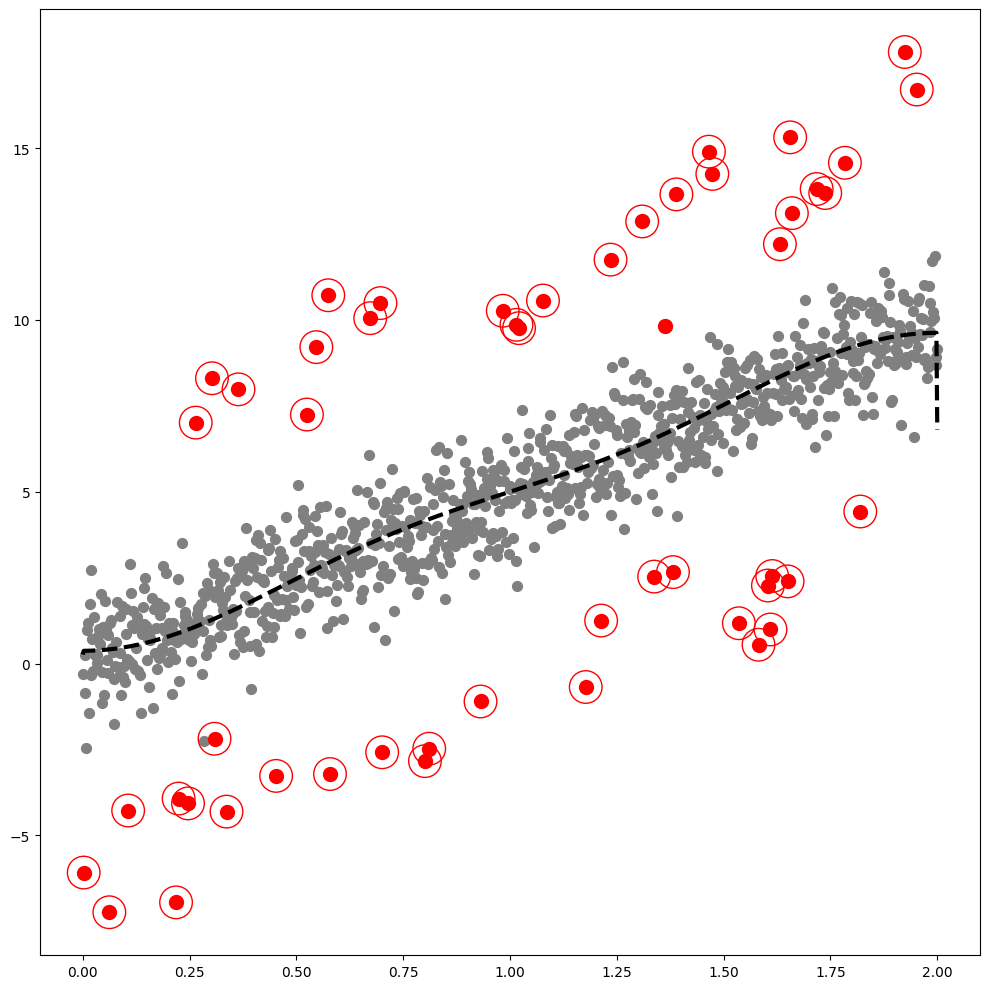
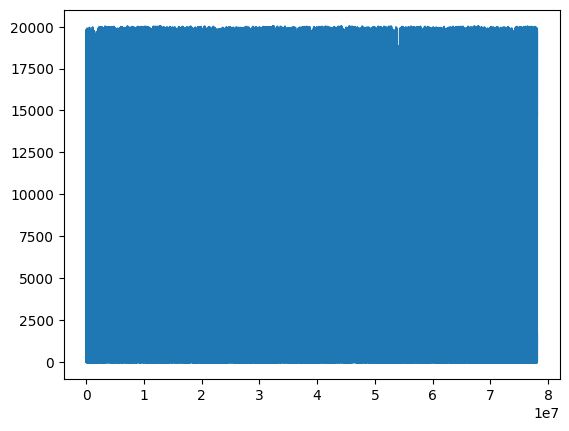
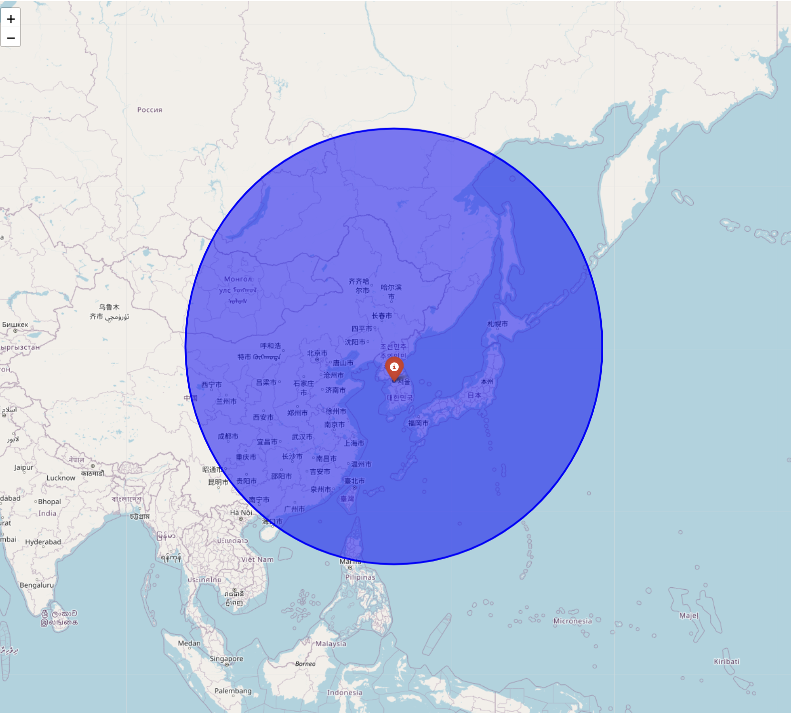

<!DOCTYPE html>
<html xmlns="http://www.w3.org/1999/xhtml" lang="en" xml:lang="en"><head>

<meta charset="utf-8">
<meta name="generator" content="quarto-1.4.527">

<meta name="viewport" content="width=device-width, initial-scale=1.0, user-scalable=yes">

<meta name="author" content="SEOYEON CHOI">
<meta name="dcterms.date" content="2024-06-22">

<title>GODE blog - [GODE]Final Graph code for GODE Paper</title>
<style>
code{white-space: pre-wrap;}
span.smallcaps{font-variant: small-caps;}
div.columns{display: flex; gap: min(4vw, 1.5em);}
div.column{flex: auto; overflow-x: auto;}
div.hanging-indent{margin-left: 1.5em; text-indent: -1.5em;}
ul.task-list{list-style: none;}
ul.task-list li input[type="checkbox"] {
  width: 0.8em;
  margin: 0 0.8em 0.2em -1em; /* quarto-specific, see https://github.com/quarto-dev/quarto-cli/issues/4556 */ 
  vertical-align: middle;
}
/* CSS for syntax highlighting */
pre > code.sourceCode { white-space: pre; position: relative; }
pre > code.sourceCode > span { line-height: 1.25; }
pre > code.sourceCode > span:empty { height: 1.2em; }
.sourceCode { overflow: visible; }
code.sourceCode > span { color: inherit; text-decoration: inherit; }
div.sourceCode { margin: 1em 0; }
pre.sourceCode { margin: 0; }
@media screen {
div.sourceCode { overflow: auto; }
}
@media print {
pre > code.sourceCode { white-space: pre-wrap; }
pre > code.sourceCode > span { text-indent: -5em; padding-left: 5em; }
}
pre.numberSource code
  { counter-reset: source-line 0; }
pre.numberSource code > span
  { position: relative; left: -4em; counter-increment: source-line; }
pre.numberSource code > span > a:first-child::before
  { content: counter(source-line);
    position: relative; left: -1em; text-align: right; vertical-align: baseline;
    border: none; display: inline-block;
    -webkit-touch-callout: none; -webkit-user-select: none;
    -khtml-user-select: none; -moz-user-select: none;
    -ms-user-select: none; user-select: none;
    padding: 0 4px; width: 4em;
  }
pre.numberSource { margin-left: 3em;  padding-left: 4px; }
div.sourceCode
  {   }
@media screen {
pre > code.sourceCode > span > a:first-child::before { text-decoration: underline; }
}
</style>


<script src="https://cdnjs.cloudflare.com/ajax/libs/jquery/3.5.1/jquery.min.js" integrity="sha512-bLT0Qm9VnAYZDflyKcBaQ2gg0hSYNQrJ8RilYldYQ1FxQYoCLtUjuuRuZo+fjqhx/qtq/1itJ0C2ejDxltZVFg==" crossorigin="anonymous"></script><script src="../../../site_libs/quarto-nav/quarto-nav.js"></script>
<script src="../../../site_libs/quarto-nav/headroom.min.js"></script>
<script src="../../../site_libs/clipboard/clipboard.min.js"></script>
<script src="../../../site_libs/quarto-search/autocomplete.umd.js"></script>
<script src="../../../site_libs/quarto-search/fuse.min.js"></script>
<script src="../../../site_libs/quarto-search/quarto-search.js"></script>
<meta name="quarto:offset" content="../../../">
<script src="../../../site_libs/quarto-html/quarto.js"></script>
<script src="../../../site_libs/quarto-html/popper.min.js"></script>
<script src="../../../site_libs/quarto-html/tippy.umd.min.js"></script>
<script src="../../../site_libs/quarto-html/anchor.min.js"></script>
<link href="../../../site_libs/quarto-html/tippy.css" rel="stylesheet">
<link href="../../../site_libs/quarto-html/quarto-syntax-highlighting.css" rel="stylesheet" id="quarto-text-highlighting-styles">
<script src="../../../site_libs/bootstrap/bootstrap.min.js"></script>
<link href="../../../site_libs/bootstrap/bootstrap-icons.css" rel="stylesheet">
<link href="../../../site_libs/bootstrap/bootstrap.min.css" rel="stylesheet" id="quarto-bootstrap" data-mode="light">
<script id="quarto-search-options" type="application/json">{
  "location": "navbar",
  "copy-button": false,
  "collapse-after": 3,
  "panel-placement": "end",
  "type": "overlay",
  "limit": 50,
  "keyboard-shortcut": [
    "f",
    "/",
    "s"
  ],
  "show-item-context": false,
  "language": {
    "search-no-results-text": "No results",
    "search-matching-documents-text": "matching documents",
    "search-copy-link-title": "Copy link to search",
    "search-hide-matches-text": "Hide additional matches",
    "search-more-match-text": "more match in this document",
    "search-more-matches-text": "more matches in this document",
    "search-clear-button-title": "Clear",
    "search-text-placeholder": "",
    "search-detached-cancel-button-title": "Cancel",
    "search-submit-button-title": "Submit",
    "search-label": "Search"
  }
}</script>
<script src="https://cdnjs.cloudflare.com/ajax/libs/require.js/2.3.6/require.min.js" integrity="sha512-c3Nl8+7g4LMSTdrm621y7kf9v3SDPnhxLNhcjFJbKECVnmZHTdo+IRO05sNLTH/D3vA6u1X32ehoLC7WFVdheg==" crossorigin="anonymous"></script>

<script type="application/javascript">define('jquery', [],function() {return window.jQuery;})</script>


<link rel="stylesheet" href="../../../styles.css">
</head>

<body class="nav-sidebar docked nav-fixed">

<div id="quarto-search-results"></div>
  <header id="quarto-header" class="headroom fixed-top quarto-banner">
    <nav class="navbar navbar-expand-lg " data-bs-theme="dark">
      <div class="navbar-container container-fluid">
      <div class="navbar-brand-container mx-auto">
    <a class="navbar-brand" href="../../../index.html">
    <span class="navbar-title">GODE blog</span>
    </a>
  </div>
            <div id="quarto-search" class="" title="Search"></div>
          <button class="navbar-toggler" type="button" data-bs-toggle="collapse" data-bs-target="#navbarCollapse" aria-controls="navbarCollapse" aria-expanded="false" aria-label="Toggle navigation" onclick="if (window.quartoToggleHeadroom) { window.quartoToggleHeadroom(); }">
  <span class="navbar-toggler-icon"></span>
</button>
          <div class="collapse navbar-collapse" id="navbarCollapse">
            <ul class="navbar-nav navbar-nav-scroll me-auto">
  <li class="nav-item">
    <a class="nav-link" href="https://seoyeonc.github.io/sy_hub/"> 
<span class="menu-text">Main_Blog</span></a>
  </li>  
</ul>
            <ul class="navbar-nav navbar-nav-scroll ms-auto">
  <li class="nav-item">
    <a class="nav-link" href="../../../about.html"> 
<span class="menu-text">About</span></a>
  </li>  
  <li class="nav-item compact">
    <a class="nav-link" href="https://github.com/seoyeonc"> <i class="bi bi-github" role="img">
</i> 
<span class="menu-text"></span></a>
  </li>  
</ul>
          </div> <!-- /navcollapse -->
          <div class="quarto-navbar-tools">
</div>
      </div> <!-- /container-fluid -->
    </nav>
  <nav class="quarto-secondary-nav">
    <div class="container-fluid d-flex">
      <button type="button" class="quarto-btn-toggle btn" data-bs-toggle="collapse" data-bs-target=".quarto-sidebar-collapse-item" aria-controls="quarto-sidebar" aria-expanded="false" aria-label="Toggle sidebar navigation" onclick="if (window.quartoToggleHeadroom) { window.quartoToggleHeadroom(); }">
        <i class="bi bi-layout-text-sidebar-reverse"></i>
      </button>
        <nav class="quarto-page-breadcrumbs" aria-label="breadcrumb"><ol class="breadcrumb"><li class="breadcrumb-item">[GODE]Final Graph code for GODE Paper</li></ol></nav>
        <a class="flex-grow-1" role="button" data-bs-toggle="collapse" data-bs-target=".quarto-sidebar-collapse-item" aria-controls="quarto-sidebar" aria-expanded="false" aria-label="Toggle sidebar navigation" onclick="if (window.quartoToggleHeadroom) { window.quartoToggleHeadroom(); }">      
        </a>
      <button type="button" class="btn quarto-search-button" aria-label="" onclick="window.quartoOpenSearch();">
        <i class="bi bi-search"></i>
      </button>
    </div>
  </nav>
</header>
<!-- content -->
<header id="title-block-header" class="quarto-title-block default page-columns page-full">
  <div class="quarto-title-banner page-columns page-full">
    <div class="quarto-title column-body">
      <h1 class="title">[GODE]Final Graph code for GODE Paper</h1>
                      </div>
  </div>
    
  
  <div class="quarto-title-meta">

      <div>
      <div class="quarto-title-meta-heading">Author</div>
      <div class="quarto-title-meta-contents">
               <p>SEOYEON CHOI </p>
            </div>
    </div>
      
      <div>
      <div class="quarto-title-meta-heading">Published</div>
      <div class="quarto-title-meta-contents">
        <p class="date">June 22, 2024</p>
      </div>
    </div>
    
      
    </div>
    
  
  </header><div id="quarto-content" class="quarto-container page-columns page-rows-contents page-layout-article page-navbar">
<!-- sidebar -->
  <nav id="quarto-sidebar" class="sidebar collapse collapse-horizontal quarto-sidebar-collapse-item sidebar-navigation docked overflow-auto">
        <div class="mt-2 flex-shrink-0 align-items-center">
        <div class="sidebar-search">
        <div id="quarto-search" class="" title="Search"></div>
        </div>
        </div>
    <div class="sidebar-menu-container"> 
    <ul class="list-unstyled mt-1">
        <li class="sidebar-item">
  <div class="sidebar-item-container"> 
  <a href="../../../1_studies.html" class="sidebar-item-text sidebar-link">
 <span class="menu-text"><strong>Studies</strong></span></a>
  </div>
</li>
        <li class="sidebar-item sidebar-item-section">
      <div class="sidebar-item-container"> 
            <a class="sidebar-item-text sidebar-link text-start" data-bs-toggle="collapse" data-bs-target="#quarto-sidebar-section-1" aria-expanded="true">
 <span class="menu-text"><strong>Research</strong></span></a>
          <a class="sidebar-item-toggle text-start" data-bs-toggle="collapse" data-bs-target="#quarto-sidebar-section-1" aria-expanded="true" aria-label="Toggle section">
            <i class="bi bi-chevron-right ms-2"></i>
          </a> 
      </div>
      <ul id="quarto-sidebar-section-1" class="collapse list-unstyled sidebar-section depth1 show">  
          <li class="sidebar-item">
  <div class="sidebar-item-container"> 
  <a href="../../../2_research.html" class="sidebar-item-text sidebar-link">
 <span class="menu-text"><strong>Research</strong></span></a>
  </div>
</li>
      </ul>
  </li>
        <li class="sidebar-item sidebar-item-section">
      <div class="sidebar-item-container"> 
            <a class="sidebar-item-text sidebar-link text-start" data-bs-toggle="collapse" data-bs-target="#quarto-sidebar-section-2" aria-expanded="true">
 <span class="menu-text"><strong>Result</strong></span></a>
          <a class="sidebar-item-toggle text-start" data-bs-toggle="collapse" data-bs-target="#quarto-sidebar-section-2" aria-expanded="true" aria-label="Toggle section">
            <i class="bi bi-chevron-right ms-2"></i>
          </a> 
      </div>
      <ul id="quarto-sidebar-section-2" class="collapse list-unstyled sidebar-section depth1 show">  
          <li class="sidebar-item">
  <div class="sidebar-item-container"> 
  <a href="../../../3_table.html" class="sidebar-item-text sidebar-link">
 <span class="menu-text"><strong>Table</strong></span></a>
  </div>
</li>
          <li class="sidebar-item">
  <div class="sidebar-item-container"> 
  <a href="../../../4_figure.html" class="sidebar-item-text sidebar-link">
 <span class="menu-text"><strong>Figure</strong></span></a>
  </div>
</li>
      </ul>
  </li>
    </ul>
    </div>
</nav>
<div id="quarto-sidebar-glass" class="quarto-sidebar-collapse-item" data-bs-toggle="collapse" data-bs-target=".quarto-sidebar-collapse-item"></div>
<!-- margin-sidebar -->
    <div id="quarto-margin-sidebar" class="sidebar margin-sidebar">
        <nav id="TOC" role="doc-toc" class="toc-active">
    <h2 id="toc-title">On this page</h2>
   
  <ul>
  <li><a href="#import" id="toc-import" class="nav-link active" data-scroll-target="#import">Import</a>
  <ul class="collapse">
  <li><a href="#linear" id="toc-linear" class="nav-link" data-scroll-target="#linear">Linear</a></li>
  <li><a href="#orbit" id="toc-orbit" class="nav-link" data-scroll-target="#orbit">Orbit</a></li>
  <li><a href="#bunny" id="toc-bunny" class="nav-link" data-scroll-target="#bunny">Bunny</a></li>
  </ul></li>
  <li><a href="#linear-appendix" id="toc-linear-appendix" class="nav-link" data-scroll-target="#linear-appendix">Linear appendix</a>
  <ul class="collapse">
  <li><a href="#n-1000-sparsity-1" id="toc-n-1000-sparsity-1" class="nav-link" data-scroll-target="#n-1000-sparsity-1">N = 1000, Sparsity = 1%</a></li>
  <li><a href="#n-1000-sparsity-5" id="toc-n-1000-sparsity-5" class="nav-link" data-scroll-target="#n-1000-sparsity-5">N = 1000, Sparsity = 5%</a></li>
  <li><a href="#n-1000-sparsity-10" id="toc-n-1000-sparsity-10" class="nav-link" data-scroll-target="#n-1000-sparsity-10">N = 1000, Sparsity = 10%</a></li>
  <li><a href="#n-5000-sparsity-1" id="toc-n-5000-sparsity-1" class="nav-link" data-scroll-target="#n-5000-sparsity-1">N = 5000, Sparsity = 1%</a></li>
  <li><a href="#n-5000-sparsity-5" id="toc-n-5000-sparsity-5" class="nav-link" data-scroll-target="#n-5000-sparsity-5">N = 5000, Sparsity = 5%</a></li>
  <li><a href="#n-5000-sparsity-10" id="toc-n-5000-sparsity-10" class="nav-link" data-scroll-target="#n-5000-sparsity-10">N = 5000, Sparsity = 10%</a></li>
  <li><a href="#n-10000-sparsity-1" id="toc-n-10000-sparsity-1" class="nav-link" data-scroll-target="#n-10000-sparsity-1">N = 10000, Sparsity = 1%</a></li>
  <li><a href="#n-10000-sparsity-5" id="toc-n-10000-sparsity-5" class="nav-link" data-scroll-target="#n-10000-sparsity-5">N = 10000, Sparsity = 5%</a></li>
  <li><a href="#n-10000-sparsity-10" id="toc-n-10000-sparsity-10" class="nav-link" data-scroll-target="#n-10000-sparsity-10">N = 10000, Sparsity = 10%</a></li>
  </ul></li>
  <li><a href="#orbit-appendix" id="toc-orbit-appendix" class="nav-link" data-scroll-target="#orbit-appendix">Orbit appendix</a>
  <ul class="collapse">
  <li><a href="#n-1000-sparsity-1-1" id="toc-n-1000-sparsity-1-1" class="nav-link" data-scroll-target="#n-1000-sparsity-1-1">N = 1000, Sparsity = 1%</a></li>
  <li><a href="#n-1000-sparsity-5-1" id="toc-n-1000-sparsity-5-1" class="nav-link" data-scroll-target="#n-1000-sparsity-5-1">N = 1000, Sparsity = 5%</a></li>
  <li><a href="#n-1000-sparsity-10-1" id="toc-n-1000-sparsity-10-1" class="nav-link" data-scroll-target="#n-1000-sparsity-10-1">N = 1000, Sparsity = 10%</a></li>
  <li><a href="#n-5000-sparsity-1-1" id="toc-n-5000-sparsity-1-1" class="nav-link" data-scroll-target="#n-5000-sparsity-1-1">N = 5000, Sparsity = 1%</a></li>
  <li><a href="#n-5000-sparsity-5-1" id="toc-n-5000-sparsity-5-1" class="nav-link" data-scroll-target="#n-5000-sparsity-5-1">N = 5000, Sparsity = 5%</a></li>
  <li><a href="#n-5000-sparsity-10-1" id="toc-n-5000-sparsity-10-1" class="nav-link" data-scroll-target="#n-5000-sparsity-10-1">N = 5000, Sparsity = 10%</a></li>
  <li><a href="#n-10000-sparsity-1-1" id="toc-n-10000-sparsity-1-1" class="nav-link" data-scroll-target="#n-10000-sparsity-1-1">N = 10000, Sparsity = 1%</a></li>
  <li><a href="#n-10000-sparsity-5-1" id="toc-n-10000-sparsity-5-1" class="nav-link" data-scroll-target="#n-10000-sparsity-5-1">N = 10000, Sparsity = 5%</a></li>
  <li><a href="#n-10000-sparsity-10-1" id="toc-n-10000-sparsity-10-1" class="nav-link" data-scroll-target="#n-10000-sparsity-10-1">N = 10000, Sparsity = 10%</a></li>
  </ul></li>
  <li><a href="#bunny-1" id="toc-bunny-1" class="nav-link" data-scroll-target="#bunny-1">Bunny</a>
  <ul class="collapse">
  <li><a href="#sparsity-1" id="toc-sparsity-1" class="nav-link" data-scroll-target="#sparsity-1">Sparsity = 1%</a></li>
  <li><a href="#sparsity-5" id="toc-sparsity-5" class="nav-link" data-scroll-target="#sparsity-5">Sparsity = 5%</a></li>
  <li><a href="#sparsity-10" id="toc-sparsity-10" class="nav-link" data-scroll-target="#sparsity-10">Sparsity = 10%</a></li>
  </ul></li>
  <li><a href="#earthquake" id="toc-earthquake" class="nav-link" data-scroll-target="#earthquake">Earthquake</a>
  <ul class="collapse">
  <li><a href="#distance-분포" id="toc-distance-분포" class="nav-link" data-scroll-target="#distance-분포">Distance 분포</a></li>
  <li><a href="#map-에-distance가-2500이하인-구간-표시" id="toc-map-에-distance가-2500이하인-구간-표시" class="nav-link" data-scroll-target="#map-에-distance가-2500이하인-구간-표시">map 에 distance가 2500이하인 구간 표시</a></li>
  </ul></li>
  </ul>
</nav>
    </div>
<!-- main -->
<main class="content quarto-banner-title-block" id="quarto-document-content">


<section id="import" class="level1">
<h1>Import</h1>
<div id="b5e6bcf7-f585-4ca5-8900-81254d3b2e6b" class="cell" data-execution_count="235">
<div class="sourceCode cell-code" id="cb1"><pre class="sourceCode python"><code class="sourceCode python"><span id="cb1-1"><a href="#cb1-1" aria-hidden="true" tabindex="-1"></a><span class="im">import</span> tqdm</span>
<span id="cb1-2"><a href="#cb1-2" aria-hidden="true" tabindex="-1"></a><span class="im">import</span> numpy <span class="im">as</span> np</span>
<span id="cb1-3"><a href="#cb1-3" aria-hidden="true" tabindex="-1"></a><span class="im">import</span> pandas <span class="im">as</span> pd</span>
<span id="cb1-4"><a href="#cb1-4" aria-hidden="true" tabindex="-1"></a><span class="im">import</span> matplotlib.pyplot <span class="im">as</span> plt </span>
<span id="cb1-5"><a href="#cb1-5" aria-hidden="true" tabindex="-1"></a><span class="im">import</span> plotly.express <span class="im">as</span> px</span>
<span id="cb1-6"><a href="#cb1-6" aria-hidden="true" tabindex="-1"></a><span class="im">import</span> warnings</span>
<span id="cb1-7"><a href="#cb1-7" aria-hidden="true" tabindex="-1"></a>warnings.simplefilter(<span class="st">"ignore"</span>, np.ComplexWarning)</span>
<span id="cb1-8"><a href="#cb1-8" aria-hidden="true" tabindex="-1"></a><span class="im">from</span> haversine <span class="im">import</span> haversine</span>
<span id="cb1-9"><a href="#cb1-9" aria-hidden="true" tabindex="-1"></a><span class="im">from</span> IPython.display <span class="im">import</span> HTML</span></code></pre></div>
</div>
<div id="b5687c89-4cf2-4660-a29c-f041ff72c796" class="cell" data-execution_count="236">
<div class="sourceCode cell-code" id="cb2"><pre class="sourceCode python"><code class="sourceCode python"><span id="cb2-1"><a href="#cb2-1" aria-hidden="true" tabindex="-1"></a><span class="im">from</span> matplotlib <span class="im">import</span> cm</span>
<span id="cb2-2"><a href="#cb2-2" aria-hidden="true" tabindex="-1"></a><span class="im">from</span> pygsp <span class="im">import</span> graphs, filters, plotting, utils</span>
<span id="cb2-3"><a href="#cb2-3" aria-hidden="true" tabindex="-1"></a><span class="im">import</span> plotly.graph_objects <span class="im">as</span> go</span>
<span id="cb2-4"><a href="#cb2-4" aria-hidden="true" tabindex="-1"></a></span>
<span id="cb2-5"><a href="#cb2-5" aria-hidden="true" tabindex="-1"></a><span class="im">import</span> rpy2</span>
<span id="cb2-6"><a href="#cb2-6" aria-hidden="true" tabindex="-1"></a><span class="im">import</span> rpy2.robjects <span class="im">as</span> ro </span>
<span id="cb2-7"><a href="#cb2-7" aria-hidden="true" tabindex="-1"></a><span class="im">from</span> rpy2.robjects.vectors <span class="im">import</span> FloatVector </span>
<span id="cb2-8"><a href="#cb2-8" aria-hidden="true" tabindex="-1"></a><span class="im">from</span> rpy2.robjects.packages <span class="im">import</span> importr</span></code></pre></div>
</div>
<div id="09d5b370-79e0-493f-a11e-91d52494863d" class="cell" data-execution_count="237">
<div class="sourceCode cell-code" id="cb3"><pre class="sourceCode python"><code class="sourceCode python"><span id="cb3-1"><a href="#cb3-1" aria-hidden="true" tabindex="-1"></a><span class="im">import</span> warnings</span>
<span id="cb3-2"><a href="#cb3-2" aria-hidden="true" tabindex="-1"></a>warnings.filterwarnings(<span class="st">"ignore"</span>)</span></code></pre></div>
</div>
<section id="linear" class="level2">
<h2 class="anchored" data-anchor-id="linear">Linear</h2>
<div id="fe6de473-3036-4f3b-9841-44b5e51a68d1" class="cell" data-execution_count="24">
<div class="sourceCode cell-code" id="cb4"><pre class="sourceCode python"><code class="sourceCode python"><span id="cb4-1"><a href="#cb4-1" aria-hidden="true" tabindex="-1"></a>np.random.seed(<span class="dv">6</span>)</span>
<span id="cb4-2"><a href="#cb4-2" aria-hidden="true" tabindex="-1"></a></span>
<span id="cb4-3"><a href="#cb4-3" aria-hidden="true" tabindex="-1"></a>n <span class="op">=</span> <span class="dv">1000</span></span>
<span id="cb4-4"><a href="#cb4-4" aria-hidden="true" tabindex="-1"></a>eta_sparsity <span class="op">=</span> <span class="fl">0.05</span></span>
<span id="cb4-5"><a href="#cb4-5" aria-hidden="true" tabindex="-1"></a></span>
<span id="cb4-6"><a href="#cb4-6" aria-hidden="true" tabindex="-1"></a>epsilon <span class="op">=</span> np.around(np.random.normal(size<span class="op">=</span>n),<span class="dv">15</span>)</span>
<span id="cb4-7"><a href="#cb4-7" aria-hidden="true" tabindex="-1"></a>signal <span class="op">=</span> np.random.choice(np.concatenate((np.random.uniform(<span class="op">-</span><span class="dv">7</span>, <span class="op">-</span><span class="dv">5</span>, <span class="bu">round</span>(n<span class="op">*</span>eta_sparsity<span class="op">/</span><span class="dv">2</span>)).<span class="bu">round</span>(<span class="dv">15</span>), np.random.uniform(<span class="dv">5</span>, <span class="dv">7</span>, <span class="bu">round</span>(n<span class="op">*</span>eta_sparsity<span class="op">/</span><span class="dv">2</span>)).<span class="bu">round</span>(<span class="dv">15</span>), np.repeat(<span class="dv">0</span>, n <span class="op">-</span> <span class="bu">round</span>(n<span class="op">*</span>eta_sparsity)))), n)</span>
<span id="cb4-8"><a href="#cb4-8" aria-hidden="true" tabindex="-1"></a>eta <span class="op">=</span> signal <span class="op">+</span> epsilon</span>
<span id="cb4-9"><a href="#cb4-9" aria-hidden="true" tabindex="-1"></a></span>
<span id="cb4-10"><a href="#cb4-10" aria-hidden="true" tabindex="-1"></a>outlier_true_linear<span class="op">=</span> signal.copy()</span>
<span id="cb4-11"><a href="#cb4-11" aria-hidden="true" tabindex="-1"></a>outlier_true_linear <span class="op">=</span> <span class="bu">list</span>(<span class="bu">map</span>(<span class="kw">lambda</span> x: <span class="dv">1</span> <span class="cf">if</span> x<span class="op">!=</span><span class="dv">0</span> <span class="cf">else</span> <span class="dv">0</span>,outlier_true_linear))</span>
<span id="cb4-12"><a href="#cb4-12" aria-hidden="true" tabindex="-1"></a></span>
<span id="cb4-13"><a href="#cb4-13" aria-hidden="true" tabindex="-1"></a>x_1 <span class="op">=</span> np.linspace(<span class="dv">0</span>,<span class="dv">2</span>,n)</span>
<span id="cb4-14"><a href="#cb4-14" aria-hidden="true" tabindex="-1"></a>y1_1 <span class="op">=</span> <span class="dv">5</span> <span class="op">*</span> x_1</span>
<span id="cb4-15"><a href="#cb4-15" aria-hidden="true" tabindex="-1"></a>y_1 <span class="op">=</span> y1_1 <span class="op">+</span> eta <span class="co"># eta = signal + epsilon</span></span>
<span id="cb4-16"><a href="#cb4-16" aria-hidden="true" tabindex="-1"></a></span>
<span id="cb4-17"><a href="#cb4-17" aria-hidden="true" tabindex="-1"></a>_df<span class="op">=</span>pd.DataFrame({<span class="st">'x'</span>:x_1, <span class="st">'y'</span>:y_1})</span>
<span id="cb4-18"><a href="#cb4-18" aria-hidden="true" tabindex="-1"></a></span>
<span id="cb4-19"><a href="#cb4-19" aria-hidden="true" tabindex="-1"></a>w<span class="op">=</span>np.zeros((n,n))</span>
<span id="cb4-20"><a href="#cb4-20" aria-hidden="true" tabindex="-1"></a></span>
<span id="cb4-21"><a href="#cb4-21" aria-hidden="true" tabindex="-1"></a><span class="cf">for</span> i <span class="kw">in</span> <span class="bu">range</span>(n):</span>
<span id="cb4-22"><a href="#cb4-22" aria-hidden="true" tabindex="-1"></a>    <span class="cf">for</span> j <span class="kw">in</span> <span class="bu">range</span>(n):</span>
<span id="cb4-23"><a href="#cb4-23" aria-hidden="true" tabindex="-1"></a>        <span class="cf">if</span> i<span class="op">==</span>j :</span>
<span id="cb4-24"><a href="#cb4-24" aria-hidden="true" tabindex="-1"></a>            w[i,j] <span class="op">=</span> <span class="dv">0</span></span>
<span id="cb4-25"><a href="#cb4-25" aria-hidden="true" tabindex="-1"></a>        <span class="cf">elif</span> np.<span class="bu">abs</span>(i<span class="op">-</span>j) <span class="op">&lt;=</span> <span class="dv">1</span> : </span>
<span id="cb4-26"><a href="#cb4-26" aria-hidden="true" tabindex="-1"></a>            w[i,j] <span class="op">=</span> <span class="dv">1</span></span>
<span id="cb4-27"><a href="#cb4-27" aria-hidden="true" tabindex="-1"></a></span>
<span id="cb4-28"><a href="#cb4-28" aria-hidden="true" tabindex="-1"></a>index_of_trueoutlier_bool <span class="op">=</span> signal<span class="op">!=</span><span class="dv">0</span></span></code></pre></div>
</div>
<div id="895c4d0d-d491-452e-9d0a-fc4584bd618a" class="cell" data-execution_count="25">
<div class="sourceCode cell-code" id="cb5"><pre class="sourceCode python"><code class="sourceCode python"><span id="cb5-1"><a href="#cb5-1" aria-hidden="true" tabindex="-1"></a><span class="kw">class</span> Linear:</span>
<span id="cb5-2"><a href="#cb5-2" aria-hidden="true" tabindex="-1"></a>    <span class="kw">def</span> <span class="fu">__init__</span>(<span class="va">self</span>,df):</span>
<span id="cb5-3"><a href="#cb5-3" aria-hidden="true" tabindex="-1"></a>        <span class="va">self</span>.df <span class="op">=</span> df</span>
<span id="cb5-4"><a href="#cb5-4" aria-hidden="true" tabindex="-1"></a>        <span class="va">self</span>.y <span class="op">=</span> df.y.to_numpy()</span>
<span id="cb5-5"><a href="#cb5-5" aria-hidden="true" tabindex="-1"></a>        <span class="va">self</span>.x <span class="op">=</span> df.x.to_numpy()</span>
<span id="cb5-6"><a href="#cb5-6" aria-hidden="true" tabindex="-1"></a>        <span class="va">self</span>.n <span class="op">=</span> <span class="bu">len</span>(<span class="va">self</span>.y)</span>
<span id="cb5-7"><a href="#cb5-7" aria-hidden="true" tabindex="-1"></a>        <span class="va">self</span>.W <span class="op">=</span> w</span>
<span id="cb5-8"><a href="#cb5-8" aria-hidden="true" tabindex="-1"></a>    <span class="kw">def</span> _eigen(<span class="va">self</span>):</span>
<span id="cb5-9"><a href="#cb5-9" aria-hidden="true" tabindex="-1"></a>        d<span class="op">=</span> <span class="va">self</span>.W.<span class="bu">sum</span>(axis<span class="op">=</span><span class="dv">1</span>)</span>
<span id="cb5-10"><a href="#cb5-10" aria-hidden="true" tabindex="-1"></a>        D<span class="op">=</span> np.diag(d)</span>
<span id="cb5-11"><a href="#cb5-11" aria-hidden="true" tabindex="-1"></a>        <span class="va">self</span>.L <span class="op">=</span> np.diag(<span class="dv">1</span><span class="op">/</span>np.sqrt(d)) <span class="op">@</span> (D<span class="op">-</span><span class="va">self</span>.W) <span class="op">@</span> np.diag(<span class="dv">1</span><span class="op">/</span>np.sqrt(d))</span>
<span id="cb5-12"><a href="#cb5-12" aria-hidden="true" tabindex="-1"></a>        <span class="va">self</span>.lamb, <span class="va">self</span>.Psi <span class="op">=</span> np.linalg.eigh(<span class="va">self</span>.L)</span>
<span id="cb5-13"><a href="#cb5-13" aria-hidden="true" tabindex="-1"></a>        <span class="va">self</span>.Lamb <span class="op">=</span> np.diag(<span class="va">self</span>.lamb)      </span>
<span id="cb5-14"><a href="#cb5-14" aria-hidden="true" tabindex="-1"></a>    <span class="kw">def</span> fit(<span class="va">self</span>,sd<span class="op">=</span><span class="dv">20</span>): <span class="co"># fit with ebayesthresh</span></span>
<span id="cb5-15"><a href="#cb5-15" aria-hidden="true" tabindex="-1"></a>        <span class="va">self</span>._eigen()</span>
<span id="cb5-16"><a href="#cb5-16" aria-hidden="true" tabindex="-1"></a>        <span class="va">self</span>.ybar <span class="op">=</span> <span class="va">self</span>.Psi.T <span class="op">@</span> <span class="va">self</span>.y <span class="co"># fbar := graph fourier transform of f</span></span>
<span id="cb5-17"><a href="#cb5-17" aria-hidden="true" tabindex="-1"></a>        <span class="va">self</span>.power <span class="op">=</span> <span class="va">self</span>.ybar<span class="op">**</span><span class="dv">2</span> </span>
<span id="cb5-18"><a href="#cb5-18" aria-hidden="true" tabindex="-1"></a>        ebayesthresh <span class="op">=</span> importr(<span class="st">'EbayesThresh'</span>).ebayesthresh</span>
<span id="cb5-19"><a href="#cb5-19" aria-hidden="true" tabindex="-1"></a>        <span class="va">self</span>.power_threshed<span class="op">=</span>np.array(ebayesthresh(FloatVector(<span class="va">self</span>.power),sd<span class="op">=</span>sd))</span>
<span id="cb5-20"><a href="#cb5-20" aria-hidden="true" tabindex="-1"></a>        <span class="va">self</span>.ybar_threshed <span class="op">=</span> np.where(<span class="va">self</span>.power_threshed<span class="op">&gt;</span><span class="dv">0</span>,<span class="va">self</span>.ybar,<span class="dv">0</span>)</span>
<span id="cb5-21"><a href="#cb5-21" aria-hidden="true" tabindex="-1"></a>        <span class="va">self</span>.yhat <span class="op">=</span> <span class="va">self</span>.Psi<span class="op">@</span>self.ybar_threshed</span>
<span id="cb5-22"><a href="#cb5-22" aria-hidden="true" tabindex="-1"></a>        <span class="va">self</span>.df <span class="op">=</span> <span class="va">self</span>.df.assign(yHat <span class="op">=</span> <span class="va">self</span>.yhat)</span>
<span id="cb5-23"><a href="#cb5-23" aria-hidden="true" tabindex="-1"></a>        <span class="va">self</span>.df <span class="op">=</span> <span class="va">self</span>.df.assign(Residual <span class="op">=</span> <span class="va">self</span>.df.y<span class="op">-</span> <span class="va">self</span>.df.yHat)</span>
<span id="cb5-24"><a href="#cb5-24" aria-hidden="true" tabindex="-1"></a>    <span class="kw">def</span> fig(<span class="va">self</span>,ymin<span class="op">=-</span><span class="dv">5</span>,ymax<span class="op">=</span><span class="dv">20</span>,cuts<span class="op">=</span><span class="dv">0</span>,cutf<span class="op">=</span><span class="dv">1495</span>):</span>
<span id="cb5-25"><a href="#cb5-25" aria-hidden="true" tabindex="-1"></a>        outlier_GODE_linear_old <span class="op">=</span> (<span class="va">self</span>.df[<span class="st">'Residual'</span>]<span class="op">**</span><span class="dv">2</span>).tolist()</span>
<span id="cb5-26"><a href="#cb5-26" aria-hidden="true" tabindex="-1"></a>        sorted_data <span class="op">=</span> <span class="bu">sorted</span>(outlier_GODE_linear_old,reverse<span class="op">=</span><span class="va">True</span>)</span>
<span id="cb5-27"><a href="#cb5-27" aria-hidden="true" tabindex="-1"></a>        index <span class="op">=</span> <span class="bu">int</span>(<span class="bu">len</span>(sorted_data) <span class="op">*</span> eta_sparsity)</span>
<span id="cb5-28"><a href="#cb5-28" aria-hidden="true" tabindex="-1"></a>        five_percent <span class="op">=</span> sorted_data[index]</span>
<span id="cb5-29"><a href="#cb5-29" aria-hidden="true" tabindex="-1"></a>        outlier_GODE_linear <span class="op">=</span> <span class="bu">list</span>(<span class="bu">map</span>(<span class="kw">lambda</span> x: <span class="dv">1</span> <span class="cf">if</span> x <span class="op">&gt;</span> five_percent <span class="cf">else</span> <span class="dv">0</span>,outlier_GODE_linear_old))</span>
<span id="cb5-30"><a href="#cb5-30" aria-hidden="true" tabindex="-1"></a>        outlier_GODE_linear_index <span class="op">=</span> [i <span class="cf">for</span> i, value <span class="kw">in</span> <span class="bu">enumerate</span>(outlier_GODE_linear_old) <span class="cf">if</span> value <span class="op">&gt;</span> five_percent]</span>
<span id="cb5-31"><a href="#cb5-31" aria-hidden="true" tabindex="-1"></a></span>
<span id="cb5-32"><a href="#cb5-32" aria-hidden="true" tabindex="-1"></a>        fig,ax <span class="op">=</span> plt.subplots(figsize<span class="op">=</span>(<span class="dv">10</span>,<span class="dv">10</span>))</span>
<span id="cb5-33"><a href="#cb5-33" aria-hidden="true" tabindex="-1"></a>        ax.scatter(<span class="va">self</span>.x,<span class="va">self</span>.y,color<span class="op">=</span><span class="st">'gray'</span>,s<span class="op">=</span><span class="dv">50</span>)</span>
<span id="cb5-34"><a href="#cb5-34" aria-hidden="true" tabindex="-1"></a>        <span class="co"># ax.scatter(self.x[index_of_trueoutlier_bool],self.y[index_of_trueoutlier_bool],color='red',s=50)        </span></span>
<span id="cb5-35"><a href="#cb5-35" aria-hidden="true" tabindex="-1"></a>        ax.scatter(<span class="va">self</span>.x[index_of_trueoutlier_bool],<span class="va">self</span>.y[index_of_trueoutlier_bool],color<span class="op">=</span><span class="st">'red'</span>,s<span class="op">=</span><span class="dv">100</span>)</span>
<span id="cb5-36"><a href="#cb5-36" aria-hidden="true" tabindex="-1"></a>        ax.plot(<span class="va">self</span>.x[cuts:cutf],<span class="va">self</span>.yhat[cuts:cutf], <span class="st">'--k'</span>,lw<span class="op">=</span><span class="dv">3</span>)</span>
<span id="cb5-37"><a href="#cb5-37" aria-hidden="true" tabindex="-1"></a>        ax.scatter(<span class="va">self</span>.df.x[outlier_GODE_linear_index],<span class="va">self</span>.df.y[outlier_GODE_linear_index],color<span class="op">=</span><span class="st">'red'</span>,s<span class="op">=</span><span class="dv">550</span>,facecolors<span class="op">=</span><span class="st">'none'</span>, edgecolors<span class="op">=</span><span class="st">'r'</span>)</span>
<span id="cb5-38"><a href="#cb5-38" aria-hidden="true" tabindex="-1"></a>        fig.tight_layout()</span>
<span id="cb5-39"><a href="#cb5-39" aria-hidden="true" tabindex="-1"></a>        <span class="co"># fig.savefig('fig1_231103.eps',format='eps')</span></span>
<span id="cb5-40"><a href="#cb5-40" aria-hidden="true" tabindex="-1"></a>        <span class="co"># fig.savefig('linear_240623.pdf',format='pdf')</span></span></code></pre></div>
</div>
<div id="2e399a8e-4a61-4e99-9368-a20fffe1ae26" class="cell" data-execution_count="26">
<div class="sourceCode cell-code" id="cb6"><pre class="sourceCode python"><code class="sourceCode python"><span id="cb6-1"><a href="#cb6-1" aria-hidden="true" tabindex="-1"></a>_Linear <span class="op">=</span> Linear(_df)</span>
<span id="cb6-2"><a href="#cb6-2" aria-hidden="true" tabindex="-1"></a>_Linear.fit(sd<span class="op">=</span><span class="dv">20</span>)</span></code></pre></div>
</div>
<div id="d93e17f5-46a8-4e7a-9e28-afeb03f71752" class="cell" data-execution_count="27">
<div class="sourceCode cell-code" id="cb7"><pre class="sourceCode python"><code class="sourceCode python"><span id="cb7-1"><a href="#cb7-1" aria-hidden="true" tabindex="-1"></a>_Linear.fig()</span></code></pre></div>
<div class="cell-output cell-output-display">
<div>
<figure class="figure">
<p></p>
</figure>
</div>
</div>
</div>
</section>
<section id="orbit" class="level2">
<h2 class="anchored" data-anchor-id="orbit">Orbit</h2>
<div id="962fdb9e-170d-4c75-add3-8c116a39dae2" class="cell" data-execution_count="199">
<div class="sourceCode cell-code" id="cb8"><pre class="sourceCode python"><code class="sourceCode python"><span id="cb8-1"><a href="#cb8-1" aria-hidden="true" tabindex="-1"></a>n <span class="op">=</span> <span class="dv">1000</span></span>
<span id="cb8-2"><a href="#cb8-2" aria-hidden="true" tabindex="-1"></a>eta_sparsity <span class="op">=</span> <span class="fl">0.05</span></span>
<span id="cb8-3"><a href="#cb8-3" aria-hidden="true" tabindex="-1"></a>random_seed<span class="op">=</span><span class="dv">77</span></span></code></pre></div>
</div>
<div id="d81bcd52-2434-4c3b-a13c-0ba3d0e947a6" class="cell" data-execution_count="200">
<div class="sourceCode cell-code" id="cb9"><pre class="sourceCode python"><code class="sourceCode python"><span id="cb9-1"><a href="#cb9-1" aria-hidden="true" tabindex="-1"></a>np.random.seed(<span class="dv">777</span>)</span>
<span id="cb9-2"><a href="#cb9-2" aria-hidden="true" tabindex="-1"></a>epsilon <span class="op">=</span> np.around(np.random.normal(size<span class="op">=</span>n),<span class="dv">15</span>)</span>
<span id="cb9-3"><a href="#cb9-3" aria-hidden="true" tabindex="-1"></a>signal <span class="op">=</span> np.random.choice(np.concatenate((np.random.uniform(<span class="op">-</span><span class="dv">4</span>, <span class="op">-</span><span class="dv">1</span>, <span class="bu">round</span>(n <span class="op">*</span> eta_sparsity <span class="op">/</span> <span class="dv">2</span>)).<span class="bu">round</span>(<span class="dv">15</span>), np.random.uniform(<span class="dv">1</span>, <span class="dv">4</span>, <span class="bu">round</span>(n <span class="op">*</span> eta_sparsity <span class="op">/</span> <span class="dv">2</span>)).<span class="bu">round</span>(<span class="dv">15</span>), np.repeat(<span class="dv">0</span>, n <span class="op">-</span> <span class="bu">round</span>(n <span class="op">*</span> eta_sparsity)))), n)</span>
<span id="cb9-4"><a href="#cb9-4" aria-hidden="true" tabindex="-1"></a>eta <span class="op">=</span> signal <span class="op">+</span> epsilon</span>
<span id="cb9-5"><a href="#cb9-5" aria-hidden="true" tabindex="-1"></a>pi<span class="op">=</span>np.pi</span>
<span id="cb9-6"><a href="#cb9-6" aria-hidden="true" tabindex="-1"></a>ang<span class="op">=</span>np.linspace(<span class="op">-</span>pi,pi<span class="op">-</span><span class="dv">2</span><span class="op">*</span>pi<span class="op">/</span>n,n)</span>
<span id="cb9-7"><a href="#cb9-7" aria-hidden="true" tabindex="-1"></a>r<span class="op">=</span><span class="dv">5</span><span class="op">+</span>np.cos(np.linspace(<span class="dv">0</span>,<span class="dv">12</span><span class="op">*</span>pi,n))</span>
<span id="cb9-8"><a href="#cb9-8" aria-hidden="true" tabindex="-1"></a>vx<span class="op">=</span>r<span class="op">*</span>np.cos(ang)</span>
<span id="cb9-9"><a href="#cb9-9" aria-hidden="true" tabindex="-1"></a>vy<span class="op">=</span>r<span class="op">*</span>np.sin(ang)</span>
<span id="cb9-10"><a href="#cb9-10" aria-hidden="true" tabindex="-1"></a>f1<span class="op">=</span><span class="dv">10</span><span class="op">*</span>np.sin(np.linspace(<span class="dv">0</span>,<span class="dv">6</span><span class="op">*</span>pi,n))</span>
<span id="cb9-11"><a href="#cb9-11" aria-hidden="true" tabindex="-1"></a>f <span class="op">=</span> f1 <span class="op">+</span> eta</span>
<span id="cb9-12"><a href="#cb9-12" aria-hidden="true" tabindex="-1"></a>_df <span class="op">=</span> pd.DataFrame({<span class="st">'x'</span> : vx, <span class="st">'y'</span> : vy, <span class="st">'f'</span> : f,<span class="st">'f1'</span>:f1})</span>
<span id="cb9-13"><a href="#cb9-13" aria-hidden="true" tabindex="-1"></a>outlier_true_orbit <span class="op">=</span> signal.copy()</span>
<span id="cb9-14"><a href="#cb9-14" aria-hidden="true" tabindex="-1"></a>outlier_true_orbit <span class="op">=</span> <span class="bu">list</span>(<span class="bu">map</span>(<span class="kw">lambda</span> x: <span class="dv">1</span> <span class="cf">if</span> x<span class="op">!=</span><span class="dv">0</span> <span class="cf">else</span> <span class="dv">0</span>,outlier_true_orbit))</span>
<span id="cb9-15"><a href="#cb9-15" aria-hidden="true" tabindex="-1"></a>index_of_trueoutlier_bool <span class="op">=</span> signal<span class="op">!=</span><span class="dv">0</span></span></code></pre></div>
</div>
<div id="70f5593a-2ab7-4d14-a983-30f9d1134816" class="cell" data-execution_count="201">
<div class="sourceCode cell-code" id="cb10"><pre class="sourceCode python"><code class="sourceCode python"><span id="cb10-1"><a href="#cb10-1" aria-hidden="true" tabindex="-1"></a><span class="kw">class</span> Orbit:</span>
<span id="cb10-2"><a href="#cb10-2" aria-hidden="true" tabindex="-1"></a>    <span class="kw">def</span> <span class="fu">__init__</span>(<span class="va">self</span>,df):</span>
<span id="cb10-3"><a href="#cb10-3" aria-hidden="true" tabindex="-1"></a>        <span class="va">self</span>.df <span class="op">=</span> df </span>
<span id="cb10-4"><a href="#cb10-4" aria-hidden="true" tabindex="-1"></a>        <span class="va">self</span>.f <span class="op">=</span> df.f.to_numpy()</span>
<span id="cb10-5"><a href="#cb10-5" aria-hidden="true" tabindex="-1"></a>        <span class="va">self</span>.f1 <span class="op">=</span> df.f1.to_numpy()</span>
<span id="cb10-6"><a href="#cb10-6" aria-hidden="true" tabindex="-1"></a>        <span class="va">self</span>.x <span class="op">=</span> df.x.to_numpy()</span>
<span id="cb10-7"><a href="#cb10-7" aria-hidden="true" tabindex="-1"></a>        <span class="va">self</span>.y <span class="op">=</span> df.y.to_numpy()</span>
<span id="cb10-8"><a href="#cb10-8" aria-hidden="true" tabindex="-1"></a>        <span class="va">self</span>.n <span class="op">=</span> <span class="bu">len</span>(<span class="va">self</span>.f)</span>
<span id="cb10-9"><a href="#cb10-9" aria-hidden="true" tabindex="-1"></a>        <span class="va">self</span>.theta<span class="op">=</span> <span class="va">None</span></span>
<span id="cb10-10"><a href="#cb10-10" aria-hidden="true" tabindex="-1"></a>    <span class="kw">def</span> get_distance(<span class="va">self</span>):</span>
<span id="cb10-11"><a href="#cb10-11" aria-hidden="true" tabindex="-1"></a>        <span class="va">self</span>.D <span class="op">=</span> np.zeros([<span class="va">self</span>.n,<span class="va">self</span>.n])</span>
<span id="cb10-12"><a href="#cb10-12" aria-hidden="true" tabindex="-1"></a>        locations <span class="op">=</span> np.stack([<span class="va">self</span>.x, <span class="va">self</span>.y],axis<span class="op">=</span><span class="dv">1</span>)</span>
<span id="cb10-13"><a href="#cb10-13" aria-hidden="true" tabindex="-1"></a>        <span class="cf">for</span> i <span class="kw">in</span> tqdm.tqdm(<span class="bu">range</span>(<span class="va">self</span>.n)):</span>
<span id="cb10-14"><a href="#cb10-14" aria-hidden="true" tabindex="-1"></a>            <span class="cf">for</span> j <span class="kw">in</span> <span class="bu">range</span>(i,<span class="va">self</span>.n):</span>
<span id="cb10-15"><a href="#cb10-15" aria-hidden="true" tabindex="-1"></a>                <span class="va">self</span>.D[i,j]<span class="op">=</span>np.linalg.norm(locations[i]<span class="op">-</span>locations[j])</span>
<span id="cb10-16"><a href="#cb10-16" aria-hidden="true" tabindex="-1"></a>        <span class="va">self</span>.D <span class="op">=</span> <span class="va">self</span>.D <span class="op">+</span> <span class="va">self</span>.D.T</span>
<span id="cb10-17"><a href="#cb10-17" aria-hidden="true" tabindex="-1"></a>    <span class="kw">def</span> get_weightmatrix(<span class="va">self</span>,theta<span class="op">=</span><span class="dv">1</span>,beta<span class="op">=</span><span class="fl">0.5</span>,kappa<span class="op">=</span><span class="dv">4000</span>):</span>
<span id="cb10-18"><a href="#cb10-18" aria-hidden="true" tabindex="-1"></a>        <span class="va">self</span>.theta <span class="op">=</span> theta</span>
<span id="cb10-19"><a href="#cb10-19" aria-hidden="true" tabindex="-1"></a>        dist <span class="op">=</span> np.where(<span class="va">self</span>.D <span class="op">&lt;</span> kappa,<span class="va">self</span>.D,<span class="dv">0</span>)</span>
<span id="cb10-20"><a href="#cb10-20" aria-hidden="true" tabindex="-1"></a>        <span class="va">self</span>.W <span class="op">=</span> np.exp(<span class="op">-</span>(dist<span class="op">/</span><span class="va">self</span>.theta)<span class="op">**</span><span class="dv">2</span>)</span>
<span id="cb10-21"><a href="#cb10-21" aria-hidden="true" tabindex="-1"></a>    <span class="kw">def</span> _eigen(<span class="va">self</span>):</span>
<span id="cb10-22"><a href="#cb10-22" aria-hidden="true" tabindex="-1"></a>        d<span class="op">=</span> <span class="va">self</span>.W.<span class="bu">sum</span>(axis<span class="op">=</span><span class="dv">1</span>)</span>
<span id="cb10-23"><a href="#cb10-23" aria-hidden="true" tabindex="-1"></a>        D<span class="op">=</span> np.diag(d)</span>
<span id="cb10-24"><a href="#cb10-24" aria-hidden="true" tabindex="-1"></a>        <span class="va">self</span>.L <span class="op">=</span> np.diag(<span class="dv">1</span><span class="op">/</span>np.sqrt(d)) <span class="op">@</span> (D<span class="op">-</span><span class="va">self</span>.W) <span class="op">@</span> np.diag(<span class="dv">1</span><span class="op">/</span>np.sqrt(d))</span>
<span id="cb10-25"><a href="#cb10-25" aria-hidden="true" tabindex="-1"></a>        <span class="va">self</span>.lamb, <span class="va">self</span>.Psi <span class="op">=</span> np.linalg.eigh(<span class="va">self</span>.L)</span>
<span id="cb10-26"><a href="#cb10-26" aria-hidden="true" tabindex="-1"></a>        <span class="va">self</span>.Lamb <span class="op">=</span> np.diag(<span class="va">self</span>.lamb)       </span>
<span id="cb10-27"><a href="#cb10-27" aria-hidden="true" tabindex="-1"></a>    <span class="kw">def</span> fit(<span class="va">self</span>,sd<span class="op">=</span><span class="dv">5</span>): <span class="co"># fit with ebayesthresh</span></span>
<span id="cb10-28"><a href="#cb10-28" aria-hidden="true" tabindex="-1"></a>        <span class="va">self</span>._eigen()</span>
<span id="cb10-29"><a href="#cb10-29" aria-hidden="true" tabindex="-1"></a>        <span class="va">self</span>.fbar <span class="op">=</span> <span class="va">self</span>.Psi.T <span class="op">@</span> <span class="va">self</span>.f <span class="co"># fbar := graph fourier transform of f</span></span>
<span id="cb10-30"><a href="#cb10-30" aria-hidden="true" tabindex="-1"></a>        <span class="va">self</span>.power <span class="op">=</span> <span class="va">self</span>.fbar<span class="op">**</span><span class="dv">2</span> </span>
<span id="cb10-31"><a href="#cb10-31" aria-hidden="true" tabindex="-1"></a>        ebayesthresh <span class="op">=</span> importr(<span class="st">'EbayesThresh'</span>).ebayesthresh</span>
<span id="cb10-32"><a href="#cb10-32" aria-hidden="true" tabindex="-1"></a>        <span class="va">self</span>.power_threshed<span class="op">=</span>np.array(ebayesthresh(FloatVector(<span class="va">self</span>.fbar<span class="op">**</span><span class="dv">2</span>),sd<span class="op">=</span>sd))</span>
<span id="cb10-33"><a href="#cb10-33" aria-hidden="true" tabindex="-1"></a>        <span class="va">self</span>.fbar_threshed <span class="op">=</span> np.where(<span class="va">self</span>.power_threshed<span class="op">&gt;</span><span class="dv">0</span>,<span class="va">self</span>.fbar,<span class="dv">0</span>)</span>
<span id="cb10-34"><a href="#cb10-34" aria-hidden="true" tabindex="-1"></a>        <span class="va">self</span>.fhat <span class="op">=</span> <span class="va">self</span>.Psi<span class="op">@</span>self.fbar_threshed</span>
<span id="cb10-35"><a href="#cb10-35" aria-hidden="true" tabindex="-1"></a>        <span class="va">self</span>.df <span class="op">=</span> <span class="va">self</span>.df.assign(fHat <span class="op">=</span> <span class="va">self</span>.fhat)</span>
<span id="cb10-36"><a href="#cb10-36" aria-hidden="true" tabindex="-1"></a>        <span class="va">self</span>.df <span class="op">=</span> <span class="va">self</span>.df.assign(Residual <span class="op">=</span> <span class="va">self</span>.df.f<span class="op">-</span> <span class="va">self</span>.df.fHat)</span>
<span id="cb10-37"><a href="#cb10-37" aria-hidden="true" tabindex="-1"></a>        </span>
<span id="cb10-38"><a href="#cb10-38" aria-hidden="true" tabindex="-1"></a>    <span class="kw">def</span> fig(<span class="va">self</span>):</span>
<span id="cb10-39"><a href="#cb10-39" aria-hidden="true" tabindex="-1"></a>        outlier_GODE_one_old <span class="op">=</span> (_Orbit.df[<span class="st">'Residual'</span>]<span class="op">**</span><span class="dv">2</span>).tolist()</span>
<span id="cb10-40"><a href="#cb10-40" aria-hidden="true" tabindex="-1"></a>        sorted_data <span class="op">=</span> <span class="bu">sorted</span>(outlier_GODE_one_old,reverse<span class="op">=</span><span class="va">True</span>)</span>
<span id="cb10-41"><a href="#cb10-41" aria-hidden="true" tabindex="-1"></a>        index <span class="op">=</span> <span class="bu">int</span>(<span class="bu">len</span>(sorted_data) <span class="op">*</span> <span class="fl">0.05</span>)</span>
<span id="cb10-42"><a href="#cb10-42" aria-hidden="true" tabindex="-1"></a>        five_percent <span class="op">=</span> sorted_data[index]</span>
<span id="cb10-43"><a href="#cb10-43" aria-hidden="true" tabindex="-1"></a>        outlier_GODE_one <span class="op">=</span> <span class="bu">list</span>(<span class="bu">map</span>(<span class="kw">lambda</span> x: <span class="dv">1</span> <span class="cf">if</span> x <span class="op">&gt;</span> five_percent <span class="cf">else</span> <span class="dv">0</span>,outlier_GODE_one_old))</span>
<span id="cb10-44"><a href="#cb10-44" aria-hidden="true" tabindex="-1"></a>        outlier_GODE_one_index <span class="op">=</span> [i <span class="cf">for</span> i, value <span class="kw">in</span> <span class="bu">enumerate</span>(outlier_GODE_one_old) <span class="cf">if</span> value <span class="op">&gt;</span> five_percent]</span>
<span id="cb10-45"><a href="#cb10-45" aria-hidden="true" tabindex="-1"></a></span>
<span id="cb10-46"><a href="#cb10-46" aria-hidden="true" tabindex="-1"></a>        <span class="co"># fig, (ax1,ax2,ax3) = plt.subplots(1,3,figsize=(30,15),subplot_kw={"projection":"3d"})</span></span>
<span id="cb10-47"><a href="#cb10-47" aria-hidden="true" tabindex="-1"></a>        <span class="co"># ax1.grid(False)</span></span>
<span id="cb10-48"><a href="#cb10-48" aria-hidden="true" tabindex="-1"></a>        <span class="co"># ax1.scatter3D(self.x[~index_of_trueoutlier_bool],self.y[~index_of_trueoutlier_bool],self.f[~index_of_trueoutlier_bool],zdir='z',color='gray',alpha=0.99,zorder=1)</span></span>
<span id="cb10-49"><a href="#cb10-49" aria-hidden="true" tabindex="-1"></a>        <span class="co"># ax1.scatter3D(self.x[index_of_trueoutlier_bool],self.y[index_of_trueoutlier_bool],self.f[index_of_trueoutlier_bool],zdir='z',s=75,color='red',alpha=0.99,zorder=2)</span></span>
<span id="cb10-50"><a href="#cb10-50" aria-hidden="true" tabindex="-1"></a>        <span class="co"># ax1.scatter3D(self.x[outlier_GODE_one_index],self.y[outlier_GODE_one_index],self.f[outlier_GODE_one_index],edgecolors='red',zdir='z',s=300,facecolors='none',alpha=0.99,zorder=3)</span></span>
<span id="cb10-51"><a href="#cb10-51" aria-hidden="true" tabindex="-1"></a>        <span class="co"># ax1.plot3D(self.x,self.y,self.f1,'--k',lw=3,zorder=10)</span></span>
<span id="cb10-52"><a href="#cb10-52" aria-hidden="true" tabindex="-1"></a>        <span class="co"># ax1.xaxis.pane.fill = False</span></span>
<span id="cb10-53"><a href="#cb10-53" aria-hidden="true" tabindex="-1"></a>        <span class="co"># ax1.yaxis.pane.fill = False</span></span>
<span id="cb10-54"><a href="#cb10-54" aria-hidden="true" tabindex="-1"></a>        <span class="co"># ax1.zaxis.pane.fill = False</span></span>
<span id="cb10-55"><a href="#cb10-55" aria-hidden="true" tabindex="-1"></a>        <span class="co"># ax1.view_init(elev=30., azim=60)</span></span>
<span id="cb10-56"><a href="#cb10-56" aria-hidden="true" tabindex="-1"></a>        </span>
<span id="cb10-57"><a href="#cb10-57" aria-hidden="true" tabindex="-1"></a>        <span class="co"># ax2.grid(False)</span></span>
<span id="cb10-58"><a href="#cb10-58" aria-hidden="true" tabindex="-1"></a>        <span class="co"># ax2.scatter3D(self.x[~index_of_trueoutlier_bool],self.y[~index_of_trueoutlier_bool],self.f[~index_of_trueoutlier_bool],zdir='z',color='gray',alpha=0.99,zorder=1)</span></span>
<span id="cb10-59"><a href="#cb10-59" aria-hidden="true" tabindex="-1"></a>        <span class="co"># ax2.scatter3D(self.x[index_of_trueoutlier_bool],self.y[index_of_trueoutlier_bool],self.f[index_of_trueoutlier_bool],zdir='z',s=75,color='red',alpha=0.99,zorder=2)</span></span>
<span id="cb10-60"><a href="#cb10-60" aria-hidden="true" tabindex="-1"></a>        <span class="co"># ax2.scatter3D(self.x[outlier_GODE_one_index],self.y[outlier_GODE_one_index],self.f[outlier_GODE_one_index],edgecolors='red',zdir='z',s=300,facecolors='none',alpha=0.99,zorder=3)      </span></span>
<span id="cb10-61"><a href="#cb10-61" aria-hidden="true" tabindex="-1"></a>        <span class="co"># ax2.plot3D(self.x,self.y,self.f1,'--k',lw=3,zorder=10)</span></span>
<span id="cb10-62"><a href="#cb10-62" aria-hidden="true" tabindex="-1"></a>        <span class="co"># ax2.xaxis.pane.fill = False</span></span>
<span id="cb10-63"><a href="#cb10-63" aria-hidden="true" tabindex="-1"></a>        <span class="co"># ax2.yaxis.pane.fill = False</span></span>
<span id="cb10-64"><a href="#cb10-64" aria-hidden="true" tabindex="-1"></a>        <span class="co"># ax2.zaxis.pane.fill = False</span></span>
<span id="cb10-65"><a href="#cb10-65" aria-hidden="true" tabindex="-1"></a>        <span class="co"># ax2.view_init(elev=30., azim=40)</span></span>
<span id="cb10-66"><a href="#cb10-66" aria-hidden="true" tabindex="-1"></a>        </span>
<span id="cb10-67"><a href="#cb10-67" aria-hidden="true" tabindex="-1"></a>        <span class="co"># ax3.grid(False)</span></span>
<span id="cb10-68"><a href="#cb10-68" aria-hidden="true" tabindex="-1"></a>        <span class="co"># ax3.scatter3D(self.x[~index_of_trueoutlier_bool],self.y[~index_of_trueoutlier_bool],self.f[~index_of_trueoutlier_bool],zdir='z',color='gray',alpha=0.99,zorder=1)</span></span>
<span id="cb10-69"><a href="#cb10-69" aria-hidden="true" tabindex="-1"></a>        <span class="co"># ax3.scatter3D(self.x[index_of_trueoutlier_bool],self.y[index_of_trueoutlier_bool],self.f[index_of_trueoutlier_bool],zdir='z',s=75,color='red',alpha=0.99,zorder=2)</span></span>
<span id="cb10-70"><a href="#cb10-70" aria-hidden="true" tabindex="-1"></a>        <span class="co"># ax3.scatter3D(self.x[outlier_GODE_one_index],self.y[outlier_GODE_one_index],self.f[outlier_GODE_one_index],edgecolors='red',zdir='z',s=300,facecolors='none',alpha=0.99,zorder=3)</span></span>
<span id="cb10-71"><a href="#cb10-71" aria-hidden="true" tabindex="-1"></a>        <span class="co"># ax3.plot3D(self.x,self.y,self.f1,'--k',lw=3,zorder=10)</span></span>
<span id="cb10-72"><a href="#cb10-72" aria-hidden="true" tabindex="-1"></a>        <span class="co"># ax3.xaxis.pane.fill = False</span></span>
<span id="cb10-73"><a href="#cb10-73" aria-hidden="true" tabindex="-1"></a>        <span class="co"># ax3.yaxis.pane.fill = False</span></span>
<span id="cb10-74"><a href="#cb10-74" aria-hidden="true" tabindex="-1"></a>        <span class="co"># ax3.zaxis.pane.fill = False</span></span>
<span id="cb10-75"><a href="#cb10-75" aria-hidden="true" tabindex="-1"></a>        <span class="co"># ax3.view_init(elev=30., azim=10)</span></span>
<span id="cb10-76"><a href="#cb10-76" aria-hidden="true" tabindex="-1"></a>        </span>
<span id="cb10-77"><a href="#cb10-77" aria-hidden="true" tabindex="-1"></a>        <span class="co"># fig.savefig('fig2_231129.eps',format='eps')</span></span>
<span id="cb10-78"><a href="#cb10-78" aria-hidden="true" tabindex="-1"></a>        <span class="co"># fig.savefig('orbit_231129_3.pdf',format='pdf')</span></span></code></pre></div>
</div>
<div id="172f76f5-f318-4225-a566-88930fa4d0b1" class="cell" data-execution_count="178">
<div class="sourceCode cell-code" id="cb11"><pre class="sourceCode python"><code class="sourceCode python"><span id="cb11-1"><a href="#cb11-1" aria-hidden="true" tabindex="-1"></a><span class="co"># _Orbit = Orbit(_df)</span></span></code></pre></div>
</div>
<div id="929bcd5f-ef30-400f-aa3f-cef99ec9f4a2" class="cell" data-execution_count="179">
<div class="sourceCode cell-code" id="cb12"><pre class="sourceCode python"><code class="sourceCode python"><span id="cb12-1"><a href="#cb12-1" aria-hidden="true" tabindex="-1"></a><span class="co"># _Orbit.get_distance()</span></span></code></pre></div>
</div>
<div id="e61eeeea-3504-4845-a226-986e98078465" class="cell" data-execution_count="180">
<div class="sourceCode cell-code" id="cb13"><pre class="sourceCode python"><code class="sourceCode python"><span id="cb13-1"><a href="#cb13-1" aria-hidden="true" tabindex="-1"></a><span class="co"># _Orbit.get_weightmatrix(theta=(_Orbit.D[_Orbit.D&gt;0].mean()),kappa=2500) </span></span>
<span id="cb13-2"><a href="#cb13-2" aria-hidden="true" tabindex="-1"></a><span class="co"># _Orbit.fit(sd=15)</span></span></code></pre></div>
</div>
<div id="0e740401-88ca-4e11-82de-6db8369dec2e" class="cell" data-execution_count="174">
<div class="sourceCode cell-code" id="cb14"><pre class="sourceCode python"><code class="sourceCode python"><span id="cb14-1"><a href="#cb14-1" aria-hidden="true" tabindex="-1"></a><span class="co"># %%capture --no-display</span></span>
<span id="cb14-2"><a href="#cb14-2" aria-hidden="true" tabindex="-1"></a><span class="co"># _Orbit.fig()</span></span></code></pre></div>
</div>
<div id="48860e63-0812-4cad-a396-3dbba0d86d8c" class="cell" data-execution_count="205">
<div class="sourceCode cell-code" id="cb15"><pre class="sourceCode python"><code class="sourceCode python"><span id="cb15-1"><a href="#cb15-1" aria-hidden="true" tabindex="-1"></a><span class="im">from</span> sklearn <span class="im">import</span> metrics</span></code></pre></div>
</div>
<div id="53c99c62-4e7a-49b3-a009-123e3c3f9e8b" class="cell" data-execution_count="206">
<div class="sourceCode cell-code" id="cb16"><pre class="sourceCode python"><code class="sourceCode python"><span id="cb16-1"><a href="#cb16-1" aria-hidden="true" tabindex="-1"></a>_Orbit <span class="op">=</span> Orbit(_df)</span>
<span id="cb16-2"><a href="#cb16-2" aria-hidden="true" tabindex="-1"></a>_Orbit.get_distance()</span>
<span id="cb16-3"><a href="#cb16-3" aria-hidden="true" tabindex="-1"></a>_Orbit.get_weightmatrix(theta<span class="op">=</span>(_Orbit.D[_Orbit.D<span class="op">&gt;</span><span class="dv">0</span>].mean()),kappa<span class="op">=</span><span class="dv">10</span>) </span>
<span id="cb16-4"><a href="#cb16-4" aria-hidden="true" tabindex="-1"></a>_Orbit.fit(sd<span class="op">=</span><span class="dv">15</span>)</span>
<span id="cb16-5"><a href="#cb16-5" aria-hidden="true" tabindex="-1"></a></span>
<span id="cb16-6"><a href="#cb16-6" aria-hidden="true" tabindex="-1"></a>outlier_GODE_orbit_old <span class="op">=</span> (_Orbit.df[<span class="st">'Residual'</span>]<span class="op">**</span><span class="dv">2</span>).tolist()</span>
<span id="cb16-7"><a href="#cb16-7" aria-hidden="true" tabindex="-1"></a>sorted_data <span class="op">=</span> <span class="bu">sorted</span>(outlier_GODE_orbit_old,reverse<span class="op">=</span><span class="va">True</span>)</span>
<span id="cb16-8"><a href="#cb16-8" aria-hidden="true" tabindex="-1"></a>index <span class="op">=</span> <span class="bu">int</span>(<span class="bu">len</span>(sorted_data) <span class="op">*</span> eta_sparsity)</span>
<span id="cb16-9"><a href="#cb16-9" aria-hidden="true" tabindex="-1"></a>five_percent <span class="op">=</span> sorted_data[index]</span>
<span id="cb16-10"><a href="#cb16-10" aria-hidden="true" tabindex="-1"></a>outlier_GODE_orbit <span class="op">=</span> <span class="bu">list</span>(<span class="bu">map</span>(<span class="kw">lambda</span> x: <span class="dv">1</span> <span class="cf">if</span> x <span class="op">&gt;</span> five_percent <span class="cf">else</span> <span class="dv">0</span>,outlier_GODE_orbit_old))</span>
<span id="cb16-11"><a href="#cb16-11" aria-hidden="true" tabindex="-1"></a>fpr, tpr, thresh <span class="op">=</span> metrics.roc_curve(outlier_true_orbit, outlier_GODE_orbit)      </span>
<span id="cb16-12"><a href="#cb16-12" aria-hidden="true" tabindex="-1"></a>AUC <span class="op">=</span> auc(fpr, tpr)</span>
<span id="cb16-13"><a href="#cb16-13" aria-hidden="true" tabindex="-1"></a>AUC</span></code></pre></div>
<div class="cell-output cell-output-stderr">
<pre><code>100%|██████████| 1000/1000 [00:01&lt;00:00, 740.81it/s]</code></pre>
</div>
<div class="cell-output cell-output-error">
<pre><code>NameError: name 'auc' is not defined</code></pre>
</div>
</div>
<div id="c2474d9a-e4bd-4e94-9aa1-dc479a61fa50" class="cell" data-execution_count="11">
<div class="sourceCode cell-code" id="cb19"><pre class="sourceCode python"><code class="sourceCode python"><span id="cb19-1"><a href="#cb19-1" aria-hidden="true" tabindex="-1"></a>kappa <span class="op">=</span> <span class="fl">1.21</span></span>
<span id="cb19-2"><a href="#cb19-2" aria-hidden="true" tabindex="-1"></a>n_values <span class="op">=</span> <span class="bu">list</span>([<span class="dv">1000</span>,<span class="dv">5000</span>,<span class="dv">10000</span>])</span>
<span id="cb19-3"><a href="#cb19-3" aria-hidden="true" tabindex="-1"></a>eta_sparsity_list <span class="op">=</span> <span class="bu">list</span>([<span class="fl">0.01</span>,<span class="fl">0.05</span>,<span class="fl">0.1</span>])</span>
<span id="cb19-4"><a href="#cb19-4" aria-hidden="true" tabindex="-1"></a>random_seed<span class="op">=</span><span class="dv">77</span></span>
<span id="cb19-5"><a href="#cb19-5" aria-hidden="true" tabindex="-1"></a>tab_orbit <span class="op">=</span> pd.DataFrame(columns<span class="op">=</span>[<span class="st">"Accuracy"</span>,<span class="st">"Precision"</span>,<span class="st">"Recall"</span>,<span class="st">"F1"</span>,<span class="st">"AUC"</span>,<span class="st">"N"</span>,<span class="st">"Contamination"</span>])</span></code></pre></div>
</div>
<div id="8b6eb161-1bf4-437d-9892-cf9d3aacd584" class="cell" data-scrolled="true" data-execution_count="12">
<div class="sourceCode cell-code" id="cb20"><pre class="sourceCode python"><code class="sourceCode python"><span id="cb20-1"><a href="#cb20-1" aria-hidden="true" tabindex="-1"></a><span class="cf">for</span> n <span class="kw">in</span> n_values:</span>
<span id="cb20-2"><a href="#cb20-2" aria-hidden="true" tabindex="-1"></a>    <span class="cf">for</span> eta_sparsity <span class="kw">in</span> eta_sparsity_list:</span>
<span id="cb20-3"><a href="#cb20-3" aria-hidden="true" tabindex="-1"></a>        np.random.seed(<span class="dv">777</span>)</span>
<span id="cb20-4"><a href="#cb20-4" aria-hidden="true" tabindex="-1"></a>        epsilon <span class="op">=</span> np.around(np.random.normal(size<span class="op">=</span>n),<span class="dv">15</span>)</span>
<span id="cb20-5"><a href="#cb20-5" aria-hidden="true" tabindex="-1"></a>        signal <span class="op">=</span> np.random.choice(np.concatenate((np.random.uniform(<span class="op">-</span><span class="dv">4</span>, <span class="op">-</span><span class="dv">1</span>, <span class="bu">round</span>(n <span class="op">*</span> eta_sparsity <span class="op">/</span> <span class="dv">2</span>)).<span class="bu">round</span>(<span class="dv">15</span>), np.random.uniform(<span class="dv">1</span>, <span class="dv">4</span>, <span class="bu">round</span>(n <span class="op">*</span> eta_sparsity <span class="op">/</span> <span class="dv">2</span>)).<span class="bu">round</span>(<span class="dv">15</span>), np.repeat(<span class="dv">0</span>, n <span class="op">-</span> <span class="bu">round</span>(n <span class="op">*</span> eta_sparsity)))), n)</span>
<span id="cb20-6"><a href="#cb20-6" aria-hidden="true" tabindex="-1"></a>        eta <span class="op">=</span> signal <span class="op">+</span> epsilon</span>
<span id="cb20-7"><a href="#cb20-7" aria-hidden="true" tabindex="-1"></a>        pi<span class="op">=</span>np.pi</span>
<span id="cb20-8"><a href="#cb20-8" aria-hidden="true" tabindex="-1"></a>        ang<span class="op">=</span>np.linspace(<span class="op">-</span>pi,pi<span class="op">-</span><span class="dv">2</span><span class="op">*</span>pi<span class="op">/</span>n,n)</span>
<span id="cb20-9"><a href="#cb20-9" aria-hidden="true" tabindex="-1"></a>        r<span class="op">=</span><span class="dv">5</span><span class="op">+</span>np.cos(np.linspace(<span class="dv">0</span>,<span class="dv">12</span><span class="op">*</span>pi,n))</span>
<span id="cb20-10"><a href="#cb20-10" aria-hidden="true" tabindex="-1"></a>        vx<span class="op">=</span>r<span class="op">*</span>np.cos(ang)</span>
<span id="cb20-11"><a href="#cb20-11" aria-hidden="true" tabindex="-1"></a>        vy<span class="op">=</span>r<span class="op">*</span>np.sin(ang)</span>
<span id="cb20-12"><a href="#cb20-12" aria-hidden="true" tabindex="-1"></a>        f1<span class="op">=</span><span class="dv">10</span><span class="op">*</span>np.sin(np.linspace(<span class="dv">0</span>,<span class="dv">6</span><span class="op">*</span>pi,n))</span>
<span id="cb20-13"><a href="#cb20-13" aria-hidden="true" tabindex="-1"></a>        f <span class="op">=</span> f1 <span class="op">+</span> eta</span>
<span id="cb20-14"><a href="#cb20-14" aria-hidden="true" tabindex="-1"></a>        _df <span class="op">=</span> pd.DataFrame({<span class="st">'x'</span> : vx, <span class="st">'y'</span> : vy, <span class="st">'f'</span> : f,<span class="st">'f1'</span>:f1})</span>
<span id="cb20-15"><a href="#cb20-15" aria-hidden="true" tabindex="-1"></a>        outlier_true_orbit <span class="op">=</span> signal.copy()</span>
<span id="cb20-16"><a href="#cb20-16" aria-hidden="true" tabindex="-1"></a>        outlier_true_orbit <span class="op">=</span> <span class="bu">list</span>(<span class="bu">map</span>(<span class="kw">lambda</span> x: <span class="dv">1</span> <span class="cf">if</span> x<span class="op">!=</span><span class="dv">0</span> <span class="cf">else</span> <span class="dv">0</span>,outlier_true_orbit))</span>
<span id="cb20-17"><a href="#cb20-17" aria-hidden="true" tabindex="-1"></a>        index_of_trueoutlier_bool <span class="op">=</span> signal<span class="op">!=</span><span class="dv">0</span></span>
<span id="cb20-18"><a href="#cb20-18" aria-hidden="true" tabindex="-1"></a></span>
<span id="cb20-19"><a href="#cb20-19" aria-hidden="true" tabindex="-1"></a>        _Orbit <span class="op">=</span> Orbit(_df)</span>
<span id="cb20-20"><a href="#cb20-20" aria-hidden="true" tabindex="-1"></a>        _Orbit.get_distance()</span>
<span id="cb20-21"><a href="#cb20-21" aria-hidden="true" tabindex="-1"></a>        _Orbit.get_weightmatrix(theta<span class="op">=</span>(_Orbit.D[_Orbit.D<span class="op">&gt;</span><span class="dv">0</span>].mean()),kappa<span class="op">=</span>kappa) </span>
<span id="cb20-22"><a href="#cb20-22" aria-hidden="true" tabindex="-1"></a>        _Orbit.fit(sd<span class="op">=</span><span class="dv">15</span>)</span>
<span id="cb20-23"><a href="#cb20-23" aria-hidden="true" tabindex="-1"></a></span>
<span id="cb20-24"><a href="#cb20-24" aria-hidden="true" tabindex="-1"></a>        outlier_GODE_orbit_old <span class="op">=</span> (_Orbit.df[<span class="st">'Residual'</span>]<span class="op">**</span><span class="dv">2</span>).tolist()</span>
<span id="cb20-25"><a href="#cb20-25" aria-hidden="true" tabindex="-1"></a>        sorted_data <span class="op">=</span> <span class="bu">sorted</span>(outlier_GODE_orbit_old,reverse<span class="op">=</span><span class="va">True</span>)</span>
<span id="cb20-26"><a href="#cb20-26" aria-hidden="true" tabindex="-1"></a>        index <span class="op">=</span> <span class="bu">int</span>(<span class="bu">len</span>(sorted_data) <span class="op">*</span> eta_sparsity)</span>
<span id="cb20-27"><a href="#cb20-27" aria-hidden="true" tabindex="-1"></a>        five_percent <span class="op">=</span> sorted_data[index]</span>
<span id="cb20-28"><a href="#cb20-28" aria-hidden="true" tabindex="-1"></a>        outlier_GODE_orbit <span class="op">=</span> <span class="bu">list</span>(<span class="bu">map</span>(<span class="kw">lambda</span> x: <span class="dv">1</span> <span class="cf">if</span> x <span class="op">&gt;</span> five_percent <span class="cf">else</span> <span class="dv">0</span>,outlier_GODE_orbit_old))</span>
<span id="cb20-29"><a href="#cb20-29" aria-hidden="true" tabindex="-1"></a>        fpr, tpr, thresh <span class="op">=</span> roc_curve(outlier_true_orbit, outlier_GODE_orbit)      </span>
<span id="cb20-30"><a href="#cb20-30" aria-hidden="true" tabindex="-1"></a>        fold_AUC <span class="op">=</span> auc(fpr, tpr)</span>
<span id="cb20-31"><a href="#cb20-31" aria-hidden="true" tabindex="-1"></a></span>
<span id="cb20-32"><a href="#cb20-32" aria-hidden="true" tabindex="-1"></a>        tab <span class="op">=</span> pd.concat([tab,</span>
<span id="cb20-33"><a href="#cb20-33" aria-hidden="true" tabindex="-1"></a>                   pd.DataFrame({<span class="st">"n"</span>:[n],<span class="st">"kappa"</span>:[kappa],<span class="st">"eta_sparsity"</span>:[eta_sparsity],<span class="st">"AUC"</span>:[fold_AUC]})])</span></code></pre></div>
<div class="cell-output cell-output-stderr">
<pre><code>100%|██████████| 1000/1000 [00:01&lt;00:00, 694.62it/s]</code></pre>
</div>
<div class="cell-output cell-output-error">
<pre><code>NameError: name 'roc_curve' is not defined</code></pre>
</div>
</div>
<div id="1b25791a-89c6-404f-8572-bf4d20a4825b" class="cell">
<div class="sourceCode cell-code" id="cb23"><pre class="sourceCode python"><code class="sourceCode python"><span id="cb23-1"><a href="#cb23-1" aria-hidden="true" tabindex="-1"></a>tab</span></code></pre></div>
</div>
<div id="7d25ea25-14b8-44ad-a136-2aac787f48ac" class="cell">
<div class="sourceCode cell-code" id="cb24"><pre class="sourceCode python"><code class="sourceCode python"><span id="cb24-1"><a href="#cb24-1" aria-hidden="true" tabindex="-1"></a>plt.figure(figsize<span class="op">=</span>(<span class="dv">8</span>, <span class="dv">6</span>))  <span class="co"># 그림 크기 설정 (선택사항)</span></span>
<span id="cb24-2"><a href="#cb24-2" aria-hidden="true" tabindex="-1"></a>sns.heatmap(np.array(tab.AUC).reshape(<span class="dv">10</span>,<span class="dv">10</span>), annot<span class="op">=</span><span class="va">True</span>, cmap<span class="op">=</span><span class="st">'coolwarm'</span>, square<span class="op">=</span><span class="va">True</span>)</span>
<span id="cb24-3"><a href="#cb24-3" aria-hidden="true" tabindex="-1"></a>plt.show()</span></code></pre></div>
</div>
</section>
<section id="bunny" class="level2">
<h2 class="anchored" data-anchor-id="bunny">Bunny</h2>
<div id="a8931155-5607-43f6-a362-1e7ac7027278" class="cell" data-execution_count="37">
<div class="sourceCode cell-code" id="cb25"><pre class="sourceCode python"><code class="sourceCode python"><span id="cb25-1"><a href="#cb25-1" aria-hidden="true" tabindex="-1"></a><span class="cf">with</span> <span class="bu">open</span>(<span class="st">"../../2_research/Bunny.pkl"</span>, <span class="st">"rb"</span>) <span class="im">as</span> <span class="bu">file</span>:</span>
<span id="cb25-2"><a href="#cb25-2" aria-hidden="true" tabindex="-1"></a>    loaded_obj <span class="op">=</span> pickle.load(<span class="bu">file</span>)</span></code></pre></div>
</div>
<div id="f74fed44-36a8-402a-8897-fcea47c4c440" class="cell" data-execution_count="130">
<div class="sourceCode cell-code" id="cb26"><pre class="sourceCode python"><code class="sourceCode python"><span id="cb26-1"><a href="#cb26-1" aria-hidden="true" tabindex="-1"></a>_df <span class="op">=</span> pd.DataFrame({<span class="st">'x'</span>:loaded_obj[<span class="st">'x'</span>],<span class="st">'y'</span>:loaded_obj[<span class="st">'y'</span>],<span class="st">'z'</span>:loaded_obj[<span class="st">'z'</span>],<span class="st">'fnoise'</span>:loaded_obj[<span class="st">'f'</span>]<span class="op">+</span>loaded_obj[<span class="st">'noise'</span>],<span class="st">'f'</span>:loaded_obj[<span class="st">'f'</span>],<span class="st">'noise'</span>:loaded_obj[<span class="st">'noise'</span>]})</span>
<span id="cb26-2"><a href="#cb26-2" aria-hidden="true" tabindex="-1"></a>outlier_true_bunny <span class="op">=</span> loaded_obj[<span class="st">'unif'</span>].copy()</span>
<span id="cb26-3"><a href="#cb26-3" aria-hidden="true" tabindex="-1"></a>outlier_true_bunny <span class="op">=</span> <span class="bu">list</span>(<span class="bu">map</span>(<span class="kw">lambda</span> x: <span class="dv">1</span> <span class="cf">if</span> x <span class="op">!=</span><span class="dv">0</span>  <span class="cf">else</span> <span class="dv">0</span>,outlier_true_bunny))</span>
<span id="cb26-4"><a href="#cb26-4" aria-hidden="true" tabindex="-1"></a>index_of_trueoutlier_bool_bunny <span class="op">=</span> loaded_obj[<span class="st">'unif'</span>]<span class="op">!=</span><span class="dv">0</span></span>
<span id="cb26-5"><a href="#cb26-5" aria-hidden="true" tabindex="-1"></a>_W <span class="op">=</span> loaded_obj[<span class="st">'W'</span>].copy()</span></code></pre></div>
</div>
<div id="0a54b751-347e-43a2-934f-79a9253c23fd" class="cell" data-execution_count="50">
<div class="sourceCode cell-code" id="cb27"><pre class="sourceCode python"><code class="sourceCode python"><span id="cb27-1"><a href="#cb27-1" aria-hidden="true" tabindex="-1"></a><span class="kw">class</span> BUNNY:</span>
<span id="cb27-2"><a href="#cb27-2" aria-hidden="true" tabindex="-1"></a>    <span class="kw">def</span> <span class="fu">__init__</span>(<span class="va">self</span>,df):</span>
<span id="cb27-3"><a href="#cb27-3" aria-hidden="true" tabindex="-1"></a>        <span class="va">self</span>.df <span class="op">=</span> df </span>
<span id="cb27-4"><a href="#cb27-4" aria-hidden="true" tabindex="-1"></a>        <span class="va">self</span>.f <span class="op">=</span> df.f.to_numpy()</span>
<span id="cb27-5"><a href="#cb27-5" aria-hidden="true" tabindex="-1"></a>        <span class="va">self</span>.z <span class="op">=</span> df.z.to_numpy()</span>
<span id="cb27-6"><a href="#cb27-6" aria-hidden="true" tabindex="-1"></a>        <span class="va">self</span>.x <span class="op">=</span> df.x.to_numpy()</span>
<span id="cb27-7"><a href="#cb27-7" aria-hidden="true" tabindex="-1"></a>        <span class="va">self</span>.y <span class="op">=</span> df.y.to_numpy()</span>
<span id="cb27-8"><a href="#cb27-8" aria-hidden="true" tabindex="-1"></a>        <span class="va">self</span>.noise <span class="op">=</span> df.noise.to_numpy()</span>
<span id="cb27-9"><a href="#cb27-9" aria-hidden="true" tabindex="-1"></a>        <span class="va">self</span>.fnoise <span class="op">=</span> <span class="va">self</span>.f <span class="op">+</span> <span class="va">self</span>.noise</span>
<span id="cb27-10"><a href="#cb27-10" aria-hidden="true" tabindex="-1"></a>        <span class="va">self</span>.W <span class="op">=</span> _W</span>
<span id="cb27-11"><a href="#cb27-11" aria-hidden="true" tabindex="-1"></a>        <span class="va">self</span>.n <span class="op">=</span> <span class="bu">len</span>(<span class="va">self</span>.f)</span>
<span id="cb27-12"><a href="#cb27-12" aria-hidden="true" tabindex="-1"></a>        <span class="va">self</span>.theta<span class="op">=</span> <span class="va">None</span></span>
<span id="cb27-13"><a href="#cb27-13" aria-hidden="true" tabindex="-1"></a>    <span class="kw">def</span> _eigen(<span class="va">self</span>):</span>
<span id="cb27-14"><a href="#cb27-14" aria-hidden="true" tabindex="-1"></a>        d<span class="op">=</span> <span class="va">self</span>.W.<span class="bu">sum</span>(axis<span class="op">=</span><span class="dv">1</span>)</span>
<span id="cb27-15"><a href="#cb27-15" aria-hidden="true" tabindex="-1"></a>        D<span class="op">=</span> np.diag(d)</span>
<span id="cb27-16"><a href="#cb27-16" aria-hidden="true" tabindex="-1"></a>        <span class="va">self</span>.L <span class="op">=</span> np.diag(<span class="dv">1</span><span class="op">/</span>np.sqrt(d)) <span class="op">@</span> (D<span class="op">-</span><span class="va">self</span>.W) <span class="op">@</span> np.diag(<span class="dv">1</span><span class="op">/</span>np.sqrt(d))</span>
<span id="cb27-17"><a href="#cb27-17" aria-hidden="true" tabindex="-1"></a>        <span class="va">self</span>.lamb, <span class="va">self</span>.Psi <span class="op">=</span> np.linalg.eigh(<span class="va">self</span>.L)</span>
<span id="cb27-18"><a href="#cb27-18" aria-hidden="true" tabindex="-1"></a>        <span class="va">self</span>.Lamb <span class="op">=</span> np.diag(<span class="va">self</span>.lamb)       </span>
<span id="cb27-19"><a href="#cb27-19" aria-hidden="true" tabindex="-1"></a>    <span class="kw">def</span> fit(<span class="va">self</span>,sd<span class="op">=</span><span class="dv">5</span>): <span class="co"># fit with ebayesthresh</span></span>
<span id="cb27-20"><a href="#cb27-20" aria-hidden="true" tabindex="-1"></a>        <span class="va">self</span>._eigen()</span>
<span id="cb27-21"><a href="#cb27-21" aria-hidden="true" tabindex="-1"></a>        <span class="va">self</span>.fbar <span class="op">=</span> <span class="va">self</span>.Psi.T <span class="op">@</span> <span class="va">self</span>.fnoise <span class="co"># fbar := graph fourier transform of f</span></span>
<span id="cb27-22"><a href="#cb27-22" aria-hidden="true" tabindex="-1"></a>        <span class="va">self</span>.power <span class="op">=</span> <span class="va">self</span>.fbar<span class="op">**</span><span class="dv">2</span> </span>
<span id="cb27-23"><a href="#cb27-23" aria-hidden="true" tabindex="-1"></a>        ebayesthresh <span class="op">=</span> importr(<span class="st">'EbayesThresh'</span>).ebayesthresh</span>
<span id="cb27-24"><a href="#cb27-24" aria-hidden="true" tabindex="-1"></a>        <span class="va">self</span>.power_threshed<span class="op">=</span>np.array(ebayesthresh(FloatVector(<span class="va">self</span>.power),sd<span class="op">=</span>sd))</span>
<span id="cb27-25"><a href="#cb27-25" aria-hidden="true" tabindex="-1"></a>        <span class="va">self</span>.fbar_threshed <span class="op">=</span> np.where(<span class="va">self</span>.power_threshed<span class="op">&gt;</span><span class="dv">0</span>,<span class="va">self</span>.fbar,<span class="dv">0</span>)</span>
<span id="cb27-26"><a href="#cb27-26" aria-hidden="true" tabindex="-1"></a>        <span class="va">self</span>.fhat <span class="op">=</span> <span class="va">self</span>.Psi<span class="op">@</span>self.fbar_threshed</span>
<span id="cb27-27"><a href="#cb27-27" aria-hidden="true" tabindex="-1"></a>        <span class="va">self</span>.df <span class="op">=</span> <span class="va">self</span>.df.assign(fnoise <span class="op">=</span> <span class="va">self</span>.fnoise)</span>
<span id="cb27-28"><a href="#cb27-28" aria-hidden="true" tabindex="-1"></a>        <span class="va">self</span>.df <span class="op">=</span> <span class="va">self</span>.df.assign(fHat <span class="op">=</span> <span class="va">self</span>.fhat)</span>
<span id="cb27-29"><a href="#cb27-29" aria-hidden="true" tabindex="-1"></a>        <span class="va">self</span>.df <span class="op">=</span> <span class="va">self</span>.df.assign(Residual <span class="op">=</span> <span class="va">self</span>.df.f <span class="op">+</span> <span class="va">self</span>.df.noise <span class="op">-</span> <span class="va">self</span>.df.fHat)</span>
<span id="cb27-30"><a href="#cb27-30" aria-hidden="true" tabindex="-1"></a></span>
<span id="cb27-31"><a href="#cb27-31" aria-hidden="true" tabindex="-1"></a>    <span class="kw">def</span> fig(<span class="va">self</span>):</span>
<span id="cb27-32"><a href="#cb27-32" aria-hidden="true" tabindex="-1"></a></span>
<span id="cb27-33"><a href="#cb27-33" aria-hidden="true" tabindex="-1"></a>        outlier_GODE_one_old <span class="op">=</span> (<span class="va">self</span>.df[<span class="st">'Residual'</span>]<span class="op">**</span><span class="dv">2</span>).tolist()</span>
<span id="cb27-34"><a href="#cb27-34" aria-hidden="true" tabindex="-1"></a>        sorted_data <span class="op">=</span> <span class="bu">sorted</span>(outlier_GODE_one_old,reverse<span class="op">=</span><span class="va">True</span>)</span>
<span id="cb27-35"><a href="#cb27-35" aria-hidden="true" tabindex="-1"></a>        index <span class="op">=</span> <span class="bu">int</span>(<span class="bu">len</span>(sorted_data) <span class="op">*</span> <span class="fl">0.05</span>)</span>
<span id="cb27-36"><a href="#cb27-36" aria-hidden="true" tabindex="-1"></a>        five_percent <span class="op">=</span> sorted_data[index]</span>
<span id="cb27-37"><a href="#cb27-37" aria-hidden="true" tabindex="-1"></a>        outlier_GODE_one <span class="op">=</span> <span class="bu">list</span>(<span class="bu">map</span>(<span class="kw">lambda</span> x: <span class="dv">1</span> <span class="cf">if</span> x <span class="op">&gt;</span> five_percent <span class="cf">else</span> <span class="dv">0</span>,outlier_GODE_one_old))</span>
<span id="cb27-38"><a href="#cb27-38" aria-hidden="true" tabindex="-1"></a>        outlier_GODE_one_index <span class="op">=</span> [i <span class="cf">for</span> i, value <span class="kw">in</span> <span class="bu">enumerate</span>(outlier_GODE_one_old) <span class="cf">if</span> value <span class="op">&gt;</span> five_percent]</span>
<span id="cb27-39"><a href="#cb27-39" aria-hidden="true" tabindex="-1"></a></span>
<span id="cb27-40"><a href="#cb27-40" aria-hidden="true" tabindex="-1"></a>        fig <span class="op">=</span> plt.figure(figsize<span class="op">=</span>(<span class="dv">30</span>,<span class="dv">12</span>),dpi<span class="op">=</span><span class="dv">400</span>)</span>
<span id="cb27-41"><a href="#cb27-41" aria-hidden="true" tabindex="-1"></a>        ax1 <span class="op">=</span> fig.add_subplot(<span class="dv">251</span>, projection<span class="op">=</span><span class="st">'3d'</span>)</span>
<span id="cb27-42"><a href="#cb27-42" aria-hidden="true" tabindex="-1"></a>        ax1.grid(<span class="va">False</span>)</span>
<span id="cb27-43"><a href="#cb27-43" aria-hidden="true" tabindex="-1"></a>        ax1.scatter3D(<span class="va">self</span>.x,<span class="va">self</span>.y,<span class="va">self</span>.z,c<span class="op">=</span><span class="st">'gray'</span>,zdir<span class="op">=</span><span class="st">'z'</span>,alpha<span class="op">=</span><span class="fl">0.5</span>,marker<span class="op">=</span><span class="st">'.'</span>)</span>
<span id="cb27-44"><a href="#cb27-44" aria-hidden="true" tabindex="-1"></a>        ax1.view_init(elev<span class="op">=</span><span class="fl">60.</span>, azim<span class="op">=-</span><span class="dv">90</span>)</span>
<span id="cb27-45"><a href="#cb27-45" aria-hidden="true" tabindex="-1"></a></span>
<span id="cb27-46"><a href="#cb27-46" aria-hidden="true" tabindex="-1"></a>        ax2<span class="op">=</span> fig.add_subplot(<span class="dv">252</span>, projection<span class="op">=</span><span class="st">'3d'</span>)</span>
<span id="cb27-47"><a href="#cb27-47" aria-hidden="true" tabindex="-1"></a>        ax2.grid(<span class="va">False</span>)</span>
<span id="cb27-48"><a href="#cb27-48" aria-hidden="true" tabindex="-1"></a>        ax2.scatter3D(<span class="va">self</span>.x,<span class="va">self</span>.y,<span class="va">self</span>.z,c<span class="op">=</span><span class="va">self</span>.f,cmap<span class="op">=</span><span class="st">'hsv'</span>,zdir<span class="op">=</span><span class="st">'z'</span>,marker<span class="op">=</span><span class="st">'.'</span>,alpha<span class="op">=</span><span class="fl">0.5</span>,vmin<span class="op">=-</span><span class="dv">12</span>,vmax<span class="op">=</span><span class="dv">10</span>)</span>
<span id="cb27-49"><a href="#cb27-49" aria-hidden="true" tabindex="-1"></a>        ax2.view_init(elev<span class="op">=</span><span class="fl">60.</span>, azim<span class="op">=-</span><span class="dv">90</span>)</span>
<span id="cb27-50"><a href="#cb27-50" aria-hidden="true" tabindex="-1"></a></span>
<span id="cb27-51"><a href="#cb27-51" aria-hidden="true" tabindex="-1"></a>        ax3<span class="op">=</span> fig.add_subplot(<span class="dv">253</span>, projection<span class="op">=</span><span class="st">'3d'</span>)</span>
<span id="cb27-52"><a href="#cb27-52" aria-hidden="true" tabindex="-1"></a>        ax3.grid(<span class="va">False</span>)</span>
<span id="cb27-53"><a href="#cb27-53" aria-hidden="true" tabindex="-1"></a>        ax3.scatter3D(<span class="va">self</span>.x,<span class="va">self</span>.y,<span class="va">self</span>.z,c<span class="op">=</span><span class="va">self</span>.fnoise,cmap<span class="op">=</span><span class="st">'hsv'</span>,zdir<span class="op">=</span><span class="st">'z'</span>,marker<span class="op">=</span><span class="st">'.'</span>,alpha<span class="op">=</span><span class="fl">0.5</span>,vmin<span class="op">=-</span><span class="dv">12</span>,vmax<span class="op">=</span><span class="dv">10</span>)</span>
<span id="cb27-54"><a href="#cb27-54" aria-hidden="true" tabindex="-1"></a>        ax3.view_init(elev<span class="op">=</span><span class="fl">60.</span>, azim<span class="op">=-</span><span class="dv">90</span>)</span>
<span id="cb27-55"><a href="#cb27-55" aria-hidden="true" tabindex="-1"></a>        </span>
<span id="cb27-56"><a href="#cb27-56" aria-hidden="true" tabindex="-1"></a>        ax4<span class="op">=</span> fig.add_subplot(<span class="dv">254</span>, projection<span class="op">=</span><span class="st">'3d'</span>)</span>
<span id="cb27-57"><a href="#cb27-57" aria-hidden="true" tabindex="-1"></a>        ax4.grid(<span class="va">False</span>)</span>
<span id="cb27-58"><a href="#cb27-58" aria-hidden="true" tabindex="-1"></a>        ax4.scatter3D(<span class="va">self</span>.x,<span class="va">self</span>.y,<span class="va">self</span>.z,c<span class="op">=</span><span class="va">self</span>.fnoise,cmap<span class="op">=</span><span class="st">'hsv'</span>,zdir<span class="op">=</span><span class="st">'z'</span>,marker<span class="op">=</span><span class="st">'.'</span>,vmin<span class="op">=-</span><span class="dv">12</span>,vmax<span class="op">=</span><span class="dv">10</span>,s<span class="op">=</span><span class="dv">1</span>)</span>
<span id="cb27-59"><a href="#cb27-59" aria-hidden="true" tabindex="-1"></a>        ax4.scatter3D(<span class="va">self</span>.x[index_of_trueoutlier_bool_bunny],<span class="va">self</span>.y[index_of_trueoutlier_bool_bunny],<span class="va">self</span>.z[index_of_trueoutlier_bool_bunny],c<span class="op">=</span><span class="va">self</span>.fnoise[index_of_trueoutlier_bool_bunny],cmap<span class="op">=</span><span class="st">'hsv'</span>,zdir<span class="op">=</span><span class="st">'z'</span>,marker<span class="op">=</span><span class="st">'.'</span>,s<span class="op">=</span><span class="dv">50</span>)</span>
<span id="cb27-60"><a href="#cb27-60" aria-hidden="true" tabindex="-1"></a>        ax4.view_init(elev<span class="op">=</span><span class="fl">60.</span>, azim<span class="op">=-</span><span class="dv">90</span>)</span>
<span id="cb27-61"><a href="#cb27-61" aria-hidden="true" tabindex="-1"></a></span>
<span id="cb27-62"><a href="#cb27-62" aria-hidden="true" tabindex="-1"></a>        ax5<span class="op">=</span> fig.add_subplot(<span class="dv">255</span>, projection<span class="op">=</span><span class="st">'3d'</span>)</span>
<span id="cb27-63"><a href="#cb27-63" aria-hidden="true" tabindex="-1"></a>        ax5.grid(<span class="va">False</span>)</span>
<span id="cb27-64"><a href="#cb27-64" aria-hidden="true" tabindex="-1"></a>        ax5.scatter3D(<span class="va">self</span>.x,<span class="va">self</span>.y,<span class="va">self</span>.z,c<span class="op">=</span><span class="va">self</span>.fnoise,cmap<span class="op">=</span><span class="st">'hsv'</span>,zdir<span class="op">=</span><span class="st">'z'</span>,marker<span class="op">=</span><span class="st">'.'</span>,vmin<span class="op">=-</span><span class="dv">12</span>,vmax<span class="op">=</span><span class="dv">10</span>,s<span class="op">=</span><span class="dv">1</span>)</span>
<span id="cb27-65"><a href="#cb27-65" aria-hidden="true" tabindex="-1"></a>        ax5.scatter3D(<span class="va">self</span>.x[index_of_trueoutlier_bool_bunny],<span class="va">self</span>.y[index_of_trueoutlier_bool_bunny],<span class="va">self</span>.z[index_of_trueoutlier_bool_bunny],c<span class="op">=</span><span class="va">self</span>.fnoise[index_of_trueoutlier_bool_bunny],cmap<span class="op">=</span><span class="st">'hsv'</span>,zdir<span class="op">=</span><span class="st">'z'</span>,marker<span class="op">=</span><span class="st">'.'</span>,s<span class="op">=</span><span class="dv">50</span>)</span>
<span id="cb27-66"><a href="#cb27-66" aria-hidden="true" tabindex="-1"></a>        ax5.scatter3D(<span class="va">self</span>.df.x[outlier_GODE_one_index],<span class="va">self</span>.df.y[outlier_GODE_one_index],<span class="va">self</span>.df.z[outlier_GODE_one_index],zdir<span class="op">=</span><span class="st">'z'</span>,s<span class="op">=</span><span class="dv">550</span>,marker<span class="op">=</span><span class="st">'.'</span>,edgecolors<span class="op">=</span><span class="st">'red'</span>,facecolors<span class="op">=</span><span class="st">'none'</span>)</span>
<span id="cb27-67"><a href="#cb27-67" aria-hidden="true" tabindex="-1"></a>        ax5.view_init(elev<span class="op">=</span><span class="fl">60.</span>, azim<span class="op">=-</span><span class="dv">90</span>)</span>
<span id="cb27-68"><a href="#cb27-68" aria-hidden="true" tabindex="-1"></a>        </span>
<span id="cb27-69"><a href="#cb27-69" aria-hidden="true" tabindex="-1"></a>        ax6 <span class="op">=</span> fig.add_subplot(<span class="dv">256</span>, projection<span class="op">=</span><span class="st">'3d'</span>)</span>
<span id="cb27-70"><a href="#cb27-70" aria-hidden="true" tabindex="-1"></a>        ax6.grid(<span class="va">False</span>)</span>
<span id="cb27-71"><a href="#cb27-71" aria-hidden="true" tabindex="-1"></a>        ax6.scatter3D(<span class="va">self</span>.x,<span class="va">self</span>.y,<span class="va">self</span>.z,c<span class="op">=</span><span class="st">'gray'</span>,zdir<span class="op">=</span><span class="st">'z'</span>,alpha<span class="op">=</span><span class="fl">0.5</span>,marker<span class="op">=</span><span class="st">'.'</span>)</span>
<span id="cb27-72"><a href="#cb27-72" aria-hidden="true" tabindex="-1"></a>        ax6.view_init(elev<span class="op">=-</span><span class="fl">60.</span>, azim<span class="op">=-</span><span class="dv">90</span>)</span>
<span id="cb27-73"><a href="#cb27-73" aria-hidden="true" tabindex="-1"></a></span>
<span id="cb27-74"><a href="#cb27-74" aria-hidden="true" tabindex="-1"></a>        ax7<span class="op">=</span> fig.add_subplot(<span class="dv">257</span>, projection<span class="op">=</span><span class="st">'3d'</span>)</span>
<span id="cb27-75"><a href="#cb27-75" aria-hidden="true" tabindex="-1"></a>        ax7.grid(<span class="va">False</span>)</span>
<span id="cb27-76"><a href="#cb27-76" aria-hidden="true" tabindex="-1"></a>        ax7.scatter3D(<span class="va">self</span>.x,<span class="va">self</span>.y,<span class="va">self</span>.z,c<span class="op">=</span><span class="va">self</span>.f,cmap<span class="op">=</span><span class="st">'hsv'</span>,zdir<span class="op">=</span><span class="st">'z'</span>,marker<span class="op">=</span><span class="st">'.'</span>,alpha<span class="op">=</span><span class="fl">0.5</span>,vmin<span class="op">=-</span><span class="dv">12</span>,vmax<span class="op">=</span><span class="dv">10</span>)</span>
<span id="cb27-77"><a href="#cb27-77" aria-hidden="true" tabindex="-1"></a>        ax7.view_init(elev<span class="op">=-</span><span class="fl">60.</span>, azim<span class="op">=-</span><span class="dv">90</span>)</span>
<span id="cb27-78"><a href="#cb27-78" aria-hidden="true" tabindex="-1"></a></span>
<span id="cb27-79"><a href="#cb27-79" aria-hidden="true" tabindex="-1"></a>        ax8<span class="op">=</span> fig.add_subplot(<span class="dv">258</span>, projection<span class="op">=</span><span class="st">'3d'</span>)</span>
<span id="cb27-80"><a href="#cb27-80" aria-hidden="true" tabindex="-1"></a>        ax8.grid(<span class="va">False</span>)</span>
<span id="cb27-81"><a href="#cb27-81" aria-hidden="true" tabindex="-1"></a>        ax8.scatter3D(<span class="va">self</span>.x,<span class="va">self</span>.y,<span class="va">self</span>.z,c<span class="op">=</span><span class="va">self</span>.fnoise,cmap<span class="op">=</span><span class="st">'hsv'</span>,zdir<span class="op">=</span><span class="st">'z'</span>,marker<span class="op">=</span><span class="st">'.'</span>,alpha<span class="op">=</span><span class="fl">0.5</span>,vmin<span class="op">=-</span><span class="dv">12</span>,vmax<span class="op">=</span><span class="dv">10</span>)</span>
<span id="cb27-82"><a href="#cb27-82" aria-hidden="true" tabindex="-1"></a>        ax8.view_init(elev<span class="op">=-</span><span class="fl">60.</span>, azim<span class="op">=-</span><span class="dv">90</span>)</span>
<span id="cb27-83"><a href="#cb27-83" aria-hidden="true" tabindex="-1"></a>        </span>
<span id="cb27-84"><a href="#cb27-84" aria-hidden="true" tabindex="-1"></a>        ax9<span class="op">=</span> fig.add_subplot(<span class="dv">259</span>, projection<span class="op">=</span><span class="st">'3d'</span>)</span>
<span id="cb27-85"><a href="#cb27-85" aria-hidden="true" tabindex="-1"></a>        ax9.grid(<span class="va">False</span>)</span>
<span id="cb27-86"><a href="#cb27-86" aria-hidden="true" tabindex="-1"></a>        ax9.scatter3D(<span class="va">self</span>.x,<span class="va">self</span>.y,<span class="va">self</span>.z,c<span class="op">=</span><span class="va">self</span>.fnoise,cmap<span class="op">=</span><span class="st">'hsv'</span>,zdir<span class="op">=</span><span class="st">'z'</span>,marker<span class="op">=</span><span class="st">'.'</span>,vmin<span class="op">=-</span><span class="dv">12</span>,vmax<span class="op">=</span><span class="dv">10</span>,s<span class="op">=</span><span class="dv">1</span>)</span>
<span id="cb27-87"><a href="#cb27-87" aria-hidden="true" tabindex="-1"></a>        ax9.scatter3D(<span class="va">self</span>.x[index_of_trueoutlier_bool_bunny],<span class="va">self</span>.y[index_of_trueoutlier_bool_bunny],<span class="va">self</span>.z[index_of_trueoutlier_bool_bunny],c<span class="op">=</span><span class="va">self</span>.fnoise[index_of_trueoutlier_bool_bunny],cmap<span class="op">=</span><span class="st">'hsv'</span>,zdir<span class="op">=</span><span class="st">'z'</span>,marker<span class="op">=</span><span class="st">'.'</span>,s<span class="op">=</span><span class="dv">50</span>)</span>
<span id="cb27-88"><a href="#cb27-88" aria-hidden="true" tabindex="-1"></a>        ax9.view_init(elev<span class="op">=-</span><span class="fl">60.</span>, azim<span class="op">=-</span><span class="dv">90</span>)</span>
<span id="cb27-89"><a href="#cb27-89" aria-hidden="true" tabindex="-1"></a></span>
<span id="cb27-90"><a href="#cb27-90" aria-hidden="true" tabindex="-1"></a>        ax10<span class="op">=</span> fig.add_subplot(<span class="dv">2</span>,<span class="dv">5</span>,<span class="dv">10</span>, projection<span class="op">=</span><span class="st">'3d'</span>)</span>
<span id="cb27-91"><a href="#cb27-91" aria-hidden="true" tabindex="-1"></a>        ax10.grid(<span class="va">False</span>)</span>
<span id="cb27-92"><a href="#cb27-92" aria-hidden="true" tabindex="-1"></a>        ax10.scatter3D(<span class="va">self</span>.x,<span class="va">self</span>.y,<span class="va">self</span>.z,c<span class="op">=</span><span class="va">self</span>.fnoise,cmap<span class="op">=</span><span class="st">'hsv'</span>,zdir<span class="op">=</span><span class="st">'z'</span>,marker<span class="op">=</span><span class="st">'.'</span>,vmin<span class="op">=-</span><span class="dv">12</span>,vmax<span class="op">=</span><span class="dv">10</span>,s<span class="op">=</span><span class="dv">1</span>)</span>
<span id="cb27-93"><a href="#cb27-93" aria-hidden="true" tabindex="-1"></a>        ax10.scatter3D(<span class="va">self</span>.x[index_of_trueoutlier_bool_bunny],<span class="va">self</span>.y[index_of_trueoutlier_bool_bunny],<span class="va">self</span>.z[index_of_trueoutlier_bool_bunny],c<span class="op">=</span><span class="va">self</span>.fnoise[index_of_trueoutlier_bool_bunny],cmap<span class="op">=</span><span class="st">'hsv'</span>,zdir<span class="op">=</span><span class="st">'z'</span>,marker<span class="op">=</span><span class="st">'.'</span>,s<span class="op">=</span><span class="dv">50</span>)</span>
<span id="cb27-94"><a href="#cb27-94" aria-hidden="true" tabindex="-1"></a>        ax10.scatter3D(<span class="va">self</span>.df.x[outlier_GODE_one_index],<span class="va">self</span>.df.y[outlier_GODE_one_index],<span class="va">self</span>.df.z[outlier_GODE_one_index],zdir<span class="op">=</span><span class="st">'z'</span>,s<span class="op">=</span><span class="dv">550</span>,marker<span class="op">=</span><span class="st">'.'</span>,edgecolors<span class="op">=</span><span class="st">'red'</span>,facecolors<span class="op">=</span><span class="st">'none'</span>)</span>
<span id="cb27-95"><a href="#cb27-95" aria-hidden="true" tabindex="-1"></a>        ax10.view_init(elev<span class="op">=-</span><span class="fl">60.</span>, azim<span class="op">=-</span><span class="dv">90</span>)        </span>
<span id="cb27-96"><a href="#cb27-96" aria-hidden="true" tabindex="-1"></a>        <span class="co"># fig.savefig('fig_bunny.eps',format='eps')</span></span></code></pre></div>
</div>
<div id="8e35df48-4d71-4e2b-b99a-942ed0ddf690" class="cell" data-scrolled="true" data-execution_count="51">
<div class="sourceCode cell-code" id="cb28"><pre class="sourceCode python"><code class="sourceCode python"><span id="cb28-1"><a href="#cb28-1" aria-hidden="true" tabindex="-1"></a>_BUNNY <span class="op">=</span> BUNNY(_df)</span>
<span id="cb28-2"><a href="#cb28-2" aria-hidden="true" tabindex="-1"></a>_BUNNY.fit(sd<span class="op">=</span><span class="dv">20</span>)</span></code></pre></div>
</div>
<div id="50cbe456-6de9-446f-9db7-846d298c99c8" class="cell" data-execution_count="52">
<div class="sourceCode cell-code" id="cb29"><pre class="sourceCode python"><code class="sourceCode python"><span id="cb29-1"><a href="#cb29-1" aria-hidden="true" tabindex="-1"></a>_BUNNY.fig()</span></code></pre></div>
<div class="cell-output cell-output-display">
<div>
<figure class="figure">
<p></p>
</figure>
</div>
</div>
</div>
<hr>
<div id="6ab55c34-9c01-4ec6-9c4b-dfd43fd99818" class="cell" data-execution_count="4">
<div class="sourceCode cell-code" id="cb30"><pre class="sourceCode python"><code class="sourceCode python"><span id="cb30-1"><a href="#cb30-1" aria-hidden="true" tabindex="-1"></a><span class="im">import</span> plotly.express <span class="im">as</span> px</span>
<span id="cb30-2"><a href="#cb30-2" aria-hidden="true" tabindex="-1"></a><span class="im">import</span> pandas <span class="im">as</span> pd</span></code></pre></div>
</div>
</section>
</section>
<section id="linear-appendix" class="level1">
<h1>Linear appendix</h1>
<div id="5fb8272f-cdcc-418a-bee7-d9d598ecab24" class="cell" data-execution_count="23">
<div class="sourceCode cell-code" id="cb31"><pre class="sourceCode python"><code class="sourceCode python"><span id="cb31-1"><a href="#cb31-1" aria-hidden="true" tabindex="-1"></a>data <span class="op">=</span> pd.read_csv(<span class="st">'../3_table/Example_1_Dataset.csv'</span>)</span>
<span id="cb31-2"><a href="#cb31-2" aria-hidden="true" tabindex="-1"></a>data.rename(columns<span class="op">=</span>{<span class="st">'Unnamed: 0'</span>: <span class="st">'Method'</span>, <span class="st">'Comtamination'</span>:<span class="st">'Contamination'</span>}, inplace<span class="op">=</span><span class="va">True</span>)</span>
<span id="cb31-3"><a href="#cb31-3" aria-hidden="true" tabindex="-1"></a><span class="co"># data['Contamination'] = data['Contamination'].astype(str)</span></span></code></pre></div>
</div>
<section id="n-1000-sparsity-1" class="level2">
<h2 class="anchored" data-anchor-id="n-1000-sparsity-1">N = 1000, Sparsity = 1%</h2>
<div id="4331b697-0d7d-4f6a-8935-d4fdbac41365" class="cell" data-execution_count="59">
<div class="sourceCode cell-code" id="cb32"><pre class="sourceCode python"><code class="sourceCode python"><span id="cb32-1"><a href="#cb32-1" aria-hidden="true" tabindex="-1"></a>Number <span class="op">=</span> <span class="dv">1000</span></span>
<span id="cb32-2"><a href="#cb32-2" aria-hidden="true" tabindex="-1"></a>Sparsity <span class="op">=</span> <span class="fl">0.01</span></span></code></pre></div>
</div>
<div id="6f59b040-ee85-4609-bd32-7af31ffc2837" class="cell" data-execution_count="60">
<div class="sourceCode cell-code" id="cb33"><pre class="sourceCode python"><code class="sourceCode python"><span id="cb33-1"><a href="#cb33-1" aria-hidden="true" tabindex="-1"></a>fig <span class="op">=</span> px.bar(data.query(<span class="ss">f"N==</span><span class="sc">{</span>Number<span class="sc">}</span><span class="ss"> and Contamination==</span><span class="sc">{</span>Sparsity<span class="sc">}</span><span class="ss">"</span>).sort_values(<span class="st">'AUC'</span>,ascending<span class="op">=</span><span class="va">False</span>), x<span class="op">=</span><span class="st">'Method'</span>, y<span class="op">=</span><span class="st">"AUC"</span>,</span>
<span id="cb33-2"><a href="#cb33-2" aria-hidden="true" tabindex="-1"></a>            width<span class="op">=</span><span class="dv">800</span>, height<span class="op">=</span><span class="dv">600</span>)</span>
<span id="cb33-3"><a href="#cb33-3" aria-hidden="true" tabindex="-1"></a>fig.show()</span></code></pre></div>
<div class="cell-output cell-output-display">
<div>                            <div id="42445dc2-e3b0-4f55-bbd6-663043c676d8" class="plotly-graph-div" style="height:600px; width:800px;"></div>            <script type="text/javascript">                require(["plotly"], function(Plotly) {                    window.PLOTLYENV=window.PLOTLYENV || {};                                    if (document.getElementById("42445dc2-e3b0-4f55-bbd6-663043c676d8")) {                    Plotly.newPlot(                        "42445dc2-e3b0-4f55-bbd6-663043c676d8",                        [{"alignmentgroup":"True","hovertemplate":"Method=%{x}\u003cbr\u003eAUC=%{y}\u003cextra\u003e\u003c\u002fextra\u003e","legendgroup":"","marker":{"color":"#636efa","pattern":{"shape":""}},"name":"","offsetgroup":"","orientation":"v","showlegend":false,"textposition":"auto","x":["GODE","MCD","LOF","ABOD","KNN","LSCP","Feature Bagging","Isolation Forest","OCSVM","CBLOF","HBOS","SOS"],"xaxis":"x","y":[1.0,1.0,0.9997242393602354,0.9995403989337256,0.999172718080706,0.999080797867451,0.9984373563746668,0.9968747127493336,0.9866715690780402,0.9689309679198456,0.7696939056898612,0.6587002481845758],"yaxis":"y","type":"bar"}],                        {"template":{"data":{"histogram2dcontour":[{"type":"histogram2dcontour","colorbar":{"outlinewidth":0,"ticks":""},"colorscale":[[0.0,"#0d0887"],[0.1111111111111111,"#46039f"],[0.2222222222222222,"#7201a8"],[0.3333333333333333,"#9c179e"],[0.4444444444444444,"#bd3786"],[0.5555555555555556,"#d8576b"],[0.6666666666666666,"#ed7953"],[0.7777777777777778,"#fb9f3a"],[0.8888888888888888,"#fdca26"],[1.0,"#f0f921"]]}],"choropleth":[{"type":"choropleth","colorbar":{"outlinewidth":0,"ticks":""}}],"histogram2d":[{"type":"histogram2d","colorbar":{"outlinewidth":0,"ticks":""},"colorscale":[[0.0,"#0d0887"],[0.1111111111111111,"#46039f"],[0.2222222222222222,"#7201a8"],[0.3333333333333333,"#9c179e"],[0.4444444444444444,"#bd3786"],[0.5555555555555556,"#d8576b"],[0.6666666666666666,"#ed7953"],[0.7777777777777778,"#fb9f3a"],[0.8888888888888888,"#fdca26"],[1.0,"#f0f921"]]}],"heatmap":[{"type":"heatmap","colorbar":{"outlinewidth":0,"ticks":""},"colorscale":[[0.0,"#0d0887"],[0.1111111111111111,"#46039f"],[0.2222222222222222,"#7201a8"],[0.3333333333333333,"#9c179e"],[0.4444444444444444,"#bd3786"],[0.5555555555555556,"#d8576b"],[0.6666666666666666,"#ed7953"],[0.7777777777777778,"#fb9f3a"],[0.8888888888888888,"#fdca26"],[1.0,"#f0f921"]]}],"heatmapgl":[{"type":"heatmapgl","colorbar":{"outlinewidth":0,"ticks":""},"colorscale":[[0.0,"#0d0887"],[0.1111111111111111,"#46039f"],[0.2222222222222222,"#7201a8"],[0.3333333333333333,"#9c179e"],[0.4444444444444444,"#bd3786"],[0.5555555555555556,"#d8576b"],[0.6666666666666666,"#ed7953"],[0.7777777777777778,"#fb9f3a"],[0.8888888888888888,"#fdca26"],[1.0,"#f0f921"]]}],"contourcarpet":[{"type":"contourcarpet","colorbar":{"outlinewidth":0,"ticks":""}}],"contour":[{"type":"contour","colorbar":{"outlinewidth":0,"ticks":""},"colorscale":[[0.0,"#0d0887"],[0.1111111111111111,"#46039f"],[0.2222222222222222,"#7201a8"],[0.3333333333333333,"#9c179e"],[0.4444444444444444,"#bd3786"],[0.5555555555555556,"#d8576b"],[0.6666666666666666,"#ed7953"],[0.7777777777777778,"#fb9f3a"],[0.8888888888888888,"#fdca26"],[1.0,"#f0f921"]]}],"surface":[{"type":"surface","colorbar":{"outlinewidth":0,"ticks":""},"colorscale":[[0.0,"#0d0887"],[0.1111111111111111,"#46039f"],[0.2222222222222222,"#7201a8"],[0.3333333333333333,"#9c179e"],[0.4444444444444444,"#bd3786"],[0.5555555555555556,"#d8576b"],[0.6666666666666666,"#ed7953"],[0.7777777777777778,"#fb9f3a"],[0.8888888888888888,"#fdca26"],[1.0,"#f0f921"]]}],"mesh3d":[{"type":"mesh3d","colorbar":{"outlinewidth":0,"ticks":""}}],"scatter":[{"fillpattern":{"fillmode":"overlay","size":10,"solidity":0.2},"type":"scatter"}],"parcoords":[{"type":"parcoords","line":{"colorbar":{"outlinewidth":0,"ticks":""}}}],"scatterpolargl":[{"type":"scatterpolargl","marker":{"colorbar":{"outlinewidth":0,"ticks":""}}}],"bar":[{"error_x":{"color":"#2a3f5f"},"error_y":{"color":"#2a3f5f"},"marker":{"line":{"color":"#E5ECF6","width":0.5},"pattern":{"fillmode":"overlay","size":10,"solidity":0.2}},"type":"bar"}],"scattergeo":[{"type":"scattergeo","marker":{"colorbar":{"outlinewidth":0,"ticks":""}}}],"scatterpolar":[{"type":"scatterpolar","marker":{"colorbar":{"outlinewidth":0,"ticks":""}}}],"histogram":[{"marker":{"pattern":{"fillmode":"overlay","size":10,"solidity":0.2}},"type":"histogram"}],"scattergl":[{"type":"scattergl","marker":{"colorbar":{"outlinewidth":0,"ticks":""}}}],"scatter3d":[{"type":"scatter3d","line":{"colorbar":{"outlinewidth":0,"ticks":""}},"marker":{"colorbar":{"outlinewidth":0,"ticks":""}}}],"scattermapbox":[{"type":"scattermapbox","marker":{"colorbar":{"outlinewidth":0,"ticks":""}}}],"scatterternary":[{"type":"scatterternary","marker":{"colorbar":{"outlinewidth":0,"ticks":""}}}],"scattercarpet":[{"type":"scattercarpet","marker":{"colorbar":{"outlinewidth":0,"ticks":""}}}],"carpet":[{"aaxis":{"endlinecolor":"#2a3f5f","gridcolor":"white","linecolor":"white","minorgridcolor":"white","startlinecolor":"#2a3f5f"},"baxis":{"endlinecolor":"#2a3f5f","gridcolor":"white","linecolor":"white","minorgridcolor":"white","startlinecolor":"#2a3f5f"},"type":"carpet"}],"table":[{"cells":{"fill":{"color":"#EBF0F8"},"line":{"color":"white"}},"header":{"fill":{"color":"#C8D4E3"},"line":{"color":"white"}},"type":"table"}],"barpolar":[{"marker":{"line":{"color":"#E5ECF6","width":0.5},"pattern":{"fillmode":"overlay","size":10,"solidity":0.2}},"type":"barpolar"}],"pie":[{"automargin":true,"type":"pie"}]},"layout":{"autotypenumbers":"strict","colorway":["#636efa","#EF553B","#00cc96","#ab63fa","#FFA15A","#19d3f3","#FF6692","#B6E880","#FF97FF","#FECB52"],"font":{"color":"#2a3f5f"},"hovermode":"closest","hoverlabel":{"align":"left"},"paper_bgcolor":"white","plot_bgcolor":"#E5ECF6","polar":{"bgcolor":"#E5ECF6","angularaxis":{"gridcolor":"white","linecolor":"white","ticks":""},"radialaxis":{"gridcolor":"white","linecolor":"white","ticks":""}},"ternary":{"bgcolor":"#E5ECF6","aaxis":{"gridcolor":"white","linecolor":"white","ticks":""},"baxis":{"gridcolor":"white","linecolor":"white","ticks":""},"caxis":{"gridcolor":"white","linecolor":"white","ticks":""}},"coloraxis":{"colorbar":{"outlinewidth":0,"ticks":""}},"colorscale":{"sequential":[[0.0,"#0d0887"],[0.1111111111111111,"#46039f"],[0.2222222222222222,"#7201a8"],[0.3333333333333333,"#9c179e"],[0.4444444444444444,"#bd3786"],[0.5555555555555556,"#d8576b"],[0.6666666666666666,"#ed7953"],[0.7777777777777778,"#fb9f3a"],[0.8888888888888888,"#fdca26"],[1.0,"#f0f921"]],"sequentialminus":[[0.0,"#0d0887"],[0.1111111111111111,"#46039f"],[0.2222222222222222,"#7201a8"],[0.3333333333333333,"#9c179e"],[0.4444444444444444,"#bd3786"],[0.5555555555555556,"#d8576b"],[0.6666666666666666,"#ed7953"],[0.7777777777777778,"#fb9f3a"],[0.8888888888888888,"#fdca26"],[1.0,"#f0f921"]],"diverging":[[0,"#8e0152"],[0.1,"#c51b7d"],[0.2,"#de77ae"],[0.3,"#f1b6da"],[0.4,"#fde0ef"],[0.5,"#f7f7f7"],[0.6,"#e6f5d0"],[0.7,"#b8e186"],[0.8,"#7fbc41"],[0.9,"#4d9221"],[1,"#276419"]]},"xaxis":{"gridcolor":"white","linecolor":"white","ticks":"","title":{"standoff":15},"zerolinecolor":"white","automargin":true,"zerolinewidth":2},"yaxis":{"gridcolor":"white","linecolor":"white","ticks":"","title":{"standoff":15},"zerolinecolor":"white","automargin":true,"zerolinewidth":2},"scene":{"xaxis":{"backgroundcolor":"#E5ECF6","gridcolor":"white","linecolor":"white","showbackground":true,"ticks":"","zerolinecolor":"white","gridwidth":2},"yaxis":{"backgroundcolor":"#E5ECF6","gridcolor":"white","linecolor":"white","showbackground":true,"ticks":"","zerolinecolor":"white","gridwidth":2},"zaxis":{"backgroundcolor":"#E5ECF6","gridcolor":"white","linecolor":"white","showbackground":true,"ticks":"","zerolinecolor":"white","gridwidth":2}},"shapedefaults":{"line":{"color":"#2a3f5f"}},"annotationdefaults":{"arrowcolor":"#2a3f5f","arrowhead":0,"arrowwidth":1},"geo":{"bgcolor":"white","landcolor":"#E5ECF6","subunitcolor":"white","showland":true,"showlakes":true,"lakecolor":"white"},"title":{"x":0.05},"mapbox":{"style":"light"}}},"xaxis":{"anchor":"y","domain":[0.0,1.0],"title":{"text":"Method"}},"yaxis":{"anchor":"x","domain":[0.0,1.0],"title":{"text":"AUC"}},"legend":{"tracegroupgap":0},"margin":{"t":60},"barmode":"relative","height":600,"width":800},                        {"responsive": true}                    ).then(function(){
                            
var gd = document.getElementById('42445dc2-e3b0-4f55-bbd6-663043c676d8');
var x = new MutationObserver(function (mutations, observer) {{
        var display = window.getComputedStyle(gd).display;
        if (!display || display === 'none') {{
            console.log([gd, 'removed!']);
            Plotly.purge(gd);
            observer.disconnect();
        }}
}});

// Listen for the removal of the full notebook cells
var notebookContainer = gd.closest('#notebook-container');
if (notebookContainer) {{
    x.observe(notebookContainer, {childList: true});
}}

// Listen for the clearing of the current output cell
var outputEl = gd.closest('.output');
if (outputEl) {{
    x.observe(outputEl, {childList: true});
}}

                        })                };                });            </script>        </div>
</div>
</div>
</section>
<section id="n-1000-sparsity-5" class="level2">
<h2 class="anchored" data-anchor-id="n-1000-sparsity-5">N = 1000, Sparsity = 5%</h2>
<div id="61150613-ea5b-4926-bfd8-15613b3fc56b" class="cell" data-execution_count="61">
<div class="sourceCode cell-code" id="cb34"><pre class="sourceCode python"><code class="sourceCode python"><span id="cb34-1"><a href="#cb34-1" aria-hidden="true" tabindex="-1"></a>Number <span class="op">=</span> <span class="dv">1000</span></span>
<span id="cb34-2"><a href="#cb34-2" aria-hidden="true" tabindex="-1"></a>Sparsity <span class="op">=</span> <span class="fl">0.05</span></span></code></pre></div>
</div>
<div id="4bd2ab36-40ad-4042-aec3-1a96a884f073" class="cell" data-execution_count="62">
<div class="sourceCode cell-code" id="cb35"><pre class="sourceCode python"><code class="sourceCode python"><span id="cb35-1"><a href="#cb35-1" aria-hidden="true" tabindex="-1"></a>fig <span class="op">=</span> px.bar(data.query(<span class="ss">f"N==</span><span class="sc">{</span>Number<span class="sc">}</span><span class="ss"> and Contamination==</span><span class="sc">{</span>Sparsity<span class="sc">}</span><span class="ss">"</span>).sort_values(<span class="st">'AUC'</span>,ascending<span class="op">=</span><span class="va">False</span>), x<span class="op">=</span><span class="st">'Method'</span>, y<span class="op">=</span><span class="st">"AUC"</span>,</span>
<span id="cb35-2"><a href="#cb35-2" aria-hidden="true" tabindex="-1"></a>            width<span class="op">=</span><span class="dv">800</span>, height<span class="op">=</span><span class="dv">600</span>)</span>
<span id="cb35-3"><a href="#cb35-3" aria-hidden="true" tabindex="-1"></a>fig.show()</span></code></pre></div>
<div class="cell-output cell-output-display">
<div>                            <div id="60b0af2b-f2d5-40dc-9ab2-91fd65fa9d6f" class="plotly-graph-div" style="height:600px; width:800px;"></div>            <script type="text/javascript">                require(["plotly"], function(Plotly) {                    window.PLOTLYENV=window.PLOTLYENV || {};                                    if (document.getElementById("60b0af2b-f2d5-40dc-9ab2-91fd65fa9d6f")) {                    Plotly.newPlot(                        "60b0af2b-f2d5-40dc-9ab2-91fd65fa9d6f",                        [{"alignmentgroup":"True","hovertemplate":"Method=%{x}\u003cbr\u003eAUC=%{y}\u003cextra\u003e\u003c\u002fextra\u003e","legendgroup":"","marker":{"color":"#636efa","pattern":{"shape":""}},"name":"","offsetgroup":"","orientation":"v","showlegend":false,"textposition":"auto","x":["GODE","MCD","LSCP","LOF","Feature Bagging","KNN","Isolation Forest","ABOD","CBLOF","OCSVM","HBOS","SOS"],"xaxis":"x","y":[0.999979338416083,0.999958676832166,0.9985330275418912,0.9975412715138742,0.9973966404264551,0.9973656480505796,0.9958263600487612,0.9902064092233313,0.9592140333477964,0.8641500857455733,0.8636438769396062,0.5417054071365112],"yaxis":"y","type":"bar"}],                        {"template":{"data":{"histogram2dcontour":[{"type":"histogram2dcontour","colorbar":{"outlinewidth":0,"ticks":""},"colorscale":[[0.0,"#0d0887"],[0.1111111111111111,"#46039f"],[0.2222222222222222,"#7201a8"],[0.3333333333333333,"#9c179e"],[0.4444444444444444,"#bd3786"],[0.5555555555555556,"#d8576b"],[0.6666666666666666,"#ed7953"],[0.7777777777777778,"#fb9f3a"],[0.8888888888888888,"#fdca26"],[1.0,"#f0f921"]]}],"choropleth":[{"type":"choropleth","colorbar":{"outlinewidth":0,"ticks":""}}],"histogram2d":[{"type":"histogram2d","colorbar":{"outlinewidth":0,"ticks":""},"colorscale":[[0.0,"#0d0887"],[0.1111111111111111,"#46039f"],[0.2222222222222222,"#7201a8"],[0.3333333333333333,"#9c179e"],[0.4444444444444444,"#bd3786"],[0.5555555555555556,"#d8576b"],[0.6666666666666666,"#ed7953"],[0.7777777777777778,"#fb9f3a"],[0.8888888888888888,"#fdca26"],[1.0,"#f0f921"]]}],"heatmap":[{"type":"heatmap","colorbar":{"outlinewidth":0,"ticks":""},"colorscale":[[0.0,"#0d0887"],[0.1111111111111111,"#46039f"],[0.2222222222222222,"#7201a8"],[0.3333333333333333,"#9c179e"],[0.4444444444444444,"#bd3786"],[0.5555555555555556,"#d8576b"],[0.6666666666666666,"#ed7953"],[0.7777777777777778,"#fb9f3a"],[0.8888888888888888,"#fdca26"],[1.0,"#f0f921"]]}],"heatmapgl":[{"type":"heatmapgl","colorbar":{"outlinewidth":0,"ticks":""},"colorscale":[[0.0,"#0d0887"],[0.1111111111111111,"#46039f"],[0.2222222222222222,"#7201a8"],[0.3333333333333333,"#9c179e"],[0.4444444444444444,"#bd3786"],[0.5555555555555556,"#d8576b"],[0.6666666666666666,"#ed7953"],[0.7777777777777778,"#fb9f3a"],[0.8888888888888888,"#fdca26"],[1.0,"#f0f921"]]}],"contourcarpet":[{"type":"contourcarpet","colorbar":{"outlinewidth":0,"ticks":""}}],"contour":[{"type":"contour","colorbar":{"outlinewidth":0,"ticks":""},"colorscale":[[0.0,"#0d0887"],[0.1111111111111111,"#46039f"],[0.2222222222222222,"#7201a8"],[0.3333333333333333,"#9c179e"],[0.4444444444444444,"#bd3786"],[0.5555555555555556,"#d8576b"],[0.6666666666666666,"#ed7953"],[0.7777777777777778,"#fb9f3a"],[0.8888888888888888,"#fdca26"],[1.0,"#f0f921"]]}],"surface":[{"type":"surface","colorbar":{"outlinewidth":0,"ticks":""},"colorscale":[[0.0,"#0d0887"],[0.1111111111111111,"#46039f"],[0.2222222222222222,"#7201a8"],[0.3333333333333333,"#9c179e"],[0.4444444444444444,"#bd3786"],[0.5555555555555556,"#d8576b"],[0.6666666666666666,"#ed7953"],[0.7777777777777778,"#fb9f3a"],[0.8888888888888888,"#fdca26"],[1.0,"#f0f921"]]}],"mesh3d":[{"type":"mesh3d","colorbar":{"outlinewidth":0,"ticks":""}}],"scatter":[{"fillpattern":{"fillmode":"overlay","size":10,"solidity":0.2},"type":"scatter"}],"parcoords":[{"type":"parcoords","line":{"colorbar":{"outlinewidth":0,"ticks":""}}}],"scatterpolargl":[{"type":"scatterpolargl","marker":{"colorbar":{"outlinewidth":0,"ticks":""}}}],"bar":[{"error_x":{"color":"#2a3f5f"},"error_y":{"color":"#2a3f5f"},"marker":{"line":{"color":"#E5ECF6","width":0.5},"pattern":{"fillmode":"overlay","size":10,"solidity":0.2}},"type":"bar"}],"scattergeo":[{"type":"scattergeo","marker":{"colorbar":{"outlinewidth":0,"ticks":""}}}],"scatterpolar":[{"type":"scatterpolar","marker":{"colorbar":{"outlinewidth":0,"ticks":""}}}],"histogram":[{"marker":{"pattern":{"fillmode":"overlay","size":10,"solidity":0.2}},"type":"histogram"}],"scattergl":[{"type":"scattergl","marker":{"colorbar":{"outlinewidth":0,"ticks":""}}}],"scatter3d":[{"type":"scatter3d","line":{"colorbar":{"outlinewidth":0,"ticks":""}},"marker":{"colorbar":{"outlinewidth":0,"ticks":""}}}],"scattermapbox":[{"type":"scattermapbox","marker":{"colorbar":{"outlinewidth":0,"ticks":""}}}],"scatterternary":[{"type":"scatterternary","marker":{"colorbar":{"outlinewidth":0,"ticks":""}}}],"scattercarpet":[{"type":"scattercarpet","marker":{"colorbar":{"outlinewidth":0,"ticks":""}}}],"carpet":[{"aaxis":{"endlinecolor":"#2a3f5f","gridcolor":"white","linecolor":"white","minorgridcolor":"white","startlinecolor":"#2a3f5f"},"baxis":{"endlinecolor":"#2a3f5f","gridcolor":"white","linecolor":"white","minorgridcolor":"white","startlinecolor":"#2a3f5f"},"type":"carpet"}],"table":[{"cells":{"fill":{"color":"#EBF0F8"},"line":{"color":"white"}},"header":{"fill":{"color":"#C8D4E3"},"line":{"color":"white"}},"type":"table"}],"barpolar":[{"marker":{"line":{"color":"#E5ECF6","width":0.5},"pattern":{"fillmode":"overlay","size":10,"solidity":0.2}},"type":"barpolar"}],"pie":[{"automargin":true,"type":"pie"}]},"layout":{"autotypenumbers":"strict","colorway":["#636efa","#EF553B","#00cc96","#ab63fa","#FFA15A","#19d3f3","#FF6692","#B6E880","#FF97FF","#FECB52"],"font":{"color":"#2a3f5f"},"hovermode":"closest","hoverlabel":{"align":"left"},"paper_bgcolor":"white","plot_bgcolor":"#E5ECF6","polar":{"bgcolor":"#E5ECF6","angularaxis":{"gridcolor":"white","linecolor":"white","ticks":""},"radialaxis":{"gridcolor":"white","linecolor":"white","ticks":""}},"ternary":{"bgcolor":"#E5ECF6","aaxis":{"gridcolor":"white","linecolor":"white","ticks":""},"baxis":{"gridcolor":"white","linecolor":"white","ticks":""},"caxis":{"gridcolor":"white","linecolor":"white","ticks":""}},"coloraxis":{"colorbar":{"outlinewidth":0,"ticks":""}},"colorscale":{"sequential":[[0.0,"#0d0887"],[0.1111111111111111,"#46039f"],[0.2222222222222222,"#7201a8"],[0.3333333333333333,"#9c179e"],[0.4444444444444444,"#bd3786"],[0.5555555555555556,"#d8576b"],[0.6666666666666666,"#ed7953"],[0.7777777777777778,"#fb9f3a"],[0.8888888888888888,"#fdca26"],[1.0,"#f0f921"]],"sequentialminus":[[0.0,"#0d0887"],[0.1111111111111111,"#46039f"],[0.2222222222222222,"#7201a8"],[0.3333333333333333,"#9c179e"],[0.4444444444444444,"#bd3786"],[0.5555555555555556,"#d8576b"],[0.6666666666666666,"#ed7953"],[0.7777777777777778,"#fb9f3a"],[0.8888888888888888,"#fdca26"],[1.0,"#f0f921"]],"diverging":[[0,"#8e0152"],[0.1,"#c51b7d"],[0.2,"#de77ae"],[0.3,"#f1b6da"],[0.4,"#fde0ef"],[0.5,"#f7f7f7"],[0.6,"#e6f5d0"],[0.7,"#b8e186"],[0.8,"#7fbc41"],[0.9,"#4d9221"],[1,"#276419"]]},"xaxis":{"gridcolor":"white","linecolor":"white","ticks":"","title":{"standoff":15},"zerolinecolor":"white","automargin":true,"zerolinewidth":2},"yaxis":{"gridcolor":"white","linecolor":"white","ticks":"","title":{"standoff":15},"zerolinecolor":"white","automargin":true,"zerolinewidth":2},"scene":{"xaxis":{"backgroundcolor":"#E5ECF6","gridcolor":"white","linecolor":"white","showbackground":true,"ticks":"","zerolinecolor":"white","gridwidth":2},"yaxis":{"backgroundcolor":"#E5ECF6","gridcolor":"white","linecolor":"white","showbackground":true,"ticks":"","zerolinecolor":"white","gridwidth":2},"zaxis":{"backgroundcolor":"#E5ECF6","gridcolor":"white","linecolor":"white","showbackground":true,"ticks":"","zerolinecolor":"white","gridwidth":2}},"shapedefaults":{"line":{"color":"#2a3f5f"}},"annotationdefaults":{"arrowcolor":"#2a3f5f","arrowhead":0,"arrowwidth":1},"geo":{"bgcolor":"white","landcolor":"#E5ECF6","subunitcolor":"white","showland":true,"showlakes":true,"lakecolor":"white"},"title":{"x":0.05},"mapbox":{"style":"light"}}},"xaxis":{"anchor":"y","domain":[0.0,1.0],"title":{"text":"Method"}},"yaxis":{"anchor":"x","domain":[0.0,1.0],"title":{"text":"AUC"}},"legend":{"tracegroupgap":0},"margin":{"t":60},"barmode":"relative","height":600,"width":800},                        {"responsive": true}                    ).then(function(){
                            
var gd = document.getElementById('60b0af2b-f2d5-40dc-9ab2-91fd65fa9d6f');
var x = new MutationObserver(function (mutations, observer) {{
        var display = window.getComputedStyle(gd).display;
        if (!display || display === 'none') {{
            console.log([gd, 'removed!']);
            Plotly.purge(gd);
            observer.disconnect();
        }}
}});

// Listen for the removal of the full notebook cells
var notebookContainer = gd.closest('#notebook-container');
if (notebookContainer) {{
    x.observe(notebookContainer, {childList: true});
}}

// Listen for the clearing of the current output cell
var outputEl = gd.closest('.output');
if (outputEl) {{
    x.observe(outputEl, {childList: true});
}}

                        })                };                });            </script>        </div>
</div>
</div>
</section>
<section id="n-1000-sparsity-10" class="level2">
<h2 class="anchored" data-anchor-id="n-1000-sparsity-10">N = 1000, Sparsity = 10%</h2>
<div id="8422b501-fc41-4359-9b9c-8a1d39fa9c68" class="cell" data-execution_count="63">
<div class="sourceCode cell-code" id="cb36"><pre class="sourceCode python"><code class="sourceCode python"><span id="cb36-1"><a href="#cb36-1" aria-hidden="true" tabindex="-1"></a>Number <span class="op">=</span> <span class="dv">1000</span></span>
<span id="cb36-2"><a href="#cb36-2" aria-hidden="true" tabindex="-1"></a>Sparsity <span class="op">=</span> <span class="fl">0.1</span></span></code></pre></div>
</div>
<div id="d351f268-7525-415b-88ac-e7e2fae616f3" class="cell" data-execution_count="64">
<div class="sourceCode cell-code" id="cb37"><pre class="sourceCode python"><code class="sourceCode python"><span id="cb37-1"><a href="#cb37-1" aria-hidden="true" tabindex="-1"></a>fig <span class="op">=</span> px.bar(data.query(<span class="ss">f"N==</span><span class="sc">{</span>Number<span class="sc">}</span><span class="ss"> and Contamination==</span><span class="sc">{</span>Sparsity<span class="sc">}</span><span class="ss">"</span>).sort_values(<span class="st">'AUC'</span>,ascending<span class="op">=</span><span class="va">False</span>), x<span class="op">=</span><span class="st">'Method'</span>, y<span class="op">=</span><span class="st">"AUC"</span>,</span>
<span id="cb37-2"><a href="#cb37-2" aria-hidden="true" tabindex="-1"></a>            width<span class="op">=</span><span class="dv">800</span>, height<span class="op">=</span><span class="dv">600</span>)</span>
<span id="cb37-3"><a href="#cb37-3" aria-hidden="true" tabindex="-1"></a>fig.show()</span></code></pre></div>
<div class="cell-output cell-output-display">
<div>                            <div id="5d080807-4076-4634-8ac2-a7409c7c22ae" class="plotly-graph-div" style="height:600px; width:800px;"></div>            <script type="text/javascript">                require(["plotly"], function(Plotly) {                    window.PLOTLYENV=window.PLOTLYENV || {};                                    if (document.getElementById("5d080807-4076-4634-8ac2-a7409c7c22ae")) {                    Plotly.newPlot(                        "5d080807-4076-4634-8ac2-a7409c7c22ae",                        [{"alignmentgroup":"True","hovertemplate":"Method=%{x}\u003cbr\u003eAUC=%{y}\u003cextra\u003e\u003c\u002fextra\u003e","legendgroup":"","marker":{"color":"#636efa","pattern":{"shape":""}},"name":"","offsetgroup":"","orientation":"v","showlegend":false,"textposition":"auto","x":["MCD","GODE","LSCP","Isolation Forest","KNN","ABOD","CBLOF","Feature Bagging","LOF","OCSVM","HBOS","SOS"],"xaxis":"x","y":[0.9999629990503088,0.99987666350103,0.9966329135781152,0.992982153208599,0.9928341494098348,0.9793411364225016,0.9752093637070016,0.9416741696370208,0.9210769743090074,0.913787787219872,0.8338780695371182,0.5202456863059485],"yaxis":"y","type":"bar"}],                        {"template":{"data":{"histogram2dcontour":[{"type":"histogram2dcontour","colorbar":{"outlinewidth":0,"ticks":""},"colorscale":[[0.0,"#0d0887"],[0.1111111111111111,"#46039f"],[0.2222222222222222,"#7201a8"],[0.3333333333333333,"#9c179e"],[0.4444444444444444,"#bd3786"],[0.5555555555555556,"#d8576b"],[0.6666666666666666,"#ed7953"],[0.7777777777777778,"#fb9f3a"],[0.8888888888888888,"#fdca26"],[1.0,"#f0f921"]]}],"choropleth":[{"type":"choropleth","colorbar":{"outlinewidth":0,"ticks":""}}],"histogram2d":[{"type":"histogram2d","colorbar":{"outlinewidth":0,"ticks":""},"colorscale":[[0.0,"#0d0887"],[0.1111111111111111,"#46039f"],[0.2222222222222222,"#7201a8"],[0.3333333333333333,"#9c179e"],[0.4444444444444444,"#bd3786"],[0.5555555555555556,"#d8576b"],[0.6666666666666666,"#ed7953"],[0.7777777777777778,"#fb9f3a"],[0.8888888888888888,"#fdca26"],[1.0,"#f0f921"]]}],"heatmap":[{"type":"heatmap","colorbar":{"outlinewidth":0,"ticks":""},"colorscale":[[0.0,"#0d0887"],[0.1111111111111111,"#46039f"],[0.2222222222222222,"#7201a8"],[0.3333333333333333,"#9c179e"],[0.4444444444444444,"#bd3786"],[0.5555555555555556,"#d8576b"],[0.6666666666666666,"#ed7953"],[0.7777777777777778,"#fb9f3a"],[0.8888888888888888,"#fdca26"],[1.0,"#f0f921"]]}],"heatmapgl":[{"type":"heatmapgl","colorbar":{"outlinewidth":0,"ticks":""},"colorscale":[[0.0,"#0d0887"],[0.1111111111111111,"#46039f"],[0.2222222222222222,"#7201a8"],[0.3333333333333333,"#9c179e"],[0.4444444444444444,"#bd3786"],[0.5555555555555556,"#d8576b"],[0.6666666666666666,"#ed7953"],[0.7777777777777778,"#fb9f3a"],[0.8888888888888888,"#fdca26"],[1.0,"#f0f921"]]}],"contourcarpet":[{"type":"contourcarpet","colorbar":{"outlinewidth":0,"ticks":""}}],"contour":[{"type":"contour","colorbar":{"outlinewidth":0,"ticks":""},"colorscale":[[0.0,"#0d0887"],[0.1111111111111111,"#46039f"],[0.2222222222222222,"#7201a8"],[0.3333333333333333,"#9c179e"],[0.4444444444444444,"#bd3786"],[0.5555555555555556,"#d8576b"],[0.6666666666666666,"#ed7953"],[0.7777777777777778,"#fb9f3a"],[0.8888888888888888,"#fdca26"],[1.0,"#f0f921"]]}],"surface":[{"type":"surface","colorbar":{"outlinewidth":0,"ticks":""},"colorscale":[[0.0,"#0d0887"],[0.1111111111111111,"#46039f"],[0.2222222222222222,"#7201a8"],[0.3333333333333333,"#9c179e"],[0.4444444444444444,"#bd3786"],[0.5555555555555556,"#d8576b"],[0.6666666666666666,"#ed7953"],[0.7777777777777778,"#fb9f3a"],[0.8888888888888888,"#fdca26"],[1.0,"#f0f921"]]}],"mesh3d":[{"type":"mesh3d","colorbar":{"outlinewidth":0,"ticks":""}}],"scatter":[{"fillpattern":{"fillmode":"overlay","size":10,"solidity":0.2},"type":"scatter"}],"parcoords":[{"type":"parcoords","line":{"colorbar":{"outlinewidth":0,"ticks":""}}}],"scatterpolargl":[{"type":"scatterpolargl","marker":{"colorbar":{"outlinewidth":0,"ticks":""}}}],"bar":[{"error_x":{"color":"#2a3f5f"},"error_y":{"color":"#2a3f5f"},"marker":{"line":{"color":"#E5ECF6","width":0.5},"pattern":{"fillmode":"overlay","size":10,"solidity":0.2}},"type":"bar"}],"scattergeo":[{"type":"scattergeo","marker":{"colorbar":{"outlinewidth":0,"ticks":""}}}],"scatterpolar":[{"type":"scatterpolar","marker":{"colorbar":{"outlinewidth":0,"ticks":""}}}],"histogram":[{"marker":{"pattern":{"fillmode":"overlay","size":10,"solidity":0.2}},"type":"histogram"}],"scattergl":[{"type":"scattergl","marker":{"colorbar":{"outlinewidth":0,"ticks":""}}}],"scatter3d":[{"type":"scatter3d","line":{"colorbar":{"outlinewidth":0,"ticks":""}},"marker":{"colorbar":{"outlinewidth":0,"ticks":""}}}],"scattermapbox":[{"type":"scattermapbox","marker":{"colorbar":{"outlinewidth":0,"ticks":""}}}],"scatterternary":[{"type":"scatterternary","marker":{"colorbar":{"outlinewidth":0,"ticks":""}}}],"scattercarpet":[{"type":"scattercarpet","marker":{"colorbar":{"outlinewidth":0,"ticks":""}}}],"carpet":[{"aaxis":{"endlinecolor":"#2a3f5f","gridcolor":"white","linecolor":"white","minorgridcolor":"white","startlinecolor":"#2a3f5f"},"baxis":{"endlinecolor":"#2a3f5f","gridcolor":"white","linecolor":"white","minorgridcolor":"white","startlinecolor":"#2a3f5f"},"type":"carpet"}],"table":[{"cells":{"fill":{"color":"#EBF0F8"},"line":{"color":"white"}},"header":{"fill":{"color":"#C8D4E3"},"line":{"color":"white"}},"type":"table"}],"barpolar":[{"marker":{"line":{"color":"#E5ECF6","width":0.5},"pattern":{"fillmode":"overlay","size":10,"solidity":0.2}},"type":"barpolar"}],"pie":[{"automargin":true,"type":"pie"}]},"layout":{"autotypenumbers":"strict","colorway":["#636efa","#EF553B","#00cc96","#ab63fa","#FFA15A","#19d3f3","#FF6692","#B6E880","#FF97FF","#FECB52"],"font":{"color":"#2a3f5f"},"hovermode":"closest","hoverlabel":{"align":"left"},"paper_bgcolor":"white","plot_bgcolor":"#E5ECF6","polar":{"bgcolor":"#E5ECF6","angularaxis":{"gridcolor":"white","linecolor":"white","ticks":""},"radialaxis":{"gridcolor":"white","linecolor":"white","ticks":""}},"ternary":{"bgcolor":"#E5ECF6","aaxis":{"gridcolor":"white","linecolor":"white","ticks":""},"baxis":{"gridcolor":"white","linecolor":"white","ticks":""},"caxis":{"gridcolor":"white","linecolor":"white","ticks":""}},"coloraxis":{"colorbar":{"outlinewidth":0,"ticks":""}},"colorscale":{"sequential":[[0.0,"#0d0887"],[0.1111111111111111,"#46039f"],[0.2222222222222222,"#7201a8"],[0.3333333333333333,"#9c179e"],[0.4444444444444444,"#bd3786"],[0.5555555555555556,"#d8576b"],[0.6666666666666666,"#ed7953"],[0.7777777777777778,"#fb9f3a"],[0.8888888888888888,"#fdca26"],[1.0,"#f0f921"]],"sequentialminus":[[0.0,"#0d0887"],[0.1111111111111111,"#46039f"],[0.2222222222222222,"#7201a8"],[0.3333333333333333,"#9c179e"],[0.4444444444444444,"#bd3786"],[0.5555555555555556,"#d8576b"],[0.6666666666666666,"#ed7953"],[0.7777777777777778,"#fb9f3a"],[0.8888888888888888,"#fdca26"],[1.0,"#f0f921"]],"diverging":[[0,"#8e0152"],[0.1,"#c51b7d"],[0.2,"#de77ae"],[0.3,"#f1b6da"],[0.4,"#fde0ef"],[0.5,"#f7f7f7"],[0.6,"#e6f5d0"],[0.7,"#b8e186"],[0.8,"#7fbc41"],[0.9,"#4d9221"],[1,"#276419"]]},"xaxis":{"gridcolor":"white","linecolor":"white","ticks":"","title":{"standoff":15},"zerolinecolor":"white","automargin":true,"zerolinewidth":2},"yaxis":{"gridcolor":"white","linecolor":"white","ticks":"","title":{"standoff":15},"zerolinecolor":"white","automargin":true,"zerolinewidth":2},"scene":{"xaxis":{"backgroundcolor":"#E5ECF6","gridcolor":"white","linecolor":"white","showbackground":true,"ticks":"","zerolinecolor":"white","gridwidth":2},"yaxis":{"backgroundcolor":"#E5ECF6","gridcolor":"white","linecolor":"white","showbackground":true,"ticks":"","zerolinecolor":"white","gridwidth":2},"zaxis":{"backgroundcolor":"#E5ECF6","gridcolor":"white","linecolor":"white","showbackground":true,"ticks":"","zerolinecolor":"white","gridwidth":2}},"shapedefaults":{"line":{"color":"#2a3f5f"}},"annotationdefaults":{"arrowcolor":"#2a3f5f","arrowhead":0,"arrowwidth":1},"geo":{"bgcolor":"white","landcolor":"#E5ECF6","subunitcolor":"white","showland":true,"showlakes":true,"lakecolor":"white"},"title":{"x":0.05},"mapbox":{"style":"light"}}},"xaxis":{"anchor":"y","domain":[0.0,1.0],"title":{"text":"Method"}},"yaxis":{"anchor":"x","domain":[0.0,1.0],"title":{"text":"AUC"}},"legend":{"tracegroupgap":0},"margin":{"t":60},"barmode":"relative","height":600,"width":800},                        {"responsive": true}                    ).then(function(){
                            
var gd = document.getElementById('5d080807-4076-4634-8ac2-a7409c7c22ae');
var x = new MutationObserver(function (mutations, observer) {{
        var display = window.getComputedStyle(gd).display;
        if (!display || display === 'none') {{
            console.log([gd, 'removed!']);
            Plotly.purge(gd);
            observer.disconnect();
        }}
}});

// Listen for the removal of the full notebook cells
var notebookContainer = gd.closest('#notebook-container');
if (notebookContainer) {{
    x.observe(notebookContainer, {childList: true});
}}

// Listen for the clearing of the current output cell
var outputEl = gd.closest('.output');
if (outputEl) {{
    x.observe(outputEl, {childList: true});
}}

                        })                };                });            </script>        </div>
</div>
</div>
</section>
<section id="n-5000-sparsity-1" class="level2">
<h2 class="anchored" data-anchor-id="n-5000-sparsity-1">N = 5000, Sparsity = 1%</h2>
<div id="fa9e0b17-e35a-4482-8797-b4980d0e4a25" class="cell" data-execution_count="65">
<div class="sourceCode cell-code" id="cb38"><pre class="sourceCode python"><code class="sourceCode python"><span id="cb38-1"><a href="#cb38-1" aria-hidden="true" tabindex="-1"></a>Number <span class="op">=</span> <span class="dv">5000</span></span>
<span id="cb38-2"><a href="#cb38-2" aria-hidden="true" tabindex="-1"></a>Sparsity <span class="op">=</span> <span class="fl">0.01</span></span></code></pre></div>
</div>
<div id="c5ecc0ef-d4da-436d-8374-af9e3415aab1" class="cell" data-execution_count="66">
<div class="sourceCode cell-code" id="cb39"><pre class="sourceCode python"><code class="sourceCode python"><span id="cb39-1"><a href="#cb39-1" aria-hidden="true" tabindex="-1"></a>fig <span class="op">=</span> px.bar(data.query(<span class="ss">f"N==</span><span class="sc">{</span>Number<span class="sc">}</span><span class="ss"> and Contamination==</span><span class="sc">{</span>Sparsity<span class="sc">}</span><span class="ss">"</span>).sort_values(<span class="st">'AUC'</span>,ascending<span class="op">=</span><span class="va">False</span>), x<span class="op">=</span><span class="st">'Method'</span>, y<span class="op">=</span><span class="st">"AUC"</span>,</span>
<span id="cb39-2"><a href="#cb39-2" aria-hidden="true" tabindex="-1"></a>            width<span class="op">=</span><span class="dv">800</span>, height<span class="op">=</span><span class="dv">600</span>)</span>
<span id="cb39-3"><a href="#cb39-3" aria-hidden="true" tabindex="-1"></a>fig.show()</span></code></pre></div>
<div class="cell-output cell-output-display">
<div>                            <div id="5a3daa6b-d78b-43bd-b707-8d35564fb1dd" class="plotly-graph-div" style="height:600px; width:800px;"></div>            <script type="text/javascript">                require(["plotly"], function(Plotly) {                    window.PLOTLYENV=window.PLOTLYENV || {};                                    if (document.getElementById("5a3daa6b-d78b-43bd-b707-8d35564fb1dd")) {                    Plotly.newPlot(                        "5a3daa6b-d78b-43bd-b707-8d35564fb1dd",                        [{"alignmentgroup":"True","hovertemplate":"Method=%{x}\u003cbr\u003eAUC=%{y}\u003cextra\u003e\u003c\u002fextra\u003e","legendgroup":"","marker":{"color":"#636efa","pattern":{"shape":""}},"name":"","offsetgroup":"","orientation":"v","showlegend":false,"textposition":"auto","x":["MCD","GODE","LOF","LSCP","Feature Bagging","KNN","ABOD","Isolation Forest","OCSVM","CBLOF","HBOS","SOS"],"xaxis":"x","y":[0.9999932930918848,0.999979879275654,0.9998993963782696,0.9996981891348088,0.99962441314554,0.9995875251509054,0.9991482226693494,0.9930985915492958,0.9920321931589536,0.9761368209255532,0.7393762575452716,0.6436217303822938],"yaxis":"y","type":"bar"}],                        {"template":{"data":{"histogram2dcontour":[{"type":"histogram2dcontour","colorbar":{"outlinewidth":0,"ticks":""},"colorscale":[[0.0,"#0d0887"],[0.1111111111111111,"#46039f"],[0.2222222222222222,"#7201a8"],[0.3333333333333333,"#9c179e"],[0.4444444444444444,"#bd3786"],[0.5555555555555556,"#d8576b"],[0.6666666666666666,"#ed7953"],[0.7777777777777778,"#fb9f3a"],[0.8888888888888888,"#fdca26"],[1.0,"#f0f921"]]}],"choropleth":[{"type":"choropleth","colorbar":{"outlinewidth":0,"ticks":""}}],"histogram2d":[{"type":"histogram2d","colorbar":{"outlinewidth":0,"ticks":""},"colorscale":[[0.0,"#0d0887"],[0.1111111111111111,"#46039f"],[0.2222222222222222,"#7201a8"],[0.3333333333333333,"#9c179e"],[0.4444444444444444,"#bd3786"],[0.5555555555555556,"#d8576b"],[0.6666666666666666,"#ed7953"],[0.7777777777777778,"#fb9f3a"],[0.8888888888888888,"#fdca26"],[1.0,"#f0f921"]]}],"heatmap":[{"type":"heatmap","colorbar":{"outlinewidth":0,"ticks":""},"colorscale":[[0.0,"#0d0887"],[0.1111111111111111,"#46039f"],[0.2222222222222222,"#7201a8"],[0.3333333333333333,"#9c179e"],[0.4444444444444444,"#bd3786"],[0.5555555555555556,"#d8576b"],[0.6666666666666666,"#ed7953"],[0.7777777777777778,"#fb9f3a"],[0.8888888888888888,"#fdca26"],[1.0,"#f0f921"]]}],"heatmapgl":[{"type":"heatmapgl","colorbar":{"outlinewidth":0,"ticks":""},"colorscale":[[0.0,"#0d0887"],[0.1111111111111111,"#46039f"],[0.2222222222222222,"#7201a8"],[0.3333333333333333,"#9c179e"],[0.4444444444444444,"#bd3786"],[0.5555555555555556,"#d8576b"],[0.6666666666666666,"#ed7953"],[0.7777777777777778,"#fb9f3a"],[0.8888888888888888,"#fdca26"],[1.0,"#f0f921"]]}],"contourcarpet":[{"type":"contourcarpet","colorbar":{"outlinewidth":0,"ticks":""}}],"contour":[{"type":"contour","colorbar":{"outlinewidth":0,"ticks":""},"colorscale":[[0.0,"#0d0887"],[0.1111111111111111,"#46039f"],[0.2222222222222222,"#7201a8"],[0.3333333333333333,"#9c179e"],[0.4444444444444444,"#bd3786"],[0.5555555555555556,"#d8576b"],[0.6666666666666666,"#ed7953"],[0.7777777777777778,"#fb9f3a"],[0.8888888888888888,"#fdca26"],[1.0,"#f0f921"]]}],"surface":[{"type":"surface","colorbar":{"outlinewidth":0,"ticks":""},"colorscale":[[0.0,"#0d0887"],[0.1111111111111111,"#46039f"],[0.2222222222222222,"#7201a8"],[0.3333333333333333,"#9c179e"],[0.4444444444444444,"#bd3786"],[0.5555555555555556,"#d8576b"],[0.6666666666666666,"#ed7953"],[0.7777777777777778,"#fb9f3a"],[0.8888888888888888,"#fdca26"],[1.0,"#f0f921"]]}],"mesh3d":[{"type":"mesh3d","colorbar":{"outlinewidth":0,"ticks":""}}],"scatter":[{"fillpattern":{"fillmode":"overlay","size":10,"solidity":0.2},"type":"scatter"}],"parcoords":[{"type":"parcoords","line":{"colorbar":{"outlinewidth":0,"ticks":""}}}],"scatterpolargl":[{"type":"scatterpolargl","marker":{"colorbar":{"outlinewidth":0,"ticks":""}}}],"bar":[{"error_x":{"color":"#2a3f5f"},"error_y":{"color":"#2a3f5f"},"marker":{"line":{"color":"#E5ECF6","width":0.5},"pattern":{"fillmode":"overlay","size":10,"solidity":0.2}},"type":"bar"}],"scattergeo":[{"type":"scattergeo","marker":{"colorbar":{"outlinewidth":0,"ticks":""}}}],"scatterpolar":[{"type":"scatterpolar","marker":{"colorbar":{"outlinewidth":0,"ticks":""}}}],"histogram":[{"marker":{"pattern":{"fillmode":"overlay","size":10,"solidity":0.2}},"type":"histogram"}],"scattergl":[{"type":"scattergl","marker":{"colorbar":{"outlinewidth":0,"ticks":""}}}],"scatter3d":[{"type":"scatter3d","line":{"colorbar":{"outlinewidth":0,"ticks":""}},"marker":{"colorbar":{"outlinewidth":0,"ticks":""}}}],"scattermapbox":[{"type":"scattermapbox","marker":{"colorbar":{"outlinewidth":0,"ticks":""}}}],"scatterternary":[{"type":"scatterternary","marker":{"colorbar":{"outlinewidth":0,"ticks":""}}}],"scattercarpet":[{"type":"scattercarpet","marker":{"colorbar":{"outlinewidth":0,"ticks":""}}}],"carpet":[{"aaxis":{"endlinecolor":"#2a3f5f","gridcolor":"white","linecolor":"white","minorgridcolor":"white","startlinecolor":"#2a3f5f"},"baxis":{"endlinecolor":"#2a3f5f","gridcolor":"white","linecolor":"white","minorgridcolor":"white","startlinecolor":"#2a3f5f"},"type":"carpet"}],"table":[{"cells":{"fill":{"color":"#EBF0F8"},"line":{"color":"white"}},"header":{"fill":{"color":"#C8D4E3"},"line":{"color":"white"}},"type":"table"}],"barpolar":[{"marker":{"line":{"color":"#E5ECF6","width":0.5},"pattern":{"fillmode":"overlay","size":10,"solidity":0.2}},"type":"barpolar"}],"pie":[{"automargin":true,"type":"pie"}]},"layout":{"autotypenumbers":"strict","colorway":["#636efa","#EF553B","#00cc96","#ab63fa","#FFA15A","#19d3f3","#FF6692","#B6E880","#FF97FF","#FECB52"],"font":{"color":"#2a3f5f"},"hovermode":"closest","hoverlabel":{"align":"left"},"paper_bgcolor":"white","plot_bgcolor":"#E5ECF6","polar":{"bgcolor":"#E5ECF6","angularaxis":{"gridcolor":"white","linecolor":"white","ticks":""},"radialaxis":{"gridcolor":"white","linecolor":"white","ticks":""}},"ternary":{"bgcolor":"#E5ECF6","aaxis":{"gridcolor":"white","linecolor":"white","ticks":""},"baxis":{"gridcolor":"white","linecolor":"white","ticks":""},"caxis":{"gridcolor":"white","linecolor":"white","ticks":""}},"coloraxis":{"colorbar":{"outlinewidth":0,"ticks":""}},"colorscale":{"sequential":[[0.0,"#0d0887"],[0.1111111111111111,"#46039f"],[0.2222222222222222,"#7201a8"],[0.3333333333333333,"#9c179e"],[0.4444444444444444,"#bd3786"],[0.5555555555555556,"#d8576b"],[0.6666666666666666,"#ed7953"],[0.7777777777777778,"#fb9f3a"],[0.8888888888888888,"#fdca26"],[1.0,"#f0f921"]],"sequentialminus":[[0.0,"#0d0887"],[0.1111111111111111,"#46039f"],[0.2222222222222222,"#7201a8"],[0.3333333333333333,"#9c179e"],[0.4444444444444444,"#bd3786"],[0.5555555555555556,"#d8576b"],[0.6666666666666666,"#ed7953"],[0.7777777777777778,"#fb9f3a"],[0.8888888888888888,"#fdca26"],[1.0,"#f0f921"]],"diverging":[[0,"#8e0152"],[0.1,"#c51b7d"],[0.2,"#de77ae"],[0.3,"#f1b6da"],[0.4,"#fde0ef"],[0.5,"#f7f7f7"],[0.6,"#e6f5d0"],[0.7,"#b8e186"],[0.8,"#7fbc41"],[0.9,"#4d9221"],[1,"#276419"]]},"xaxis":{"gridcolor":"white","linecolor":"white","ticks":"","title":{"standoff":15},"zerolinecolor":"white","automargin":true,"zerolinewidth":2},"yaxis":{"gridcolor":"white","linecolor":"white","ticks":"","title":{"standoff":15},"zerolinecolor":"white","automargin":true,"zerolinewidth":2},"scene":{"xaxis":{"backgroundcolor":"#E5ECF6","gridcolor":"white","linecolor":"white","showbackground":true,"ticks":"","zerolinecolor":"white","gridwidth":2},"yaxis":{"backgroundcolor":"#E5ECF6","gridcolor":"white","linecolor":"white","showbackground":true,"ticks":"","zerolinecolor":"white","gridwidth":2},"zaxis":{"backgroundcolor":"#E5ECF6","gridcolor":"white","linecolor":"white","showbackground":true,"ticks":"","zerolinecolor":"white","gridwidth":2}},"shapedefaults":{"line":{"color":"#2a3f5f"}},"annotationdefaults":{"arrowcolor":"#2a3f5f","arrowhead":0,"arrowwidth":1},"geo":{"bgcolor":"white","landcolor":"#E5ECF6","subunitcolor":"white","showland":true,"showlakes":true,"lakecolor":"white"},"title":{"x":0.05},"mapbox":{"style":"light"}}},"xaxis":{"anchor":"y","domain":[0.0,1.0],"title":{"text":"Method"}},"yaxis":{"anchor":"x","domain":[0.0,1.0],"title":{"text":"AUC"}},"legend":{"tracegroupgap":0},"margin":{"t":60},"barmode":"relative","height":600,"width":800},                        {"responsive": true}                    ).then(function(){
                            
var gd = document.getElementById('5a3daa6b-d78b-43bd-b707-8d35564fb1dd');
var x = new MutationObserver(function (mutations, observer) {{
        var display = window.getComputedStyle(gd).display;
        if (!display || display === 'none') {{
            console.log([gd, 'removed!']);
            Plotly.purge(gd);
            observer.disconnect();
        }}
}});

// Listen for the removal of the full notebook cells
var notebookContainer = gd.closest('#notebook-container');
if (notebookContainer) {{
    x.observe(notebookContainer, {childList: true});
}}

// Listen for the clearing of the current output cell
var outputEl = gd.closest('.output');
if (outputEl) {{
    x.observe(outputEl, {childList: true});
}}

                        })                };                });            </script>        </div>
</div>
</div>
</section>
<section id="n-5000-sparsity-5" class="level2">
<h2 class="anchored" data-anchor-id="n-5000-sparsity-5">N = 5000, Sparsity = 5%</h2>
<div id="30b531aa-da6e-4f4b-9f80-93032b230e38" class="cell" data-execution_count="67">
<div class="sourceCode cell-code" id="cb40"><pre class="sourceCode python"><code class="sourceCode python"><span id="cb40-1"><a href="#cb40-1" aria-hidden="true" tabindex="-1"></a>Number <span class="op">=</span> <span class="dv">5000</span></span>
<span id="cb40-2"><a href="#cb40-2" aria-hidden="true" tabindex="-1"></a>Sparsity <span class="op">=</span> <span class="fl">0.05</span></span></code></pre></div>
</div>
<div id="0aa90cb8-033c-4dc2-948e-3d3bb3e2e901" class="cell" data-execution_count="68">
<div class="sourceCode cell-code" id="cb41"><pre class="sourceCode python"><code class="sourceCode python"><span id="cb41-1"><a href="#cb41-1" aria-hidden="true" tabindex="-1"></a>fig <span class="op">=</span> px.bar(data.query(<span class="ss">f"N==</span><span class="sc">{</span>Number<span class="sc">}</span><span class="ss"> and Contamination==</span><span class="sc">{</span>Sparsity<span class="sc">}</span><span class="ss">"</span>).sort_values(<span class="st">'AUC'</span>,ascending<span class="op">=</span><span class="va">False</span>), x<span class="op">=</span><span class="st">'Method'</span>, y<span class="op">=</span><span class="st">"AUC"</span>,</span>
<span id="cb41-2"><a href="#cb41-2" aria-hidden="true" tabindex="-1"></a>            width<span class="op">=</span><span class="dv">800</span>, height<span class="op">=</span><span class="dv">600</span>)</span>
<span id="cb41-3"><a href="#cb41-3" aria-hidden="true" tabindex="-1"></a>fig.show()</span></code></pre></div>
<div class="cell-output cell-output-display">
<div>                            <div id="5c100e90-61b5-4edb-91e2-c1ae122d3b96" class="plotly-graph-div" style="height:600px; width:800px;"></div>            <script type="text/javascript">                require(["plotly"], function(Plotly) {                    window.PLOTLYENV=window.PLOTLYENV || {};                                    if (document.getElementById("5c100e90-61b5-4edb-91e2-c1ae122d3b96")) {                    Plotly.newPlot(                        "5c100e90-61b5-4edb-91e2-c1ae122d3b96",                        [{"alignmentgroup":"True","hovertemplate":"Method=%{x}\u003cbr\u003eAUC=%{y}\u003cextra\u003e\u003c\u002fextra\u003e","legendgroup":"","marker":{"color":"#636efa","pattern":{"shape":""}},"name":"","offsetgroup":"","orientation":"v","showlegend":false,"textposition":"auto","x":["MCD","GODE","KNN","Isolation Forest","LSCP","ABOD","CBLOF","OCSVM","Feature Bagging","LOF","HBOS","SOS"],"xaxis":"x","y":[0.9998672550876728,0.9998509673683688,0.9957904389458914,0.9932332670151696,0.99313146876952,0.9831804866607652,0.9752288220965716,0.9136408834784704,0.7843481532576662,0.7701941251825242,0.7652813418474671,0.5061799678969052],"yaxis":"y","type":"bar"}],                        {"template":{"data":{"histogram2dcontour":[{"type":"histogram2dcontour","colorbar":{"outlinewidth":0,"ticks":""},"colorscale":[[0.0,"#0d0887"],[0.1111111111111111,"#46039f"],[0.2222222222222222,"#7201a8"],[0.3333333333333333,"#9c179e"],[0.4444444444444444,"#bd3786"],[0.5555555555555556,"#d8576b"],[0.6666666666666666,"#ed7953"],[0.7777777777777778,"#fb9f3a"],[0.8888888888888888,"#fdca26"],[1.0,"#f0f921"]]}],"choropleth":[{"type":"choropleth","colorbar":{"outlinewidth":0,"ticks":""}}],"histogram2d":[{"type":"histogram2d","colorbar":{"outlinewidth":0,"ticks":""},"colorscale":[[0.0,"#0d0887"],[0.1111111111111111,"#46039f"],[0.2222222222222222,"#7201a8"],[0.3333333333333333,"#9c179e"],[0.4444444444444444,"#bd3786"],[0.5555555555555556,"#d8576b"],[0.6666666666666666,"#ed7953"],[0.7777777777777778,"#fb9f3a"],[0.8888888888888888,"#fdca26"],[1.0,"#f0f921"]]}],"heatmap":[{"type":"heatmap","colorbar":{"outlinewidth":0,"ticks":""},"colorscale":[[0.0,"#0d0887"],[0.1111111111111111,"#46039f"],[0.2222222222222222,"#7201a8"],[0.3333333333333333,"#9c179e"],[0.4444444444444444,"#bd3786"],[0.5555555555555556,"#d8576b"],[0.6666666666666666,"#ed7953"],[0.7777777777777778,"#fb9f3a"],[0.8888888888888888,"#fdca26"],[1.0,"#f0f921"]]}],"heatmapgl":[{"type":"heatmapgl","colorbar":{"outlinewidth":0,"ticks":""},"colorscale":[[0.0,"#0d0887"],[0.1111111111111111,"#46039f"],[0.2222222222222222,"#7201a8"],[0.3333333333333333,"#9c179e"],[0.4444444444444444,"#bd3786"],[0.5555555555555556,"#d8576b"],[0.6666666666666666,"#ed7953"],[0.7777777777777778,"#fb9f3a"],[0.8888888888888888,"#fdca26"],[1.0,"#f0f921"]]}],"contourcarpet":[{"type":"contourcarpet","colorbar":{"outlinewidth":0,"ticks":""}}],"contour":[{"type":"contour","colorbar":{"outlinewidth":0,"ticks":""},"colorscale":[[0.0,"#0d0887"],[0.1111111111111111,"#46039f"],[0.2222222222222222,"#7201a8"],[0.3333333333333333,"#9c179e"],[0.4444444444444444,"#bd3786"],[0.5555555555555556,"#d8576b"],[0.6666666666666666,"#ed7953"],[0.7777777777777778,"#fb9f3a"],[0.8888888888888888,"#fdca26"],[1.0,"#f0f921"]]}],"surface":[{"type":"surface","colorbar":{"outlinewidth":0,"ticks":""},"colorscale":[[0.0,"#0d0887"],[0.1111111111111111,"#46039f"],[0.2222222222222222,"#7201a8"],[0.3333333333333333,"#9c179e"],[0.4444444444444444,"#bd3786"],[0.5555555555555556,"#d8576b"],[0.6666666666666666,"#ed7953"],[0.7777777777777778,"#fb9f3a"],[0.8888888888888888,"#fdca26"],[1.0,"#f0f921"]]}],"mesh3d":[{"type":"mesh3d","colorbar":{"outlinewidth":0,"ticks":""}}],"scatter":[{"fillpattern":{"fillmode":"overlay","size":10,"solidity":0.2},"type":"scatter"}],"parcoords":[{"type":"parcoords","line":{"colorbar":{"outlinewidth":0,"ticks":""}}}],"scatterpolargl":[{"type":"scatterpolargl","marker":{"colorbar":{"outlinewidth":0,"ticks":""}}}],"bar":[{"error_x":{"color":"#2a3f5f"},"error_y":{"color":"#2a3f5f"},"marker":{"line":{"color":"#E5ECF6","width":0.5},"pattern":{"fillmode":"overlay","size":10,"solidity":0.2}},"type":"bar"}],"scattergeo":[{"type":"scattergeo","marker":{"colorbar":{"outlinewidth":0,"ticks":""}}}],"scatterpolar":[{"type":"scatterpolar","marker":{"colorbar":{"outlinewidth":0,"ticks":""}}}],"histogram":[{"marker":{"pattern":{"fillmode":"overlay","size":10,"solidity":0.2}},"type":"histogram"}],"scattergl":[{"type":"scattergl","marker":{"colorbar":{"outlinewidth":0,"ticks":""}}}],"scatter3d":[{"type":"scatter3d","line":{"colorbar":{"outlinewidth":0,"ticks":""}},"marker":{"colorbar":{"outlinewidth":0,"ticks":""}}}],"scattermapbox":[{"type":"scattermapbox","marker":{"colorbar":{"outlinewidth":0,"ticks":""}}}],"scatterternary":[{"type":"scatterternary","marker":{"colorbar":{"outlinewidth":0,"ticks":""}}}],"scattercarpet":[{"type":"scattercarpet","marker":{"colorbar":{"outlinewidth":0,"ticks":""}}}],"carpet":[{"aaxis":{"endlinecolor":"#2a3f5f","gridcolor":"white","linecolor":"white","minorgridcolor":"white","startlinecolor":"#2a3f5f"},"baxis":{"endlinecolor":"#2a3f5f","gridcolor":"white","linecolor":"white","minorgridcolor":"white","startlinecolor":"#2a3f5f"},"type":"carpet"}],"table":[{"cells":{"fill":{"color":"#EBF0F8"},"line":{"color":"white"}},"header":{"fill":{"color":"#C8D4E3"},"line":{"color":"white"}},"type":"table"}],"barpolar":[{"marker":{"line":{"color":"#E5ECF6","width":0.5},"pattern":{"fillmode":"overlay","size":10,"solidity":0.2}},"type":"barpolar"}],"pie":[{"automargin":true,"type":"pie"}]},"layout":{"autotypenumbers":"strict","colorway":["#636efa","#EF553B","#00cc96","#ab63fa","#FFA15A","#19d3f3","#FF6692","#B6E880","#FF97FF","#FECB52"],"font":{"color":"#2a3f5f"},"hovermode":"closest","hoverlabel":{"align":"left"},"paper_bgcolor":"white","plot_bgcolor":"#E5ECF6","polar":{"bgcolor":"#E5ECF6","angularaxis":{"gridcolor":"white","linecolor":"white","ticks":""},"radialaxis":{"gridcolor":"white","linecolor":"white","ticks":""}},"ternary":{"bgcolor":"#E5ECF6","aaxis":{"gridcolor":"white","linecolor":"white","ticks":""},"baxis":{"gridcolor":"white","linecolor":"white","ticks":""},"caxis":{"gridcolor":"white","linecolor":"white","ticks":""}},"coloraxis":{"colorbar":{"outlinewidth":0,"ticks":""}},"colorscale":{"sequential":[[0.0,"#0d0887"],[0.1111111111111111,"#46039f"],[0.2222222222222222,"#7201a8"],[0.3333333333333333,"#9c179e"],[0.4444444444444444,"#bd3786"],[0.5555555555555556,"#d8576b"],[0.6666666666666666,"#ed7953"],[0.7777777777777778,"#fb9f3a"],[0.8888888888888888,"#fdca26"],[1.0,"#f0f921"]],"sequentialminus":[[0.0,"#0d0887"],[0.1111111111111111,"#46039f"],[0.2222222222222222,"#7201a8"],[0.3333333333333333,"#9c179e"],[0.4444444444444444,"#bd3786"],[0.5555555555555556,"#d8576b"],[0.6666666666666666,"#ed7953"],[0.7777777777777778,"#fb9f3a"],[0.8888888888888888,"#fdca26"],[1.0,"#f0f921"]],"diverging":[[0,"#8e0152"],[0.1,"#c51b7d"],[0.2,"#de77ae"],[0.3,"#f1b6da"],[0.4,"#fde0ef"],[0.5,"#f7f7f7"],[0.6,"#e6f5d0"],[0.7,"#b8e186"],[0.8,"#7fbc41"],[0.9,"#4d9221"],[1,"#276419"]]},"xaxis":{"gridcolor":"white","linecolor":"white","ticks":"","title":{"standoff":15},"zerolinecolor":"white","automargin":true,"zerolinewidth":2},"yaxis":{"gridcolor":"white","linecolor":"white","ticks":"","title":{"standoff":15},"zerolinecolor":"white","automargin":true,"zerolinewidth":2},"scene":{"xaxis":{"backgroundcolor":"#E5ECF6","gridcolor":"white","linecolor":"white","showbackground":true,"ticks":"","zerolinecolor":"white","gridwidth":2},"yaxis":{"backgroundcolor":"#E5ECF6","gridcolor":"white","linecolor":"white","showbackground":true,"ticks":"","zerolinecolor":"white","gridwidth":2},"zaxis":{"backgroundcolor":"#E5ECF6","gridcolor":"white","linecolor":"white","showbackground":true,"ticks":"","zerolinecolor":"white","gridwidth":2}},"shapedefaults":{"line":{"color":"#2a3f5f"}},"annotationdefaults":{"arrowcolor":"#2a3f5f","arrowhead":0,"arrowwidth":1},"geo":{"bgcolor":"white","landcolor":"#E5ECF6","subunitcolor":"white","showland":true,"showlakes":true,"lakecolor":"white"},"title":{"x":0.05},"mapbox":{"style":"light"}}},"xaxis":{"anchor":"y","domain":[0.0,1.0],"title":{"text":"Method"}},"yaxis":{"anchor":"x","domain":[0.0,1.0],"title":{"text":"AUC"}},"legend":{"tracegroupgap":0},"margin":{"t":60},"barmode":"relative","height":600,"width":800},                        {"responsive": true}                    ).then(function(){
                            
var gd = document.getElementById('5c100e90-61b5-4edb-91e2-c1ae122d3b96');
var x = new MutationObserver(function (mutations, observer) {{
        var display = window.getComputedStyle(gd).display;
        if (!display || display === 'none') {{
            console.log([gd, 'removed!']);
            Plotly.purge(gd);
            observer.disconnect();
        }}
}});

// Listen for the removal of the full notebook cells
var notebookContainer = gd.closest('#notebook-container');
if (notebookContainer) {{
    x.observe(notebookContainer, {childList: true});
}}

// Listen for the clearing of the current output cell
var outputEl = gd.closest('.output');
if (outputEl) {{
    x.observe(outputEl, {childList: true});
}}

                        })                };                });            </script>        </div>
</div>
</div>
</section>
<section id="n-5000-sparsity-10" class="level2">
<h2 class="anchored" data-anchor-id="n-5000-sparsity-10">N = 5000, Sparsity = 10%</h2>
<div id="f212f474-b0f5-423d-8c75-08d57ea4f328" class="cell" data-execution_count="69">
<div class="sourceCode cell-code" id="cb42"><pre class="sourceCode python"><code class="sourceCode python"><span id="cb42-1"><a href="#cb42-1" aria-hidden="true" tabindex="-1"></a>Number <span class="op">=</span> <span class="dv">5000</span></span>
<span id="cb42-2"><a href="#cb42-2" aria-hidden="true" tabindex="-1"></a>Sparsity <span class="op">=</span> <span class="fl">0.1</span></span></code></pre></div>
</div>
<div id="1d0029c6-a8ad-4363-8752-b964eae1c240" class="cell" data-execution_count="70">
<div class="sourceCode cell-code" id="cb43"><pre class="sourceCode python"><code class="sourceCode python"><span id="cb43-1"><a href="#cb43-1" aria-hidden="true" tabindex="-1"></a>fig <span class="op">=</span> px.bar(data.query(<span class="ss">f"N==</span><span class="sc">{</span>Number<span class="sc">}</span><span class="ss"> and Contamination==</span><span class="sc">{</span>Sparsity<span class="sc">}</span><span class="ss">"</span>).sort_values(<span class="st">'AUC'</span>,ascending<span class="op">=</span><span class="va">False</span>), x<span class="op">=</span><span class="st">'Method'</span>, y<span class="op">=</span><span class="st">"AUC"</span>,</span>
<span id="cb43-2"><a href="#cb43-2" aria-hidden="true" tabindex="-1"></a>            width<span class="op">=</span><span class="dv">800</span>, height<span class="op">=</span><span class="dv">600</span>)</span>
<span id="cb43-3"><a href="#cb43-3" aria-hidden="true" tabindex="-1"></a>fig.show()</span></code></pre></div>
<div class="cell-output cell-output-display">
<div>                            <div id="332f1a70-fc13-4e6f-b6b0-53516ca6be31" class="plotly-graph-div" style="height:600px; width:800px;"></div>            <script type="text/javascript">                require(["plotly"], function(Plotly) {                    window.PLOTLYENV=window.PLOTLYENV || {};                                    if (document.getElementById("332f1a70-fc13-4e6f-b6b0-53516ca6be31")) {                    Plotly.newPlot(                        "332f1a70-fc13-4e6f-b6b0-53516ca6be31",                        [{"alignmentgroup":"True","hovertemplate":"Method=%{x}\u003cbr\u003eAUC=%{y}\u003cextra\u003e\u003c\u002fextra\u003e","legendgroup":"","marker":{"color":"#636efa","pattern":{"shape":""}},"name":"","offsetgroup":"","orientation":"v","showlegend":false,"textposition":"auto","x":["MCD","GODE","Isolation Forest","KNN","LSCP","CBLOF","ABOD","OCSVM","HBOS","LOF","Feature Bagging","SOS"],"xaxis":"x","y":[0.9999654956503816,0.9999457131566004,0.9946371039533244,0.989505157020094,0.9826199290682583,0.973055323354062,0.9668311987409134,0.8947000858928278,0.7875222150504293,0.5460552557255367,0.533923066341743,0.5067483606983496],"yaxis":"y","type":"bar"}],                        {"template":{"data":{"histogram2dcontour":[{"type":"histogram2dcontour","colorbar":{"outlinewidth":0,"ticks":""},"colorscale":[[0.0,"#0d0887"],[0.1111111111111111,"#46039f"],[0.2222222222222222,"#7201a8"],[0.3333333333333333,"#9c179e"],[0.4444444444444444,"#bd3786"],[0.5555555555555556,"#d8576b"],[0.6666666666666666,"#ed7953"],[0.7777777777777778,"#fb9f3a"],[0.8888888888888888,"#fdca26"],[1.0,"#f0f921"]]}],"choropleth":[{"type":"choropleth","colorbar":{"outlinewidth":0,"ticks":""}}],"histogram2d":[{"type":"histogram2d","colorbar":{"outlinewidth":0,"ticks":""},"colorscale":[[0.0,"#0d0887"],[0.1111111111111111,"#46039f"],[0.2222222222222222,"#7201a8"],[0.3333333333333333,"#9c179e"],[0.4444444444444444,"#bd3786"],[0.5555555555555556,"#d8576b"],[0.6666666666666666,"#ed7953"],[0.7777777777777778,"#fb9f3a"],[0.8888888888888888,"#fdca26"],[1.0,"#f0f921"]]}],"heatmap":[{"type":"heatmap","colorbar":{"outlinewidth":0,"ticks":""},"colorscale":[[0.0,"#0d0887"],[0.1111111111111111,"#46039f"],[0.2222222222222222,"#7201a8"],[0.3333333333333333,"#9c179e"],[0.4444444444444444,"#bd3786"],[0.5555555555555556,"#d8576b"],[0.6666666666666666,"#ed7953"],[0.7777777777777778,"#fb9f3a"],[0.8888888888888888,"#fdca26"],[1.0,"#f0f921"]]}],"heatmapgl":[{"type":"heatmapgl","colorbar":{"outlinewidth":0,"ticks":""},"colorscale":[[0.0,"#0d0887"],[0.1111111111111111,"#46039f"],[0.2222222222222222,"#7201a8"],[0.3333333333333333,"#9c179e"],[0.4444444444444444,"#bd3786"],[0.5555555555555556,"#d8576b"],[0.6666666666666666,"#ed7953"],[0.7777777777777778,"#fb9f3a"],[0.8888888888888888,"#fdca26"],[1.0,"#f0f921"]]}],"contourcarpet":[{"type":"contourcarpet","colorbar":{"outlinewidth":0,"ticks":""}}],"contour":[{"type":"contour","colorbar":{"outlinewidth":0,"ticks":""},"colorscale":[[0.0,"#0d0887"],[0.1111111111111111,"#46039f"],[0.2222222222222222,"#7201a8"],[0.3333333333333333,"#9c179e"],[0.4444444444444444,"#bd3786"],[0.5555555555555556,"#d8576b"],[0.6666666666666666,"#ed7953"],[0.7777777777777778,"#fb9f3a"],[0.8888888888888888,"#fdca26"],[1.0,"#f0f921"]]}],"surface":[{"type":"surface","colorbar":{"outlinewidth":0,"ticks":""},"colorscale":[[0.0,"#0d0887"],[0.1111111111111111,"#46039f"],[0.2222222222222222,"#7201a8"],[0.3333333333333333,"#9c179e"],[0.4444444444444444,"#bd3786"],[0.5555555555555556,"#d8576b"],[0.6666666666666666,"#ed7953"],[0.7777777777777778,"#fb9f3a"],[0.8888888888888888,"#fdca26"],[1.0,"#f0f921"]]}],"mesh3d":[{"type":"mesh3d","colorbar":{"outlinewidth":0,"ticks":""}}],"scatter":[{"fillpattern":{"fillmode":"overlay","size":10,"solidity":0.2},"type":"scatter"}],"parcoords":[{"type":"parcoords","line":{"colorbar":{"outlinewidth":0,"ticks":""}}}],"scatterpolargl":[{"type":"scatterpolargl","marker":{"colorbar":{"outlinewidth":0,"ticks":""}}}],"bar":[{"error_x":{"color":"#2a3f5f"},"error_y":{"color":"#2a3f5f"},"marker":{"line":{"color":"#E5ECF6","width":0.5},"pattern":{"fillmode":"overlay","size":10,"solidity":0.2}},"type":"bar"}],"scattergeo":[{"type":"scattergeo","marker":{"colorbar":{"outlinewidth":0,"ticks":""}}}],"scatterpolar":[{"type":"scatterpolar","marker":{"colorbar":{"outlinewidth":0,"ticks":""}}}],"histogram":[{"marker":{"pattern":{"fillmode":"overlay","size":10,"solidity":0.2}},"type":"histogram"}],"scattergl":[{"type":"scattergl","marker":{"colorbar":{"outlinewidth":0,"ticks":""}}}],"scatter3d":[{"type":"scatter3d","line":{"colorbar":{"outlinewidth":0,"ticks":""}},"marker":{"colorbar":{"outlinewidth":0,"ticks":""}}}],"scattermapbox":[{"type":"scattermapbox","marker":{"colorbar":{"outlinewidth":0,"ticks":""}}}],"scatterternary":[{"type":"scatterternary","marker":{"colorbar":{"outlinewidth":0,"ticks":""}}}],"scattercarpet":[{"type":"scattercarpet","marker":{"colorbar":{"outlinewidth":0,"ticks":""}}}],"carpet":[{"aaxis":{"endlinecolor":"#2a3f5f","gridcolor":"white","linecolor":"white","minorgridcolor":"white","startlinecolor":"#2a3f5f"},"baxis":{"endlinecolor":"#2a3f5f","gridcolor":"white","linecolor":"white","minorgridcolor":"white","startlinecolor":"#2a3f5f"},"type":"carpet"}],"table":[{"cells":{"fill":{"color":"#EBF0F8"},"line":{"color":"white"}},"header":{"fill":{"color":"#C8D4E3"},"line":{"color":"white"}},"type":"table"}],"barpolar":[{"marker":{"line":{"color":"#E5ECF6","width":0.5},"pattern":{"fillmode":"overlay","size":10,"solidity":0.2}},"type":"barpolar"}],"pie":[{"automargin":true,"type":"pie"}]},"layout":{"autotypenumbers":"strict","colorway":["#636efa","#EF553B","#00cc96","#ab63fa","#FFA15A","#19d3f3","#FF6692","#B6E880","#FF97FF","#FECB52"],"font":{"color":"#2a3f5f"},"hovermode":"closest","hoverlabel":{"align":"left"},"paper_bgcolor":"white","plot_bgcolor":"#E5ECF6","polar":{"bgcolor":"#E5ECF6","angularaxis":{"gridcolor":"white","linecolor":"white","ticks":""},"radialaxis":{"gridcolor":"white","linecolor":"white","ticks":""}},"ternary":{"bgcolor":"#E5ECF6","aaxis":{"gridcolor":"white","linecolor":"white","ticks":""},"baxis":{"gridcolor":"white","linecolor":"white","ticks":""},"caxis":{"gridcolor":"white","linecolor":"white","ticks":""}},"coloraxis":{"colorbar":{"outlinewidth":0,"ticks":""}},"colorscale":{"sequential":[[0.0,"#0d0887"],[0.1111111111111111,"#46039f"],[0.2222222222222222,"#7201a8"],[0.3333333333333333,"#9c179e"],[0.4444444444444444,"#bd3786"],[0.5555555555555556,"#d8576b"],[0.6666666666666666,"#ed7953"],[0.7777777777777778,"#fb9f3a"],[0.8888888888888888,"#fdca26"],[1.0,"#f0f921"]],"sequentialminus":[[0.0,"#0d0887"],[0.1111111111111111,"#46039f"],[0.2222222222222222,"#7201a8"],[0.3333333333333333,"#9c179e"],[0.4444444444444444,"#bd3786"],[0.5555555555555556,"#d8576b"],[0.6666666666666666,"#ed7953"],[0.7777777777777778,"#fb9f3a"],[0.8888888888888888,"#fdca26"],[1.0,"#f0f921"]],"diverging":[[0,"#8e0152"],[0.1,"#c51b7d"],[0.2,"#de77ae"],[0.3,"#f1b6da"],[0.4,"#fde0ef"],[0.5,"#f7f7f7"],[0.6,"#e6f5d0"],[0.7,"#b8e186"],[0.8,"#7fbc41"],[0.9,"#4d9221"],[1,"#276419"]]},"xaxis":{"gridcolor":"white","linecolor":"white","ticks":"","title":{"standoff":15},"zerolinecolor":"white","automargin":true,"zerolinewidth":2},"yaxis":{"gridcolor":"white","linecolor":"white","ticks":"","title":{"standoff":15},"zerolinecolor":"white","automargin":true,"zerolinewidth":2},"scene":{"xaxis":{"backgroundcolor":"#E5ECF6","gridcolor":"white","linecolor":"white","showbackground":true,"ticks":"","zerolinecolor":"white","gridwidth":2},"yaxis":{"backgroundcolor":"#E5ECF6","gridcolor":"white","linecolor":"white","showbackground":true,"ticks":"","zerolinecolor":"white","gridwidth":2},"zaxis":{"backgroundcolor":"#E5ECF6","gridcolor":"white","linecolor":"white","showbackground":true,"ticks":"","zerolinecolor":"white","gridwidth":2}},"shapedefaults":{"line":{"color":"#2a3f5f"}},"annotationdefaults":{"arrowcolor":"#2a3f5f","arrowhead":0,"arrowwidth":1},"geo":{"bgcolor":"white","landcolor":"#E5ECF6","subunitcolor":"white","showland":true,"showlakes":true,"lakecolor":"white"},"title":{"x":0.05},"mapbox":{"style":"light"}}},"xaxis":{"anchor":"y","domain":[0.0,1.0],"title":{"text":"Method"}},"yaxis":{"anchor":"x","domain":[0.0,1.0],"title":{"text":"AUC"}},"legend":{"tracegroupgap":0},"margin":{"t":60},"barmode":"relative","height":600,"width":800},                        {"responsive": true}                    ).then(function(){
                            
var gd = document.getElementById('332f1a70-fc13-4e6f-b6b0-53516ca6be31');
var x = new MutationObserver(function (mutations, observer) {{
        var display = window.getComputedStyle(gd).display;
        if (!display || display === 'none') {{
            console.log([gd, 'removed!']);
            Plotly.purge(gd);
            observer.disconnect();
        }}
}});

// Listen for the removal of the full notebook cells
var notebookContainer = gd.closest('#notebook-container');
if (notebookContainer) {{
    x.observe(notebookContainer, {childList: true});
}}

// Listen for the clearing of the current output cell
var outputEl = gd.closest('.output');
if (outputEl) {{
    x.observe(outputEl, {childList: true});
}}

                        })                };                });            </script>        </div>
</div>
</div>
</section>
<section id="n-10000-sparsity-1" class="level2">
<h2 class="anchored" data-anchor-id="n-10000-sparsity-1">N = 10000, Sparsity = 1%</h2>
<div id="f10ee07a-22c5-4360-9b73-7ee17cf9ed72" class="cell" data-execution_count="71">
<div class="sourceCode cell-code" id="cb44"><pre class="sourceCode python"><code class="sourceCode python"><span id="cb44-1"><a href="#cb44-1" aria-hidden="true" tabindex="-1"></a>Number <span class="op">=</span> <span class="dv">10000</span></span>
<span id="cb44-2"><a href="#cb44-2" aria-hidden="true" tabindex="-1"></a>Sparsity <span class="op">=</span> <span class="fl">0.01</span></span></code></pre></div>
</div>
<div id="5388df6a-9ae7-43b7-a751-2dc417140ecf" class="cell" data-execution_count="72">
<div class="sourceCode cell-code" id="cb45"><pre class="sourceCode python"><code class="sourceCode python"><span id="cb45-1"><a href="#cb45-1" aria-hidden="true" tabindex="-1"></a>fig <span class="op">=</span> px.bar(data.query(<span class="ss">f"N==</span><span class="sc">{</span>Number<span class="sc">}</span><span class="ss"> and Contamination==</span><span class="sc">{</span>Sparsity<span class="sc">}</span><span class="ss">"</span>).sort_values(<span class="st">'AUC'</span>,ascending<span class="op">=</span><span class="va">False</span>), x<span class="op">=</span><span class="st">'Method'</span>, y<span class="op">=</span><span class="st">"AUC"</span>,</span>
<span id="cb45-2"><a href="#cb45-2" aria-hidden="true" tabindex="-1"></a>            width<span class="op">=</span><span class="dv">800</span>, height<span class="op">=</span><span class="dv">600</span>)</span>
<span id="cb45-3"><a href="#cb45-3" aria-hidden="true" tabindex="-1"></a>fig.show()</span></code></pre></div>
<div class="cell-output cell-output-display">
<div>                            <div id="af70ac25-690a-48ad-8655-b52bee87dfee" class="plotly-graph-div" style="height:600px; width:800px;"></div>            <script type="text/javascript">                require(["plotly"], function(Plotly) {                    window.PLOTLYENV=window.PLOTLYENV || {};                                    if (document.getElementById("af70ac25-690a-48ad-8655-b52bee87dfee")) {                    Plotly.newPlot(                        "af70ac25-690a-48ad-8655-b52bee87dfee",                        [{"alignmentgroup":"True","hovertemplate":"Method=%{x}\u003cbr\u003eAUC=%{y}\u003cextra\u003e\u003c\u002fextra\u003e","legendgroup":"","marker":{"color":"#636efa","pattern":{"shape":""}},"name":"","offsetgroup":"","orientation":"v","showlegend":false,"textposition":"auto","x":["GODE","MCD","KNN","LSCP","Feature Bagging","ABOD","LOF","Isolation Forest","CBLOF","OCSVM","HBOS","SOS"],"xaxis":"x","y":[0.9997321524852424,0.99958721335388,0.999453289596501,0.9990712300462298,0.9985575657646816,0.9982816016585676,0.9965690008823894,0.991285099909442,0.9707257740039492,0.950000637732178,0.8113234566011658,0.5204393163047246],"yaxis":"y","type":"bar"}],                        {"template":{"data":{"histogram2dcontour":[{"type":"histogram2dcontour","colorbar":{"outlinewidth":0,"ticks":""},"colorscale":[[0.0,"#0d0887"],[0.1111111111111111,"#46039f"],[0.2222222222222222,"#7201a8"],[0.3333333333333333,"#9c179e"],[0.4444444444444444,"#bd3786"],[0.5555555555555556,"#d8576b"],[0.6666666666666666,"#ed7953"],[0.7777777777777778,"#fb9f3a"],[0.8888888888888888,"#fdca26"],[1.0,"#f0f921"]]}],"choropleth":[{"type":"choropleth","colorbar":{"outlinewidth":0,"ticks":""}}],"histogram2d":[{"type":"histogram2d","colorbar":{"outlinewidth":0,"ticks":""},"colorscale":[[0.0,"#0d0887"],[0.1111111111111111,"#46039f"],[0.2222222222222222,"#7201a8"],[0.3333333333333333,"#9c179e"],[0.4444444444444444,"#bd3786"],[0.5555555555555556,"#d8576b"],[0.6666666666666666,"#ed7953"],[0.7777777777777778,"#fb9f3a"],[0.8888888888888888,"#fdca26"],[1.0,"#f0f921"]]}],"heatmap":[{"type":"heatmap","colorbar":{"outlinewidth":0,"ticks":""},"colorscale":[[0.0,"#0d0887"],[0.1111111111111111,"#46039f"],[0.2222222222222222,"#7201a8"],[0.3333333333333333,"#9c179e"],[0.4444444444444444,"#bd3786"],[0.5555555555555556,"#d8576b"],[0.6666666666666666,"#ed7953"],[0.7777777777777778,"#fb9f3a"],[0.8888888888888888,"#fdca26"],[1.0,"#f0f921"]]}],"heatmapgl":[{"type":"heatmapgl","colorbar":{"outlinewidth":0,"ticks":""},"colorscale":[[0.0,"#0d0887"],[0.1111111111111111,"#46039f"],[0.2222222222222222,"#7201a8"],[0.3333333333333333,"#9c179e"],[0.4444444444444444,"#bd3786"],[0.5555555555555556,"#d8576b"],[0.6666666666666666,"#ed7953"],[0.7777777777777778,"#fb9f3a"],[0.8888888888888888,"#fdca26"],[1.0,"#f0f921"]]}],"contourcarpet":[{"type":"contourcarpet","colorbar":{"outlinewidth":0,"ticks":""}}],"contour":[{"type":"contour","colorbar":{"outlinewidth":0,"ticks":""},"colorscale":[[0.0,"#0d0887"],[0.1111111111111111,"#46039f"],[0.2222222222222222,"#7201a8"],[0.3333333333333333,"#9c179e"],[0.4444444444444444,"#bd3786"],[0.5555555555555556,"#d8576b"],[0.6666666666666666,"#ed7953"],[0.7777777777777778,"#fb9f3a"],[0.8888888888888888,"#fdca26"],[1.0,"#f0f921"]]}],"surface":[{"type":"surface","colorbar":{"outlinewidth":0,"ticks":""},"colorscale":[[0.0,"#0d0887"],[0.1111111111111111,"#46039f"],[0.2222222222222222,"#7201a8"],[0.3333333333333333,"#9c179e"],[0.4444444444444444,"#bd3786"],[0.5555555555555556,"#d8576b"],[0.6666666666666666,"#ed7953"],[0.7777777777777778,"#fb9f3a"],[0.8888888888888888,"#fdca26"],[1.0,"#f0f921"]]}],"mesh3d":[{"type":"mesh3d","colorbar":{"outlinewidth":0,"ticks":""}}],"scatter":[{"fillpattern":{"fillmode":"overlay","size":10,"solidity":0.2},"type":"scatter"}],"parcoords":[{"type":"parcoords","line":{"colorbar":{"outlinewidth":0,"ticks":""}}}],"scatterpolargl":[{"type":"scatterpolargl","marker":{"colorbar":{"outlinewidth":0,"ticks":""}}}],"bar":[{"error_x":{"color":"#2a3f5f"},"error_y":{"color":"#2a3f5f"},"marker":{"line":{"color":"#E5ECF6","width":0.5},"pattern":{"fillmode":"overlay","size":10,"solidity":0.2}},"type":"bar"}],"scattergeo":[{"type":"scattergeo","marker":{"colorbar":{"outlinewidth":0,"ticks":""}}}],"scatterpolar":[{"type":"scatterpolar","marker":{"colorbar":{"outlinewidth":0,"ticks":""}}}],"histogram":[{"marker":{"pattern":{"fillmode":"overlay","size":10,"solidity":0.2}},"type":"histogram"}],"scattergl":[{"type":"scattergl","marker":{"colorbar":{"outlinewidth":0,"ticks":""}}}],"scatter3d":[{"type":"scatter3d","line":{"colorbar":{"outlinewidth":0,"ticks":""}},"marker":{"colorbar":{"outlinewidth":0,"ticks":""}}}],"scattermapbox":[{"type":"scattermapbox","marker":{"colorbar":{"outlinewidth":0,"ticks":""}}}],"scatterternary":[{"type":"scatterternary","marker":{"colorbar":{"outlinewidth":0,"ticks":""}}}],"scattercarpet":[{"type":"scattercarpet","marker":{"colorbar":{"outlinewidth":0,"ticks":""}}}],"carpet":[{"aaxis":{"endlinecolor":"#2a3f5f","gridcolor":"white","linecolor":"white","minorgridcolor":"white","startlinecolor":"#2a3f5f"},"baxis":{"endlinecolor":"#2a3f5f","gridcolor":"white","linecolor":"white","minorgridcolor":"white","startlinecolor":"#2a3f5f"},"type":"carpet"}],"table":[{"cells":{"fill":{"color":"#EBF0F8"},"line":{"color":"white"}},"header":{"fill":{"color":"#C8D4E3"},"line":{"color":"white"}},"type":"table"}],"barpolar":[{"marker":{"line":{"color":"#E5ECF6","width":0.5},"pattern":{"fillmode":"overlay","size":10,"solidity":0.2}},"type":"barpolar"}],"pie":[{"automargin":true,"type":"pie"}]},"layout":{"autotypenumbers":"strict","colorway":["#636efa","#EF553B","#00cc96","#ab63fa","#FFA15A","#19d3f3","#FF6692","#B6E880","#FF97FF","#FECB52"],"font":{"color":"#2a3f5f"},"hovermode":"closest","hoverlabel":{"align":"left"},"paper_bgcolor":"white","plot_bgcolor":"#E5ECF6","polar":{"bgcolor":"#E5ECF6","angularaxis":{"gridcolor":"white","linecolor":"white","ticks":""},"radialaxis":{"gridcolor":"white","linecolor":"white","ticks":""}},"ternary":{"bgcolor":"#E5ECF6","aaxis":{"gridcolor":"white","linecolor":"white","ticks":""},"baxis":{"gridcolor":"white","linecolor":"white","ticks":""},"caxis":{"gridcolor":"white","linecolor":"white","ticks":""}},"coloraxis":{"colorbar":{"outlinewidth":0,"ticks":""}},"colorscale":{"sequential":[[0.0,"#0d0887"],[0.1111111111111111,"#46039f"],[0.2222222222222222,"#7201a8"],[0.3333333333333333,"#9c179e"],[0.4444444444444444,"#bd3786"],[0.5555555555555556,"#d8576b"],[0.6666666666666666,"#ed7953"],[0.7777777777777778,"#fb9f3a"],[0.8888888888888888,"#fdca26"],[1.0,"#f0f921"]],"sequentialminus":[[0.0,"#0d0887"],[0.1111111111111111,"#46039f"],[0.2222222222222222,"#7201a8"],[0.3333333333333333,"#9c179e"],[0.4444444444444444,"#bd3786"],[0.5555555555555556,"#d8576b"],[0.6666666666666666,"#ed7953"],[0.7777777777777778,"#fb9f3a"],[0.8888888888888888,"#fdca26"],[1.0,"#f0f921"]],"diverging":[[0,"#8e0152"],[0.1,"#c51b7d"],[0.2,"#de77ae"],[0.3,"#f1b6da"],[0.4,"#fde0ef"],[0.5,"#f7f7f7"],[0.6,"#e6f5d0"],[0.7,"#b8e186"],[0.8,"#7fbc41"],[0.9,"#4d9221"],[1,"#276419"]]},"xaxis":{"gridcolor":"white","linecolor":"white","ticks":"","title":{"standoff":15},"zerolinecolor":"white","automargin":true,"zerolinewidth":2},"yaxis":{"gridcolor":"white","linecolor":"white","ticks":"","title":{"standoff":15},"zerolinecolor":"white","automargin":true,"zerolinewidth":2},"scene":{"xaxis":{"backgroundcolor":"#E5ECF6","gridcolor":"white","linecolor":"white","showbackground":true,"ticks":"","zerolinecolor":"white","gridwidth":2},"yaxis":{"backgroundcolor":"#E5ECF6","gridcolor":"white","linecolor":"white","showbackground":true,"ticks":"","zerolinecolor":"white","gridwidth":2},"zaxis":{"backgroundcolor":"#E5ECF6","gridcolor":"white","linecolor":"white","showbackground":true,"ticks":"","zerolinecolor":"white","gridwidth":2}},"shapedefaults":{"line":{"color":"#2a3f5f"}},"annotationdefaults":{"arrowcolor":"#2a3f5f","arrowhead":0,"arrowwidth":1},"geo":{"bgcolor":"white","landcolor":"#E5ECF6","subunitcolor":"white","showland":true,"showlakes":true,"lakecolor":"white"},"title":{"x":0.05},"mapbox":{"style":"light"}}},"xaxis":{"anchor":"y","domain":[0.0,1.0],"title":{"text":"Method"}},"yaxis":{"anchor":"x","domain":[0.0,1.0],"title":{"text":"AUC"}},"legend":{"tracegroupgap":0},"margin":{"t":60},"barmode":"relative","height":600,"width":800},                        {"responsive": true}                    ).then(function(){
                            
var gd = document.getElementById('af70ac25-690a-48ad-8655-b52bee87dfee');
var x = new MutationObserver(function (mutations, observer) {{
        var display = window.getComputedStyle(gd).display;
        if (!display || display === 'none') {{
            console.log([gd, 'removed!']);
            Plotly.purge(gd);
            observer.disconnect();
        }}
}});

// Listen for the removal of the full notebook cells
var notebookContainer = gd.closest('#notebook-container');
if (notebookContainer) {{
    x.observe(notebookContainer, {childList: true});
}}

// Listen for the clearing of the current output cell
var outputEl = gd.closest('.output');
if (outputEl) {{
    x.observe(outputEl, {childList: true});
}}

                        })                };                });            </script>        </div>
</div>
</div>
</section>
<section id="n-10000-sparsity-5" class="level2">
<h2 class="anchored" data-anchor-id="n-10000-sparsity-5">N = 10000, Sparsity = 5%</h2>
<div id="cb4c0fd4-963a-4878-a76f-821c6ed357a2" class="cell" data-execution_count="73">
<div class="sourceCode cell-code" id="cb46"><pre class="sourceCode python"><code class="sourceCode python"><span id="cb46-1"><a href="#cb46-1" aria-hidden="true" tabindex="-1"></a>Number <span class="op">=</span> <span class="dv">10000</span></span>
<span id="cb46-2"><a href="#cb46-2" aria-hidden="true" tabindex="-1"></a>Sparsity <span class="op">=</span> <span class="fl">0.05</span></span></code></pre></div>
</div>
<div id="4fbf741f-6d1a-4763-ad1b-37ddad691f8e" class="cell" data-execution_count="74">
<div class="sourceCode cell-code" id="cb47"><pre class="sourceCode python"><code class="sourceCode python"><span id="cb47-1"><a href="#cb47-1" aria-hidden="true" tabindex="-1"></a>fig <span class="op">=</span> px.bar(data.query(<span class="ss">f"N==</span><span class="sc">{</span>Number<span class="sc">}</span><span class="ss"> and Contamination==</span><span class="sc">{</span>Sparsity<span class="sc">}</span><span class="ss">"</span>).sort_values(<span class="st">'AUC'</span>,ascending<span class="op">=</span><span class="va">False</span>), x<span class="op">=</span><span class="st">'Method'</span>, y<span class="op">=</span><span class="st">"AUC"</span>,</span>
<span id="cb47-2"><a href="#cb47-2" aria-hidden="true" tabindex="-1"></a>            width<span class="op">=</span><span class="dv">800</span>, height<span class="op">=</span><span class="dv">600</span>)</span>
<span id="cb47-3"><a href="#cb47-3" aria-hidden="true" tabindex="-1"></a>fig.show()</span></code></pre></div>
<div class="cell-output cell-output-display">
<div>                            <div id="8c545504-60c1-42bd-8fbf-f49d1657d6ff" class="plotly-graph-div" style="height:600px; width:800px;"></div>            <script type="text/javascript">                require(["plotly"], function(Plotly) {                    window.PLOTLYENV=window.PLOTLYENV || {};                                    if (document.getElementById("8c545504-60c1-42bd-8fbf-f49d1657d6ff")) {                    Plotly.newPlot(                        "8c545504-60c1-42bd-8fbf-f49d1657d6ff",                        [{"alignmentgroup":"True","hovertemplate":"Method=%{x}\u003cbr\u003eAUC=%{y}\u003cextra\u003e\u003c\u002fextra\u003e","legendgroup":"","marker":{"color":"#636efa","pattern":{"shape":""}},"name":"","offsetgroup":"","orientation":"v","showlegend":false,"textposition":"auto","x":["GODE","MCD","KNN","Isolation Forest","LSCP","ABOD","CBLOF","OCSVM","HBOS","Feature Bagging","LOF","SOS"],"xaxis":"x","y":[0.9998925063314418,0.9998920746299615,0.9968551626424532,0.9954157619822523,0.9925894123916889,0.9888651237224064,0.976305416709567,0.905006895351892,0.8069520558811665,0.6562153896828958,0.6533005412889008,0.5097099376169776],"yaxis":"y","type":"bar"}],                        {"template":{"data":{"histogram2dcontour":[{"type":"histogram2dcontour","colorbar":{"outlinewidth":0,"ticks":""},"colorscale":[[0.0,"#0d0887"],[0.1111111111111111,"#46039f"],[0.2222222222222222,"#7201a8"],[0.3333333333333333,"#9c179e"],[0.4444444444444444,"#bd3786"],[0.5555555555555556,"#d8576b"],[0.6666666666666666,"#ed7953"],[0.7777777777777778,"#fb9f3a"],[0.8888888888888888,"#fdca26"],[1.0,"#f0f921"]]}],"choropleth":[{"type":"choropleth","colorbar":{"outlinewidth":0,"ticks":""}}],"histogram2d":[{"type":"histogram2d","colorbar":{"outlinewidth":0,"ticks":""},"colorscale":[[0.0,"#0d0887"],[0.1111111111111111,"#46039f"],[0.2222222222222222,"#7201a8"],[0.3333333333333333,"#9c179e"],[0.4444444444444444,"#bd3786"],[0.5555555555555556,"#d8576b"],[0.6666666666666666,"#ed7953"],[0.7777777777777778,"#fb9f3a"],[0.8888888888888888,"#fdca26"],[1.0,"#f0f921"]]}],"heatmap":[{"type":"heatmap","colorbar":{"outlinewidth":0,"ticks":""},"colorscale":[[0.0,"#0d0887"],[0.1111111111111111,"#46039f"],[0.2222222222222222,"#7201a8"],[0.3333333333333333,"#9c179e"],[0.4444444444444444,"#bd3786"],[0.5555555555555556,"#d8576b"],[0.6666666666666666,"#ed7953"],[0.7777777777777778,"#fb9f3a"],[0.8888888888888888,"#fdca26"],[1.0,"#f0f921"]]}],"heatmapgl":[{"type":"heatmapgl","colorbar":{"outlinewidth":0,"ticks":""},"colorscale":[[0.0,"#0d0887"],[0.1111111111111111,"#46039f"],[0.2222222222222222,"#7201a8"],[0.3333333333333333,"#9c179e"],[0.4444444444444444,"#bd3786"],[0.5555555555555556,"#d8576b"],[0.6666666666666666,"#ed7953"],[0.7777777777777778,"#fb9f3a"],[0.8888888888888888,"#fdca26"],[1.0,"#f0f921"]]}],"contourcarpet":[{"type":"contourcarpet","colorbar":{"outlinewidth":0,"ticks":""}}],"contour":[{"type":"contour","colorbar":{"outlinewidth":0,"ticks":""},"colorscale":[[0.0,"#0d0887"],[0.1111111111111111,"#46039f"],[0.2222222222222222,"#7201a8"],[0.3333333333333333,"#9c179e"],[0.4444444444444444,"#bd3786"],[0.5555555555555556,"#d8576b"],[0.6666666666666666,"#ed7953"],[0.7777777777777778,"#fb9f3a"],[0.8888888888888888,"#fdca26"],[1.0,"#f0f921"]]}],"surface":[{"type":"surface","colorbar":{"outlinewidth":0,"ticks":""},"colorscale":[[0.0,"#0d0887"],[0.1111111111111111,"#46039f"],[0.2222222222222222,"#7201a8"],[0.3333333333333333,"#9c179e"],[0.4444444444444444,"#bd3786"],[0.5555555555555556,"#d8576b"],[0.6666666666666666,"#ed7953"],[0.7777777777777778,"#fb9f3a"],[0.8888888888888888,"#fdca26"],[1.0,"#f0f921"]]}],"mesh3d":[{"type":"mesh3d","colorbar":{"outlinewidth":0,"ticks":""}}],"scatter":[{"fillpattern":{"fillmode":"overlay","size":10,"solidity":0.2},"type":"scatter"}],"parcoords":[{"type":"parcoords","line":{"colorbar":{"outlinewidth":0,"ticks":""}}}],"scatterpolargl":[{"type":"scatterpolargl","marker":{"colorbar":{"outlinewidth":0,"ticks":""}}}],"bar":[{"error_x":{"color":"#2a3f5f"},"error_y":{"color":"#2a3f5f"},"marker":{"line":{"color":"#E5ECF6","width":0.5},"pattern":{"fillmode":"overlay","size":10,"solidity":0.2}},"type":"bar"}],"scattergeo":[{"type":"scattergeo","marker":{"colorbar":{"outlinewidth":0,"ticks":""}}}],"scatterpolar":[{"type":"scatterpolar","marker":{"colorbar":{"outlinewidth":0,"ticks":""}}}],"histogram":[{"marker":{"pattern":{"fillmode":"overlay","size":10,"solidity":0.2}},"type":"histogram"}],"scattergl":[{"type":"scattergl","marker":{"colorbar":{"outlinewidth":0,"ticks":""}}}],"scatter3d":[{"type":"scatter3d","line":{"colorbar":{"outlinewidth":0,"ticks":""}},"marker":{"colorbar":{"outlinewidth":0,"ticks":""}}}],"scattermapbox":[{"type":"scattermapbox","marker":{"colorbar":{"outlinewidth":0,"ticks":""}}}],"scatterternary":[{"type":"scatterternary","marker":{"colorbar":{"outlinewidth":0,"ticks":""}}}],"scattercarpet":[{"type":"scattercarpet","marker":{"colorbar":{"outlinewidth":0,"ticks":""}}}],"carpet":[{"aaxis":{"endlinecolor":"#2a3f5f","gridcolor":"white","linecolor":"white","minorgridcolor":"white","startlinecolor":"#2a3f5f"},"baxis":{"endlinecolor":"#2a3f5f","gridcolor":"white","linecolor":"white","minorgridcolor":"white","startlinecolor":"#2a3f5f"},"type":"carpet"}],"table":[{"cells":{"fill":{"color":"#EBF0F8"},"line":{"color":"white"}},"header":{"fill":{"color":"#C8D4E3"},"line":{"color":"white"}},"type":"table"}],"barpolar":[{"marker":{"line":{"color":"#E5ECF6","width":0.5},"pattern":{"fillmode":"overlay","size":10,"solidity":0.2}},"type":"barpolar"}],"pie":[{"automargin":true,"type":"pie"}]},"layout":{"autotypenumbers":"strict","colorway":["#636efa","#EF553B","#00cc96","#ab63fa","#FFA15A","#19d3f3","#FF6692","#B6E880","#FF97FF","#FECB52"],"font":{"color":"#2a3f5f"},"hovermode":"closest","hoverlabel":{"align":"left"},"paper_bgcolor":"white","plot_bgcolor":"#E5ECF6","polar":{"bgcolor":"#E5ECF6","angularaxis":{"gridcolor":"white","linecolor":"white","ticks":""},"radialaxis":{"gridcolor":"white","linecolor":"white","ticks":""}},"ternary":{"bgcolor":"#E5ECF6","aaxis":{"gridcolor":"white","linecolor":"white","ticks":""},"baxis":{"gridcolor":"white","linecolor":"white","ticks":""},"caxis":{"gridcolor":"white","linecolor":"white","ticks":""}},"coloraxis":{"colorbar":{"outlinewidth":0,"ticks":""}},"colorscale":{"sequential":[[0.0,"#0d0887"],[0.1111111111111111,"#46039f"],[0.2222222222222222,"#7201a8"],[0.3333333333333333,"#9c179e"],[0.4444444444444444,"#bd3786"],[0.5555555555555556,"#d8576b"],[0.6666666666666666,"#ed7953"],[0.7777777777777778,"#fb9f3a"],[0.8888888888888888,"#fdca26"],[1.0,"#f0f921"]],"sequentialminus":[[0.0,"#0d0887"],[0.1111111111111111,"#46039f"],[0.2222222222222222,"#7201a8"],[0.3333333333333333,"#9c179e"],[0.4444444444444444,"#bd3786"],[0.5555555555555556,"#d8576b"],[0.6666666666666666,"#ed7953"],[0.7777777777777778,"#fb9f3a"],[0.8888888888888888,"#fdca26"],[1.0,"#f0f921"]],"diverging":[[0,"#8e0152"],[0.1,"#c51b7d"],[0.2,"#de77ae"],[0.3,"#f1b6da"],[0.4,"#fde0ef"],[0.5,"#f7f7f7"],[0.6,"#e6f5d0"],[0.7,"#b8e186"],[0.8,"#7fbc41"],[0.9,"#4d9221"],[1,"#276419"]]},"xaxis":{"gridcolor":"white","linecolor":"white","ticks":"","title":{"standoff":15},"zerolinecolor":"white","automargin":true,"zerolinewidth":2},"yaxis":{"gridcolor":"white","linecolor":"white","ticks":"","title":{"standoff":15},"zerolinecolor":"white","automargin":true,"zerolinewidth":2},"scene":{"xaxis":{"backgroundcolor":"#E5ECF6","gridcolor":"white","linecolor":"white","showbackground":true,"ticks":"","zerolinecolor":"white","gridwidth":2},"yaxis":{"backgroundcolor":"#E5ECF6","gridcolor":"white","linecolor":"white","showbackground":true,"ticks":"","zerolinecolor":"white","gridwidth":2},"zaxis":{"backgroundcolor":"#E5ECF6","gridcolor":"white","linecolor":"white","showbackground":true,"ticks":"","zerolinecolor":"white","gridwidth":2}},"shapedefaults":{"line":{"color":"#2a3f5f"}},"annotationdefaults":{"arrowcolor":"#2a3f5f","arrowhead":0,"arrowwidth":1},"geo":{"bgcolor":"white","landcolor":"#E5ECF6","subunitcolor":"white","showland":true,"showlakes":true,"lakecolor":"white"},"title":{"x":0.05},"mapbox":{"style":"light"}}},"xaxis":{"anchor":"y","domain":[0.0,1.0],"title":{"text":"Method"}},"yaxis":{"anchor":"x","domain":[0.0,1.0],"title":{"text":"AUC"}},"legend":{"tracegroupgap":0},"margin":{"t":60},"barmode":"relative","height":600,"width":800},                        {"responsive": true}                    ).then(function(){
                            
var gd = document.getElementById('8c545504-60c1-42bd-8fbf-f49d1657d6ff');
var x = new MutationObserver(function (mutations, observer) {{
        var display = window.getComputedStyle(gd).display;
        if (!display || display === 'none') {{
            console.log([gd, 'removed!']);
            Plotly.purge(gd);
            observer.disconnect();
        }}
}});

// Listen for the removal of the full notebook cells
var notebookContainer = gd.closest('#notebook-container');
if (notebookContainer) {{
    x.observe(notebookContainer, {childList: true});
}}

// Listen for the clearing of the current output cell
var outputEl = gd.closest('.output');
if (outputEl) {{
    x.observe(outputEl, {childList: true});
}}

                        })                };                });            </script>        </div>
</div>
</div>
</section>
<section id="n-10000-sparsity-10" class="level2">
<h2 class="anchored" data-anchor-id="n-10000-sparsity-10">N = 10000, Sparsity = 10%</h2>
<div id="26f3f1db-950f-4892-9406-763e04339426" class="cell" data-execution_count="75">
<div class="sourceCode cell-code" id="cb48"><pre class="sourceCode python"><code class="sourceCode python"><span id="cb48-1"><a href="#cb48-1" aria-hidden="true" tabindex="-1"></a>Number <span class="op">=</span> <span class="dv">10000</span></span>
<span id="cb48-2"><a href="#cb48-2" aria-hidden="true" tabindex="-1"></a>Sparsity <span class="op">=</span> <span class="fl">0.1</span></span></code></pre></div>
</div>
<div id="66d48b72-06ec-48d2-9d43-8ab904b0f248" class="cell" data-execution_count="76">
<div class="sourceCode cell-code" id="cb49"><pre class="sourceCode python"><code class="sourceCode python"><span id="cb49-1"><a href="#cb49-1" aria-hidden="true" tabindex="-1"></a>fig <span class="op">=</span> px.bar(data.query(<span class="ss">f"N==</span><span class="sc">{</span>Number<span class="sc">}</span><span class="ss"> and Contamination==</span><span class="sc">{</span>Sparsity<span class="sc">}</span><span class="ss">"</span>).sort_values(<span class="st">'AUC'</span>,ascending<span class="op">=</span><span class="va">False</span>), x<span class="op">=</span><span class="st">'Method'</span>, y<span class="op">=</span><span class="st">"AUC"</span>,</span>
<span id="cb49-2"><a href="#cb49-2" aria-hidden="true" tabindex="-1"></a>            width<span class="op">=</span><span class="dv">800</span>, height<span class="op">=</span><span class="dv">600</span>)</span>
<span id="cb49-3"><a href="#cb49-3" aria-hidden="true" tabindex="-1"></a>fig.show()</span></code></pre></div>
<div class="cell-output cell-output-display">
<div>                            <div id="dd3419ad-a380-4c42-a1b4-36653677258a" class="plotly-graph-div" style="height:600px; width:800px;"></div>            <script type="text/javascript">                require(["plotly"], function(Plotly) {                    window.PLOTLYENV=window.PLOTLYENV || {};                                    if (document.getElementById("dd3419ad-a380-4c42-a1b4-36653677258a")) {                    Plotly.newPlot(                        "dd3419ad-a380-4c42-a1b4-36653677258a",                        [{"alignmentgroup":"True","hovertemplate":"Method=%{x}\u003cbr\u003eAUC=%{y}\u003cextra\u003e\u003c\u002fextra\u003e","legendgroup":"","marker":{"color":"#636efa","pattern":{"shape":""}},"name":"","offsetgroup":"","orientation":"v","showlegend":false,"textposition":"auto","x":["MCD","GODE","Isolation Forest","KNN","LSCP","ABOD","CBLOF","OCSVM","HBOS","SOS","Feature Bagging","LOF"],"xaxis":"x","y":[0.999950701737428,0.9999505878846274,0.9912894637999896,0.9909702774740754,0.98122715330086,0.9754195219525847,0.9717255678436882,0.8834335181050432,0.7897618096948164,0.5045904879856263,0.4939051749627218,0.4809085362389479],"yaxis":"y","type":"bar"}],                        {"template":{"data":{"histogram2dcontour":[{"type":"histogram2dcontour","colorbar":{"outlinewidth":0,"ticks":""},"colorscale":[[0.0,"#0d0887"],[0.1111111111111111,"#46039f"],[0.2222222222222222,"#7201a8"],[0.3333333333333333,"#9c179e"],[0.4444444444444444,"#bd3786"],[0.5555555555555556,"#d8576b"],[0.6666666666666666,"#ed7953"],[0.7777777777777778,"#fb9f3a"],[0.8888888888888888,"#fdca26"],[1.0,"#f0f921"]]}],"choropleth":[{"type":"choropleth","colorbar":{"outlinewidth":0,"ticks":""}}],"histogram2d":[{"type":"histogram2d","colorbar":{"outlinewidth":0,"ticks":""},"colorscale":[[0.0,"#0d0887"],[0.1111111111111111,"#46039f"],[0.2222222222222222,"#7201a8"],[0.3333333333333333,"#9c179e"],[0.4444444444444444,"#bd3786"],[0.5555555555555556,"#d8576b"],[0.6666666666666666,"#ed7953"],[0.7777777777777778,"#fb9f3a"],[0.8888888888888888,"#fdca26"],[1.0,"#f0f921"]]}],"heatmap":[{"type":"heatmap","colorbar":{"outlinewidth":0,"ticks":""},"colorscale":[[0.0,"#0d0887"],[0.1111111111111111,"#46039f"],[0.2222222222222222,"#7201a8"],[0.3333333333333333,"#9c179e"],[0.4444444444444444,"#bd3786"],[0.5555555555555556,"#d8576b"],[0.6666666666666666,"#ed7953"],[0.7777777777777778,"#fb9f3a"],[0.8888888888888888,"#fdca26"],[1.0,"#f0f921"]]}],"heatmapgl":[{"type":"heatmapgl","colorbar":{"outlinewidth":0,"ticks":""},"colorscale":[[0.0,"#0d0887"],[0.1111111111111111,"#46039f"],[0.2222222222222222,"#7201a8"],[0.3333333333333333,"#9c179e"],[0.4444444444444444,"#bd3786"],[0.5555555555555556,"#d8576b"],[0.6666666666666666,"#ed7953"],[0.7777777777777778,"#fb9f3a"],[0.8888888888888888,"#fdca26"],[1.0,"#f0f921"]]}],"contourcarpet":[{"type":"contourcarpet","colorbar":{"outlinewidth":0,"ticks":""}}],"contour":[{"type":"contour","colorbar":{"outlinewidth":0,"ticks":""},"colorscale":[[0.0,"#0d0887"],[0.1111111111111111,"#46039f"],[0.2222222222222222,"#7201a8"],[0.3333333333333333,"#9c179e"],[0.4444444444444444,"#bd3786"],[0.5555555555555556,"#d8576b"],[0.6666666666666666,"#ed7953"],[0.7777777777777778,"#fb9f3a"],[0.8888888888888888,"#fdca26"],[1.0,"#f0f921"]]}],"surface":[{"type":"surface","colorbar":{"outlinewidth":0,"ticks":""},"colorscale":[[0.0,"#0d0887"],[0.1111111111111111,"#46039f"],[0.2222222222222222,"#7201a8"],[0.3333333333333333,"#9c179e"],[0.4444444444444444,"#bd3786"],[0.5555555555555556,"#d8576b"],[0.6666666666666666,"#ed7953"],[0.7777777777777778,"#fb9f3a"],[0.8888888888888888,"#fdca26"],[1.0,"#f0f921"]]}],"mesh3d":[{"type":"mesh3d","colorbar":{"outlinewidth":0,"ticks":""}}],"scatter":[{"fillpattern":{"fillmode":"overlay","size":10,"solidity":0.2},"type":"scatter"}],"parcoords":[{"type":"parcoords","line":{"colorbar":{"outlinewidth":0,"ticks":""}}}],"scatterpolargl":[{"type":"scatterpolargl","marker":{"colorbar":{"outlinewidth":0,"ticks":""}}}],"bar":[{"error_x":{"color":"#2a3f5f"},"error_y":{"color":"#2a3f5f"},"marker":{"line":{"color":"#E5ECF6","width":0.5},"pattern":{"fillmode":"overlay","size":10,"solidity":0.2}},"type":"bar"}],"scattergeo":[{"type":"scattergeo","marker":{"colorbar":{"outlinewidth":0,"ticks":""}}}],"scatterpolar":[{"type":"scatterpolar","marker":{"colorbar":{"outlinewidth":0,"ticks":""}}}],"histogram":[{"marker":{"pattern":{"fillmode":"overlay","size":10,"solidity":0.2}},"type":"histogram"}],"scattergl":[{"type":"scattergl","marker":{"colorbar":{"outlinewidth":0,"ticks":""}}}],"scatter3d":[{"type":"scatter3d","line":{"colorbar":{"outlinewidth":0,"ticks":""}},"marker":{"colorbar":{"outlinewidth":0,"ticks":""}}}],"scattermapbox":[{"type":"scattermapbox","marker":{"colorbar":{"outlinewidth":0,"ticks":""}}}],"scatterternary":[{"type":"scatterternary","marker":{"colorbar":{"outlinewidth":0,"ticks":""}}}],"scattercarpet":[{"type":"scattercarpet","marker":{"colorbar":{"outlinewidth":0,"ticks":""}}}],"carpet":[{"aaxis":{"endlinecolor":"#2a3f5f","gridcolor":"white","linecolor":"white","minorgridcolor":"white","startlinecolor":"#2a3f5f"},"baxis":{"endlinecolor":"#2a3f5f","gridcolor":"white","linecolor":"white","minorgridcolor":"white","startlinecolor":"#2a3f5f"},"type":"carpet"}],"table":[{"cells":{"fill":{"color":"#EBF0F8"},"line":{"color":"white"}},"header":{"fill":{"color":"#C8D4E3"},"line":{"color":"white"}},"type":"table"}],"barpolar":[{"marker":{"line":{"color":"#E5ECF6","width":0.5},"pattern":{"fillmode":"overlay","size":10,"solidity":0.2}},"type":"barpolar"}],"pie":[{"automargin":true,"type":"pie"}]},"layout":{"autotypenumbers":"strict","colorway":["#636efa","#EF553B","#00cc96","#ab63fa","#FFA15A","#19d3f3","#FF6692","#B6E880","#FF97FF","#FECB52"],"font":{"color":"#2a3f5f"},"hovermode":"closest","hoverlabel":{"align":"left"},"paper_bgcolor":"white","plot_bgcolor":"#E5ECF6","polar":{"bgcolor":"#E5ECF6","angularaxis":{"gridcolor":"white","linecolor":"white","ticks":""},"radialaxis":{"gridcolor":"white","linecolor":"white","ticks":""}},"ternary":{"bgcolor":"#E5ECF6","aaxis":{"gridcolor":"white","linecolor":"white","ticks":""},"baxis":{"gridcolor":"white","linecolor":"white","ticks":""},"caxis":{"gridcolor":"white","linecolor":"white","ticks":""}},"coloraxis":{"colorbar":{"outlinewidth":0,"ticks":""}},"colorscale":{"sequential":[[0.0,"#0d0887"],[0.1111111111111111,"#46039f"],[0.2222222222222222,"#7201a8"],[0.3333333333333333,"#9c179e"],[0.4444444444444444,"#bd3786"],[0.5555555555555556,"#d8576b"],[0.6666666666666666,"#ed7953"],[0.7777777777777778,"#fb9f3a"],[0.8888888888888888,"#fdca26"],[1.0,"#f0f921"]],"sequentialminus":[[0.0,"#0d0887"],[0.1111111111111111,"#46039f"],[0.2222222222222222,"#7201a8"],[0.3333333333333333,"#9c179e"],[0.4444444444444444,"#bd3786"],[0.5555555555555556,"#d8576b"],[0.6666666666666666,"#ed7953"],[0.7777777777777778,"#fb9f3a"],[0.8888888888888888,"#fdca26"],[1.0,"#f0f921"]],"diverging":[[0,"#8e0152"],[0.1,"#c51b7d"],[0.2,"#de77ae"],[0.3,"#f1b6da"],[0.4,"#fde0ef"],[0.5,"#f7f7f7"],[0.6,"#e6f5d0"],[0.7,"#b8e186"],[0.8,"#7fbc41"],[0.9,"#4d9221"],[1,"#276419"]]},"xaxis":{"gridcolor":"white","linecolor":"white","ticks":"","title":{"standoff":15},"zerolinecolor":"white","automargin":true,"zerolinewidth":2},"yaxis":{"gridcolor":"white","linecolor":"white","ticks":"","title":{"standoff":15},"zerolinecolor":"white","automargin":true,"zerolinewidth":2},"scene":{"xaxis":{"backgroundcolor":"#E5ECF6","gridcolor":"white","linecolor":"white","showbackground":true,"ticks":"","zerolinecolor":"white","gridwidth":2},"yaxis":{"backgroundcolor":"#E5ECF6","gridcolor":"white","linecolor":"white","showbackground":true,"ticks":"","zerolinecolor":"white","gridwidth":2},"zaxis":{"backgroundcolor":"#E5ECF6","gridcolor":"white","linecolor":"white","showbackground":true,"ticks":"","zerolinecolor":"white","gridwidth":2}},"shapedefaults":{"line":{"color":"#2a3f5f"}},"annotationdefaults":{"arrowcolor":"#2a3f5f","arrowhead":0,"arrowwidth":1},"geo":{"bgcolor":"white","landcolor":"#E5ECF6","subunitcolor":"white","showland":true,"showlakes":true,"lakecolor":"white"},"title":{"x":0.05},"mapbox":{"style":"light"}}},"xaxis":{"anchor":"y","domain":[0.0,1.0],"title":{"text":"Method"}},"yaxis":{"anchor":"x","domain":[0.0,1.0],"title":{"text":"AUC"}},"legend":{"tracegroupgap":0},"margin":{"t":60},"barmode":"relative","height":600,"width":800},                        {"responsive": true}                    ).then(function(){
                            
var gd = document.getElementById('dd3419ad-a380-4c42-a1b4-36653677258a');
var x = new MutationObserver(function (mutations, observer) {{
        var display = window.getComputedStyle(gd).display;
        if (!display || display === 'none') {{
            console.log([gd, 'removed!']);
            Plotly.purge(gd);
            observer.disconnect();
        }}
}});

// Listen for the removal of the full notebook cells
var notebookContainer = gd.closest('#notebook-container');
if (notebookContainer) {{
    x.observe(notebookContainer, {childList: true});
}}

// Listen for the clearing of the current output cell
var outputEl = gd.closest('.output');
if (outputEl) {{
    x.observe(outputEl, {childList: true});
}}

                        })                };                });            </script>        </div>
</div>
</div>
</section>
</section>
<section id="orbit-appendix" class="level1">
<h1>Orbit appendix</h1>
<div id="e191650e-8ddd-40d7-84c8-db4119c90ea4" class="cell" data-execution_count="250">
<div class="sourceCode cell-code" id="cb50"><pre class="sourceCode python"><code class="sourceCode python"><span id="cb50-1"><a href="#cb50-1" aria-hidden="true" tabindex="-1"></a>data <span class="op">=</span> pd.read_csv(<span class="st">'../3_table/Example_2_Dataset.csv'</span>)</span>
<span id="cb50-2"><a href="#cb50-2" aria-hidden="true" tabindex="-1"></a>data.rename(columns<span class="op">=</span>{<span class="st">'Unnamed: 0'</span>: <span class="st">'Method'</span>}, inplace<span class="op">=</span><span class="va">True</span>)</span>
<span id="cb50-3"><a href="#cb50-3" aria-hidden="true" tabindex="-1"></a><span class="co"># data['Contamination'] = data['Contamination'].astype(str)</span></span></code></pre></div>
</div>
<div id="2f24d1e3-940e-4cf4-9637-caa834fad239" class="cell" data-execution_count="251">
<div class="sourceCode cell-code" id="cb51"><pre class="sourceCode python"><code class="sourceCode python"><span id="cb51-1"><a href="#cb51-1" aria-hidden="true" tabindex="-1"></a>data</span></code></pre></div>
<div class="cell-output cell-output-display" data-execution_count="251">
<div>


<table class="dataframe table table-sm table-striped small" data-quarto-postprocess="true" data-border="1">
<thead>
<tr class="header">
<th data-quarto-table-cell-role="th"></th>
<th data-quarto-table-cell-role="th">Method</th>
<th data-quarto-table-cell-role="th">Accuracy</th>
<th data-quarto-table-cell-role="th">Precision</th>
<th data-quarto-table-cell-role="th">Recall</th>
<th data-quarto-table-cell-role="th">F1</th>
<th data-quarto-table-cell-role="th">AUC</th>
<th data-quarto-table-cell-role="th">N</th>
<th data-quarto-table-cell-role="th">Contamination</th>
<th data-quarto-table-cell-role="th">kappa</th>
</tr>
</thead>
<tbody>
<tr class="odd">
<td data-quarto-table-cell-role="th">0</td>
<td>GODE</td>
<td>0.9910</td>
<td>0.400</td>
<td>0.571429</td>
<td>0.470588</td>
<td>0.953532</td>
<td>1000.0</td>
<td>0.01</td>
<td>NaN</td>
</tr>
<tr class="even">
<td data-quarto-table-cell-role="th">1</td>
<td>GODE</td>
<td>0.9862</td>
<td>0.460</td>
<td>0.353846</td>
<td>0.400000</td>
<td>0.875514</td>
<td>5000.0</td>
<td>0.01</td>
<td>NaN</td>
</tr>
<tr class="odd">
<td data-quarto-table-cell-role="th">2</td>
<td>GODE</td>
<td>0.9873</td>
<td>0.380</td>
<td>0.368932</td>
<td>0.374384</td>
<td>0.887724</td>
<td>10000.0</td>
<td>0.01</td>
<td>NaN</td>
</tr>
<tr class="even">
<td data-quarto-table-cell-role="th">3</td>
<td>GODE</td>
<td>0.9570</td>
<td>0.560</td>
<td>0.571429</td>
<td>0.565657</td>
<td>0.893088</td>
<td>1000.0</td>
<td>0.05</td>
<td>NaN</td>
</tr>
<tr class="odd">
<td data-quarto-table-cell-role="th">4</td>
<td>GODE</td>
<td>0.9566</td>
<td>0.640</td>
<td>0.557491</td>
<td>0.595903</td>
<td>0.884623</td>
<td>5000.0</td>
<td>0.05</td>
<td>NaN</td>
</tr>
<tr class="even">
<td data-quarto-table-cell-role="th">...</td>
<td>...</td>
<td>...</td>
<td>...</td>
<td>...</td>
<td>...</td>
<td>...</td>
<td>...</td>
<td>...</td>
<td>...</td>
</tr>
<tr class="odd">
<td data-quarto-table-cell-role="th">103</td>
<td>LSCP</td>
<td>0.9502</td>
<td>0.576</td>
<td>0.501742</td>
<td>0.536313</td>
<td>0.869403</td>
<td>5000.0</td>
<td>0.05</td>
<td>NaN</td>
</tr>
<tr class="even">
<td data-quarto-table-cell-role="th">104</td>
<td>LSCP</td>
<td>0.9078</td>
<td>0.570</td>
<td>0.536723</td>
<td>0.552861</td>
<td>0.840433</td>
<td>5000.0</td>
<td>0.10</td>
<td>NaN</td>
</tr>
<tr class="odd">
<td data-quarto-table-cell-role="th">105</td>
<td>LSCP</td>
<td>0.9861</td>
<td>0.320</td>
<td>0.310680</td>
<td>0.315271</td>
<td>0.858496</td>
<td>10000.0</td>
<td>0.01</td>
<td>NaN</td>
</tr>
<tr class="even">
<td data-quarto-table-cell-role="th">106</td>
<td>LSCP</td>
<td>0.9542</td>
<td>0.548</td>
<td>0.541502</td>
<td>0.544732</td>
<td>0.878705</td>
<td>10000.0</td>
<td>0.05</td>
<td>NaN</td>
</tr>
<tr class="odd">
<td data-quarto-table-cell-role="th">107</td>
<td>LSCP</td>
<td>0.9200</td>
<td>0.610</td>
<td>0.598039</td>
<td>0.603960</td>
<td>0.862852</td>
<td>10000.0</td>
<td>0.10</td>
<td>NaN</td>
</tr>
</tbody>
</table>

<p>108 rows × 9 columns</p>
</div>
</div>
</div>
<section id="n-1000-sparsity-1-1" class="level2">
<h2 class="anchored" data-anchor-id="n-1000-sparsity-1-1">N = 1000, Sparsity = 1%</h2>
<div id="439e1673-87ac-4028-a973-1cb511f19d92" class="cell" data-execution_count="240">
<div class="sourceCode cell-code" id="cb52"><pre class="sourceCode python"><code class="sourceCode python"><span id="cb52-1"><a href="#cb52-1" aria-hidden="true" tabindex="-1"></a>Number <span class="op">=</span> <span class="dv">1000</span></span>
<span id="cb52-2"><a href="#cb52-2" aria-hidden="true" tabindex="-1"></a>Sparsity <span class="op">=</span> <span class="fl">0.01</span></span></code></pre></div>
</div>
<div id="5cb7a231-63f4-49eb-9a1a-37e417fc04ad" class="cell" data-execution_count="216">
<div class="sourceCode cell-code" id="cb53"><pre class="sourceCode python"><code class="sourceCode python"><span id="cb53-1"><a href="#cb53-1" aria-hidden="true" tabindex="-1"></a>fig <span class="op">=</span> px.bar(data.query(<span class="ss">f"N==</span><span class="sc">{</span>Number<span class="sc">}</span><span class="ss"> and Contamination==</span><span class="sc">{</span>Sparsity<span class="sc">}</span><span class="ss">"</span>).sort_values(<span class="st">'AUC'</span>,ascending<span class="op">=</span><span class="va">False</span>), x<span class="op">=</span><span class="st">'Method'</span>, y<span class="op">=</span><span class="st">"AUC"</span>,</span>
<span id="cb53-2"><a href="#cb53-2" aria-hidden="true" tabindex="-1"></a>            width<span class="op">=</span><span class="dv">800</span>, height<span class="op">=</span><span class="dv">600</span>)</span>
<span id="cb53-3"><a href="#cb53-3" aria-hidden="true" tabindex="-1"></a>fig.show()</span></code></pre></div>
<div class="cell-output cell-output-display">
<div>                            <div id="41c1f5e8-f425-458c-951e-dbfb06398535" class="plotly-graph-div" style="height:600px; width:800px;"></div>            <script type="text/javascript">                require(["plotly"], function(Plotly) {                    window.PLOTLYENV=window.PLOTLYENV || {};                                    if (document.getElementById("41c1f5e8-f425-458c-951e-dbfb06398535")) {                    Plotly.newPlot(                        "41c1f5e8-f425-458c-951e-dbfb06398535",                        [{"alignmentgroup":"True","hovertemplate":"Method=%{x}\u003cbr\u003eAUC=%{y}\u003cextra\u003e\u003c\u002fextra\u003e","legendgroup":"","marker":{"color":"#636efa","pattern":{"shape":""}},"name":"","offsetgroup":"","orientation":"v","showlegend":false,"textposition":"auto","x":["GODE","kNN","LSCP","SOS","LOF","ABOD","Feature Bagging","OCSVM","HBOS","CBLOF","Isolation Forest","MCD"],"xaxis":"x","y":[0.9535318659185728,0.918644799309452,0.915839447561502,0.8669256222126314,0.8480794130340958,0.8384405121565243,0.7936987483815278,0.7865055387713997,0.6214933103150626,0.5446698316788952,0.4977701050208603,0.3446986045173356],"yaxis":"y","type":"bar"}],                        {"template":{"data":{"histogram2dcontour":[{"type":"histogram2dcontour","colorbar":{"outlinewidth":0,"ticks":""},"colorscale":[[0.0,"#0d0887"],[0.1111111111111111,"#46039f"],[0.2222222222222222,"#7201a8"],[0.3333333333333333,"#9c179e"],[0.4444444444444444,"#bd3786"],[0.5555555555555556,"#d8576b"],[0.6666666666666666,"#ed7953"],[0.7777777777777778,"#fb9f3a"],[0.8888888888888888,"#fdca26"],[1.0,"#f0f921"]]}],"choropleth":[{"type":"choropleth","colorbar":{"outlinewidth":0,"ticks":""}}],"histogram2d":[{"type":"histogram2d","colorbar":{"outlinewidth":0,"ticks":""},"colorscale":[[0.0,"#0d0887"],[0.1111111111111111,"#46039f"],[0.2222222222222222,"#7201a8"],[0.3333333333333333,"#9c179e"],[0.4444444444444444,"#bd3786"],[0.5555555555555556,"#d8576b"],[0.6666666666666666,"#ed7953"],[0.7777777777777778,"#fb9f3a"],[0.8888888888888888,"#fdca26"],[1.0,"#f0f921"]]}],"heatmap":[{"type":"heatmap","colorbar":{"outlinewidth":0,"ticks":""},"colorscale":[[0.0,"#0d0887"],[0.1111111111111111,"#46039f"],[0.2222222222222222,"#7201a8"],[0.3333333333333333,"#9c179e"],[0.4444444444444444,"#bd3786"],[0.5555555555555556,"#d8576b"],[0.6666666666666666,"#ed7953"],[0.7777777777777778,"#fb9f3a"],[0.8888888888888888,"#fdca26"],[1.0,"#f0f921"]]}],"heatmapgl":[{"type":"heatmapgl","colorbar":{"outlinewidth":0,"ticks":""},"colorscale":[[0.0,"#0d0887"],[0.1111111111111111,"#46039f"],[0.2222222222222222,"#7201a8"],[0.3333333333333333,"#9c179e"],[0.4444444444444444,"#bd3786"],[0.5555555555555556,"#d8576b"],[0.6666666666666666,"#ed7953"],[0.7777777777777778,"#fb9f3a"],[0.8888888888888888,"#fdca26"],[1.0,"#f0f921"]]}],"contourcarpet":[{"type":"contourcarpet","colorbar":{"outlinewidth":0,"ticks":""}}],"contour":[{"type":"contour","colorbar":{"outlinewidth":0,"ticks":""},"colorscale":[[0.0,"#0d0887"],[0.1111111111111111,"#46039f"],[0.2222222222222222,"#7201a8"],[0.3333333333333333,"#9c179e"],[0.4444444444444444,"#bd3786"],[0.5555555555555556,"#d8576b"],[0.6666666666666666,"#ed7953"],[0.7777777777777778,"#fb9f3a"],[0.8888888888888888,"#fdca26"],[1.0,"#f0f921"]]}],"surface":[{"type":"surface","colorbar":{"outlinewidth":0,"ticks":""},"colorscale":[[0.0,"#0d0887"],[0.1111111111111111,"#46039f"],[0.2222222222222222,"#7201a8"],[0.3333333333333333,"#9c179e"],[0.4444444444444444,"#bd3786"],[0.5555555555555556,"#d8576b"],[0.6666666666666666,"#ed7953"],[0.7777777777777778,"#fb9f3a"],[0.8888888888888888,"#fdca26"],[1.0,"#f0f921"]]}],"mesh3d":[{"type":"mesh3d","colorbar":{"outlinewidth":0,"ticks":""}}],"scatter":[{"fillpattern":{"fillmode":"overlay","size":10,"solidity":0.2},"type":"scatter"}],"parcoords":[{"type":"parcoords","line":{"colorbar":{"outlinewidth":0,"ticks":""}}}],"scatterpolargl":[{"type":"scatterpolargl","marker":{"colorbar":{"outlinewidth":0,"ticks":""}}}],"bar":[{"error_x":{"color":"#2a3f5f"},"error_y":{"color":"#2a3f5f"},"marker":{"line":{"color":"#E5ECF6","width":0.5},"pattern":{"fillmode":"overlay","size":10,"solidity":0.2}},"type":"bar"}],"scattergeo":[{"type":"scattergeo","marker":{"colorbar":{"outlinewidth":0,"ticks":""}}}],"scatterpolar":[{"type":"scatterpolar","marker":{"colorbar":{"outlinewidth":0,"ticks":""}}}],"histogram":[{"marker":{"pattern":{"fillmode":"overlay","size":10,"solidity":0.2}},"type":"histogram"}],"scattergl":[{"type":"scattergl","marker":{"colorbar":{"outlinewidth":0,"ticks":""}}}],"scatter3d":[{"type":"scatter3d","line":{"colorbar":{"outlinewidth":0,"ticks":""}},"marker":{"colorbar":{"outlinewidth":0,"ticks":""}}}],"scattermapbox":[{"type":"scattermapbox","marker":{"colorbar":{"outlinewidth":0,"ticks":""}}}],"scatterternary":[{"type":"scatterternary","marker":{"colorbar":{"outlinewidth":0,"ticks":""}}}],"scattercarpet":[{"type":"scattercarpet","marker":{"colorbar":{"outlinewidth":0,"ticks":""}}}],"carpet":[{"aaxis":{"endlinecolor":"#2a3f5f","gridcolor":"white","linecolor":"white","minorgridcolor":"white","startlinecolor":"#2a3f5f"},"baxis":{"endlinecolor":"#2a3f5f","gridcolor":"white","linecolor":"white","minorgridcolor":"white","startlinecolor":"#2a3f5f"},"type":"carpet"}],"table":[{"cells":{"fill":{"color":"#EBF0F8"},"line":{"color":"white"}},"header":{"fill":{"color":"#C8D4E3"},"line":{"color":"white"}},"type":"table"}],"barpolar":[{"marker":{"line":{"color":"#E5ECF6","width":0.5},"pattern":{"fillmode":"overlay","size":10,"solidity":0.2}},"type":"barpolar"}],"pie":[{"automargin":true,"type":"pie"}]},"layout":{"autotypenumbers":"strict","colorway":["#636efa","#EF553B","#00cc96","#ab63fa","#FFA15A","#19d3f3","#FF6692","#B6E880","#FF97FF","#FECB52"],"font":{"color":"#2a3f5f"},"hovermode":"closest","hoverlabel":{"align":"left"},"paper_bgcolor":"white","plot_bgcolor":"#E5ECF6","polar":{"bgcolor":"#E5ECF6","angularaxis":{"gridcolor":"white","linecolor":"white","ticks":""},"radialaxis":{"gridcolor":"white","linecolor":"white","ticks":""}},"ternary":{"bgcolor":"#E5ECF6","aaxis":{"gridcolor":"white","linecolor":"white","ticks":""},"baxis":{"gridcolor":"white","linecolor":"white","ticks":""},"caxis":{"gridcolor":"white","linecolor":"white","ticks":""}},"coloraxis":{"colorbar":{"outlinewidth":0,"ticks":""}},"colorscale":{"sequential":[[0.0,"#0d0887"],[0.1111111111111111,"#46039f"],[0.2222222222222222,"#7201a8"],[0.3333333333333333,"#9c179e"],[0.4444444444444444,"#bd3786"],[0.5555555555555556,"#d8576b"],[0.6666666666666666,"#ed7953"],[0.7777777777777778,"#fb9f3a"],[0.8888888888888888,"#fdca26"],[1.0,"#f0f921"]],"sequentialminus":[[0.0,"#0d0887"],[0.1111111111111111,"#46039f"],[0.2222222222222222,"#7201a8"],[0.3333333333333333,"#9c179e"],[0.4444444444444444,"#bd3786"],[0.5555555555555556,"#d8576b"],[0.6666666666666666,"#ed7953"],[0.7777777777777778,"#fb9f3a"],[0.8888888888888888,"#fdca26"],[1.0,"#f0f921"]],"diverging":[[0,"#8e0152"],[0.1,"#c51b7d"],[0.2,"#de77ae"],[0.3,"#f1b6da"],[0.4,"#fde0ef"],[0.5,"#f7f7f7"],[0.6,"#e6f5d0"],[0.7,"#b8e186"],[0.8,"#7fbc41"],[0.9,"#4d9221"],[1,"#276419"]]},"xaxis":{"gridcolor":"white","linecolor":"white","ticks":"","title":{"standoff":15},"zerolinecolor":"white","automargin":true,"zerolinewidth":2},"yaxis":{"gridcolor":"white","linecolor":"white","ticks":"","title":{"standoff":15},"zerolinecolor":"white","automargin":true,"zerolinewidth":2},"scene":{"xaxis":{"backgroundcolor":"#E5ECF6","gridcolor":"white","linecolor":"white","showbackground":true,"ticks":"","zerolinecolor":"white","gridwidth":2},"yaxis":{"backgroundcolor":"#E5ECF6","gridcolor":"white","linecolor":"white","showbackground":true,"ticks":"","zerolinecolor":"white","gridwidth":2},"zaxis":{"backgroundcolor":"#E5ECF6","gridcolor":"white","linecolor":"white","showbackground":true,"ticks":"","zerolinecolor":"white","gridwidth":2}},"shapedefaults":{"line":{"color":"#2a3f5f"}},"annotationdefaults":{"arrowcolor":"#2a3f5f","arrowhead":0,"arrowwidth":1},"geo":{"bgcolor":"white","landcolor":"#E5ECF6","subunitcolor":"white","showland":true,"showlakes":true,"lakecolor":"white"},"title":{"x":0.05},"mapbox":{"style":"light"}}},"xaxis":{"anchor":"y","domain":[0.0,1.0],"title":{"text":"Method"}},"yaxis":{"anchor":"x","domain":[0.0,1.0],"title":{"text":"AUC"}},"legend":{"tracegroupgap":0},"margin":{"t":60},"barmode":"relative","height":600,"width":800},                        {"responsive": true}                    ).then(function(){
                            
var gd = document.getElementById('41c1f5e8-f425-458c-951e-dbfb06398535');
var x = new MutationObserver(function (mutations, observer) {{
        var display = window.getComputedStyle(gd).display;
        if (!display || display === 'none') {{
            console.log([gd, 'removed!']);
            Plotly.purge(gd);
            observer.disconnect();
        }}
}});

// Listen for the removal of the full notebook cells
var notebookContainer = gd.closest('#notebook-container');
if (notebookContainer) {{
    x.observe(notebookContainer, {childList: true});
}}

// Listen for the clearing of the current output cell
var outputEl = gd.closest('.output');
if (outputEl) {{
    x.observe(outputEl, {childList: true});
}}

                        })                };                });            </script>        </div>
</div>
</div>
</section>
<section id="n-1000-sparsity-5-1" class="level2">
<h2 class="anchored" data-anchor-id="n-1000-sparsity-5-1">N = 1000, Sparsity = 5%</h2>
<div id="03d69d64-c95d-42de-b73a-beb04613dfbd" class="cell" data-execution_count="217">
<div class="sourceCode cell-code" id="cb54"><pre class="sourceCode python"><code class="sourceCode python"><span id="cb54-1"><a href="#cb54-1" aria-hidden="true" tabindex="-1"></a>Number <span class="op">=</span> <span class="dv">1000</span></span>
<span id="cb54-2"><a href="#cb54-2" aria-hidden="true" tabindex="-1"></a>Sparsity <span class="op">=</span> <span class="fl">0.05</span></span></code></pre></div>
</div>
<div id="c6a2100a-d384-4f69-b0c6-7f57f215d717" class="cell" data-execution_count="218">
<div class="sourceCode cell-code" id="cb55"><pre class="sourceCode python"><code class="sourceCode python"><span id="cb55-1"><a href="#cb55-1" aria-hidden="true" tabindex="-1"></a>fig <span class="op">=</span> px.bar(data.query(<span class="ss">f"N==</span><span class="sc">{</span>Number<span class="sc">}</span><span class="ss"> and Contamination==</span><span class="sc">{</span>Sparsity<span class="sc">}</span><span class="ss">"</span>).sort_values(<span class="st">'AUC'</span>,ascending<span class="op">=</span><span class="va">False</span>), x<span class="op">=</span><span class="st">'Method'</span>, y<span class="op">=</span><span class="st">"AUC"</span>,</span>
<span id="cb55-2"><a href="#cb55-2" aria-hidden="true" tabindex="-1"></a>            width<span class="op">=</span><span class="dv">800</span>, height<span class="op">=</span><span class="dv">600</span>)</span>
<span id="cb55-3"><a href="#cb55-3" aria-hidden="true" tabindex="-1"></a>fig.show()</span></code></pre></div>
<div class="cell-output cell-output-display">
<div>                            <div id="0c487f53-99f3-413f-b925-aa92727d0af3" class="plotly-graph-div" style="height:600px; width:800px;"></div>            <script type="text/javascript">                require(["plotly"], function(Plotly) {                    window.PLOTLYENV=window.PLOTLYENV || {};                                    if (document.getElementById("0c487f53-99f3-413f-b925-aa92727d0af3")) {                    Plotly.newPlot(                        "0c487f53-99f3-413f-b925-aa92727d0af3",                        [{"alignmentgroup":"True","hovertemplate":"Method=%{x}\u003cbr\u003eAUC=%{y}\u003cextra\u003e\u003c\u002fextra\u003e","legendgroup":"","marker":{"color":"#636efa","pattern":{"shape":""}},"name":"","offsetgroup":"","orientation":"v","showlegend":false,"textposition":"auto","x":["GODE","ABOD","LSCP","kNN","SOS","OCSVM","Feature Bagging","LOF","Isolation Forest","CBLOF","HBOS","MCD"],"xaxis":"x","y":[0.8930878345028863,0.8639241185433164,0.849288611343591,0.8479903002210347,0.8442241249812228,0.7887508315629091,0.6779973819180669,0.6641236936414945,0.6180175540247645,0.533402004334857,0.5297431275349256,0.4540011588231507],"yaxis":"y","type":"bar"}],                        {"template":{"data":{"histogram2dcontour":[{"type":"histogram2dcontour","colorbar":{"outlinewidth":0,"ticks":""},"colorscale":[[0.0,"#0d0887"],[0.1111111111111111,"#46039f"],[0.2222222222222222,"#7201a8"],[0.3333333333333333,"#9c179e"],[0.4444444444444444,"#bd3786"],[0.5555555555555556,"#d8576b"],[0.6666666666666666,"#ed7953"],[0.7777777777777778,"#fb9f3a"],[0.8888888888888888,"#fdca26"],[1.0,"#f0f921"]]}],"choropleth":[{"type":"choropleth","colorbar":{"outlinewidth":0,"ticks":""}}],"histogram2d":[{"type":"histogram2d","colorbar":{"outlinewidth":0,"ticks":""},"colorscale":[[0.0,"#0d0887"],[0.1111111111111111,"#46039f"],[0.2222222222222222,"#7201a8"],[0.3333333333333333,"#9c179e"],[0.4444444444444444,"#bd3786"],[0.5555555555555556,"#d8576b"],[0.6666666666666666,"#ed7953"],[0.7777777777777778,"#fb9f3a"],[0.8888888888888888,"#fdca26"],[1.0,"#f0f921"]]}],"heatmap":[{"type":"heatmap","colorbar":{"outlinewidth":0,"ticks":""},"colorscale":[[0.0,"#0d0887"],[0.1111111111111111,"#46039f"],[0.2222222222222222,"#7201a8"],[0.3333333333333333,"#9c179e"],[0.4444444444444444,"#bd3786"],[0.5555555555555556,"#d8576b"],[0.6666666666666666,"#ed7953"],[0.7777777777777778,"#fb9f3a"],[0.8888888888888888,"#fdca26"],[1.0,"#f0f921"]]}],"heatmapgl":[{"type":"heatmapgl","colorbar":{"outlinewidth":0,"ticks":""},"colorscale":[[0.0,"#0d0887"],[0.1111111111111111,"#46039f"],[0.2222222222222222,"#7201a8"],[0.3333333333333333,"#9c179e"],[0.4444444444444444,"#bd3786"],[0.5555555555555556,"#d8576b"],[0.6666666666666666,"#ed7953"],[0.7777777777777778,"#fb9f3a"],[0.8888888888888888,"#fdca26"],[1.0,"#f0f921"]]}],"contourcarpet":[{"type":"contourcarpet","colorbar":{"outlinewidth":0,"ticks":""}}],"contour":[{"type":"contour","colorbar":{"outlinewidth":0,"ticks":""},"colorscale":[[0.0,"#0d0887"],[0.1111111111111111,"#46039f"],[0.2222222222222222,"#7201a8"],[0.3333333333333333,"#9c179e"],[0.4444444444444444,"#bd3786"],[0.5555555555555556,"#d8576b"],[0.6666666666666666,"#ed7953"],[0.7777777777777778,"#fb9f3a"],[0.8888888888888888,"#fdca26"],[1.0,"#f0f921"]]}],"surface":[{"type":"surface","colorbar":{"outlinewidth":0,"ticks":""},"colorscale":[[0.0,"#0d0887"],[0.1111111111111111,"#46039f"],[0.2222222222222222,"#7201a8"],[0.3333333333333333,"#9c179e"],[0.4444444444444444,"#bd3786"],[0.5555555555555556,"#d8576b"],[0.6666666666666666,"#ed7953"],[0.7777777777777778,"#fb9f3a"],[0.8888888888888888,"#fdca26"],[1.0,"#f0f921"]]}],"mesh3d":[{"type":"mesh3d","colorbar":{"outlinewidth":0,"ticks":""}}],"scatter":[{"fillpattern":{"fillmode":"overlay","size":10,"solidity":0.2},"type":"scatter"}],"parcoords":[{"type":"parcoords","line":{"colorbar":{"outlinewidth":0,"ticks":""}}}],"scatterpolargl":[{"type":"scatterpolargl","marker":{"colorbar":{"outlinewidth":0,"ticks":""}}}],"bar":[{"error_x":{"color":"#2a3f5f"},"error_y":{"color":"#2a3f5f"},"marker":{"line":{"color":"#E5ECF6","width":0.5},"pattern":{"fillmode":"overlay","size":10,"solidity":0.2}},"type":"bar"}],"scattergeo":[{"type":"scattergeo","marker":{"colorbar":{"outlinewidth":0,"ticks":""}}}],"scatterpolar":[{"type":"scatterpolar","marker":{"colorbar":{"outlinewidth":0,"ticks":""}}}],"histogram":[{"marker":{"pattern":{"fillmode":"overlay","size":10,"solidity":0.2}},"type":"histogram"}],"scattergl":[{"type":"scattergl","marker":{"colorbar":{"outlinewidth":0,"ticks":""}}}],"scatter3d":[{"type":"scatter3d","line":{"colorbar":{"outlinewidth":0,"ticks":""}},"marker":{"colorbar":{"outlinewidth":0,"ticks":""}}}],"scattermapbox":[{"type":"scattermapbox","marker":{"colorbar":{"outlinewidth":0,"ticks":""}}}],"scatterternary":[{"type":"scatterternary","marker":{"colorbar":{"outlinewidth":0,"ticks":""}}}],"scattercarpet":[{"type":"scattercarpet","marker":{"colorbar":{"outlinewidth":0,"ticks":""}}}],"carpet":[{"aaxis":{"endlinecolor":"#2a3f5f","gridcolor":"white","linecolor":"white","minorgridcolor":"white","startlinecolor":"#2a3f5f"},"baxis":{"endlinecolor":"#2a3f5f","gridcolor":"white","linecolor":"white","minorgridcolor":"white","startlinecolor":"#2a3f5f"},"type":"carpet"}],"table":[{"cells":{"fill":{"color":"#EBF0F8"},"line":{"color":"white"}},"header":{"fill":{"color":"#C8D4E3"},"line":{"color":"white"}},"type":"table"}],"barpolar":[{"marker":{"line":{"color":"#E5ECF6","width":0.5},"pattern":{"fillmode":"overlay","size":10,"solidity":0.2}},"type":"barpolar"}],"pie":[{"automargin":true,"type":"pie"}]},"layout":{"autotypenumbers":"strict","colorway":["#636efa","#EF553B","#00cc96","#ab63fa","#FFA15A","#19d3f3","#FF6692","#B6E880","#FF97FF","#FECB52"],"font":{"color":"#2a3f5f"},"hovermode":"closest","hoverlabel":{"align":"left"},"paper_bgcolor":"white","plot_bgcolor":"#E5ECF6","polar":{"bgcolor":"#E5ECF6","angularaxis":{"gridcolor":"white","linecolor":"white","ticks":""},"radialaxis":{"gridcolor":"white","linecolor":"white","ticks":""}},"ternary":{"bgcolor":"#E5ECF6","aaxis":{"gridcolor":"white","linecolor":"white","ticks":""},"baxis":{"gridcolor":"white","linecolor":"white","ticks":""},"caxis":{"gridcolor":"white","linecolor":"white","ticks":""}},"coloraxis":{"colorbar":{"outlinewidth":0,"ticks":""}},"colorscale":{"sequential":[[0.0,"#0d0887"],[0.1111111111111111,"#46039f"],[0.2222222222222222,"#7201a8"],[0.3333333333333333,"#9c179e"],[0.4444444444444444,"#bd3786"],[0.5555555555555556,"#d8576b"],[0.6666666666666666,"#ed7953"],[0.7777777777777778,"#fb9f3a"],[0.8888888888888888,"#fdca26"],[1.0,"#f0f921"]],"sequentialminus":[[0.0,"#0d0887"],[0.1111111111111111,"#46039f"],[0.2222222222222222,"#7201a8"],[0.3333333333333333,"#9c179e"],[0.4444444444444444,"#bd3786"],[0.5555555555555556,"#d8576b"],[0.6666666666666666,"#ed7953"],[0.7777777777777778,"#fb9f3a"],[0.8888888888888888,"#fdca26"],[1.0,"#f0f921"]],"diverging":[[0,"#8e0152"],[0.1,"#c51b7d"],[0.2,"#de77ae"],[0.3,"#f1b6da"],[0.4,"#fde0ef"],[0.5,"#f7f7f7"],[0.6,"#e6f5d0"],[0.7,"#b8e186"],[0.8,"#7fbc41"],[0.9,"#4d9221"],[1,"#276419"]]},"xaxis":{"gridcolor":"white","linecolor":"white","ticks":"","title":{"standoff":15},"zerolinecolor":"white","automargin":true,"zerolinewidth":2},"yaxis":{"gridcolor":"white","linecolor":"white","ticks":"","title":{"standoff":15},"zerolinecolor":"white","automargin":true,"zerolinewidth":2},"scene":{"xaxis":{"backgroundcolor":"#E5ECF6","gridcolor":"white","linecolor":"white","showbackground":true,"ticks":"","zerolinecolor":"white","gridwidth":2},"yaxis":{"backgroundcolor":"#E5ECF6","gridcolor":"white","linecolor":"white","showbackground":true,"ticks":"","zerolinecolor":"white","gridwidth":2},"zaxis":{"backgroundcolor":"#E5ECF6","gridcolor":"white","linecolor":"white","showbackground":true,"ticks":"","zerolinecolor":"white","gridwidth":2}},"shapedefaults":{"line":{"color":"#2a3f5f"}},"annotationdefaults":{"arrowcolor":"#2a3f5f","arrowhead":0,"arrowwidth":1},"geo":{"bgcolor":"white","landcolor":"#E5ECF6","subunitcolor":"white","showland":true,"showlakes":true,"lakecolor":"white"},"title":{"x":0.05},"mapbox":{"style":"light"}}},"xaxis":{"anchor":"y","domain":[0.0,1.0],"title":{"text":"Method"}},"yaxis":{"anchor":"x","domain":[0.0,1.0],"title":{"text":"AUC"}},"legend":{"tracegroupgap":0},"margin":{"t":60},"barmode":"relative","height":600,"width":800},                        {"responsive": true}                    ).then(function(){
                            
var gd = document.getElementById('0c487f53-99f3-413f-b925-aa92727d0af3');
var x = new MutationObserver(function (mutations, observer) {{
        var display = window.getComputedStyle(gd).display;
        if (!display || display === 'none') {{
            console.log([gd, 'removed!']);
            Plotly.purge(gd);
            observer.disconnect();
        }}
}});

// Listen for the removal of the full notebook cells
var notebookContainer = gd.closest('#notebook-container');
if (notebookContainer) {{
    x.observe(notebookContainer, {childList: true});
}}

// Listen for the clearing of the current output cell
var outputEl = gd.closest('.output');
if (outputEl) {{
    x.observe(outputEl, {childList: true});
}}

                        })                };                });            </script>        </div>
</div>
</div>
</section>
<section id="n-1000-sparsity-10-1" class="level2">
<h2 class="anchored" data-anchor-id="n-1000-sparsity-10-1">N = 1000, Sparsity = 10%</h2>
<div id="5f0bbf2c-c547-4982-a3dc-5a099bd94b0f" class="cell" data-execution_count="219">
<div class="sourceCode cell-code" id="cb56"><pre class="sourceCode python"><code class="sourceCode python"><span id="cb56-1"><a href="#cb56-1" aria-hidden="true" tabindex="-1"></a>Number <span class="op">=</span> <span class="dv">1000</span></span>
<span id="cb56-2"><a href="#cb56-2" aria-hidden="true" tabindex="-1"></a>Sparsity <span class="op">=</span> <span class="fl">0.1</span></span></code></pre></div>
</div>
<div id="ff4f9d75-56e8-4735-bff2-bc27e69fe111" class="cell" data-execution_count="220">
<div class="sourceCode cell-code" id="cb57"><pre class="sourceCode python"><code class="sourceCode python"><span id="cb57-1"><a href="#cb57-1" aria-hidden="true" tabindex="-1"></a>fig <span class="op">=</span> px.bar(data.query(<span class="ss">f"N==</span><span class="sc">{</span>Number<span class="sc">}</span><span class="ss"> and Contamination==</span><span class="sc">{</span>Sparsity<span class="sc">}</span><span class="ss">"</span>).sort_values(<span class="st">'AUC'</span>,ascending<span class="op">=</span><span class="va">False</span>), x<span class="op">=</span><span class="st">'Method'</span>, y<span class="op">=</span><span class="st">"AUC"</span>,</span>
<span id="cb57-2"><a href="#cb57-2" aria-hidden="true" tabindex="-1"></a>            width<span class="op">=</span><span class="dv">800</span>, height<span class="op">=</span><span class="dv">600</span>)</span>
<span id="cb57-3"><a href="#cb57-3" aria-hidden="true" tabindex="-1"></a>fig.show()</span></code></pre></div>
<div class="cell-output cell-output-display">
<div>                            <div id="d390caaf-5e0f-47b7-a24e-80124147f486" class="plotly-graph-div" style="height:600px; width:800px;"></div>            <script type="text/javascript">                require(["plotly"], function(Plotly) {                    window.PLOTLYENV=window.PLOTLYENV || {};                                    if (document.getElementById("d390caaf-5e0f-47b7-a24e-80124147f486")) {                    Plotly.newPlot(                        "d390caaf-5e0f-47b7-a24e-80124147f486",                        [{"alignmentgroup":"True","hovertemplate":"Method=%{x}\u003cbr\u003eAUC=%{y}\u003cextra\u003e\u003c\u002fextra\u003e","legendgroup":"","marker":{"color":"#636efa","pattern":{"shape":""}},"name":"","offsetgroup":"","orientation":"v","showlegend":false,"textposition":"auto","x":["GODE","LSCP","kNN","ABOD","OCSVM","Feature Bagging","LOF","SOS","Isolation Forest","HBOS","CBLOF","MCD"],"xaxis":"x","y":[0.8578853955375254,0.8043766578249336,0.7965897565922921,0.7804552192229677,0.7224508503666718,0.6984416445623343,0.6860225854267437,0.6666796692151661,0.6585465751287252,0.6110401388672181,0.5598377281947261,0.5212299110625682],"yaxis":"y","type":"bar"}],                        {"template":{"data":{"histogram2dcontour":[{"type":"histogram2dcontour","colorbar":{"outlinewidth":0,"ticks":""},"colorscale":[[0.0,"#0d0887"],[0.1111111111111111,"#46039f"],[0.2222222222222222,"#7201a8"],[0.3333333333333333,"#9c179e"],[0.4444444444444444,"#bd3786"],[0.5555555555555556,"#d8576b"],[0.6666666666666666,"#ed7953"],[0.7777777777777778,"#fb9f3a"],[0.8888888888888888,"#fdca26"],[1.0,"#f0f921"]]}],"choropleth":[{"type":"choropleth","colorbar":{"outlinewidth":0,"ticks":""}}],"histogram2d":[{"type":"histogram2d","colorbar":{"outlinewidth":0,"ticks":""},"colorscale":[[0.0,"#0d0887"],[0.1111111111111111,"#46039f"],[0.2222222222222222,"#7201a8"],[0.3333333333333333,"#9c179e"],[0.4444444444444444,"#bd3786"],[0.5555555555555556,"#d8576b"],[0.6666666666666666,"#ed7953"],[0.7777777777777778,"#fb9f3a"],[0.8888888888888888,"#fdca26"],[1.0,"#f0f921"]]}],"heatmap":[{"type":"heatmap","colorbar":{"outlinewidth":0,"ticks":""},"colorscale":[[0.0,"#0d0887"],[0.1111111111111111,"#46039f"],[0.2222222222222222,"#7201a8"],[0.3333333333333333,"#9c179e"],[0.4444444444444444,"#bd3786"],[0.5555555555555556,"#d8576b"],[0.6666666666666666,"#ed7953"],[0.7777777777777778,"#fb9f3a"],[0.8888888888888888,"#fdca26"],[1.0,"#f0f921"]]}],"heatmapgl":[{"type":"heatmapgl","colorbar":{"outlinewidth":0,"ticks":""},"colorscale":[[0.0,"#0d0887"],[0.1111111111111111,"#46039f"],[0.2222222222222222,"#7201a8"],[0.3333333333333333,"#9c179e"],[0.4444444444444444,"#bd3786"],[0.5555555555555556,"#d8576b"],[0.6666666666666666,"#ed7953"],[0.7777777777777778,"#fb9f3a"],[0.8888888888888888,"#fdca26"],[1.0,"#f0f921"]]}],"contourcarpet":[{"type":"contourcarpet","colorbar":{"outlinewidth":0,"ticks":""}}],"contour":[{"type":"contour","colorbar":{"outlinewidth":0,"ticks":""},"colorscale":[[0.0,"#0d0887"],[0.1111111111111111,"#46039f"],[0.2222222222222222,"#7201a8"],[0.3333333333333333,"#9c179e"],[0.4444444444444444,"#bd3786"],[0.5555555555555556,"#d8576b"],[0.6666666666666666,"#ed7953"],[0.7777777777777778,"#fb9f3a"],[0.8888888888888888,"#fdca26"],[1.0,"#f0f921"]]}],"surface":[{"type":"surface","colorbar":{"outlinewidth":0,"ticks":""},"colorscale":[[0.0,"#0d0887"],[0.1111111111111111,"#46039f"],[0.2222222222222222,"#7201a8"],[0.3333333333333333,"#9c179e"],[0.4444444444444444,"#bd3786"],[0.5555555555555556,"#d8576b"],[0.6666666666666666,"#ed7953"],[0.7777777777777778,"#fb9f3a"],[0.8888888888888888,"#fdca26"],[1.0,"#f0f921"]]}],"mesh3d":[{"type":"mesh3d","colorbar":{"outlinewidth":0,"ticks":""}}],"scatter":[{"fillpattern":{"fillmode":"overlay","size":10,"solidity":0.2},"type":"scatter"}],"parcoords":[{"type":"parcoords","line":{"colorbar":{"outlinewidth":0,"ticks":""}}}],"scatterpolargl":[{"type":"scatterpolargl","marker":{"colorbar":{"outlinewidth":0,"ticks":""}}}],"bar":[{"error_x":{"color":"#2a3f5f"},"error_y":{"color":"#2a3f5f"},"marker":{"line":{"color":"#E5ECF6","width":0.5},"pattern":{"fillmode":"overlay","size":10,"solidity":0.2}},"type":"bar"}],"scattergeo":[{"type":"scattergeo","marker":{"colorbar":{"outlinewidth":0,"ticks":""}}}],"scatterpolar":[{"type":"scatterpolar","marker":{"colorbar":{"outlinewidth":0,"ticks":""}}}],"histogram":[{"marker":{"pattern":{"fillmode":"overlay","size":10,"solidity":0.2}},"type":"histogram"}],"scattergl":[{"type":"scattergl","marker":{"colorbar":{"outlinewidth":0,"ticks":""}}}],"scatter3d":[{"type":"scatter3d","line":{"colorbar":{"outlinewidth":0,"ticks":""}},"marker":{"colorbar":{"outlinewidth":0,"ticks":""}}}],"scattermapbox":[{"type":"scattermapbox","marker":{"colorbar":{"outlinewidth":0,"ticks":""}}}],"scatterternary":[{"type":"scatterternary","marker":{"colorbar":{"outlinewidth":0,"ticks":""}}}],"scattercarpet":[{"type":"scattercarpet","marker":{"colorbar":{"outlinewidth":0,"ticks":""}}}],"carpet":[{"aaxis":{"endlinecolor":"#2a3f5f","gridcolor":"white","linecolor":"white","minorgridcolor":"white","startlinecolor":"#2a3f5f"},"baxis":{"endlinecolor":"#2a3f5f","gridcolor":"white","linecolor":"white","minorgridcolor":"white","startlinecolor":"#2a3f5f"},"type":"carpet"}],"table":[{"cells":{"fill":{"color":"#EBF0F8"},"line":{"color":"white"}},"header":{"fill":{"color":"#C8D4E3"},"line":{"color":"white"}},"type":"table"}],"barpolar":[{"marker":{"line":{"color":"#E5ECF6","width":0.5},"pattern":{"fillmode":"overlay","size":10,"solidity":0.2}},"type":"barpolar"}],"pie":[{"automargin":true,"type":"pie"}]},"layout":{"autotypenumbers":"strict","colorway":["#636efa","#EF553B","#00cc96","#ab63fa","#FFA15A","#19d3f3","#FF6692","#B6E880","#FF97FF","#FECB52"],"font":{"color":"#2a3f5f"},"hovermode":"closest","hoverlabel":{"align":"left"},"paper_bgcolor":"white","plot_bgcolor":"#E5ECF6","polar":{"bgcolor":"#E5ECF6","angularaxis":{"gridcolor":"white","linecolor":"white","ticks":""},"radialaxis":{"gridcolor":"white","linecolor":"white","ticks":""}},"ternary":{"bgcolor":"#E5ECF6","aaxis":{"gridcolor":"white","linecolor":"white","ticks":""},"baxis":{"gridcolor":"white","linecolor":"white","ticks":""},"caxis":{"gridcolor":"white","linecolor":"white","ticks":""}},"coloraxis":{"colorbar":{"outlinewidth":0,"ticks":""}},"colorscale":{"sequential":[[0.0,"#0d0887"],[0.1111111111111111,"#46039f"],[0.2222222222222222,"#7201a8"],[0.3333333333333333,"#9c179e"],[0.4444444444444444,"#bd3786"],[0.5555555555555556,"#d8576b"],[0.6666666666666666,"#ed7953"],[0.7777777777777778,"#fb9f3a"],[0.8888888888888888,"#fdca26"],[1.0,"#f0f921"]],"sequentialminus":[[0.0,"#0d0887"],[0.1111111111111111,"#46039f"],[0.2222222222222222,"#7201a8"],[0.3333333333333333,"#9c179e"],[0.4444444444444444,"#bd3786"],[0.5555555555555556,"#d8576b"],[0.6666666666666666,"#ed7953"],[0.7777777777777778,"#fb9f3a"],[0.8888888888888888,"#fdca26"],[1.0,"#f0f921"]],"diverging":[[0,"#8e0152"],[0.1,"#c51b7d"],[0.2,"#de77ae"],[0.3,"#f1b6da"],[0.4,"#fde0ef"],[0.5,"#f7f7f7"],[0.6,"#e6f5d0"],[0.7,"#b8e186"],[0.8,"#7fbc41"],[0.9,"#4d9221"],[1,"#276419"]]},"xaxis":{"gridcolor":"white","linecolor":"white","ticks":"","title":{"standoff":15},"zerolinecolor":"white","automargin":true,"zerolinewidth":2},"yaxis":{"gridcolor":"white","linecolor":"white","ticks":"","title":{"standoff":15},"zerolinecolor":"white","automargin":true,"zerolinewidth":2},"scene":{"xaxis":{"backgroundcolor":"#E5ECF6","gridcolor":"white","linecolor":"white","showbackground":true,"ticks":"","zerolinecolor":"white","gridwidth":2},"yaxis":{"backgroundcolor":"#E5ECF6","gridcolor":"white","linecolor":"white","showbackground":true,"ticks":"","zerolinecolor":"white","gridwidth":2},"zaxis":{"backgroundcolor":"#E5ECF6","gridcolor":"white","linecolor":"white","showbackground":true,"ticks":"","zerolinecolor":"white","gridwidth":2}},"shapedefaults":{"line":{"color":"#2a3f5f"}},"annotationdefaults":{"arrowcolor":"#2a3f5f","arrowhead":0,"arrowwidth":1},"geo":{"bgcolor":"white","landcolor":"#E5ECF6","subunitcolor":"white","showland":true,"showlakes":true,"lakecolor":"white"},"title":{"x":0.05},"mapbox":{"style":"light"}}},"xaxis":{"anchor":"y","domain":[0.0,1.0],"title":{"text":"Method"}},"yaxis":{"anchor":"x","domain":[0.0,1.0],"title":{"text":"AUC"}},"legend":{"tracegroupgap":0},"margin":{"t":60},"barmode":"relative","height":600,"width":800},                        {"responsive": true}                    ).then(function(){
                            
var gd = document.getElementById('d390caaf-5e0f-47b7-a24e-80124147f486');
var x = new MutationObserver(function (mutations, observer) {{
        var display = window.getComputedStyle(gd).display;
        if (!display || display === 'none') {{
            console.log([gd, 'removed!']);
            Plotly.purge(gd);
            observer.disconnect();
        }}
}});

// Listen for the removal of the full notebook cells
var notebookContainer = gd.closest('#notebook-container');
if (notebookContainer) {{
    x.observe(notebookContainer, {childList: true});
}}

// Listen for the clearing of the current output cell
var outputEl = gd.closest('.output');
if (outputEl) {{
    x.observe(outputEl, {childList: true});
}}

                        })                };                });            </script>        </div>
</div>
</div>
</section>
<section id="n-5000-sparsity-1-1" class="level2">
<h2 class="anchored" data-anchor-id="n-5000-sparsity-1-1">N = 5000, Sparsity = 1%</h2>
<div id="d9eba516-3273-4902-878a-c22163445cb8" class="cell" data-execution_count="223">
<div class="sourceCode cell-code" id="cb58"><pre class="sourceCode python"><code class="sourceCode python"><span id="cb58-1"><a href="#cb58-1" aria-hidden="true" tabindex="-1"></a>Number <span class="op">=</span> <span class="dv">5000</span></span>
<span id="cb58-2"><a href="#cb58-2" aria-hidden="true" tabindex="-1"></a>Sparsity <span class="op">=</span> <span class="fl">0.01</span></span></code></pre></div>
</div>
<div id="6d72c919-a34a-4b55-a0bc-0ef49ec1c0b4" class="cell" data-execution_count="224">
<div class="sourceCode cell-code" id="cb59"><pre class="sourceCode python"><code class="sourceCode python"><span id="cb59-1"><a href="#cb59-1" aria-hidden="true" tabindex="-1"></a>fig <span class="op">=</span> px.bar(data.query(<span class="ss">f"N==</span><span class="sc">{</span>Number<span class="sc">}</span><span class="ss"> and Contamination==</span><span class="sc">{</span>Sparsity<span class="sc">}</span><span class="ss">"</span>).sort_values(<span class="st">'AUC'</span>,ascending<span class="op">=</span><span class="va">False</span>), x<span class="op">=</span><span class="st">'Method'</span>, y<span class="op">=</span><span class="st">"AUC"</span>,</span>
<span id="cb59-2"><a href="#cb59-2" aria-hidden="true" tabindex="-1"></a>            width<span class="op">=</span><span class="dv">800</span>, height<span class="op">=</span><span class="dv">600</span>)</span>
<span id="cb59-3"><a href="#cb59-3" aria-hidden="true" tabindex="-1"></a>fig.show()</span></code></pre></div>
<div class="cell-output cell-output-display">
<div>                            <div id="ea5ea4d7-d887-41de-af92-37ed496639b7" class="plotly-graph-div" style="height:600px; width:800px;"></div>            <script type="text/javascript">                require(["plotly"], function(Plotly) {                    window.PLOTLYENV=window.PLOTLYENV || {};                                    if (document.getElementById("ea5ea4d7-d887-41de-af92-37ed496639b7")) {                    Plotly.newPlot(                        "ea5ea4d7-d887-41de-af92-37ed496639b7",                        [{"alignmentgroup":"True","hovertemplate":"Method=%{x}\u003cbr\u003eAUC=%{y}\u003cextra\u003e\u003c\u002fextra\u003e","legendgroup":"","marker":{"color":"#636efa","pattern":{"shape":""}},"name":"","offsetgroup":"","orientation":"v","showlegend":false,"textposition":"auto","x":["GODE","LOF","Feature Bagging","LSCP","kNN","ABOD","OCSVM","SOS","Isolation Forest","CBLOF","HBOS","MCD"],"xaxis":"x","y":[0.8755139895565427,0.8454321564959864,0.8385192112851687,0.8259527706336217,0.8161780063907724,0.7902579689813732,0.7711916452341985,0.715018315018315,0.6472854804769699,0.5661600810536981,0.5643441664718261,0.4662333411269581],"yaxis":"y","type":"bar"}],                        {"template":{"data":{"histogram2dcontour":[{"type":"histogram2dcontour","colorbar":{"outlinewidth":0,"ticks":""},"colorscale":[[0.0,"#0d0887"],[0.1111111111111111,"#46039f"],[0.2222222222222222,"#7201a8"],[0.3333333333333333,"#9c179e"],[0.4444444444444444,"#bd3786"],[0.5555555555555556,"#d8576b"],[0.6666666666666666,"#ed7953"],[0.7777777777777778,"#fb9f3a"],[0.8888888888888888,"#fdca26"],[1.0,"#f0f921"]]}],"choropleth":[{"type":"choropleth","colorbar":{"outlinewidth":0,"ticks":""}}],"histogram2d":[{"type":"histogram2d","colorbar":{"outlinewidth":0,"ticks":""},"colorscale":[[0.0,"#0d0887"],[0.1111111111111111,"#46039f"],[0.2222222222222222,"#7201a8"],[0.3333333333333333,"#9c179e"],[0.4444444444444444,"#bd3786"],[0.5555555555555556,"#d8576b"],[0.6666666666666666,"#ed7953"],[0.7777777777777778,"#fb9f3a"],[0.8888888888888888,"#fdca26"],[1.0,"#f0f921"]]}],"heatmap":[{"type":"heatmap","colorbar":{"outlinewidth":0,"ticks":""},"colorscale":[[0.0,"#0d0887"],[0.1111111111111111,"#46039f"],[0.2222222222222222,"#7201a8"],[0.3333333333333333,"#9c179e"],[0.4444444444444444,"#bd3786"],[0.5555555555555556,"#d8576b"],[0.6666666666666666,"#ed7953"],[0.7777777777777778,"#fb9f3a"],[0.8888888888888888,"#fdca26"],[1.0,"#f0f921"]]}],"heatmapgl":[{"type":"heatmapgl","colorbar":{"outlinewidth":0,"ticks":""},"colorscale":[[0.0,"#0d0887"],[0.1111111111111111,"#46039f"],[0.2222222222222222,"#7201a8"],[0.3333333333333333,"#9c179e"],[0.4444444444444444,"#bd3786"],[0.5555555555555556,"#d8576b"],[0.6666666666666666,"#ed7953"],[0.7777777777777778,"#fb9f3a"],[0.8888888888888888,"#fdca26"],[1.0,"#f0f921"]]}],"contourcarpet":[{"type":"contourcarpet","colorbar":{"outlinewidth":0,"ticks":""}}],"contour":[{"type":"contour","colorbar":{"outlinewidth":0,"ticks":""},"colorscale":[[0.0,"#0d0887"],[0.1111111111111111,"#46039f"],[0.2222222222222222,"#7201a8"],[0.3333333333333333,"#9c179e"],[0.4444444444444444,"#bd3786"],[0.5555555555555556,"#d8576b"],[0.6666666666666666,"#ed7953"],[0.7777777777777778,"#fb9f3a"],[0.8888888888888888,"#fdca26"],[1.0,"#f0f921"]]}],"surface":[{"type":"surface","colorbar":{"outlinewidth":0,"ticks":""},"colorscale":[[0.0,"#0d0887"],[0.1111111111111111,"#46039f"],[0.2222222222222222,"#7201a8"],[0.3333333333333333,"#9c179e"],[0.4444444444444444,"#bd3786"],[0.5555555555555556,"#d8576b"],[0.6666666666666666,"#ed7953"],[0.7777777777777778,"#fb9f3a"],[0.8888888888888888,"#fdca26"],[1.0,"#f0f921"]]}],"mesh3d":[{"type":"mesh3d","colorbar":{"outlinewidth":0,"ticks":""}}],"scatter":[{"fillpattern":{"fillmode":"overlay","size":10,"solidity":0.2},"type":"scatter"}],"parcoords":[{"type":"parcoords","line":{"colorbar":{"outlinewidth":0,"ticks":""}}}],"scatterpolargl":[{"type":"scatterpolargl","marker":{"colorbar":{"outlinewidth":0,"ticks":""}}}],"bar":[{"error_x":{"color":"#2a3f5f"},"error_y":{"color":"#2a3f5f"},"marker":{"line":{"color":"#E5ECF6","width":0.5},"pattern":{"fillmode":"overlay","size":10,"solidity":0.2}},"type":"bar"}],"scattergeo":[{"type":"scattergeo","marker":{"colorbar":{"outlinewidth":0,"ticks":""}}}],"scatterpolar":[{"type":"scatterpolar","marker":{"colorbar":{"outlinewidth":0,"ticks":""}}}],"histogram":[{"marker":{"pattern":{"fillmode":"overlay","size":10,"solidity":0.2}},"type":"histogram"}],"scattergl":[{"type":"scattergl","marker":{"colorbar":{"outlinewidth":0,"ticks":""}}}],"scatter3d":[{"type":"scatter3d","line":{"colorbar":{"outlinewidth":0,"ticks":""}},"marker":{"colorbar":{"outlinewidth":0,"ticks":""}}}],"scattermapbox":[{"type":"scattermapbox","marker":{"colorbar":{"outlinewidth":0,"ticks":""}}}],"scatterternary":[{"type":"scatterternary","marker":{"colorbar":{"outlinewidth":0,"ticks":""}}}],"scattercarpet":[{"type":"scattercarpet","marker":{"colorbar":{"outlinewidth":0,"ticks":""}}}],"carpet":[{"aaxis":{"endlinecolor":"#2a3f5f","gridcolor":"white","linecolor":"white","minorgridcolor":"white","startlinecolor":"#2a3f5f"},"baxis":{"endlinecolor":"#2a3f5f","gridcolor":"white","linecolor":"white","minorgridcolor":"white","startlinecolor":"#2a3f5f"},"type":"carpet"}],"table":[{"cells":{"fill":{"color":"#EBF0F8"},"line":{"color":"white"}},"header":{"fill":{"color":"#C8D4E3"},"line":{"color":"white"}},"type":"table"}],"barpolar":[{"marker":{"line":{"color":"#E5ECF6","width":0.5},"pattern":{"fillmode":"overlay","size":10,"solidity":0.2}},"type":"barpolar"}],"pie":[{"automargin":true,"type":"pie"}]},"layout":{"autotypenumbers":"strict","colorway":["#636efa","#EF553B","#00cc96","#ab63fa","#FFA15A","#19d3f3","#FF6692","#B6E880","#FF97FF","#FECB52"],"font":{"color":"#2a3f5f"},"hovermode":"closest","hoverlabel":{"align":"left"},"paper_bgcolor":"white","plot_bgcolor":"#E5ECF6","polar":{"bgcolor":"#E5ECF6","angularaxis":{"gridcolor":"white","linecolor":"white","ticks":""},"radialaxis":{"gridcolor":"white","linecolor":"white","ticks":""}},"ternary":{"bgcolor":"#E5ECF6","aaxis":{"gridcolor":"white","linecolor":"white","ticks":""},"baxis":{"gridcolor":"white","linecolor":"white","ticks":""},"caxis":{"gridcolor":"white","linecolor":"white","ticks":""}},"coloraxis":{"colorbar":{"outlinewidth":0,"ticks":""}},"colorscale":{"sequential":[[0.0,"#0d0887"],[0.1111111111111111,"#46039f"],[0.2222222222222222,"#7201a8"],[0.3333333333333333,"#9c179e"],[0.4444444444444444,"#bd3786"],[0.5555555555555556,"#d8576b"],[0.6666666666666666,"#ed7953"],[0.7777777777777778,"#fb9f3a"],[0.8888888888888888,"#fdca26"],[1.0,"#f0f921"]],"sequentialminus":[[0.0,"#0d0887"],[0.1111111111111111,"#46039f"],[0.2222222222222222,"#7201a8"],[0.3333333333333333,"#9c179e"],[0.4444444444444444,"#bd3786"],[0.5555555555555556,"#d8576b"],[0.6666666666666666,"#ed7953"],[0.7777777777777778,"#fb9f3a"],[0.8888888888888888,"#fdca26"],[1.0,"#f0f921"]],"diverging":[[0,"#8e0152"],[0.1,"#c51b7d"],[0.2,"#de77ae"],[0.3,"#f1b6da"],[0.4,"#fde0ef"],[0.5,"#f7f7f7"],[0.6,"#e6f5d0"],[0.7,"#b8e186"],[0.8,"#7fbc41"],[0.9,"#4d9221"],[1,"#276419"]]},"xaxis":{"gridcolor":"white","linecolor":"white","ticks":"","title":{"standoff":15},"zerolinecolor":"white","automargin":true,"zerolinewidth":2},"yaxis":{"gridcolor":"white","linecolor":"white","ticks":"","title":{"standoff":15},"zerolinecolor":"white","automargin":true,"zerolinewidth":2},"scene":{"xaxis":{"backgroundcolor":"#E5ECF6","gridcolor":"white","linecolor":"white","showbackground":true,"ticks":"","zerolinecolor":"white","gridwidth":2},"yaxis":{"backgroundcolor":"#E5ECF6","gridcolor":"white","linecolor":"white","showbackground":true,"ticks":"","zerolinecolor":"white","gridwidth":2},"zaxis":{"backgroundcolor":"#E5ECF6","gridcolor":"white","linecolor":"white","showbackground":true,"ticks":"","zerolinecolor":"white","gridwidth":2}},"shapedefaults":{"line":{"color":"#2a3f5f"}},"annotationdefaults":{"arrowcolor":"#2a3f5f","arrowhead":0,"arrowwidth":1},"geo":{"bgcolor":"white","landcolor":"#E5ECF6","subunitcolor":"white","showland":true,"showlakes":true,"lakecolor":"white"},"title":{"x":0.05},"mapbox":{"style":"light"}}},"xaxis":{"anchor":"y","domain":[0.0,1.0],"title":{"text":"Method"}},"yaxis":{"anchor":"x","domain":[0.0,1.0],"title":{"text":"AUC"}},"legend":{"tracegroupgap":0},"margin":{"t":60},"barmode":"relative","height":600,"width":800},                        {"responsive": true}                    ).then(function(){
                            
var gd = document.getElementById('ea5ea4d7-d887-41de-af92-37ed496639b7');
var x = new MutationObserver(function (mutations, observer) {{
        var display = window.getComputedStyle(gd).display;
        if (!display || display === 'none') {{
            console.log([gd, 'removed!']);
            Plotly.purge(gd);
            observer.disconnect();
        }}
}});

// Listen for the removal of the full notebook cells
var notebookContainer = gd.closest('#notebook-container');
if (notebookContainer) {{
    x.observe(notebookContainer, {childList: true});
}}

// Listen for the clearing of the current output cell
var outputEl = gd.closest('.output');
if (outputEl) {{
    x.observe(outputEl, {childList: true});
}}

                        })                };                });            </script>        </div>
</div>
</div>
</section>
<section id="n-5000-sparsity-5-1" class="level2">
<h2 class="anchored" data-anchor-id="n-5000-sparsity-5-1">N = 5000, Sparsity = 5%</h2>
<div id="4c2dd23f-7f41-4297-bf74-cc11137612a9" class="cell" data-execution_count="225">
<div class="sourceCode cell-code" id="cb60"><pre class="sourceCode python"><code class="sourceCode python"><span id="cb60-1"><a href="#cb60-1" aria-hidden="true" tabindex="-1"></a>Number <span class="op">=</span> <span class="dv">5000</span></span>
<span id="cb60-2"><a href="#cb60-2" aria-hidden="true" tabindex="-1"></a>Sparsity <span class="op">=</span> <span class="fl">0.05</span></span></code></pre></div>
</div>
<div id="bcc94a74-6f1d-40da-b7a5-94c9e2dedb07" class="cell" data-execution_count="226">
<div class="sourceCode cell-code" id="cb61"><pre class="sourceCode python"><code class="sourceCode python"><span id="cb61-1"><a href="#cb61-1" aria-hidden="true" tabindex="-1"></a>fig <span class="op">=</span> px.bar(data.query(<span class="ss">f"N==</span><span class="sc">{</span>Number<span class="sc">}</span><span class="ss"> and Contamination==</span><span class="sc">{</span>Sparsity<span class="sc">}</span><span class="ss">"</span>).sort_values(<span class="st">'AUC'</span>,ascending<span class="op">=</span><span class="va">False</span>), x<span class="op">=</span><span class="st">'Method'</span>, y<span class="op">=</span><span class="st">"AUC"</span>,</span>
<span id="cb61-2"><a href="#cb61-2" aria-hidden="true" tabindex="-1"></a>            width<span class="op">=</span><span class="dv">800</span>, height<span class="op">=</span><span class="dv">600</span>)</span>
<span id="cb61-3"><a href="#cb61-3" aria-hidden="true" tabindex="-1"></a>fig.show()</span></code></pre></div>
<div class="cell-output cell-output-display">
<div>                            <div id="bad1047b-2e02-4c37-b3b7-3de4f24d1a8c" class="plotly-graph-div" style="height:600px; width:800px;"></div>            <script type="text/javascript">                require(["plotly"], function(Plotly) {                    window.PLOTLYENV=window.PLOTLYENV || {};                                    if (document.getElementById("bad1047b-2e02-4c37-b3b7-3de4f24d1a8c")) {                    Plotly.newPlot(                        "bad1047b-2e02-4c37-b3b7-3de4f24d1a8c",                        [{"alignmentgroup":"True","hovertemplate":"Method=%{x}\u003cbr\u003eAUC=%{y}\u003cextra\u003e\u003c\u002fextra\u003e","legendgroup":"","marker":{"color":"#636efa","pattern":{"shape":""}},"name":"","offsetgroup":"","orientation":"v","showlegend":false,"textposition":"auto","x":["GODE","LOF","LSCP","kNN","Feature Bagging","ABOD","OCSVM","SOS","Isolation Forest","CBLOF","HBOS","MCD"],"xaxis":"x","y":[0.8846233747415222,0.869517628976417,0.8694026678377178,0.869347589993132,0.8675906437158396,0.8372453388987832,0.8089493734802766,0.700671506123991,0.6734393933009076,0.5714692329245743,0.569624679605894,0.5183409222470874],"yaxis":"y","type":"bar"}],                        {"template":{"data":{"histogram2dcontour":[{"type":"histogram2dcontour","colorbar":{"outlinewidth":0,"ticks":""},"colorscale":[[0.0,"#0d0887"],[0.1111111111111111,"#46039f"],[0.2222222222222222,"#7201a8"],[0.3333333333333333,"#9c179e"],[0.4444444444444444,"#bd3786"],[0.5555555555555556,"#d8576b"],[0.6666666666666666,"#ed7953"],[0.7777777777777778,"#fb9f3a"],[0.8888888888888888,"#fdca26"],[1.0,"#f0f921"]]}],"choropleth":[{"type":"choropleth","colorbar":{"outlinewidth":0,"ticks":""}}],"histogram2d":[{"type":"histogram2d","colorbar":{"outlinewidth":0,"ticks":""},"colorscale":[[0.0,"#0d0887"],[0.1111111111111111,"#46039f"],[0.2222222222222222,"#7201a8"],[0.3333333333333333,"#9c179e"],[0.4444444444444444,"#bd3786"],[0.5555555555555556,"#d8576b"],[0.6666666666666666,"#ed7953"],[0.7777777777777778,"#fb9f3a"],[0.8888888888888888,"#fdca26"],[1.0,"#f0f921"]]}],"heatmap":[{"type":"heatmap","colorbar":{"outlinewidth":0,"ticks":""},"colorscale":[[0.0,"#0d0887"],[0.1111111111111111,"#46039f"],[0.2222222222222222,"#7201a8"],[0.3333333333333333,"#9c179e"],[0.4444444444444444,"#bd3786"],[0.5555555555555556,"#d8576b"],[0.6666666666666666,"#ed7953"],[0.7777777777777778,"#fb9f3a"],[0.8888888888888888,"#fdca26"],[1.0,"#f0f921"]]}],"heatmapgl":[{"type":"heatmapgl","colorbar":{"outlinewidth":0,"ticks":""},"colorscale":[[0.0,"#0d0887"],[0.1111111111111111,"#46039f"],[0.2222222222222222,"#7201a8"],[0.3333333333333333,"#9c179e"],[0.4444444444444444,"#bd3786"],[0.5555555555555556,"#d8576b"],[0.6666666666666666,"#ed7953"],[0.7777777777777778,"#fb9f3a"],[0.8888888888888888,"#fdca26"],[1.0,"#f0f921"]]}],"contourcarpet":[{"type":"contourcarpet","colorbar":{"outlinewidth":0,"ticks":""}}],"contour":[{"type":"contour","colorbar":{"outlinewidth":0,"ticks":""},"colorscale":[[0.0,"#0d0887"],[0.1111111111111111,"#46039f"],[0.2222222222222222,"#7201a8"],[0.3333333333333333,"#9c179e"],[0.4444444444444444,"#bd3786"],[0.5555555555555556,"#d8576b"],[0.6666666666666666,"#ed7953"],[0.7777777777777778,"#fb9f3a"],[0.8888888888888888,"#fdca26"],[1.0,"#f0f921"]]}],"surface":[{"type":"surface","colorbar":{"outlinewidth":0,"ticks":""},"colorscale":[[0.0,"#0d0887"],[0.1111111111111111,"#46039f"],[0.2222222222222222,"#7201a8"],[0.3333333333333333,"#9c179e"],[0.4444444444444444,"#bd3786"],[0.5555555555555556,"#d8576b"],[0.6666666666666666,"#ed7953"],[0.7777777777777778,"#fb9f3a"],[0.8888888888888888,"#fdca26"],[1.0,"#f0f921"]]}],"mesh3d":[{"type":"mesh3d","colorbar":{"outlinewidth":0,"ticks":""}}],"scatter":[{"fillpattern":{"fillmode":"overlay","size":10,"solidity":0.2},"type":"scatter"}],"parcoords":[{"type":"parcoords","line":{"colorbar":{"outlinewidth":0,"ticks":""}}}],"scatterpolargl":[{"type":"scatterpolargl","marker":{"colorbar":{"outlinewidth":0,"ticks":""}}}],"bar":[{"error_x":{"color":"#2a3f5f"},"error_y":{"color":"#2a3f5f"},"marker":{"line":{"color":"#E5ECF6","width":0.5},"pattern":{"fillmode":"overlay","size":10,"solidity":0.2}},"type":"bar"}],"scattergeo":[{"type":"scattergeo","marker":{"colorbar":{"outlinewidth":0,"ticks":""}}}],"scatterpolar":[{"type":"scatterpolar","marker":{"colorbar":{"outlinewidth":0,"ticks":""}}}],"histogram":[{"marker":{"pattern":{"fillmode":"overlay","size":10,"solidity":0.2}},"type":"histogram"}],"scattergl":[{"type":"scattergl","marker":{"colorbar":{"outlinewidth":0,"ticks":""}}}],"scatter3d":[{"type":"scatter3d","line":{"colorbar":{"outlinewidth":0,"ticks":""}},"marker":{"colorbar":{"outlinewidth":0,"ticks":""}}}],"scattermapbox":[{"type":"scattermapbox","marker":{"colorbar":{"outlinewidth":0,"ticks":""}}}],"scatterternary":[{"type":"scatterternary","marker":{"colorbar":{"outlinewidth":0,"ticks":""}}}],"scattercarpet":[{"type":"scattercarpet","marker":{"colorbar":{"outlinewidth":0,"ticks":""}}}],"carpet":[{"aaxis":{"endlinecolor":"#2a3f5f","gridcolor":"white","linecolor":"white","minorgridcolor":"white","startlinecolor":"#2a3f5f"},"baxis":{"endlinecolor":"#2a3f5f","gridcolor":"white","linecolor":"white","minorgridcolor":"white","startlinecolor":"#2a3f5f"},"type":"carpet"}],"table":[{"cells":{"fill":{"color":"#EBF0F8"},"line":{"color":"white"}},"header":{"fill":{"color":"#C8D4E3"},"line":{"color":"white"}},"type":"table"}],"barpolar":[{"marker":{"line":{"color":"#E5ECF6","width":0.5},"pattern":{"fillmode":"overlay","size":10,"solidity":0.2}},"type":"barpolar"}],"pie":[{"automargin":true,"type":"pie"}]},"layout":{"autotypenumbers":"strict","colorway":["#636efa","#EF553B","#00cc96","#ab63fa","#FFA15A","#19d3f3","#FF6692","#B6E880","#FF97FF","#FECB52"],"font":{"color":"#2a3f5f"},"hovermode":"closest","hoverlabel":{"align":"left"},"paper_bgcolor":"white","plot_bgcolor":"#E5ECF6","polar":{"bgcolor":"#E5ECF6","angularaxis":{"gridcolor":"white","linecolor":"white","ticks":""},"radialaxis":{"gridcolor":"white","linecolor":"white","ticks":""}},"ternary":{"bgcolor":"#E5ECF6","aaxis":{"gridcolor":"white","linecolor":"white","ticks":""},"baxis":{"gridcolor":"white","linecolor":"white","ticks":""},"caxis":{"gridcolor":"white","linecolor":"white","ticks":""}},"coloraxis":{"colorbar":{"outlinewidth":0,"ticks":""}},"colorscale":{"sequential":[[0.0,"#0d0887"],[0.1111111111111111,"#46039f"],[0.2222222222222222,"#7201a8"],[0.3333333333333333,"#9c179e"],[0.4444444444444444,"#bd3786"],[0.5555555555555556,"#d8576b"],[0.6666666666666666,"#ed7953"],[0.7777777777777778,"#fb9f3a"],[0.8888888888888888,"#fdca26"],[1.0,"#f0f921"]],"sequentialminus":[[0.0,"#0d0887"],[0.1111111111111111,"#46039f"],[0.2222222222222222,"#7201a8"],[0.3333333333333333,"#9c179e"],[0.4444444444444444,"#bd3786"],[0.5555555555555556,"#d8576b"],[0.6666666666666666,"#ed7953"],[0.7777777777777778,"#fb9f3a"],[0.8888888888888888,"#fdca26"],[1.0,"#f0f921"]],"diverging":[[0,"#8e0152"],[0.1,"#c51b7d"],[0.2,"#de77ae"],[0.3,"#f1b6da"],[0.4,"#fde0ef"],[0.5,"#f7f7f7"],[0.6,"#e6f5d0"],[0.7,"#b8e186"],[0.8,"#7fbc41"],[0.9,"#4d9221"],[1,"#276419"]]},"xaxis":{"gridcolor":"white","linecolor":"white","ticks":"","title":{"standoff":15},"zerolinecolor":"white","automargin":true,"zerolinewidth":2},"yaxis":{"gridcolor":"white","linecolor":"white","ticks":"","title":{"standoff":15},"zerolinecolor":"white","automargin":true,"zerolinewidth":2},"scene":{"xaxis":{"backgroundcolor":"#E5ECF6","gridcolor":"white","linecolor":"white","showbackground":true,"ticks":"","zerolinecolor":"white","gridwidth":2},"yaxis":{"backgroundcolor":"#E5ECF6","gridcolor":"white","linecolor":"white","showbackground":true,"ticks":"","zerolinecolor":"white","gridwidth":2},"zaxis":{"backgroundcolor":"#E5ECF6","gridcolor":"white","linecolor":"white","showbackground":true,"ticks":"","zerolinecolor":"white","gridwidth":2}},"shapedefaults":{"line":{"color":"#2a3f5f"}},"annotationdefaults":{"arrowcolor":"#2a3f5f","arrowhead":0,"arrowwidth":1},"geo":{"bgcolor":"white","landcolor":"#E5ECF6","subunitcolor":"white","showland":true,"showlakes":true,"lakecolor":"white"},"title":{"x":0.05},"mapbox":{"style":"light"}}},"xaxis":{"anchor":"y","domain":[0.0,1.0],"title":{"text":"Method"}},"yaxis":{"anchor":"x","domain":[0.0,1.0],"title":{"text":"AUC"}},"legend":{"tracegroupgap":0},"margin":{"t":60},"barmode":"relative","height":600,"width":800},                        {"responsive": true}                    ).then(function(){
                            
var gd = document.getElementById('bad1047b-2e02-4c37-b3b7-3de4f24d1a8c');
var x = new MutationObserver(function (mutations, observer) {{
        var display = window.getComputedStyle(gd).display;
        if (!display || display === 'none') {{
            console.log([gd, 'removed!']);
            Plotly.purge(gd);
            observer.disconnect();
        }}
}});

// Listen for the removal of the full notebook cells
var notebookContainer = gd.closest('#notebook-container');
if (notebookContainer) {{
    x.observe(notebookContainer, {childList: true});
}}

// Listen for the clearing of the current output cell
var outputEl = gd.closest('.output');
if (outputEl) {{
    x.observe(outputEl, {childList: true});
}}

                        })                };                });            </script>        </div>
</div>
</div>
</section>
<section id="n-5000-sparsity-10-1" class="level2">
<h2 class="anchored" data-anchor-id="n-5000-sparsity-10-1">N = 5000, Sparsity = 10%</h2>
<div id="1f09aa8f-4919-4234-8d79-be57afba2d90" class="cell" data-execution_count="227">
<div class="sourceCode cell-code" id="cb62"><pre class="sourceCode python"><code class="sourceCode python"><span id="cb62-1"><a href="#cb62-1" aria-hidden="true" tabindex="-1"></a>Number <span class="op">=</span> <span class="dv">5000</span></span>
<span id="cb62-2"><a href="#cb62-2" aria-hidden="true" tabindex="-1"></a>Sparsity <span class="op">=</span> <span class="fl">0.1</span></span></code></pre></div>
</div>
<div id="6ff12247-e2ef-4899-892e-de2101dc2a0d" class="cell" data-execution_count="228">
<div class="sourceCode cell-code" id="cb63"><pre class="sourceCode python"><code class="sourceCode python"><span id="cb63-1"><a href="#cb63-1" aria-hidden="true" tabindex="-1"></a>fig <span class="op">=</span> px.bar(data.query(<span class="ss">f"N==</span><span class="sc">{</span>Number<span class="sc">}</span><span class="ss"> and Contamination==</span><span class="sc">{</span>Sparsity<span class="sc">}</span><span class="ss">"</span>).sort_values(<span class="st">'AUC'</span>,ascending<span class="op">=</span><span class="va">False</span>), x<span class="op">=</span><span class="st">'Method'</span>, y<span class="op">=</span><span class="st">"AUC"</span>,</span>
<span id="cb63-2"><a href="#cb63-2" aria-hidden="true" tabindex="-1"></a>            width<span class="op">=</span><span class="dv">800</span>, height<span class="op">=</span><span class="dv">600</span>)</span>
<span id="cb63-3"><a href="#cb63-3" aria-hidden="true" tabindex="-1"></a>fig.show()</span></code></pre></div>
<div class="cell-output cell-output-display">
<div>                            <div id="5f21c671-7c33-4fd5-ac5d-b29b1c0dd7fb" class="plotly-graph-div" style="height:600px; width:800px;"></div>            <script type="text/javascript">                require(["plotly"], function(Plotly) {                    window.PLOTLYENV=window.PLOTLYENV || {};                                    if (document.getElementById("5f21c671-7c33-4fd5-ac5d-b29b1c0dd7fb")) {                    Plotly.newPlot(                        "5f21c671-7c33-4fd5-ac5d-b29b1c0dd7fb",                        [{"alignmentgroup":"True","hovertemplate":"Method=%{x}\u003cbr\u003eAUC=%{y}\u003cextra\u003e\u003c\u002fextra\u003e","legendgroup":"","marker":{"color":"#636efa","pattern":{"shape":""}},"name":"","offsetgroup":"","orientation":"v","showlegend":false,"textposition":"auto","x":["GODE","Feature Bagging","LOF","LSCP","kNN","ABOD","OCSVM","SOS","Isolation Forest","CBLOF","HBOS","MCD"],"xaxis":"x","y":[0.8625606237402756,0.8437096904012114,0.8419705702266166,0.840433300927629,0.830611296316664,0.8160464282297931,0.7945440424704356,0.6538615673825839,0.6344891508314865,0.5659236953122135,0.5321370613799437,0.4927036597375769],"yaxis":"y","type":"bar"}],                        {"template":{"data":{"histogram2dcontour":[{"type":"histogram2dcontour","colorbar":{"outlinewidth":0,"ticks":""},"colorscale":[[0.0,"#0d0887"],[0.1111111111111111,"#46039f"],[0.2222222222222222,"#7201a8"],[0.3333333333333333,"#9c179e"],[0.4444444444444444,"#bd3786"],[0.5555555555555556,"#d8576b"],[0.6666666666666666,"#ed7953"],[0.7777777777777778,"#fb9f3a"],[0.8888888888888888,"#fdca26"],[1.0,"#f0f921"]]}],"choropleth":[{"type":"choropleth","colorbar":{"outlinewidth":0,"ticks":""}}],"histogram2d":[{"type":"histogram2d","colorbar":{"outlinewidth":0,"ticks":""},"colorscale":[[0.0,"#0d0887"],[0.1111111111111111,"#46039f"],[0.2222222222222222,"#7201a8"],[0.3333333333333333,"#9c179e"],[0.4444444444444444,"#bd3786"],[0.5555555555555556,"#d8576b"],[0.6666666666666666,"#ed7953"],[0.7777777777777778,"#fb9f3a"],[0.8888888888888888,"#fdca26"],[1.0,"#f0f921"]]}],"heatmap":[{"type":"heatmap","colorbar":{"outlinewidth":0,"ticks":""},"colorscale":[[0.0,"#0d0887"],[0.1111111111111111,"#46039f"],[0.2222222222222222,"#7201a8"],[0.3333333333333333,"#9c179e"],[0.4444444444444444,"#bd3786"],[0.5555555555555556,"#d8576b"],[0.6666666666666666,"#ed7953"],[0.7777777777777778,"#fb9f3a"],[0.8888888888888888,"#fdca26"],[1.0,"#f0f921"]]}],"heatmapgl":[{"type":"heatmapgl","colorbar":{"outlinewidth":0,"ticks":""},"colorscale":[[0.0,"#0d0887"],[0.1111111111111111,"#46039f"],[0.2222222222222222,"#7201a8"],[0.3333333333333333,"#9c179e"],[0.4444444444444444,"#bd3786"],[0.5555555555555556,"#d8576b"],[0.6666666666666666,"#ed7953"],[0.7777777777777778,"#fb9f3a"],[0.8888888888888888,"#fdca26"],[1.0,"#f0f921"]]}],"contourcarpet":[{"type":"contourcarpet","colorbar":{"outlinewidth":0,"ticks":""}}],"contour":[{"type":"contour","colorbar":{"outlinewidth":0,"ticks":""},"colorscale":[[0.0,"#0d0887"],[0.1111111111111111,"#46039f"],[0.2222222222222222,"#7201a8"],[0.3333333333333333,"#9c179e"],[0.4444444444444444,"#bd3786"],[0.5555555555555556,"#d8576b"],[0.6666666666666666,"#ed7953"],[0.7777777777777778,"#fb9f3a"],[0.8888888888888888,"#fdca26"],[1.0,"#f0f921"]]}],"surface":[{"type":"surface","colorbar":{"outlinewidth":0,"ticks":""},"colorscale":[[0.0,"#0d0887"],[0.1111111111111111,"#46039f"],[0.2222222222222222,"#7201a8"],[0.3333333333333333,"#9c179e"],[0.4444444444444444,"#bd3786"],[0.5555555555555556,"#d8576b"],[0.6666666666666666,"#ed7953"],[0.7777777777777778,"#fb9f3a"],[0.8888888888888888,"#fdca26"],[1.0,"#f0f921"]]}],"mesh3d":[{"type":"mesh3d","colorbar":{"outlinewidth":0,"ticks":""}}],"scatter":[{"fillpattern":{"fillmode":"overlay","size":10,"solidity":0.2},"type":"scatter"}],"parcoords":[{"type":"parcoords","line":{"colorbar":{"outlinewidth":0,"ticks":""}}}],"scatterpolargl":[{"type":"scatterpolargl","marker":{"colorbar":{"outlinewidth":0,"ticks":""}}}],"bar":[{"error_x":{"color":"#2a3f5f"},"error_y":{"color":"#2a3f5f"},"marker":{"line":{"color":"#E5ECF6","width":0.5},"pattern":{"fillmode":"overlay","size":10,"solidity":0.2}},"type":"bar"}],"scattergeo":[{"type":"scattergeo","marker":{"colorbar":{"outlinewidth":0,"ticks":""}}}],"scatterpolar":[{"type":"scatterpolar","marker":{"colorbar":{"outlinewidth":0,"ticks":""}}}],"histogram":[{"marker":{"pattern":{"fillmode":"overlay","size":10,"solidity":0.2}},"type":"histogram"}],"scattergl":[{"type":"scattergl","marker":{"colorbar":{"outlinewidth":0,"ticks":""}}}],"scatter3d":[{"type":"scatter3d","line":{"colorbar":{"outlinewidth":0,"ticks":""}},"marker":{"colorbar":{"outlinewidth":0,"ticks":""}}}],"scattermapbox":[{"type":"scattermapbox","marker":{"colorbar":{"outlinewidth":0,"ticks":""}}}],"scatterternary":[{"type":"scatterternary","marker":{"colorbar":{"outlinewidth":0,"ticks":""}}}],"scattercarpet":[{"type":"scattercarpet","marker":{"colorbar":{"outlinewidth":0,"ticks":""}}}],"carpet":[{"aaxis":{"endlinecolor":"#2a3f5f","gridcolor":"white","linecolor":"white","minorgridcolor":"white","startlinecolor":"#2a3f5f"},"baxis":{"endlinecolor":"#2a3f5f","gridcolor":"white","linecolor":"white","minorgridcolor":"white","startlinecolor":"#2a3f5f"},"type":"carpet"}],"table":[{"cells":{"fill":{"color":"#EBF0F8"},"line":{"color":"white"}},"header":{"fill":{"color":"#C8D4E3"},"line":{"color":"white"}},"type":"table"}],"barpolar":[{"marker":{"line":{"color":"#E5ECF6","width":0.5},"pattern":{"fillmode":"overlay","size":10,"solidity":0.2}},"type":"barpolar"}],"pie":[{"automargin":true,"type":"pie"}]},"layout":{"autotypenumbers":"strict","colorway":["#636efa","#EF553B","#00cc96","#ab63fa","#FFA15A","#19d3f3","#FF6692","#B6E880","#FF97FF","#FECB52"],"font":{"color":"#2a3f5f"},"hovermode":"closest","hoverlabel":{"align":"left"},"paper_bgcolor":"white","plot_bgcolor":"#E5ECF6","polar":{"bgcolor":"#E5ECF6","angularaxis":{"gridcolor":"white","linecolor":"white","ticks":""},"radialaxis":{"gridcolor":"white","linecolor":"white","ticks":""}},"ternary":{"bgcolor":"#E5ECF6","aaxis":{"gridcolor":"white","linecolor":"white","ticks":""},"baxis":{"gridcolor":"white","linecolor":"white","ticks":""},"caxis":{"gridcolor":"white","linecolor":"white","ticks":""}},"coloraxis":{"colorbar":{"outlinewidth":0,"ticks":""}},"colorscale":{"sequential":[[0.0,"#0d0887"],[0.1111111111111111,"#46039f"],[0.2222222222222222,"#7201a8"],[0.3333333333333333,"#9c179e"],[0.4444444444444444,"#bd3786"],[0.5555555555555556,"#d8576b"],[0.6666666666666666,"#ed7953"],[0.7777777777777778,"#fb9f3a"],[0.8888888888888888,"#fdca26"],[1.0,"#f0f921"]],"sequentialminus":[[0.0,"#0d0887"],[0.1111111111111111,"#46039f"],[0.2222222222222222,"#7201a8"],[0.3333333333333333,"#9c179e"],[0.4444444444444444,"#bd3786"],[0.5555555555555556,"#d8576b"],[0.6666666666666666,"#ed7953"],[0.7777777777777778,"#fb9f3a"],[0.8888888888888888,"#fdca26"],[1.0,"#f0f921"]],"diverging":[[0,"#8e0152"],[0.1,"#c51b7d"],[0.2,"#de77ae"],[0.3,"#f1b6da"],[0.4,"#fde0ef"],[0.5,"#f7f7f7"],[0.6,"#e6f5d0"],[0.7,"#b8e186"],[0.8,"#7fbc41"],[0.9,"#4d9221"],[1,"#276419"]]},"xaxis":{"gridcolor":"white","linecolor":"white","ticks":"","title":{"standoff":15},"zerolinecolor":"white","automargin":true,"zerolinewidth":2},"yaxis":{"gridcolor":"white","linecolor":"white","ticks":"","title":{"standoff":15},"zerolinecolor":"white","automargin":true,"zerolinewidth":2},"scene":{"xaxis":{"backgroundcolor":"#E5ECF6","gridcolor":"white","linecolor":"white","showbackground":true,"ticks":"","zerolinecolor":"white","gridwidth":2},"yaxis":{"backgroundcolor":"#E5ECF6","gridcolor":"white","linecolor":"white","showbackground":true,"ticks":"","zerolinecolor":"white","gridwidth":2},"zaxis":{"backgroundcolor":"#E5ECF6","gridcolor":"white","linecolor":"white","showbackground":true,"ticks":"","zerolinecolor":"white","gridwidth":2}},"shapedefaults":{"line":{"color":"#2a3f5f"}},"annotationdefaults":{"arrowcolor":"#2a3f5f","arrowhead":0,"arrowwidth":1},"geo":{"bgcolor":"white","landcolor":"#E5ECF6","subunitcolor":"white","showland":true,"showlakes":true,"lakecolor":"white"},"title":{"x":0.05},"mapbox":{"style":"light"}}},"xaxis":{"anchor":"y","domain":[0.0,1.0],"title":{"text":"Method"}},"yaxis":{"anchor":"x","domain":[0.0,1.0],"title":{"text":"AUC"}},"legend":{"tracegroupgap":0},"margin":{"t":60},"barmode":"relative","height":600,"width":800},                        {"responsive": true}                    ).then(function(){
                            
var gd = document.getElementById('5f21c671-7c33-4fd5-ac5d-b29b1c0dd7fb');
var x = new MutationObserver(function (mutations, observer) {{
        var display = window.getComputedStyle(gd).display;
        if (!display || display === 'none') {{
            console.log([gd, 'removed!']);
            Plotly.purge(gd);
            observer.disconnect();
        }}
}});

// Listen for the removal of the full notebook cells
var notebookContainer = gd.closest('#notebook-container');
if (notebookContainer) {{
    x.observe(notebookContainer, {childList: true});
}}

// Listen for the clearing of the current output cell
var outputEl = gd.closest('.output');
if (outputEl) {{
    x.observe(outputEl, {childList: true});
}}

                        })                };                });            </script>        </div>
</div>
</div>
</section>
<section id="n-10000-sparsity-1-1" class="level2">
<h2 class="anchored" data-anchor-id="n-10000-sparsity-1-1">N = 10000, Sparsity = 1%</h2>
<div id="4d59f3ae-c958-40b9-b9e3-dd1e9b454faf" class="cell" data-execution_count="229">
<div class="sourceCode cell-code" id="cb64"><pre class="sourceCode python"><code class="sourceCode python"><span id="cb64-1"><a href="#cb64-1" aria-hidden="true" tabindex="-1"></a>Number <span class="op">=</span> <span class="dv">10000</span></span>
<span id="cb64-2"><a href="#cb64-2" aria-hidden="true" tabindex="-1"></a>Sparsity <span class="op">=</span> <span class="fl">0.01</span></span></code></pre></div>
</div>
<div id="70d9b073-fd40-44e1-95b6-3d35e49c4961" class="cell" data-execution_count="230">
<div class="sourceCode cell-code" id="cb65"><pre class="sourceCode python"><code class="sourceCode python"><span id="cb65-1"><a href="#cb65-1" aria-hidden="true" tabindex="-1"></a>fig <span class="op">=</span> px.bar(data.query(<span class="ss">f"N==</span><span class="sc">{</span>Number<span class="sc">}</span><span class="ss"> and Contamination==</span><span class="sc">{</span>Sparsity<span class="sc">}</span><span class="ss">"</span>).sort_values(<span class="st">'AUC'</span>,ascending<span class="op">=</span><span class="va">False</span>), x<span class="op">=</span><span class="st">'Method'</span>, y<span class="op">=</span><span class="st">"AUC"</span>,</span>
<span id="cb65-2"><a href="#cb65-2" aria-hidden="true" tabindex="-1"></a>            width<span class="op">=</span><span class="dv">800</span>, height<span class="op">=</span><span class="dv">600</span>)</span>
<span id="cb65-3"><a href="#cb65-3" aria-hidden="true" tabindex="-1"></a>fig.show()</span></code></pre></div>
<div class="cell-output cell-output-display">
<div>                            <div id="f3fc5b2c-d5a7-44d6-8eff-c2691786793d" class="plotly-graph-div" style="height:600px; width:800px;"></div>            <script type="text/javascript">                require(["plotly"], function(Plotly) {                    window.PLOTLYENV=window.PLOTLYENV || {};                                    if (document.getElementById("f3fc5b2c-d5a7-44d6-8eff-c2691786793d")) {                    Plotly.newPlot(                        "f3fc5b2c-d5a7-44d6-8eff-c2691786793d",                        [{"alignmentgroup":"True","hovertemplate":"Method=%{x}\u003cbr\u003eAUC=%{y}\u003cextra\u003e\u003c\u002fextra\u003e","legendgroup":"","marker":{"color":"#636efa","pattern":{"shape":""}},"name":"","offsetgroup":"","orientation":"v","showlegend":false,"textposition":"auto","x":["GODE","Feature Bagging","kNN","LOF","LSCP","ABOD","OCSVM","SOS","Isolation Forest","HBOS","CBLOF","MCD"],"xaxis":"x","y":[0.8877241411784096,0.8752598365102302,0.8700454487041773,0.8595847913116752,0.8584959058889081,0.8488882087442404,0.7844409063843021,0.6748205546252616,0.6172494165634188,0.5594609919059517,0.5434646764587877,0.5137773435315791],"yaxis":"y","type":"bar"}],                        {"template":{"data":{"histogram2dcontour":[{"type":"histogram2dcontour","colorbar":{"outlinewidth":0,"ticks":""},"colorscale":[[0.0,"#0d0887"],[0.1111111111111111,"#46039f"],[0.2222222222222222,"#7201a8"],[0.3333333333333333,"#9c179e"],[0.4444444444444444,"#bd3786"],[0.5555555555555556,"#d8576b"],[0.6666666666666666,"#ed7953"],[0.7777777777777778,"#fb9f3a"],[0.8888888888888888,"#fdca26"],[1.0,"#f0f921"]]}],"choropleth":[{"type":"choropleth","colorbar":{"outlinewidth":0,"ticks":""}}],"histogram2d":[{"type":"histogram2d","colorbar":{"outlinewidth":0,"ticks":""},"colorscale":[[0.0,"#0d0887"],[0.1111111111111111,"#46039f"],[0.2222222222222222,"#7201a8"],[0.3333333333333333,"#9c179e"],[0.4444444444444444,"#bd3786"],[0.5555555555555556,"#d8576b"],[0.6666666666666666,"#ed7953"],[0.7777777777777778,"#fb9f3a"],[0.8888888888888888,"#fdca26"],[1.0,"#f0f921"]]}],"heatmap":[{"type":"heatmap","colorbar":{"outlinewidth":0,"ticks":""},"colorscale":[[0.0,"#0d0887"],[0.1111111111111111,"#46039f"],[0.2222222222222222,"#7201a8"],[0.3333333333333333,"#9c179e"],[0.4444444444444444,"#bd3786"],[0.5555555555555556,"#d8576b"],[0.6666666666666666,"#ed7953"],[0.7777777777777778,"#fb9f3a"],[0.8888888888888888,"#fdca26"],[1.0,"#f0f921"]]}],"heatmapgl":[{"type":"heatmapgl","colorbar":{"outlinewidth":0,"ticks":""},"colorscale":[[0.0,"#0d0887"],[0.1111111111111111,"#46039f"],[0.2222222222222222,"#7201a8"],[0.3333333333333333,"#9c179e"],[0.4444444444444444,"#bd3786"],[0.5555555555555556,"#d8576b"],[0.6666666666666666,"#ed7953"],[0.7777777777777778,"#fb9f3a"],[0.8888888888888888,"#fdca26"],[1.0,"#f0f921"]]}],"contourcarpet":[{"type":"contourcarpet","colorbar":{"outlinewidth":0,"ticks":""}}],"contour":[{"type":"contour","colorbar":{"outlinewidth":0,"ticks":""},"colorscale":[[0.0,"#0d0887"],[0.1111111111111111,"#46039f"],[0.2222222222222222,"#7201a8"],[0.3333333333333333,"#9c179e"],[0.4444444444444444,"#bd3786"],[0.5555555555555556,"#d8576b"],[0.6666666666666666,"#ed7953"],[0.7777777777777778,"#fb9f3a"],[0.8888888888888888,"#fdca26"],[1.0,"#f0f921"]]}],"surface":[{"type":"surface","colorbar":{"outlinewidth":0,"ticks":""},"colorscale":[[0.0,"#0d0887"],[0.1111111111111111,"#46039f"],[0.2222222222222222,"#7201a8"],[0.3333333333333333,"#9c179e"],[0.4444444444444444,"#bd3786"],[0.5555555555555556,"#d8576b"],[0.6666666666666666,"#ed7953"],[0.7777777777777778,"#fb9f3a"],[0.8888888888888888,"#fdca26"],[1.0,"#f0f921"]]}],"mesh3d":[{"type":"mesh3d","colorbar":{"outlinewidth":0,"ticks":""}}],"scatter":[{"fillpattern":{"fillmode":"overlay","size":10,"solidity":0.2},"type":"scatter"}],"parcoords":[{"type":"parcoords","line":{"colorbar":{"outlinewidth":0,"ticks":""}}}],"scatterpolargl":[{"type":"scatterpolargl","marker":{"colorbar":{"outlinewidth":0,"ticks":""}}}],"bar":[{"error_x":{"color":"#2a3f5f"},"error_y":{"color":"#2a3f5f"},"marker":{"line":{"color":"#E5ECF6","width":0.5},"pattern":{"fillmode":"overlay","size":10,"solidity":0.2}},"type":"bar"}],"scattergeo":[{"type":"scattergeo","marker":{"colorbar":{"outlinewidth":0,"ticks":""}}}],"scatterpolar":[{"type":"scatterpolar","marker":{"colorbar":{"outlinewidth":0,"ticks":""}}}],"histogram":[{"marker":{"pattern":{"fillmode":"overlay","size":10,"solidity":0.2}},"type":"histogram"}],"scattergl":[{"type":"scattergl","marker":{"colorbar":{"outlinewidth":0,"ticks":""}}}],"scatter3d":[{"type":"scatter3d","line":{"colorbar":{"outlinewidth":0,"ticks":""}},"marker":{"colorbar":{"outlinewidth":0,"ticks":""}}}],"scattermapbox":[{"type":"scattermapbox","marker":{"colorbar":{"outlinewidth":0,"ticks":""}}}],"scatterternary":[{"type":"scatterternary","marker":{"colorbar":{"outlinewidth":0,"ticks":""}}}],"scattercarpet":[{"type":"scattercarpet","marker":{"colorbar":{"outlinewidth":0,"ticks":""}}}],"carpet":[{"aaxis":{"endlinecolor":"#2a3f5f","gridcolor":"white","linecolor":"white","minorgridcolor":"white","startlinecolor":"#2a3f5f"},"baxis":{"endlinecolor":"#2a3f5f","gridcolor":"white","linecolor":"white","minorgridcolor":"white","startlinecolor":"#2a3f5f"},"type":"carpet"}],"table":[{"cells":{"fill":{"color":"#EBF0F8"},"line":{"color":"white"}},"header":{"fill":{"color":"#C8D4E3"},"line":{"color":"white"}},"type":"table"}],"barpolar":[{"marker":{"line":{"color":"#E5ECF6","width":0.5},"pattern":{"fillmode":"overlay","size":10,"solidity":0.2}},"type":"barpolar"}],"pie":[{"automargin":true,"type":"pie"}]},"layout":{"autotypenumbers":"strict","colorway":["#636efa","#EF553B","#00cc96","#ab63fa","#FFA15A","#19d3f3","#FF6692","#B6E880","#FF97FF","#FECB52"],"font":{"color":"#2a3f5f"},"hovermode":"closest","hoverlabel":{"align":"left"},"paper_bgcolor":"white","plot_bgcolor":"#E5ECF6","polar":{"bgcolor":"#E5ECF6","angularaxis":{"gridcolor":"white","linecolor":"white","ticks":""},"radialaxis":{"gridcolor":"white","linecolor":"white","ticks":""}},"ternary":{"bgcolor":"#E5ECF6","aaxis":{"gridcolor":"white","linecolor":"white","ticks":""},"baxis":{"gridcolor":"white","linecolor":"white","ticks":""},"caxis":{"gridcolor":"white","linecolor":"white","ticks":""}},"coloraxis":{"colorbar":{"outlinewidth":0,"ticks":""}},"colorscale":{"sequential":[[0.0,"#0d0887"],[0.1111111111111111,"#46039f"],[0.2222222222222222,"#7201a8"],[0.3333333333333333,"#9c179e"],[0.4444444444444444,"#bd3786"],[0.5555555555555556,"#d8576b"],[0.6666666666666666,"#ed7953"],[0.7777777777777778,"#fb9f3a"],[0.8888888888888888,"#fdca26"],[1.0,"#f0f921"]],"sequentialminus":[[0.0,"#0d0887"],[0.1111111111111111,"#46039f"],[0.2222222222222222,"#7201a8"],[0.3333333333333333,"#9c179e"],[0.4444444444444444,"#bd3786"],[0.5555555555555556,"#d8576b"],[0.6666666666666666,"#ed7953"],[0.7777777777777778,"#fb9f3a"],[0.8888888888888888,"#fdca26"],[1.0,"#f0f921"]],"diverging":[[0,"#8e0152"],[0.1,"#c51b7d"],[0.2,"#de77ae"],[0.3,"#f1b6da"],[0.4,"#fde0ef"],[0.5,"#f7f7f7"],[0.6,"#e6f5d0"],[0.7,"#b8e186"],[0.8,"#7fbc41"],[0.9,"#4d9221"],[1,"#276419"]]},"xaxis":{"gridcolor":"white","linecolor":"white","ticks":"","title":{"standoff":15},"zerolinecolor":"white","automargin":true,"zerolinewidth":2},"yaxis":{"gridcolor":"white","linecolor":"white","ticks":"","title":{"standoff":15},"zerolinecolor":"white","automargin":true,"zerolinewidth":2},"scene":{"xaxis":{"backgroundcolor":"#E5ECF6","gridcolor":"white","linecolor":"white","showbackground":true,"ticks":"","zerolinecolor":"white","gridwidth":2},"yaxis":{"backgroundcolor":"#E5ECF6","gridcolor":"white","linecolor":"white","showbackground":true,"ticks":"","zerolinecolor":"white","gridwidth":2},"zaxis":{"backgroundcolor":"#E5ECF6","gridcolor":"white","linecolor":"white","showbackground":true,"ticks":"","zerolinecolor":"white","gridwidth":2}},"shapedefaults":{"line":{"color":"#2a3f5f"}},"annotationdefaults":{"arrowcolor":"#2a3f5f","arrowhead":0,"arrowwidth":1},"geo":{"bgcolor":"white","landcolor":"#E5ECF6","subunitcolor":"white","showland":true,"showlakes":true,"lakecolor":"white"},"title":{"x":0.05},"mapbox":{"style":"light"}}},"xaxis":{"anchor":"y","domain":[0.0,1.0],"title":{"text":"Method"}},"yaxis":{"anchor":"x","domain":[0.0,1.0],"title":{"text":"AUC"}},"legend":{"tracegroupgap":0},"margin":{"t":60},"barmode":"relative","height":600,"width":800},                        {"responsive": true}                    ).then(function(){
                            
var gd = document.getElementById('f3fc5b2c-d5a7-44d6-8eff-c2691786793d');
var x = new MutationObserver(function (mutations, observer) {{
        var display = window.getComputedStyle(gd).display;
        if (!display || display === 'none') {{
            console.log([gd, 'removed!']);
            Plotly.purge(gd);
            observer.disconnect();
        }}
}});

// Listen for the removal of the full notebook cells
var notebookContainer = gd.closest('#notebook-container');
if (notebookContainer) {{
    x.observe(notebookContainer, {childList: true});
}}

// Listen for the clearing of the current output cell
var outputEl = gd.closest('.output');
if (outputEl) {{
    x.observe(outputEl, {childList: true});
}}

                        })                };                });            </script>        </div>
</div>
</div>
</section>
<section id="n-10000-sparsity-5-1" class="level2">
<h2 class="anchored" data-anchor-id="n-10000-sparsity-5-1">N = 10000, Sparsity = 5%</h2>
<div id="e8e57206-4393-4c52-b1f4-9de237f37d88" class="cell" data-execution_count="231">
<div class="sourceCode cell-code" id="cb66"><pre class="sourceCode python"><code class="sourceCode python"><span id="cb66-1"><a href="#cb66-1" aria-hidden="true" tabindex="-1"></a>Number <span class="op">=</span> <span class="dv">10000</span></span>
<span id="cb66-2"><a href="#cb66-2" aria-hidden="true" tabindex="-1"></a>Sparsity <span class="op">=</span> <span class="fl">0.05</span></span></code></pre></div>
</div>
<div id="3f72939f-8eee-4d91-a8a6-16cb78c72a19" class="cell" data-execution_count="232">
<div class="sourceCode cell-code" id="cb67"><pre class="sourceCode python"><code class="sourceCode python"><span id="cb67-1"><a href="#cb67-1" aria-hidden="true" tabindex="-1"></a>fig <span class="op">=</span> px.bar(data.query(<span class="ss">f"N==</span><span class="sc">{</span>Number<span class="sc">}</span><span class="ss"> and Contamination==</span><span class="sc">{</span>Sparsity<span class="sc">}</span><span class="ss">"</span>).sort_values(<span class="st">'AUC'</span>,ascending<span class="op">=</span><span class="va">False</span>), x<span class="op">=</span><span class="st">'Method'</span>, y<span class="op">=</span><span class="st">"AUC"</span>,</span>
<span id="cb67-2"><a href="#cb67-2" aria-hidden="true" tabindex="-1"></a>            width<span class="op">=</span><span class="dv">800</span>, height<span class="op">=</span><span class="dv">600</span>)</span>
<span id="cb67-3"><a href="#cb67-3" aria-hidden="true" tabindex="-1"></a>fig.show()</span></code></pre></div>
<div class="cell-output cell-output-display">
<div>                            <div id="c1103008-4c06-4d93-bd70-9357e34d3e86" class="plotly-graph-div" style="height:600px; width:800px;"></div>            <script type="text/javascript">                require(["plotly"], function(Plotly) {                    window.PLOTLYENV=window.PLOTLYENV || {};                                    if (document.getElementById("c1103008-4c06-4d93-bd70-9357e34d3e86")) {                    Plotly.newPlot(                        "c1103008-4c06-4d93-bd70-9357e34d3e86",                        [{"alignmentgroup":"True","hovertemplate":"Method=%{x}\u003cbr\u003eAUC=%{y}\u003cextra\u003e\u003c\u002fextra\u003e","legendgroup":"","marker":{"color":"#636efa","pattern":{"shape":""}},"name":"","offsetgroup":"","orientation":"v","showlegend":false,"textposition":"auto","x":["GODE","LSCP","LOF","Feature Bagging","kNN","ABOD","OCSVM","Isolation Forest","SOS","CBLOF","HBOS","MCD"],"xaxis":"x","y":[0.8912920663019123,0.8787049611529145,0.8757963215377967,0.8743310732553365,0.8676679300677523,0.849224307259588,0.8305486885413795,0.6870576049279303,0.6361490219327206,0.592324172287719,0.5483078141301642,0.515476802074287],"yaxis":"y","type":"bar"}],                        {"template":{"data":{"histogram2dcontour":[{"type":"histogram2dcontour","colorbar":{"outlinewidth":0,"ticks":""},"colorscale":[[0.0,"#0d0887"],[0.1111111111111111,"#46039f"],[0.2222222222222222,"#7201a8"],[0.3333333333333333,"#9c179e"],[0.4444444444444444,"#bd3786"],[0.5555555555555556,"#d8576b"],[0.6666666666666666,"#ed7953"],[0.7777777777777778,"#fb9f3a"],[0.8888888888888888,"#fdca26"],[1.0,"#f0f921"]]}],"choropleth":[{"type":"choropleth","colorbar":{"outlinewidth":0,"ticks":""}}],"histogram2d":[{"type":"histogram2d","colorbar":{"outlinewidth":0,"ticks":""},"colorscale":[[0.0,"#0d0887"],[0.1111111111111111,"#46039f"],[0.2222222222222222,"#7201a8"],[0.3333333333333333,"#9c179e"],[0.4444444444444444,"#bd3786"],[0.5555555555555556,"#d8576b"],[0.6666666666666666,"#ed7953"],[0.7777777777777778,"#fb9f3a"],[0.8888888888888888,"#fdca26"],[1.0,"#f0f921"]]}],"heatmap":[{"type":"heatmap","colorbar":{"outlinewidth":0,"ticks":""},"colorscale":[[0.0,"#0d0887"],[0.1111111111111111,"#46039f"],[0.2222222222222222,"#7201a8"],[0.3333333333333333,"#9c179e"],[0.4444444444444444,"#bd3786"],[0.5555555555555556,"#d8576b"],[0.6666666666666666,"#ed7953"],[0.7777777777777778,"#fb9f3a"],[0.8888888888888888,"#fdca26"],[1.0,"#f0f921"]]}],"heatmapgl":[{"type":"heatmapgl","colorbar":{"outlinewidth":0,"ticks":""},"colorscale":[[0.0,"#0d0887"],[0.1111111111111111,"#46039f"],[0.2222222222222222,"#7201a8"],[0.3333333333333333,"#9c179e"],[0.4444444444444444,"#bd3786"],[0.5555555555555556,"#d8576b"],[0.6666666666666666,"#ed7953"],[0.7777777777777778,"#fb9f3a"],[0.8888888888888888,"#fdca26"],[1.0,"#f0f921"]]}],"contourcarpet":[{"type":"contourcarpet","colorbar":{"outlinewidth":0,"ticks":""}}],"contour":[{"type":"contour","colorbar":{"outlinewidth":0,"ticks":""},"colorscale":[[0.0,"#0d0887"],[0.1111111111111111,"#46039f"],[0.2222222222222222,"#7201a8"],[0.3333333333333333,"#9c179e"],[0.4444444444444444,"#bd3786"],[0.5555555555555556,"#d8576b"],[0.6666666666666666,"#ed7953"],[0.7777777777777778,"#fb9f3a"],[0.8888888888888888,"#fdca26"],[1.0,"#f0f921"]]}],"surface":[{"type":"surface","colorbar":{"outlinewidth":0,"ticks":""},"colorscale":[[0.0,"#0d0887"],[0.1111111111111111,"#46039f"],[0.2222222222222222,"#7201a8"],[0.3333333333333333,"#9c179e"],[0.4444444444444444,"#bd3786"],[0.5555555555555556,"#d8576b"],[0.6666666666666666,"#ed7953"],[0.7777777777777778,"#fb9f3a"],[0.8888888888888888,"#fdca26"],[1.0,"#f0f921"]]}],"mesh3d":[{"type":"mesh3d","colorbar":{"outlinewidth":0,"ticks":""}}],"scatter":[{"fillpattern":{"fillmode":"overlay","size":10,"solidity":0.2},"type":"scatter"}],"parcoords":[{"type":"parcoords","line":{"colorbar":{"outlinewidth":0,"ticks":""}}}],"scatterpolargl":[{"type":"scatterpolargl","marker":{"colorbar":{"outlinewidth":0,"ticks":""}}}],"bar":[{"error_x":{"color":"#2a3f5f"},"error_y":{"color":"#2a3f5f"},"marker":{"line":{"color":"#E5ECF6","width":0.5},"pattern":{"fillmode":"overlay","size":10,"solidity":0.2}},"type":"bar"}],"scattergeo":[{"type":"scattergeo","marker":{"colorbar":{"outlinewidth":0,"ticks":""}}}],"scatterpolar":[{"type":"scatterpolar","marker":{"colorbar":{"outlinewidth":0,"ticks":""}}}],"histogram":[{"marker":{"pattern":{"fillmode":"overlay","size":10,"solidity":0.2}},"type":"histogram"}],"scattergl":[{"type":"scattergl","marker":{"colorbar":{"outlinewidth":0,"ticks":""}}}],"scatter3d":[{"type":"scatter3d","line":{"colorbar":{"outlinewidth":0,"ticks":""}},"marker":{"colorbar":{"outlinewidth":0,"ticks":""}}}],"scattermapbox":[{"type":"scattermapbox","marker":{"colorbar":{"outlinewidth":0,"ticks":""}}}],"scatterternary":[{"type":"scatterternary","marker":{"colorbar":{"outlinewidth":0,"ticks":""}}}],"scattercarpet":[{"type":"scattercarpet","marker":{"colorbar":{"outlinewidth":0,"ticks":""}}}],"carpet":[{"aaxis":{"endlinecolor":"#2a3f5f","gridcolor":"white","linecolor":"white","minorgridcolor":"white","startlinecolor":"#2a3f5f"},"baxis":{"endlinecolor":"#2a3f5f","gridcolor":"white","linecolor":"white","minorgridcolor":"white","startlinecolor":"#2a3f5f"},"type":"carpet"}],"table":[{"cells":{"fill":{"color":"#EBF0F8"},"line":{"color":"white"}},"header":{"fill":{"color":"#C8D4E3"},"line":{"color":"white"}},"type":"table"}],"barpolar":[{"marker":{"line":{"color":"#E5ECF6","width":0.5},"pattern":{"fillmode":"overlay","size":10,"solidity":0.2}},"type":"barpolar"}],"pie":[{"automargin":true,"type":"pie"}]},"layout":{"autotypenumbers":"strict","colorway":["#636efa","#EF553B","#00cc96","#ab63fa","#FFA15A","#19d3f3","#FF6692","#B6E880","#FF97FF","#FECB52"],"font":{"color":"#2a3f5f"},"hovermode":"closest","hoverlabel":{"align":"left"},"paper_bgcolor":"white","plot_bgcolor":"#E5ECF6","polar":{"bgcolor":"#E5ECF6","angularaxis":{"gridcolor":"white","linecolor":"white","ticks":""},"radialaxis":{"gridcolor":"white","linecolor":"white","ticks":""}},"ternary":{"bgcolor":"#E5ECF6","aaxis":{"gridcolor":"white","linecolor":"white","ticks":""},"baxis":{"gridcolor":"white","linecolor":"white","ticks":""},"caxis":{"gridcolor":"white","linecolor":"white","ticks":""}},"coloraxis":{"colorbar":{"outlinewidth":0,"ticks":""}},"colorscale":{"sequential":[[0.0,"#0d0887"],[0.1111111111111111,"#46039f"],[0.2222222222222222,"#7201a8"],[0.3333333333333333,"#9c179e"],[0.4444444444444444,"#bd3786"],[0.5555555555555556,"#d8576b"],[0.6666666666666666,"#ed7953"],[0.7777777777777778,"#fb9f3a"],[0.8888888888888888,"#fdca26"],[1.0,"#f0f921"]],"sequentialminus":[[0.0,"#0d0887"],[0.1111111111111111,"#46039f"],[0.2222222222222222,"#7201a8"],[0.3333333333333333,"#9c179e"],[0.4444444444444444,"#bd3786"],[0.5555555555555556,"#d8576b"],[0.6666666666666666,"#ed7953"],[0.7777777777777778,"#fb9f3a"],[0.8888888888888888,"#fdca26"],[1.0,"#f0f921"]],"diverging":[[0,"#8e0152"],[0.1,"#c51b7d"],[0.2,"#de77ae"],[0.3,"#f1b6da"],[0.4,"#fde0ef"],[0.5,"#f7f7f7"],[0.6,"#e6f5d0"],[0.7,"#b8e186"],[0.8,"#7fbc41"],[0.9,"#4d9221"],[1,"#276419"]]},"xaxis":{"gridcolor":"white","linecolor":"white","ticks":"","title":{"standoff":15},"zerolinecolor":"white","automargin":true,"zerolinewidth":2},"yaxis":{"gridcolor":"white","linecolor":"white","ticks":"","title":{"standoff":15},"zerolinecolor":"white","automargin":true,"zerolinewidth":2},"scene":{"xaxis":{"backgroundcolor":"#E5ECF6","gridcolor":"white","linecolor":"white","showbackground":true,"ticks":"","zerolinecolor":"white","gridwidth":2},"yaxis":{"backgroundcolor":"#E5ECF6","gridcolor":"white","linecolor":"white","showbackground":true,"ticks":"","zerolinecolor":"white","gridwidth":2},"zaxis":{"backgroundcolor":"#E5ECF6","gridcolor":"white","linecolor":"white","showbackground":true,"ticks":"","zerolinecolor":"white","gridwidth":2}},"shapedefaults":{"line":{"color":"#2a3f5f"}},"annotationdefaults":{"arrowcolor":"#2a3f5f","arrowhead":0,"arrowwidth":1},"geo":{"bgcolor":"white","landcolor":"#E5ECF6","subunitcolor":"white","showland":true,"showlakes":true,"lakecolor":"white"},"title":{"x":0.05},"mapbox":{"style":"light"}}},"xaxis":{"anchor":"y","domain":[0.0,1.0],"title":{"text":"Method"}},"yaxis":{"anchor":"x","domain":[0.0,1.0],"title":{"text":"AUC"}},"legend":{"tracegroupgap":0},"margin":{"t":60},"barmode":"relative","height":600,"width":800},                        {"responsive": true}                    ).then(function(){
                            
var gd = document.getElementById('c1103008-4c06-4d93-bd70-9357e34d3e86');
var x = new MutationObserver(function (mutations, observer) {{
        var display = window.getComputedStyle(gd).display;
        if (!display || display === 'none') {{
            console.log([gd, 'removed!']);
            Plotly.purge(gd);
            observer.disconnect();
        }}
}});

// Listen for the removal of the full notebook cells
var notebookContainer = gd.closest('#notebook-container');
if (notebookContainer) {{
    x.observe(notebookContainer, {childList: true});
}}

// Listen for the clearing of the current output cell
var outputEl = gd.closest('.output');
if (outputEl) {{
    x.observe(outputEl, {childList: true});
}}

                        })                };                });            </script>        </div>
</div>
</div>
</section>
<section id="n-10000-sparsity-10-1" class="level2">
<h2 class="anchored" data-anchor-id="n-10000-sparsity-10-1">N = 10000, Sparsity = 10%</h2>
<div id="43f789ba-07a0-49d6-98f8-61a704eb2e94" class="cell" data-execution_count="233">
<div class="sourceCode cell-code" id="cb68"><pre class="sourceCode python"><code class="sourceCode python"><span id="cb68-1"><a href="#cb68-1" aria-hidden="true" tabindex="-1"></a>Number <span class="op">=</span> <span class="dv">10000</span></span>
<span id="cb68-2"><a href="#cb68-2" aria-hidden="true" tabindex="-1"></a>Sparsity <span class="op">=</span> <span class="fl">0.1</span></span></code></pre></div>
</div>
<div id="2a6cb6e0-e754-419b-9275-41835c8ce17f" class="cell" data-execution_count="234">
<div class="sourceCode cell-code" id="cb69"><pre class="sourceCode python"><code class="sourceCode python"><span id="cb69-1"><a href="#cb69-1" aria-hidden="true" tabindex="-1"></a>fig <span class="op">=</span> px.bar(data.query(<span class="ss">f"N==</span><span class="sc">{</span>Number<span class="sc">}</span><span class="ss"> and Contamination==</span><span class="sc">{</span>Sparsity<span class="sc">}</span><span class="ss">"</span>).sort_values(<span class="st">'AUC'</span>,ascending<span class="op">=</span><span class="va">False</span>), x<span class="op">=</span><span class="st">'Method'</span>, y<span class="op">=</span><span class="st">"AUC"</span>,</span>
<span id="cb69-2"><a href="#cb69-2" aria-hidden="true" tabindex="-1"></a>            width<span class="op">=</span><span class="dv">800</span>, height<span class="op">=</span><span class="dv">600</span>)</span>
<span id="cb69-3"><a href="#cb69-3" aria-hidden="true" tabindex="-1"></a>fig.show()</span></code></pre></div>
<div class="cell-output cell-output-display">
<div>                            <div id="d55cc150-f24e-408c-a4f1-198f05ff26b5" class="plotly-graph-div" style="height:600px; width:800px;"></div>            <script type="text/javascript">                require(["plotly"], function(Plotly) {                    window.PLOTLYENV=window.PLOTLYENV || {};                                    if (document.getElementById("d55cc150-f24e-408c-a4f1-198f05ff26b5")) {                    Plotly.newPlot(                        "d55cc150-f24e-408c-a4f1-198f05ff26b5",                        [{"alignmentgroup":"True","hovertemplate":"Method=%{x}\u003cbr\u003eAUC=%{y}\u003cextra\u003e\u003c\u002fextra\u003e","legendgroup":"","marker":{"color":"#636efa","pattern":{"shape":""}},"name":"","offsetgroup":"","orientation":"v","showlegend":false,"textposition":"auto","x":["GODE","LSCP","LOF","Feature Bagging","kNN","OCSVM","ABOD","Isolation Forest","SOS","CBLOF","HBOS","MCD"],"xaxis":"x","y":[0.8800619022664746,0.8628524171361194,0.8601955871435434,0.8591537840080353,0.8498157124765273,0.8148200794794532,0.8128351674745622,0.654202476090659,0.5797007511245033,0.5773518494257391,0.5424242870867723,0.5064375081881305],"yaxis":"y","type":"bar"}],                        {"template":{"data":{"histogram2dcontour":[{"type":"histogram2dcontour","colorbar":{"outlinewidth":0,"ticks":""},"colorscale":[[0.0,"#0d0887"],[0.1111111111111111,"#46039f"],[0.2222222222222222,"#7201a8"],[0.3333333333333333,"#9c179e"],[0.4444444444444444,"#bd3786"],[0.5555555555555556,"#d8576b"],[0.6666666666666666,"#ed7953"],[0.7777777777777778,"#fb9f3a"],[0.8888888888888888,"#fdca26"],[1.0,"#f0f921"]]}],"choropleth":[{"type":"choropleth","colorbar":{"outlinewidth":0,"ticks":""}}],"histogram2d":[{"type":"histogram2d","colorbar":{"outlinewidth":0,"ticks":""},"colorscale":[[0.0,"#0d0887"],[0.1111111111111111,"#46039f"],[0.2222222222222222,"#7201a8"],[0.3333333333333333,"#9c179e"],[0.4444444444444444,"#bd3786"],[0.5555555555555556,"#d8576b"],[0.6666666666666666,"#ed7953"],[0.7777777777777778,"#fb9f3a"],[0.8888888888888888,"#fdca26"],[1.0,"#f0f921"]]}],"heatmap":[{"type":"heatmap","colorbar":{"outlinewidth":0,"ticks":""},"colorscale":[[0.0,"#0d0887"],[0.1111111111111111,"#46039f"],[0.2222222222222222,"#7201a8"],[0.3333333333333333,"#9c179e"],[0.4444444444444444,"#bd3786"],[0.5555555555555556,"#d8576b"],[0.6666666666666666,"#ed7953"],[0.7777777777777778,"#fb9f3a"],[0.8888888888888888,"#fdca26"],[1.0,"#f0f921"]]}],"heatmapgl":[{"type":"heatmapgl","colorbar":{"outlinewidth":0,"ticks":""},"colorscale":[[0.0,"#0d0887"],[0.1111111111111111,"#46039f"],[0.2222222222222222,"#7201a8"],[0.3333333333333333,"#9c179e"],[0.4444444444444444,"#bd3786"],[0.5555555555555556,"#d8576b"],[0.6666666666666666,"#ed7953"],[0.7777777777777778,"#fb9f3a"],[0.8888888888888888,"#fdca26"],[1.0,"#f0f921"]]}],"contourcarpet":[{"type":"contourcarpet","colorbar":{"outlinewidth":0,"ticks":""}}],"contour":[{"type":"contour","colorbar":{"outlinewidth":0,"ticks":""},"colorscale":[[0.0,"#0d0887"],[0.1111111111111111,"#46039f"],[0.2222222222222222,"#7201a8"],[0.3333333333333333,"#9c179e"],[0.4444444444444444,"#bd3786"],[0.5555555555555556,"#d8576b"],[0.6666666666666666,"#ed7953"],[0.7777777777777778,"#fb9f3a"],[0.8888888888888888,"#fdca26"],[1.0,"#f0f921"]]}],"surface":[{"type":"surface","colorbar":{"outlinewidth":0,"ticks":""},"colorscale":[[0.0,"#0d0887"],[0.1111111111111111,"#46039f"],[0.2222222222222222,"#7201a8"],[0.3333333333333333,"#9c179e"],[0.4444444444444444,"#bd3786"],[0.5555555555555556,"#d8576b"],[0.6666666666666666,"#ed7953"],[0.7777777777777778,"#fb9f3a"],[0.8888888888888888,"#fdca26"],[1.0,"#f0f921"]]}],"mesh3d":[{"type":"mesh3d","colorbar":{"outlinewidth":0,"ticks":""}}],"scatter":[{"fillpattern":{"fillmode":"overlay","size":10,"solidity":0.2},"type":"scatter"}],"parcoords":[{"type":"parcoords","line":{"colorbar":{"outlinewidth":0,"ticks":""}}}],"scatterpolargl":[{"type":"scatterpolargl","marker":{"colorbar":{"outlinewidth":0,"ticks":""}}}],"bar":[{"error_x":{"color":"#2a3f5f"},"error_y":{"color":"#2a3f5f"},"marker":{"line":{"color":"#E5ECF6","width":0.5},"pattern":{"fillmode":"overlay","size":10,"solidity":0.2}},"type":"bar"}],"scattergeo":[{"type":"scattergeo","marker":{"colorbar":{"outlinewidth":0,"ticks":""}}}],"scatterpolar":[{"type":"scatterpolar","marker":{"colorbar":{"outlinewidth":0,"ticks":""}}}],"histogram":[{"marker":{"pattern":{"fillmode":"overlay","size":10,"solidity":0.2}},"type":"histogram"}],"scattergl":[{"type":"scattergl","marker":{"colorbar":{"outlinewidth":0,"ticks":""}}}],"scatter3d":[{"type":"scatter3d","line":{"colorbar":{"outlinewidth":0,"ticks":""}},"marker":{"colorbar":{"outlinewidth":0,"ticks":""}}}],"scattermapbox":[{"type":"scattermapbox","marker":{"colorbar":{"outlinewidth":0,"ticks":""}}}],"scatterternary":[{"type":"scatterternary","marker":{"colorbar":{"outlinewidth":0,"ticks":""}}}],"scattercarpet":[{"type":"scattercarpet","marker":{"colorbar":{"outlinewidth":0,"ticks":""}}}],"carpet":[{"aaxis":{"endlinecolor":"#2a3f5f","gridcolor":"white","linecolor":"white","minorgridcolor":"white","startlinecolor":"#2a3f5f"},"baxis":{"endlinecolor":"#2a3f5f","gridcolor":"white","linecolor":"white","minorgridcolor":"white","startlinecolor":"#2a3f5f"},"type":"carpet"}],"table":[{"cells":{"fill":{"color":"#EBF0F8"},"line":{"color":"white"}},"header":{"fill":{"color":"#C8D4E3"},"line":{"color":"white"}},"type":"table"}],"barpolar":[{"marker":{"line":{"color":"#E5ECF6","width":0.5},"pattern":{"fillmode":"overlay","size":10,"solidity":0.2}},"type":"barpolar"}],"pie":[{"automargin":true,"type":"pie"}]},"layout":{"autotypenumbers":"strict","colorway":["#636efa","#EF553B","#00cc96","#ab63fa","#FFA15A","#19d3f3","#FF6692","#B6E880","#FF97FF","#FECB52"],"font":{"color":"#2a3f5f"},"hovermode":"closest","hoverlabel":{"align":"left"},"paper_bgcolor":"white","plot_bgcolor":"#E5ECF6","polar":{"bgcolor":"#E5ECF6","angularaxis":{"gridcolor":"white","linecolor":"white","ticks":""},"radialaxis":{"gridcolor":"white","linecolor":"white","ticks":""}},"ternary":{"bgcolor":"#E5ECF6","aaxis":{"gridcolor":"white","linecolor":"white","ticks":""},"baxis":{"gridcolor":"white","linecolor":"white","ticks":""},"caxis":{"gridcolor":"white","linecolor":"white","ticks":""}},"coloraxis":{"colorbar":{"outlinewidth":0,"ticks":""}},"colorscale":{"sequential":[[0.0,"#0d0887"],[0.1111111111111111,"#46039f"],[0.2222222222222222,"#7201a8"],[0.3333333333333333,"#9c179e"],[0.4444444444444444,"#bd3786"],[0.5555555555555556,"#d8576b"],[0.6666666666666666,"#ed7953"],[0.7777777777777778,"#fb9f3a"],[0.8888888888888888,"#fdca26"],[1.0,"#f0f921"]],"sequentialminus":[[0.0,"#0d0887"],[0.1111111111111111,"#46039f"],[0.2222222222222222,"#7201a8"],[0.3333333333333333,"#9c179e"],[0.4444444444444444,"#bd3786"],[0.5555555555555556,"#d8576b"],[0.6666666666666666,"#ed7953"],[0.7777777777777778,"#fb9f3a"],[0.8888888888888888,"#fdca26"],[1.0,"#f0f921"]],"diverging":[[0,"#8e0152"],[0.1,"#c51b7d"],[0.2,"#de77ae"],[0.3,"#f1b6da"],[0.4,"#fde0ef"],[0.5,"#f7f7f7"],[0.6,"#e6f5d0"],[0.7,"#b8e186"],[0.8,"#7fbc41"],[0.9,"#4d9221"],[1,"#276419"]]},"xaxis":{"gridcolor":"white","linecolor":"white","ticks":"","title":{"standoff":15},"zerolinecolor":"white","automargin":true,"zerolinewidth":2},"yaxis":{"gridcolor":"white","linecolor":"white","ticks":"","title":{"standoff":15},"zerolinecolor":"white","automargin":true,"zerolinewidth":2},"scene":{"xaxis":{"backgroundcolor":"#E5ECF6","gridcolor":"white","linecolor":"white","showbackground":true,"ticks":"","zerolinecolor":"white","gridwidth":2},"yaxis":{"backgroundcolor":"#E5ECF6","gridcolor":"white","linecolor":"white","showbackground":true,"ticks":"","zerolinecolor":"white","gridwidth":2},"zaxis":{"backgroundcolor":"#E5ECF6","gridcolor":"white","linecolor":"white","showbackground":true,"ticks":"","zerolinecolor":"white","gridwidth":2}},"shapedefaults":{"line":{"color":"#2a3f5f"}},"annotationdefaults":{"arrowcolor":"#2a3f5f","arrowhead":0,"arrowwidth":1},"geo":{"bgcolor":"white","landcolor":"#E5ECF6","subunitcolor":"white","showland":true,"showlakes":true,"lakecolor":"white"},"title":{"x":0.05},"mapbox":{"style":"light"}}},"xaxis":{"anchor":"y","domain":[0.0,1.0],"title":{"text":"Method"}},"yaxis":{"anchor":"x","domain":[0.0,1.0],"title":{"text":"AUC"}},"legend":{"tracegroupgap":0},"margin":{"t":60},"barmode":"relative","height":600,"width":800},                        {"responsive": true}                    ).then(function(){
                            
var gd = document.getElementById('d55cc150-f24e-408c-a4f1-198f05ff26b5');
var x = new MutationObserver(function (mutations, observer) {{
        var display = window.getComputedStyle(gd).display;
        if (!display || display === 'none') {{
            console.log([gd, 'removed!']);
            Plotly.purge(gd);
            observer.disconnect();
        }}
}});

// Listen for the removal of the full notebook cells
var notebookContainer = gd.closest('#notebook-container');
if (notebookContainer) {{
    x.observe(notebookContainer, {childList: true});
}}

// Listen for the clearing of the current output cell
var outputEl = gd.closest('.output');
if (outputEl) {{
    x.observe(outputEl, {childList: true});
}}

                        })                };                });            </script>        </div>
</div>
</div>
</section>
</section>
<section id="bunny-1" class="level1">
<h1>Bunny</h1>
<div id="e87262a1-2bdb-43aa-85d7-0b7a5fb31df8" class="cell" data-execution_count="245">
<div class="sourceCode cell-code" id="cb70"><pre class="sourceCode python"><code class="sourceCode python"><span id="cb70-1"><a href="#cb70-1" aria-hidden="true" tabindex="-1"></a>data <span class="op">=</span> pd.read_csv(<span class="st">'../3_table/Example_3_Dataset.csv'</span>)</span>
<span id="cb70-2"><a href="#cb70-2" aria-hidden="true" tabindex="-1"></a>data.rename(columns<span class="op">=</span>{<span class="st">'Unnamed: 0'</span>: <span class="st">'Method'</span>}, inplace<span class="op">=</span><span class="va">True</span>)</span>
<span id="cb70-3"><a href="#cb70-3" aria-hidden="true" tabindex="-1"></a><span class="co"># data['Contamination'] = data['Contamination'].astype(str)</span></span></code></pre></div>
</div>
<section id="sparsity-1" class="level2">
<h2 class="anchored" data-anchor-id="sparsity-1">Sparsity = 1%</h2>
<div id="5838a5f0-6d0e-4397-bbc2-c5de85cb3509" class="cell" data-execution_count="79">
<div class="sourceCode cell-code" id="cb71"><pre class="sourceCode python"><code class="sourceCode python"><span id="cb71-1"><a href="#cb71-1" aria-hidden="true" tabindex="-1"></a>Sparsity <span class="op">=</span> <span class="fl">0.01</span></span></code></pre></div>
</div>
<div id="33cd928b-d713-4492-bf54-01bf083dd7db" class="cell" data-execution_count="80">
<div class="sourceCode cell-code" id="cb72"><pre class="sourceCode python"><code class="sourceCode python"><span id="cb72-1"><a href="#cb72-1" aria-hidden="true" tabindex="-1"></a>fig <span class="op">=</span> px.bar(data.query(<span class="ss">f"Contamination==</span><span class="sc">{</span>Sparsity<span class="sc">}</span><span class="ss">"</span>).sort_values(<span class="st">'AUC'</span>,ascending<span class="op">=</span><span class="va">False</span>), x<span class="op">=</span><span class="st">'Method'</span>, y<span class="op">=</span><span class="st">"AUC"</span>,</span>
<span id="cb72-2"><a href="#cb72-2" aria-hidden="true" tabindex="-1"></a>            width<span class="op">=</span><span class="dv">800</span>, height<span class="op">=</span><span class="dv">600</span>)</span>
<span id="cb72-3"><a href="#cb72-3" aria-hidden="true" tabindex="-1"></a>fig.show()</span></code></pre></div>
<div class="cell-output cell-output-display">
<div>                            <div id="fc62a373-6d7a-4843-aa51-bf696a7a38fb" class="plotly-graph-div" style="height:600px; width:800px;"></div>            <script type="text/javascript">                require(["plotly"], function(Plotly) {                    window.PLOTLYENV=window.PLOTLYENV || {};                                    if (document.getElementById("fc62a373-6d7a-4843-aa51-bf696a7a38fb")) {                    Plotly.newPlot(                        "fc62a373-6d7a-4843-aa51-bf696a7a38fb",                        [{"alignmentgroup":"True","hovertemplate":"Method=%{x}\u003cbr\u003eAUC=%{y}\u003cextra\u003e\u003c\u002fextra\u003e","legendgroup":"","marker":{"color":"#636efa","pattern":{"shape":""}},"name":"","offsetgroup":"","orientation":"v","showlegend":false,"textposition":"auto","x":["GODE","MCD","kNN","LSCP","ABOD","Isolation Forest","CBLOF","Feature Bagging","LOF","HBOS","OCSVM","SOS"],"xaxis":"x","y":[0.9941705133585116,0.9808854385228704,0.9786263813120716,0.9748461323261994,0.966810043362708,0.9569974821653378,0.9484333473213036,0.8893866275003497,0.8835431528885159,0.8223073157084908,0.7364701356833124,0.5407959155126592],"yaxis":"y","type":"bar"}],                        {"template":{"data":{"histogram2dcontour":[{"type":"histogram2dcontour","colorbar":{"outlinewidth":0,"ticks":""},"colorscale":[[0.0,"#0d0887"],[0.1111111111111111,"#46039f"],[0.2222222222222222,"#7201a8"],[0.3333333333333333,"#9c179e"],[0.4444444444444444,"#bd3786"],[0.5555555555555556,"#d8576b"],[0.6666666666666666,"#ed7953"],[0.7777777777777778,"#fb9f3a"],[0.8888888888888888,"#fdca26"],[1.0,"#f0f921"]]}],"choropleth":[{"type":"choropleth","colorbar":{"outlinewidth":0,"ticks":""}}],"histogram2d":[{"type":"histogram2d","colorbar":{"outlinewidth":0,"ticks":""},"colorscale":[[0.0,"#0d0887"],[0.1111111111111111,"#46039f"],[0.2222222222222222,"#7201a8"],[0.3333333333333333,"#9c179e"],[0.4444444444444444,"#bd3786"],[0.5555555555555556,"#d8576b"],[0.6666666666666666,"#ed7953"],[0.7777777777777778,"#fb9f3a"],[0.8888888888888888,"#fdca26"],[1.0,"#f0f921"]]}],"heatmap":[{"type":"heatmap","colorbar":{"outlinewidth":0,"ticks":""},"colorscale":[[0.0,"#0d0887"],[0.1111111111111111,"#46039f"],[0.2222222222222222,"#7201a8"],[0.3333333333333333,"#9c179e"],[0.4444444444444444,"#bd3786"],[0.5555555555555556,"#d8576b"],[0.6666666666666666,"#ed7953"],[0.7777777777777778,"#fb9f3a"],[0.8888888888888888,"#fdca26"],[1.0,"#f0f921"]]}],"heatmapgl":[{"type":"heatmapgl","colorbar":{"outlinewidth":0,"ticks":""},"colorscale":[[0.0,"#0d0887"],[0.1111111111111111,"#46039f"],[0.2222222222222222,"#7201a8"],[0.3333333333333333,"#9c179e"],[0.4444444444444444,"#bd3786"],[0.5555555555555556,"#d8576b"],[0.6666666666666666,"#ed7953"],[0.7777777777777778,"#fb9f3a"],[0.8888888888888888,"#fdca26"],[1.0,"#f0f921"]]}],"contourcarpet":[{"type":"contourcarpet","colorbar":{"outlinewidth":0,"ticks":""}}],"contour":[{"type":"contour","colorbar":{"outlinewidth":0,"ticks":""},"colorscale":[[0.0,"#0d0887"],[0.1111111111111111,"#46039f"],[0.2222222222222222,"#7201a8"],[0.3333333333333333,"#9c179e"],[0.4444444444444444,"#bd3786"],[0.5555555555555556,"#d8576b"],[0.6666666666666666,"#ed7953"],[0.7777777777777778,"#fb9f3a"],[0.8888888888888888,"#fdca26"],[1.0,"#f0f921"]]}],"surface":[{"type":"surface","colorbar":{"outlinewidth":0,"ticks":""},"colorscale":[[0.0,"#0d0887"],[0.1111111111111111,"#46039f"],[0.2222222222222222,"#7201a8"],[0.3333333333333333,"#9c179e"],[0.4444444444444444,"#bd3786"],[0.5555555555555556,"#d8576b"],[0.6666666666666666,"#ed7953"],[0.7777777777777778,"#fb9f3a"],[0.8888888888888888,"#fdca26"],[1.0,"#f0f921"]]}],"mesh3d":[{"type":"mesh3d","colorbar":{"outlinewidth":0,"ticks":""}}],"scatter":[{"fillpattern":{"fillmode":"overlay","size":10,"solidity":0.2},"type":"scatter"}],"parcoords":[{"type":"parcoords","line":{"colorbar":{"outlinewidth":0,"ticks":""}}}],"scatterpolargl":[{"type":"scatterpolargl","marker":{"colorbar":{"outlinewidth":0,"ticks":""}}}],"bar":[{"error_x":{"color":"#2a3f5f"},"error_y":{"color":"#2a3f5f"},"marker":{"line":{"color":"#E5ECF6","width":0.5},"pattern":{"fillmode":"overlay","size":10,"solidity":0.2}},"type":"bar"}],"scattergeo":[{"type":"scattergeo","marker":{"colorbar":{"outlinewidth":0,"ticks":""}}}],"scatterpolar":[{"type":"scatterpolar","marker":{"colorbar":{"outlinewidth":0,"ticks":""}}}],"histogram":[{"marker":{"pattern":{"fillmode":"overlay","size":10,"solidity":0.2}},"type":"histogram"}],"scattergl":[{"type":"scattergl","marker":{"colorbar":{"outlinewidth":0,"ticks":""}}}],"scatter3d":[{"type":"scatter3d","line":{"colorbar":{"outlinewidth":0,"ticks":""}},"marker":{"colorbar":{"outlinewidth":0,"ticks":""}}}],"scattermapbox":[{"type":"scattermapbox","marker":{"colorbar":{"outlinewidth":0,"ticks":""}}}],"scatterternary":[{"type":"scatterternary","marker":{"colorbar":{"outlinewidth":0,"ticks":""}}}],"scattercarpet":[{"type":"scattercarpet","marker":{"colorbar":{"outlinewidth":0,"ticks":""}}}],"carpet":[{"aaxis":{"endlinecolor":"#2a3f5f","gridcolor":"white","linecolor":"white","minorgridcolor":"white","startlinecolor":"#2a3f5f"},"baxis":{"endlinecolor":"#2a3f5f","gridcolor":"white","linecolor":"white","minorgridcolor":"white","startlinecolor":"#2a3f5f"},"type":"carpet"}],"table":[{"cells":{"fill":{"color":"#EBF0F8"},"line":{"color":"white"}},"header":{"fill":{"color":"#C8D4E3"},"line":{"color":"white"}},"type":"table"}],"barpolar":[{"marker":{"line":{"color":"#E5ECF6","width":0.5},"pattern":{"fillmode":"overlay","size":10,"solidity":0.2}},"type":"barpolar"}],"pie":[{"automargin":true,"type":"pie"}]},"layout":{"autotypenumbers":"strict","colorway":["#636efa","#EF553B","#00cc96","#ab63fa","#FFA15A","#19d3f3","#FF6692","#B6E880","#FF97FF","#FECB52"],"font":{"color":"#2a3f5f"},"hovermode":"closest","hoverlabel":{"align":"left"},"paper_bgcolor":"white","plot_bgcolor":"#E5ECF6","polar":{"bgcolor":"#E5ECF6","angularaxis":{"gridcolor":"white","linecolor":"white","ticks":""},"radialaxis":{"gridcolor":"white","linecolor":"white","ticks":""}},"ternary":{"bgcolor":"#E5ECF6","aaxis":{"gridcolor":"white","linecolor":"white","ticks":""},"baxis":{"gridcolor":"white","linecolor":"white","ticks":""},"caxis":{"gridcolor":"white","linecolor":"white","ticks":""}},"coloraxis":{"colorbar":{"outlinewidth":0,"ticks":""}},"colorscale":{"sequential":[[0.0,"#0d0887"],[0.1111111111111111,"#46039f"],[0.2222222222222222,"#7201a8"],[0.3333333333333333,"#9c179e"],[0.4444444444444444,"#bd3786"],[0.5555555555555556,"#d8576b"],[0.6666666666666666,"#ed7953"],[0.7777777777777778,"#fb9f3a"],[0.8888888888888888,"#fdca26"],[1.0,"#f0f921"]],"sequentialminus":[[0.0,"#0d0887"],[0.1111111111111111,"#46039f"],[0.2222222222222222,"#7201a8"],[0.3333333333333333,"#9c179e"],[0.4444444444444444,"#bd3786"],[0.5555555555555556,"#d8576b"],[0.6666666666666666,"#ed7953"],[0.7777777777777778,"#fb9f3a"],[0.8888888888888888,"#fdca26"],[1.0,"#f0f921"]],"diverging":[[0,"#8e0152"],[0.1,"#c51b7d"],[0.2,"#de77ae"],[0.3,"#f1b6da"],[0.4,"#fde0ef"],[0.5,"#f7f7f7"],[0.6,"#e6f5d0"],[0.7,"#b8e186"],[0.8,"#7fbc41"],[0.9,"#4d9221"],[1,"#276419"]]},"xaxis":{"gridcolor":"white","linecolor":"white","ticks":"","title":{"standoff":15},"zerolinecolor":"white","automargin":true,"zerolinewidth":2},"yaxis":{"gridcolor":"white","linecolor":"white","ticks":"","title":{"standoff":15},"zerolinecolor":"white","automargin":true,"zerolinewidth":2},"scene":{"xaxis":{"backgroundcolor":"#E5ECF6","gridcolor":"white","linecolor":"white","showbackground":true,"ticks":"","zerolinecolor":"white","gridwidth":2},"yaxis":{"backgroundcolor":"#E5ECF6","gridcolor":"white","linecolor":"white","showbackground":true,"ticks":"","zerolinecolor":"white","gridwidth":2},"zaxis":{"backgroundcolor":"#E5ECF6","gridcolor":"white","linecolor":"white","showbackground":true,"ticks":"","zerolinecolor":"white","gridwidth":2}},"shapedefaults":{"line":{"color":"#2a3f5f"}},"annotationdefaults":{"arrowcolor":"#2a3f5f","arrowhead":0,"arrowwidth":1},"geo":{"bgcolor":"white","landcolor":"#E5ECF6","subunitcolor":"white","showland":true,"showlakes":true,"lakecolor":"white"},"title":{"x":0.05},"mapbox":{"style":"light"}}},"xaxis":{"anchor":"y","domain":[0.0,1.0],"title":{"text":"Method"}},"yaxis":{"anchor":"x","domain":[0.0,1.0],"title":{"text":"AUC"}},"legend":{"tracegroupgap":0},"margin":{"t":60},"barmode":"relative","height":600,"width":800},                        {"responsive": true}                    ).then(function(){
                            
var gd = document.getElementById('fc62a373-6d7a-4843-aa51-bf696a7a38fb');
var x = new MutationObserver(function (mutations, observer) {{
        var display = window.getComputedStyle(gd).display;
        if (!display || display === 'none') {{
            console.log([gd, 'removed!']);
            Plotly.purge(gd);
            observer.disconnect();
        }}
}});

// Listen for the removal of the full notebook cells
var notebookContainer = gd.closest('#notebook-container');
if (notebookContainer) {{
    x.observe(notebookContainer, {childList: true});
}}

// Listen for the clearing of the current output cell
var outputEl = gd.closest('.output');
if (outputEl) {{
    x.observe(outputEl, {childList: true});
}}

                        })                };                });            </script>        </div>
</div>
</div>
</section>
<section id="sparsity-5" class="level2">
<h2 class="anchored" data-anchor-id="sparsity-5">Sparsity = 5%</h2>
<div id="09b60e72-5edb-43e9-bac9-3b67acd82e97" class="cell" data-execution_count="81">
<div class="sourceCode cell-code" id="cb73"><pre class="sourceCode python"><code class="sourceCode python"><span id="cb73-1"><a href="#cb73-1" aria-hidden="true" tabindex="-1"></a>Sparsity <span class="op">=</span> <span class="fl">0.05</span></span></code></pre></div>
</div>
<div id="a7b7834c-78ce-4f45-ab56-ce622753ced7" class="cell" data-execution_count="82">
<div class="sourceCode cell-code" id="cb74"><pre class="sourceCode python"><code class="sourceCode python"><span id="cb74-1"><a href="#cb74-1" aria-hidden="true" tabindex="-1"></a>fig <span class="op">=</span> px.bar(data.query(<span class="ss">f"Contamination==</span><span class="sc">{</span>Sparsity<span class="sc">}</span><span class="ss">"</span>).sort_values(<span class="st">'AUC'</span>,ascending<span class="op">=</span><span class="va">False</span>), x<span class="op">=</span><span class="st">'Method'</span>, y<span class="op">=</span><span class="st">"AUC"</span>,</span>
<span id="cb74-2"><a href="#cb74-2" aria-hidden="true" tabindex="-1"></a>            width<span class="op">=</span><span class="dv">800</span>, height<span class="op">=</span><span class="dv">600</span>)</span>
<span id="cb74-3"><a href="#cb74-3" aria-hidden="true" tabindex="-1"></a>fig.show()</span></code></pre></div>
<div class="cell-output cell-output-display">
<div>                            <div id="723e6006-8eba-4491-9fa6-3bdfb71b3cd4" class="plotly-graph-div" style="height:600px; width:800px;"></div>            <script type="text/javascript">                require(["plotly"], function(Plotly) {                    window.PLOTLYENV=window.PLOTLYENV || {};                                    if (document.getElementById("723e6006-8eba-4491-9fa6-3bdfb71b3cd4")) {                    Plotly.newPlot(                        "723e6006-8eba-4491-9fa6-3bdfb71b3cd4",                        [{"alignmentgroup":"True","hovertemplate":"Method=%{x}\u003cbr\u003eAUC=%{y}\u003cextra\u003e\u003c\u002fextra\u003e","legendgroup":"","marker":{"color":"#636efa","pattern":{"shape":""}},"name":"","offsetgroup":"","orientation":"v","showlegend":false,"textposition":"auto","x":["GODE","MCD","kNN","LSCP","ABOD","Isolation Forest","CBLOF","Feature Bagging","LOF","OCSVM","HBOS","SOS"],"xaxis":"x","y":[0.9941705133585116,0.9808854385228704,0.9786263813120716,0.9748461323261994,0.966810043362708,0.9569974821653378,0.9484333473213036,0.8893866275003497,0.8835431528885159,0.8742026856903063,0.8223073157084908,0.5407959155126592],"yaxis":"y","type":"bar"}],                        {"template":{"data":{"histogram2dcontour":[{"type":"histogram2dcontour","colorbar":{"outlinewidth":0,"ticks":""},"colorscale":[[0.0,"#0d0887"],[0.1111111111111111,"#46039f"],[0.2222222222222222,"#7201a8"],[0.3333333333333333,"#9c179e"],[0.4444444444444444,"#bd3786"],[0.5555555555555556,"#d8576b"],[0.6666666666666666,"#ed7953"],[0.7777777777777778,"#fb9f3a"],[0.8888888888888888,"#fdca26"],[1.0,"#f0f921"]]}],"choropleth":[{"type":"choropleth","colorbar":{"outlinewidth":0,"ticks":""}}],"histogram2d":[{"type":"histogram2d","colorbar":{"outlinewidth":0,"ticks":""},"colorscale":[[0.0,"#0d0887"],[0.1111111111111111,"#46039f"],[0.2222222222222222,"#7201a8"],[0.3333333333333333,"#9c179e"],[0.4444444444444444,"#bd3786"],[0.5555555555555556,"#d8576b"],[0.6666666666666666,"#ed7953"],[0.7777777777777778,"#fb9f3a"],[0.8888888888888888,"#fdca26"],[1.0,"#f0f921"]]}],"heatmap":[{"type":"heatmap","colorbar":{"outlinewidth":0,"ticks":""},"colorscale":[[0.0,"#0d0887"],[0.1111111111111111,"#46039f"],[0.2222222222222222,"#7201a8"],[0.3333333333333333,"#9c179e"],[0.4444444444444444,"#bd3786"],[0.5555555555555556,"#d8576b"],[0.6666666666666666,"#ed7953"],[0.7777777777777778,"#fb9f3a"],[0.8888888888888888,"#fdca26"],[1.0,"#f0f921"]]}],"heatmapgl":[{"type":"heatmapgl","colorbar":{"outlinewidth":0,"ticks":""},"colorscale":[[0.0,"#0d0887"],[0.1111111111111111,"#46039f"],[0.2222222222222222,"#7201a8"],[0.3333333333333333,"#9c179e"],[0.4444444444444444,"#bd3786"],[0.5555555555555556,"#d8576b"],[0.6666666666666666,"#ed7953"],[0.7777777777777778,"#fb9f3a"],[0.8888888888888888,"#fdca26"],[1.0,"#f0f921"]]}],"contourcarpet":[{"type":"contourcarpet","colorbar":{"outlinewidth":0,"ticks":""}}],"contour":[{"type":"contour","colorbar":{"outlinewidth":0,"ticks":""},"colorscale":[[0.0,"#0d0887"],[0.1111111111111111,"#46039f"],[0.2222222222222222,"#7201a8"],[0.3333333333333333,"#9c179e"],[0.4444444444444444,"#bd3786"],[0.5555555555555556,"#d8576b"],[0.6666666666666666,"#ed7953"],[0.7777777777777778,"#fb9f3a"],[0.8888888888888888,"#fdca26"],[1.0,"#f0f921"]]}],"surface":[{"type":"surface","colorbar":{"outlinewidth":0,"ticks":""},"colorscale":[[0.0,"#0d0887"],[0.1111111111111111,"#46039f"],[0.2222222222222222,"#7201a8"],[0.3333333333333333,"#9c179e"],[0.4444444444444444,"#bd3786"],[0.5555555555555556,"#d8576b"],[0.6666666666666666,"#ed7953"],[0.7777777777777778,"#fb9f3a"],[0.8888888888888888,"#fdca26"],[1.0,"#f0f921"]]}],"mesh3d":[{"type":"mesh3d","colorbar":{"outlinewidth":0,"ticks":""}}],"scatter":[{"fillpattern":{"fillmode":"overlay","size":10,"solidity":0.2},"type":"scatter"}],"parcoords":[{"type":"parcoords","line":{"colorbar":{"outlinewidth":0,"ticks":""}}}],"scatterpolargl":[{"type":"scatterpolargl","marker":{"colorbar":{"outlinewidth":0,"ticks":""}}}],"bar":[{"error_x":{"color":"#2a3f5f"},"error_y":{"color":"#2a3f5f"},"marker":{"line":{"color":"#E5ECF6","width":0.5},"pattern":{"fillmode":"overlay","size":10,"solidity":0.2}},"type":"bar"}],"scattergeo":[{"type":"scattergeo","marker":{"colorbar":{"outlinewidth":0,"ticks":""}}}],"scatterpolar":[{"type":"scatterpolar","marker":{"colorbar":{"outlinewidth":0,"ticks":""}}}],"histogram":[{"marker":{"pattern":{"fillmode":"overlay","size":10,"solidity":0.2}},"type":"histogram"}],"scattergl":[{"type":"scattergl","marker":{"colorbar":{"outlinewidth":0,"ticks":""}}}],"scatter3d":[{"type":"scatter3d","line":{"colorbar":{"outlinewidth":0,"ticks":""}},"marker":{"colorbar":{"outlinewidth":0,"ticks":""}}}],"scattermapbox":[{"type":"scattermapbox","marker":{"colorbar":{"outlinewidth":0,"ticks":""}}}],"scatterternary":[{"type":"scatterternary","marker":{"colorbar":{"outlinewidth":0,"ticks":""}}}],"scattercarpet":[{"type":"scattercarpet","marker":{"colorbar":{"outlinewidth":0,"ticks":""}}}],"carpet":[{"aaxis":{"endlinecolor":"#2a3f5f","gridcolor":"white","linecolor":"white","minorgridcolor":"white","startlinecolor":"#2a3f5f"},"baxis":{"endlinecolor":"#2a3f5f","gridcolor":"white","linecolor":"white","minorgridcolor":"white","startlinecolor":"#2a3f5f"},"type":"carpet"}],"table":[{"cells":{"fill":{"color":"#EBF0F8"},"line":{"color":"white"}},"header":{"fill":{"color":"#C8D4E3"},"line":{"color":"white"}},"type":"table"}],"barpolar":[{"marker":{"line":{"color":"#E5ECF6","width":0.5},"pattern":{"fillmode":"overlay","size":10,"solidity":0.2}},"type":"barpolar"}],"pie":[{"automargin":true,"type":"pie"}]},"layout":{"autotypenumbers":"strict","colorway":["#636efa","#EF553B","#00cc96","#ab63fa","#FFA15A","#19d3f3","#FF6692","#B6E880","#FF97FF","#FECB52"],"font":{"color":"#2a3f5f"},"hovermode":"closest","hoverlabel":{"align":"left"},"paper_bgcolor":"white","plot_bgcolor":"#E5ECF6","polar":{"bgcolor":"#E5ECF6","angularaxis":{"gridcolor":"white","linecolor":"white","ticks":""},"radialaxis":{"gridcolor":"white","linecolor":"white","ticks":""}},"ternary":{"bgcolor":"#E5ECF6","aaxis":{"gridcolor":"white","linecolor":"white","ticks":""},"baxis":{"gridcolor":"white","linecolor":"white","ticks":""},"caxis":{"gridcolor":"white","linecolor":"white","ticks":""}},"coloraxis":{"colorbar":{"outlinewidth":0,"ticks":""}},"colorscale":{"sequential":[[0.0,"#0d0887"],[0.1111111111111111,"#46039f"],[0.2222222222222222,"#7201a8"],[0.3333333333333333,"#9c179e"],[0.4444444444444444,"#bd3786"],[0.5555555555555556,"#d8576b"],[0.6666666666666666,"#ed7953"],[0.7777777777777778,"#fb9f3a"],[0.8888888888888888,"#fdca26"],[1.0,"#f0f921"]],"sequentialminus":[[0.0,"#0d0887"],[0.1111111111111111,"#46039f"],[0.2222222222222222,"#7201a8"],[0.3333333333333333,"#9c179e"],[0.4444444444444444,"#bd3786"],[0.5555555555555556,"#d8576b"],[0.6666666666666666,"#ed7953"],[0.7777777777777778,"#fb9f3a"],[0.8888888888888888,"#fdca26"],[1.0,"#f0f921"]],"diverging":[[0,"#8e0152"],[0.1,"#c51b7d"],[0.2,"#de77ae"],[0.3,"#f1b6da"],[0.4,"#fde0ef"],[0.5,"#f7f7f7"],[0.6,"#e6f5d0"],[0.7,"#b8e186"],[0.8,"#7fbc41"],[0.9,"#4d9221"],[1,"#276419"]]},"xaxis":{"gridcolor":"white","linecolor":"white","ticks":"","title":{"standoff":15},"zerolinecolor":"white","automargin":true,"zerolinewidth":2},"yaxis":{"gridcolor":"white","linecolor":"white","ticks":"","title":{"standoff":15},"zerolinecolor":"white","automargin":true,"zerolinewidth":2},"scene":{"xaxis":{"backgroundcolor":"#E5ECF6","gridcolor":"white","linecolor":"white","showbackground":true,"ticks":"","zerolinecolor":"white","gridwidth":2},"yaxis":{"backgroundcolor":"#E5ECF6","gridcolor":"white","linecolor":"white","showbackground":true,"ticks":"","zerolinecolor":"white","gridwidth":2},"zaxis":{"backgroundcolor":"#E5ECF6","gridcolor":"white","linecolor":"white","showbackground":true,"ticks":"","zerolinecolor":"white","gridwidth":2}},"shapedefaults":{"line":{"color":"#2a3f5f"}},"annotationdefaults":{"arrowcolor":"#2a3f5f","arrowhead":0,"arrowwidth":1},"geo":{"bgcolor":"white","landcolor":"#E5ECF6","subunitcolor":"white","showland":true,"showlakes":true,"lakecolor":"white"},"title":{"x":0.05},"mapbox":{"style":"light"}}},"xaxis":{"anchor":"y","domain":[0.0,1.0],"title":{"text":"Method"}},"yaxis":{"anchor":"x","domain":[0.0,1.0],"title":{"text":"AUC"}},"legend":{"tracegroupgap":0},"margin":{"t":60},"barmode":"relative","height":600,"width":800},                        {"responsive": true}                    ).then(function(){
                            
var gd = document.getElementById('723e6006-8eba-4491-9fa6-3bdfb71b3cd4');
var x = new MutationObserver(function (mutations, observer) {{
        var display = window.getComputedStyle(gd).display;
        if (!display || display === 'none') {{
            console.log([gd, 'removed!']);
            Plotly.purge(gd);
            observer.disconnect();
        }}
}});

// Listen for the removal of the full notebook cells
var notebookContainer = gd.closest('#notebook-container');
if (notebookContainer) {{
    x.observe(notebookContainer, {childList: true});
}}

// Listen for the clearing of the current output cell
var outputEl = gd.closest('.output');
if (outputEl) {{
    x.observe(outputEl, {childList: true});
}}

                        })                };                });            </script>        </div>
</div>
</div>
</section>
<section id="sparsity-10" class="level2">
<h2 class="anchored" data-anchor-id="sparsity-10">Sparsity = 10%</h2>
<div id="a7cc5738-d2b2-4303-88a6-f8999572b63e" class="cell" data-execution_count="83">
<div class="sourceCode cell-code" id="cb75"><pre class="sourceCode python"><code class="sourceCode python"><span id="cb75-1"><a href="#cb75-1" aria-hidden="true" tabindex="-1"></a>Sparsity <span class="op">=</span> <span class="fl">0.1</span></span></code></pre></div>
</div>
<div id="16db054e-edbb-4669-b886-dd8257960e86" class="cell" data-execution_count="84">
<div class="sourceCode cell-code" id="cb76"><pre class="sourceCode python"><code class="sourceCode python"><span id="cb76-1"><a href="#cb76-1" aria-hidden="true" tabindex="-1"></a>fig <span class="op">=</span> px.bar(data.query(<span class="ss">f"Contamination==</span><span class="sc">{</span>Sparsity<span class="sc">}</span><span class="ss">"</span>).sort_values(<span class="st">'AUC'</span>,ascending<span class="op">=</span><span class="va">False</span>), x<span class="op">=</span><span class="st">'Method'</span>, y<span class="op">=</span><span class="st">"AUC"</span>,</span>
<span id="cb76-2"><a href="#cb76-2" aria-hidden="true" tabindex="-1"></a>            width<span class="op">=</span><span class="dv">800</span>, height<span class="op">=</span><span class="dv">600</span>)</span>
<span id="cb76-3"><a href="#cb76-3" aria-hidden="true" tabindex="-1"></a>fig.show()</span></code></pre></div>
<div class="cell-output cell-output-display">
<div>                            <div id="cadb73e5-5c2a-488d-9153-2aaa5be3da71" class="plotly-graph-div" style="height:600px; width:800px;"></div>            <script type="text/javascript">                require(["plotly"], function(Plotly) {                    window.PLOTLYENV=window.PLOTLYENV || {};                                    if (document.getElementById("cadb73e5-5c2a-488d-9153-2aaa5be3da71")) {                    Plotly.newPlot(                        "cadb73e5-5c2a-488d-9153-2aaa5be3da71",                        [{"alignmentgroup":"True","hovertemplate":"Method=%{x}\u003cbr\u003eAUC=%{y}\u003cextra\u003e\u003c\u002fextra\u003e","legendgroup":"","marker":{"color":"#636efa","pattern":{"shape":""}},"name":"","offsetgroup":"","orientation":"v","showlegend":false,"textposition":"auto","x":["GODE","MCD","kNN","LSCP","ABOD","Isolation Forest","OCSVM","CBLOF","Feature Bagging","LOF","HBOS","SOS"],"xaxis":"x","y":[0.9941705133585116,0.9808854385228704,0.9786263813120716,0.9748461323261994,0.966810043362708,0.9569974821653378,0.9559343964190796,0.9484333473213036,0.8893866275003497,0.8835431528885159,0.8223073157084908,0.5407959155126592],"yaxis":"y","type":"bar"}],                        {"template":{"data":{"histogram2dcontour":[{"type":"histogram2dcontour","colorbar":{"outlinewidth":0,"ticks":""},"colorscale":[[0.0,"#0d0887"],[0.1111111111111111,"#46039f"],[0.2222222222222222,"#7201a8"],[0.3333333333333333,"#9c179e"],[0.4444444444444444,"#bd3786"],[0.5555555555555556,"#d8576b"],[0.6666666666666666,"#ed7953"],[0.7777777777777778,"#fb9f3a"],[0.8888888888888888,"#fdca26"],[1.0,"#f0f921"]]}],"choropleth":[{"type":"choropleth","colorbar":{"outlinewidth":0,"ticks":""}}],"histogram2d":[{"type":"histogram2d","colorbar":{"outlinewidth":0,"ticks":""},"colorscale":[[0.0,"#0d0887"],[0.1111111111111111,"#46039f"],[0.2222222222222222,"#7201a8"],[0.3333333333333333,"#9c179e"],[0.4444444444444444,"#bd3786"],[0.5555555555555556,"#d8576b"],[0.6666666666666666,"#ed7953"],[0.7777777777777778,"#fb9f3a"],[0.8888888888888888,"#fdca26"],[1.0,"#f0f921"]]}],"heatmap":[{"type":"heatmap","colorbar":{"outlinewidth":0,"ticks":""},"colorscale":[[0.0,"#0d0887"],[0.1111111111111111,"#46039f"],[0.2222222222222222,"#7201a8"],[0.3333333333333333,"#9c179e"],[0.4444444444444444,"#bd3786"],[0.5555555555555556,"#d8576b"],[0.6666666666666666,"#ed7953"],[0.7777777777777778,"#fb9f3a"],[0.8888888888888888,"#fdca26"],[1.0,"#f0f921"]]}],"heatmapgl":[{"type":"heatmapgl","colorbar":{"outlinewidth":0,"ticks":""},"colorscale":[[0.0,"#0d0887"],[0.1111111111111111,"#46039f"],[0.2222222222222222,"#7201a8"],[0.3333333333333333,"#9c179e"],[0.4444444444444444,"#bd3786"],[0.5555555555555556,"#d8576b"],[0.6666666666666666,"#ed7953"],[0.7777777777777778,"#fb9f3a"],[0.8888888888888888,"#fdca26"],[1.0,"#f0f921"]]}],"contourcarpet":[{"type":"contourcarpet","colorbar":{"outlinewidth":0,"ticks":""}}],"contour":[{"type":"contour","colorbar":{"outlinewidth":0,"ticks":""},"colorscale":[[0.0,"#0d0887"],[0.1111111111111111,"#46039f"],[0.2222222222222222,"#7201a8"],[0.3333333333333333,"#9c179e"],[0.4444444444444444,"#bd3786"],[0.5555555555555556,"#d8576b"],[0.6666666666666666,"#ed7953"],[0.7777777777777778,"#fb9f3a"],[0.8888888888888888,"#fdca26"],[1.0,"#f0f921"]]}],"surface":[{"type":"surface","colorbar":{"outlinewidth":0,"ticks":""},"colorscale":[[0.0,"#0d0887"],[0.1111111111111111,"#46039f"],[0.2222222222222222,"#7201a8"],[0.3333333333333333,"#9c179e"],[0.4444444444444444,"#bd3786"],[0.5555555555555556,"#d8576b"],[0.6666666666666666,"#ed7953"],[0.7777777777777778,"#fb9f3a"],[0.8888888888888888,"#fdca26"],[1.0,"#f0f921"]]}],"mesh3d":[{"type":"mesh3d","colorbar":{"outlinewidth":0,"ticks":""}}],"scatter":[{"fillpattern":{"fillmode":"overlay","size":10,"solidity":0.2},"type":"scatter"}],"parcoords":[{"type":"parcoords","line":{"colorbar":{"outlinewidth":0,"ticks":""}}}],"scatterpolargl":[{"type":"scatterpolargl","marker":{"colorbar":{"outlinewidth":0,"ticks":""}}}],"bar":[{"error_x":{"color":"#2a3f5f"},"error_y":{"color":"#2a3f5f"},"marker":{"line":{"color":"#E5ECF6","width":0.5},"pattern":{"fillmode":"overlay","size":10,"solidity":0.2}},"type":"bar"}],"scattergeo":[{"type":"scattergeo","marker":{"colorbar":{"outlinewidth":0,"ticks":""}}}],"scatterpolar":[{"type":"scatterpolar","marker":{"colorbar":{"outlinewidth":0,"ticks":""}}}],"histogram":[{"marker":{"pattern":{"fillmode":"overlay","size":10,"solidity":0.2}},"type":"histogram"}],"scattergl":[{"type":"scattergl","marker":{"colorbar":{"outlinewidth":0,"ticks":""}}}],"scatter3d":[{"type":"scatter3d","line":{"colorbar":{"outlinewidth":0,"ticks":""}},"marker":{"colorbar":{"outlinewidth":0,"ticks":""}}}],"scattermapbox":[{"type":"scattermapbox","marker":{"colorbar":{"outlinewidth":0,"ticks":""}}}],"scatterternary":[{"type":"scatterternary","marker":{"colorbar":{"outlinewidth":0,"ticks":""}}}],"scattercarpet":[{"type":"scattercarpet","marker":{"colorbar":{"outlinewidth":0,"ticks":""}}}],"carpet":[{"aaxis":{"endlinecolor":"#2a3f5f","gridcolor":"white","linecolor":"white","minorgridcolor":"white","startlinecolor":"#2a3f5f"},"baxis":{"endlinecolor":"#2a3f5f","gridcolor":"white","linecolor":"white","minorgridcolor":"white","startlinecolor":"#2a3f5f"},"type":"carpet"}],"table":[{"cells":{"fill":{"color":"#EBF0F8"},"line":{"color":"white"}},"header":{"fill":{"color":"#C8D4E3"},"line":{"color":"white"}},"type":"table"}],"barpolar":[{"marker":{"line":{"color":"#E5ECF6","width":0.5},"pattern":{"fillmode":"overlay","size":10,"solidity":0.2}},"type":"barpolar"}],"pie":[{"automargin":true,"type":"pie"}]},"layout":{"autotypenumbers":"strict","colorway":["#636efa","#EF553B","#00cc96","#ab63fa","#FFA15A","#19d3f3","#FF6692","#B6E880","#FF97FF","#FECB52"],"font":{"color":"#2a3f5f"},"hovermode":"closest","hoverlabel":{"align":"left"},"paper_bgcolor":"white","plot_bgcolor":"#E5ECF6","polar":{"bgcolor":"#E5ECF6","angularaxis":{"gridcolor":"white","linecolor":"white","ticks":""},"radialaxis":{"gridcolor":"white","linecolor":"white","ticks":""}},"ternary":{"bgcolor":"#E5ECF6","aaxis":{"gridcolor":"white","linecolor":"white","ticks":""},"baxis":{"gridcolor":"white","linecolor":"white","ticks":""},"caxis":{"gridcolor":"white","linecolor":"white","ticks":""}},"coloraxis":{"colorbar":{"outlinewidth":0,"ticks":""}},"colorscale":{"sequential":[[0.0,"#0d0887"],[0.1111111111111111,"#46039f"],[0.2222222222222222,"#7201a8"],[0.3333333333333333,"#9c179e"],[0.4444444444444444,"#bd3786"],[0.5555555555555556,"#d8576b"],[0.6666666666666666,"#ed7953"],[0.7777777777777778,"#fb9f3a"],[0.8888888888888888,"#fdca26"],[1.0,"#f0f921"]],"sequentialminus":[[0.0,"#0d0887"],[0.1111111111111111,"#46039f"],[0.2222222222222222,"#7201a8"],[0.3333333333333333,"#9c179e"],[0.4444444444444444,"#bd3786"],[0.5555555555555556,"#d8576b"],[0.6666666666666666,"#ed7953"],[0.7777777777777778,"#fb9f3a"],[0.8888888888888888,"#fdca26"],[1.0,"#f0f921"]],"diverging":[[0,"#8e0152"],[0.1,"#c51b7d"],[0.2,"#de77ae"],[0.3,"#f1b6da"],[0.4,"#fde0ef"],[0.5,"#f7f7f7"],[0.6,"#e6f5d0"],[0.7,"#b8e186"],[0.8,"#7fbc41"],[0.9,"#4d9221"],[1,"#276419"]]},"xaxis":{"gridcolor":"white","linecolor":"white","ticks":"","title":{"standoff":15},"zerolinecolor":"white","automargin":true,"zerolinewidth":2},"yaxis":{"gridcolor":"white","linecolor":"white","ticks":"","title":{"standoff":15},"zerolinecolor":"white","automargin":true,"zerolinewidth":2},"scene":{"xaxis":{"backgroundcolor":"#E5ECF6","gridcolor":"white","linecolor":"white","showbackground":true,"ticks":"","zerolinecolor":"white","gridwidth":2},"yaxis":{"backgroundcolor":"#E5ECF6","gridcolor":"white","linecolor":"white","showbackground":true,"ticks":"","zerolinecolor":"white","gridwidth":2},"zaxis":{"backgroundcolor":"#E5ECF6","gridcolor":"white","linecolor":"white","showbackground":true,"ticks":"","zerolinecolor":"white","gridwidth":2}},"shapedefaults":{"line":{"color":"#2a3f5f"}},"annotationdefaults":{"arrowcolor":"#2a3f5f","arrowhead":0,"arrowwidth":1},"geo":{"bgcolor":"white","landcolor":"#E5ECF6","subunitcolor":"white","showland":true,"showlakes":true,"lakecolor":"white"},"title":{"x":0.05},"mapbox":{"style":"light"}}},"xaxis":{"anchor":"y","domain":[0.0,1.0],"title":{"text":"Method"}},"yaxis":{"anchor":"x","domain":[0.0,1.0],"title":{"text":"AUC"}},"legend":{"tracegroupgap":0},"margin":{"t":60},"barmode":"relative","height":600,"width":800},                        {"responsive": true}                    ).then(function(){
                            
var gd = document.getElementById('cadb73e5-5c2a-488d-9153-2aaa5be3da71');
var x = new MutationObserver(function (mutations, observer) {{
        var display = window.getComputedStyle(gd).display;
        if (!display || display === 'none') {{
            console.log([gd, 'removed!']);
            Plotly.purge(gd);
            observer.disconnect();
        }}
}});

// Listen for the removal of the full notebook cells
var notebookContainer = gd.closest('#notebook-container');
if (notebookContainer) {{
    x.observe(notebookContainer, {childList: true});
}}

// Listen for the clearing of the current output cell
var outputEl = gd.closest('.output');
if (outputEl) {{
    x.observe(outputEl, {childList: true});
}}

                        })                };                });            </script>        </div>
</div>
</div>
</section>
</section>
<section id="earthquake" class="level1">
<h1>Earthquake</h1>
<div id="b809b512-27ad-468e-b0ad-704b01d93773" class="cell" data-execution_count="108">
<div class="sourceCode cell-code" id="cb77"><pre class="sourceCode python"><code class="sourceCode python"><span id="cb77-1"><a href="#cb77-1" aria-hidden="true" tabindex="-1"></a><span class="kw">class</span> Earthquake:</span>
<span id="cb77-2"><a href="#cb77-2" aria-hidden="true" tabindex="-1"></a>    <span class="kw">def</span> <span class="fu">__init__</span>(<span class="va">self</span>,df):</span>
<span id="cb77-3"><a href="#cb77-3" aria-hidden="true" tabindex="-1"></a>        <span class="va">self</span>.df <span class="op">=</span> df </span>
<span id="cb77-4"><a href="#cb77-4" aria-hidden="true" tabindex="-1"></a>        <span class="va">self</span>.f <span class="op">=</span> df.Magnitude.to_numpy()</span>
<span id="cb77-5"><a href="#cb77-5" aria-hidden="true" tabindex="-1"></a>        <span class="va">self</span>.year <span class="op">=</span> df.Year.to_numpy()</span>
<span id="cb77-6"><a href="#cb77-6" aria-hidden="true" tabindex="-1"></a>        <span class="va">self</span>.lat <span class="op">=</span> df.Latitude.to_numpy()</span>
<span id="cb77-7"><a href="#cb77-7" aria-hidden="true" tabindex="-1"></a>        <span class="va">self</span>.<span class="bu">long</span> <span class="op">=</span> df.Longitude.to_numpy()</span>
<span id="cb77-8"><a href="#cb77-8" aria-hidden="true" tabindex="-1"></a>        <span class="va">self</span>.n <span class="op">=</span> <span class="bu">len</span>(<span class="va">self</span>.f)</span>
<span id="cb77-9"><a href="#cb77-9" aria-hidden="true" tabindex="-1"></a>        </span>
<span id="cb77-10"><a href="#cb77-10" aria-hidden="true" tabindex="-1"></a>        <span class="va">self</span>.theta<span class="op">=</span> <span class="va">None</span></span>
<span id="cb77-11"><a href="#cb77-11" aria-hidden="true" tabindex="-1"></a>    <span class="kw">def</span> get_distance(<span class="va">self</span>):</span>
<span id="cb77-12"><a href="#cb77-12" aria-hidden="true" tabindex="-1"></a>        <span class="va">self</span>.D <span class="op">=</span> np.zeros([<span class="va">self</span>.n,<span class="va">self</span>.n])</span>
<span id="cb77-13"><a href="#cb77-13" aria-hidden="true" tabindex="-1"></a>        locations <span class="op">=</span> np.stack([<span class="va">self</span>.lat, <span class="va">self</span>.<span class="bu">long</span>],axis<span class="op">=</span><span class="dv">1</span>)</span>
<span id="cb77-14"><a href="#cb77-14" aria-hidden="true" tabindex="-1"></a>        <span class="cf">for</span> i <span class="kw">in</span> tqdm.tqdm(<span class="bu">range</span>(<span class="va">self</span>.n)):</span>
<span id="cb77-15"><a href="#cb77-15" aria-hidden="true" tabindex="-1"></a>            <span class="cf">for</span> j <span class="kw">in</span> <span class="bu">range</span>(i,<span class="va">self</span>.n): </span>
<span id="cb77-16"><a href="#cb77-16" aria-hidden="true" tabindex="-1"></a>                <span class="va">self</span>.D[i,j]<span class="op">=</span>haversine(locations[i],locations[j])</span>
<span id="cb77-17"><a href="#cb77-17" aria-hidden="true" tabindex="-1"></a>        <span class="va">self</span>.D1 <span class="op">=</span> <span class="va">self</span>.D<span class="op">+</span><span class="va">self</span>.D.T</span>
<span id="cb77-18"><a href="#cb77-18" aria-hidden="true" tabindex="-1"></a>    <span class="kw">def</span> get_weightmatrix(<span class="va">self</span>,theta<span class="op">=</span><span class="dv">1</span>,beta<span class="op">=</span><span class="fl">0.5</span>,kappa<span class="op">=</span><span class="dv">4000</span>):</span>
<span id="cb77-19"><a href="#cb77-19" aria-hidden="true" tabindex="-1"></a>        <span class="va">self</span>.theta <span class="op">=</span> theta</span>
<span id="cb77-20"><a href="#cb77-20" aria-hidden="true" tabindex="-1"></a>        dist <span class="op">=</span> np.where(<span class="va">self</span>.D<span class="op">&lt;</span>kappa,<span class="va">self</span>.D,<span class="dv">0</span>)</span>
<span id="cb77-21"><a href="#cb77-21" aria-hidden="true" tabindex="-1"></a>        <span class="va">self</span>.W <span class="op">=</span> np.exp(<span class="op">-</span>(dist<span class="op">/</span><span class="va">self</span>.theta)<span class="op">**</span><span class="dv">2</span>)</span>
<span id="cb77-22"><a href="#cb77-22" aria-hidden="true" tabindex="-1"></a></span>
<span id="cb77-23"><a href="#cb77-23" aria-hidden="true" tabindex="-1"></a>    <span class="kw">def</span> _eigen(<span class="va">self</span>):</span>
<span id="cb77-24"><a href="#cb77-24" aria-hidden="true" tabindex="-1"></a>        d<span class="op">=</span> <span class="va">self</span>.W.<span class="bu">sum</span>(axis<span class="op">=</span><span class="dv">1</span>)</span>
<span id="cb77-25"><a href="#cb77-25" aria-hidden="true" tabindex="-1"></a>        D<span class="op">=</span> np.diag(d)</span>
<span id="cb77-26"><a href="#cb77-26" aria-hidden="true" tabindex="-1"></a>        <span class="va">self</span>.L <span class="op">=</span> np.diag(<span class="dv">1</span><span class="op">/</span>np.sqrt(d)) <span class="op">@</span> (D<span class="op">-</span><span class="va">self</span>.W) <span class="op">@</span> np.diag(<span class="dv">1</span><span class="op">/</span>np.sqrt(d))</span>
<span id="cb77-27"><a href="#cb77-27" aria-hidden="true" tabindex="-1"></a>        <span class="va">self</span>.lamb, <span class="va">self</span>.Psi <span class="op">=</span> np.linalg.eigh(<span class="va">self</span>.L)</span>
<span id="cb77-28"><a href="#cb77-28" aria-hidden="true" tabindex="-1"></a>        <span class="va">self</span>.Lamb <span class="op">=</span> np.diag(<span class="va">self</span>.lamb)        </span>
<span id="cb77-29"><a href="#cb77-29" aria-hidden="true" tabindex="-1"></a>    <span class="kw">def</span> fit(<span class="va">self</span>,m):</span>
<span id="cb77-30"><a href="#cb77-30" aria-hidden="true" tabindex="-1"></a>        <span class="va">self</span>._eigen()</span>
<span id="cb77-31"><a href="#cb77-31" aria-hidden="true" tabindex="-1"></a>        <span class="va">self</span>.fhat <span class="op">=</span> <span class="va">self</span>.Psi[:,<span class="dv">0</span>:m]<span class="op">@</span>self.Psi[:,<span class="dv">0</span>:m].T<span class="op">@</span>self.f</span>
<span id="cb77-32"><a href="#cb77-32" aria-hidden="true" tabindex="-1"></a>        <span class="va">self</span>.df <span class="op">=</span> <span class="va">self</span>.df.assign(MagnitudeHat <span class="op">=</span> <span class="va">self</span>.fhat)</span>
<span id="cb77-33"><a href="#cb77-33" aria-hidden="true" tabindex="-1"></a>        <span class="va">self</span>.df <span class="op">=</span> <span class="va">self</span>.df.assign(Residual <span class="op">=</span> <span class="va">self</span>.df.Magnitude<span class="op">-</span> <span class="va">self</span>.df.MagnitudeHat)</span>
<span id="cb77-34"><a href="#cb77-34" aria-hidden="true" tabindex="-1"></a>        plt.plot(<span class="va">self</span>.f,<span class="st">'.'</span>)</span>
<span id="cb77-35"><a href="#cb77-35" aria-hidden="true" tabindex="-1"></a>        plt.plot(<span class="va">self</span>.fhat,<span class="st">'x'</span>)</span></code></pre></div>
</div>
<div id="265bfea3-ae3b-420e-a607-76b4360f5ae5" class="cell" data-execution_count="109">
<div class="sourceCode cell-code" id="cb78"><pre class="sourceCode python"><code class="sourceCode python"><span id="cb78-1"><a href="#cb78-1" aria-hidden="true" tabindex="-1"></a><span class="kw">class</span> Earthquake2(Earthquake): <span class="co"># ebayesthresh 기능추가</span></span>
<span id="cb78-2"><a href="#cb78-2" aria-hidden="true" tabindex="-1"></a>    <span class="kw">def</span> fit2(<span class="va">self</span>): <span class="co"># fit with ebayesthresh</span></span>
<span id="cb78-3"><a href="#cb78-3" aria-hidden="true" tabindex="-1"></a>        <span class="va">self</span>._eigen()</span>
<span id="cb78-4"><a href="#cb78-4" aria-hidden="true" tabindex="-1"></a>        <span class="va">self</span>.fbar <span class="op">=</span> <span class="va">self</span>.Psi.T <span class="op">@</span> <span class="va">self</span>.f <span class="co"># fbar := graph fourier transform of f</span></span>
<span id="cb78-5"><a href="#cb78-5" aria-hidden="true" tabindex="-1"></a>        <span class="va">self</span>.power <span class="op">=</span> <span class="va">self</span>.fbar<span class="op">**</span><span class="dv">2</span> </span>
<span id="cb78-6"><a href="#cb78-6" aria-hidden="true" tabindex="-1"></a>        ebayesthresh <span class="op">=</span> importr(<span class="st">'EbayesThresh'</span>).ebayesthresh</span>
<span id="cb78-7"><a href="#cb78-7" aria-hidden="true" tabindex="-1"></a>        <span class="va">self</span>.power_threshed<span class="op">=</span>np.array(ebayesthresh(FloatVector(<span class="va">self</span>.fbar<span class="op">**</span><span class="dv">2</span>)))</span>
<span id="cb78-8"><a href="#cb78-8" aria-hidden="true" tabindex="-1"></a>        <span class="va">self</span>.fbar_threshed <span class="op">=</span> np.where(<span class="va">self</span>.power_threshed<span class="op">&gt;</span><span class="dv">0</span>,<span class="va">self</span>.fbar,<span class="dv">0</span>)</span>
<span id="cb78-9"><a href="#cb78-9" aria-hidden="true" tabindex="-1"></a>        <span class="va">self</span>.fhat <span class="op">=</span> <span class="va">self</span>.Psi<span class="op">@</span>self.fbar_threshed</span>
<span id="cb78-10"><a href="#cb78-10" aria-hidden="true" tabindex="-1"></a>        <span class="va">self</span>.df <span class="op">=</span> <span class="va">self</span>.df.assign(MagnitudeHat <span class="op">=</span> <span class="va">self</span>.fhat)</span>
<span id="cb78-11"><a href="#cb78-11" aria-hidden="true" tabindex="-1"></a>        <span class="va">self</span>.df <span class="op">=</span> <span class="va">self</span>.df.assign(Residual <span class="op">=</span> <span class="va">self</span>.df.Magnitude<span class="op">-</span> <span class="va">self</span>.df.MagnitudeHat)</span>
<span id="cb78-12"><a href="#cb78-12" aria-hidden="true" tabindex="-1"></a>        <span class="va">self</span>.con <span class="op">=</span> np.where(<span class="va">self</span>.df.Residual<span class="op">&gt;</span><span class="fl">0.7</span>,<span class="dv">1</span>,<span class="dv">0</span>)</span></code></pre></div>
</div>
<div id="e6c0de2f-4108-47fb-b900-196f8e4a91b2" class="cell" data-execution_count="110">
<div class="sourceCode cell-code" id="cb79"><pre class="sourceCode python"><code class="sourceCode python"><span id="cb79-1"><a href="#cb79-1" aria-hidden="true" tabindex="-1"></a>df<span class="op">=</span> pd.read_csv(<span class="st">'https://raw.githubusercontent.com/plotly/datasets/master/earthquakes-23k.csv'</span>)</span></code></pre></div>
</div>
<div id="c0f0504b-3bad-4c81-aac3-e4401870b682" class="cell" data-execution_count="111">
<div class="sourceCode cell-code" id="cb80"><pre class="sourceCode python"><code class="sourceCode python"><span id="cb80-1"><a href="#cb80-1" aria-hidden="true" tabindex="-1"></a>df_global<span class="op">=</span> pd.concat([pd.read_csv(<span class="st">'00_05.csv'</span>),pd.read_csv(<span class="st">'05_10.csv'</span>),pd.read_csv(<span class="st">'10_15.csv'</span>),pd.read_csv(<span class="st">'15_20.csv'</span>)]).iloc[:,[<span class="dv">0</span>,<span class="dv">1</span>,<span class="dv">2</span>,<span class="dv">4</span>]].rename(columns<span class="op">=</span>{<span class="st">'latitude'</span>:<span class="st">'Latitude'</span>,<span class="st">'longitude'</span>:<span class="st">'Longitude'</span>,<span class="st">'mag'</span>:<span class="st">'Magnitude'</span>}).reset_index().iloc[:,<span class="dv">1</span>:]</span></code></pre></div>
</div>
<div id="da76d3e7-6411-4d2f-a325-c5f4d2985672" class="cell" data-execution_count="112">
<div class="sourceCode cell-code" id="cb81"><pre class="sourceCode python"><code class="sourceCode python"><span id="cb81-1"><a href="#cb81-1" aria-hidden="true" tabindex="-1"></a>df_global <span class="op">=</span> df_global.assign(Year<span class="op">=</span><span class="bu">list</span>(<span class="bu">map</span>(<span class="kw">lambda</span> x: x.split(<span class="st">'-'</span>)[<span class="dv">0</span>], df_global.time))).iloc[:,<span class="dv">1</span>:]</span></code></pre></div>
</div>
<div id="d6773385-8db5-4e31-bfbd-10cb42d273c7" class="cell" data-execution_count="113">
<div class="sourceCode cell-code" id="cb82"><pre class="sourceCode python"><code class="sourceCode python"><span id="cb82-1"><a href="#cb82-1" aria-hidden="true" tabindex="-1"></a>df_global.Year <span class="op">=</span> df_global.Year.astype(np.float64)</span></code></pre></div>
</div>
<div id="93b5eabc-8a07-4fdd-ba9e-7f8efa838ee8" class="cell" data-execution_count="114">
<div class="sourceCode cell-code" id="cb83"><pre class="sourceCode python"><code class="sourceCode python"><span id="cb83-1"><a href="#cb83-1" aria-hidden="true" tabindex="-1"></a>each_location<span class="op">=</span>Earthquake2(df_global.query(<span class="st">"2010 &lt;= Year &lt; 2015"</span>))</span></code></pre></div>
</div>
<div id="64bb4c1f-0c8a-4c97-8c4c-947a53406834" class="cell" data-execution_count="115">
<div class="sourceCode cell-code" id="cb84"><pre class="sourceCode python"><code class="sourceCode python"><span id="cb84-1"><a href="#cb84-1" aria-hidden="true" tabindex="-1"></a>each_location.get_distance()</span></code></pre></div>
<div class="cell-output cell-output-stderr">
<pre><code>100%|██████████| 12498/12498 [03:01&lt;00:00, 68.84it/s] </code></pre>
</div>
</div>
<section id="distance-분포" class="level2">
<h2 class="anchored" data-anchor-id="distance-분포">Distance 분포</h2>
<ul>
<li>너무 데이터가 많아 그려지는데 한참 걸리거나 시각적으로 보기 좋지 않음..</li>
</ul>
<div id="515657db-66fe-4a33-80bd-08658a49678e" class="cell" data-execution_count="186">
<div class="sourceCode cell-code" id="cb86"><pre class="sourceCode python"><code class="sourceCode python"><span id="cb86-1"><a href="#cb86-1" aria-hidden="true" tabindex="-1"></a>plt.plot(np.array(each_location.D).reshape(<span class="op">-</span><span class="dv">1</span>)[np.array(each_location.D).reshape(<span class="op">-</span><span class="dv">1</span>) <span class="op">!=</span> <span class="dv">0</span>])</span></code></pre></div>
<div class="cell-output cell-output-display">
<div>
<figure class="figure">
<p></p>
</figure>
</div>
</div>
</div>
<div id="abfa6491-1fee-4d89-97d6-694217afa71c" class="cell" data-execution_count="187">
<div class="sourceCode cell-code" id="cb87"><pre class="sourceCode python"><code class="sourceCode python"><span id="cb87-1"><a href="#cb87-1" aria-hidden="true" tabindex="-1"></a>np.array(each_location.D).reshape(<span class="op">-</span><span class="dv">1</span>)[np.array(each_location.D).reshape(<span class="op">-</span><span class="dv">1</span>) <span class="op">!=</span> <span class="dv">0</span>].<span class="bu">max</span>()</span></code></pre></div>
<div class="cell-output cell-output-display" data-execution_count="187">
<pre><code>20013.30596923459</code></pre>
</div>
</div>
<div id="20c968b6-ea92-4728-b5d9-65b3bdefcfa3" class="cell" data-execution_count="188">
<div class="sourceCode cell-code" id="cb89"><pre class="sourceCode python"><code class="sourceCode python"><span id="cb89-1"><a href="#cb89-1" aria-hidden="true" tabindex="-1"></a>np.array(each_location.D).reshape(<span class="op">-</span><span class="dv">1</span>)[np.array(each_location.D).reshape(<span class="op">-</span><span class="dv">1</span>) <span class="op">!=</span> <span class="dv">0</span>].<span class="bu">min</span>()</span></code></pre></div>
<div class="cell-output cell-output-display" data-execution_count="188">
<pre><code>0.08979301632451746</code></pre>
</div>
</div>
<div id="f2bc7729-dd9e-475e-a2c6-f51b07d6a832" class="cell" data-execution_count="195">
<div class="sourceCode cell-code" id="cb91"><pre class="sourceCode python"><code class="sourceCode python"><span id="cb91-1"><a href="#cb91-1" aria-hidden="true" tabindex="-1"></a>np.save(<span class="st">'earth_distance.npy'</span>, each_location.D1)</span></code></pre></div>
</div>
</section>
<section id="map-에-distance가-2500이하인-구간-표시" class="level2">
<h2 class="anchored" data-anchor-id="map-에-distance가-2500이하인-구간-표시">map 에 distance가 2500이하인 구간 표시</h2>
<div id="7874526d-439c-4c06-84db-c707ea4604e4" class="cell" data-execution_count="177">
<div class="sourceCode cell-code" id="cb92"><pre class="sourceCode python"><code class="sourceCode python"><span id="cb92-1"><a href="#cb92-1" aria-hidden="true" tabindex="-1"></a><span class="im">from</span> geopy.distance <span class="im">import</span> distance</span>
<span id="cb92-2"><a href="#cb92-2" aria-hidden="true" tabindex="-1"></a><span class="im">import</span> numpy <span class="im">as</span> np</span>
<span id="cb92-3"><a href="#cb92-3" aria-hidden="true" tabindex="-1"></a><span class="im">import</span> matplotlib.pyplot <span class="im">as</span> plt</span>
<span id="cb92-4"><a href="#cb92-4" aria-hidden="true" tabindex="-1"></a><span class="im">from</span> shapely.geometry <span class="im">import</span> Point</span>
<span id="cb92-5"><a href="#cb92-5" aria-hidden="true" tabindex="-1"></a><span class="im">from</span> shapely.geometry.polygon <span class="im">import</span> Polygon</span>
<span id="cb92-6"><a href="#cb92-6" aria-hidden="true" tabindex="-1"></a><span class="im">import</span> geopandas <span class="im">as</span> gpd</span>
<span id="cb92-7"><a href="#cb92-7" aria-hidden="true" tabindex="-1"></a><span class="im">from</span> matplotlib.patches <span class="im">import</span> Polygon <span class="im">as</span> mpl_polygon</span>
<span id="cb92-8"><a href="#cb92-8" aria-hidden="true" tabindex="-1"></a></span>
<span id="cb92-9"><a href="#cb92-9" aria-hidden="true" tabindex="-1"></a><span class="co"># 서울의 위도와 경도</span></span>
<span id="cb92-10"><a href="#cb92-10" aria-hidden="true" tabindex="-1"></a>seoul_lat, seoul_lon <span class="op">=</span> <span class="fl">37.5665</span>, <span class="fl">126.978</span></span>
<span id="cb92-11"><a href="#cb92-11" aria-hidden="true" tabindex="-1"></a></span>
<span id="cb92-12"><a href="#cb92-12" aria-hidden="true" tabindex="-1"></a><span class="co"># 원형 경계 구간 생성 함수</span></span>
<span id="cb92-13"><a href="#cb92-13" aria-hidden="true" tabindex="-1"></a><span class="kw">def</span> create_circle(lon, lat, radius_km, num_points<span class="op">=</span><span class="dv">100</span>):</span>
<span id="cb92-14"><a href="#cb92-14" aria-hidden="true" tabindex="-1"></a>    <span class="co">"""Create a circle in lat/lon coordinates"""</span></span>
<span id="cb92-15"><a href="#cb92-15" aria-hidden="true" tabindex="-1"></a>    circle <span class="op">=</span> []</span>
<span id="cb92-16"><a href="#cb92-16" aria-hidden="true" tabindex="-1"></a>    <span class="cf">for</span> i <span class="kw">in</span> <span class="bu">range</span>(num_points):</span>
<span id="cb92-17"><a href="#cb92-17" aria-hidden="true" tabindex="-1"></a>        angle <span class="op">=</span> <span class="dv">2</span> <span class="op">*</span> np.pi <span class="op">*</span> i <span class="op">/</span> num_points</span>
<span id="cb92-18"><a href="#cb92-18" aria-hidden="true" tabindex="-1"></a>        destination <span class="op">=</span> distance(kilometers<span class="op">=</span>radius_km).destination((lat, lon), angle)</span>
<span id="cb92-19"><a href="#cb92-19" aria-hidden="true" tabindex="-1"></a>        circle.append((destination.longitude, destination.latitude))</span>
<span id="cb92-20"><a href="#cb92-20" aria-hidden="true" tabindex="-1"></a>    <span class="cf">return</span> circle</span>
<span id="cb92-21"><a href="#cb92-21" aria-hidden="true" tabindex="-1"></a></span>
<span id="cb92-22"><a href="#cb92-22" aria-hidden="true" tabindex="-1"></a><span class="co"># 서울을 중심으로 2,500 km 거리의 원형 경계 구간 생성</span></span>
<span id="cb92-23"><a href="#cb92-23" aria-hidden="true" tabindex="-1"></a>radius_km <span class="op">=</span> <span class="dv">2500</span></span>
<span id="cb92-24"><a href="#cb92-24" aria-hidden="true" tabindex="-1"></a>circle_coords <span class="op">=</span> create_circle(seoul_lon, seoul_lat, radius_km)</span>
<span id="cb92-25"><a href="#cb92-25" aria-hidden="true" tabindex="-1"></a></span>
<span id="cb92-26"><a href="#cb92-26" aria-hidden="true" tabindex="-1"></a><span class="co"># 원형 경계 구간을 GeoDataFrame으로 변환</span></span>
<span id="cb92-27"><a href="#cb92-27" aria-hidden="true" tabindex="-1"></a>polygon <span class="op">=</span> Polygon(circle_coords)</span>
<span id="cb92-28"><a href="#cb92-28" aria-hidden="true" tabindex="-1"></a>gdf <span class="op">=</span> gpd.GeoDataFrame(index<span class="op">=</span>[<span class="dv">0</span>], geometry<span class="op">=</span>[polygon], crs<span class="op">=</span><span class="st">'EPSG:4326'</span>)</span></code></pre></div>
</div>
<div id="c76743b8-046e-4223-b3b9-d5d64bdf62e3" class="cell" data-execution_count="178">
<div class="sourceCode cell-code" id="cb93"><pre class="sourceCode python"><code class="sourceCode python"><span id="cb93-1"><a href="#cb93-1" aria-hidden="true" tabindex="-1"></a><span class="im">import</span> folium</span>
<span id="cb93-2"><a href="#cb93-2" aria-hidden="true" tabindex="-1"></a><span class="im">from</span> folium <span class="im">import</span> features</span>
<span id="cb93-3"><a href="#cb93-3" aria-hidden="true" tabindex="-1"></a></span>
<span id="cb93-4"><a href="#cb93-4" aria-hidden="true" tabindex="-1"></a><span class="co"># 서울의 위치</span></span>
<span id="cb93-5"><a href="#cb93-5" aria-hidden="true" tabindex="-1"></a>seoul_location <span class="op">=</span> [seoul_lat, seoul_lon]</span>
<span id="cb93-6"><a href="#cb93-6" aria-hidden="true" tabindex="-1"></a></span>
<span id="cb93-7"><a href="#cb93-7" aria-hidden="true" tabindex="-1"></a><span class="co"># 기본 지도 생성</span></span>
<span id="cb93-8"><a href="#cb93-8" aria-hidden="true" tabindex="-1"></a>m <span class="op">=</span> folium.Map(location<span class="op">=</span>seoul_location, zoom_start<span class="op">=</span><span class="dv">6</span>)</span>
<span id="cb93-9"><a href="#cb93-9" aria-hidden="true" tabindex="-1"></a></span>
<span id="cb93-10"><a href="#cb93-10" aria-hidden="true" tabindex="-1"></a><span class="co"># 원형 마커 추가</span></span>
<span id="cb93-11"><a href="#cb93-11" aria-hidden="true" tabindex="-1"></a>folium.Circle(</span>
<span id="cb93-12"><a href="#cb93-12" aria-hidden="true" tabindex="-1"></a>    location<span class="op">=</span>seoul_location,</span>
<span id="cb93-13"><a href="#cb93-13" aria-hidden="true" tabindex="-1"></a>    radius<span class="op">=</span><span class="dv">2500</span> <span class="op">*</span> <span class="dv">1000</span>,  <span class="co"># 2,500 km를 미터로 변환</span></span>
<span id="cb93-14"><a href="#cb93-14" aria-hidden="true" tabindex="-1"></a>    color<span class="op">=</span><span class="st">'blue'</span>,</span>
<span id="cb93-15"><a href="#cb93-15" aria-hidden="true" tabindex="-1"></a>    fill<span class="op">=</span><span class="va">True</span>,</span>
<span id="cb93-16"><a href="#cb93-16" aria-hidden="true" tabindex="-1"></a>    fill_opacity<span class="op">=</span><span class="fl">0.5</span></span>
<span id="cb93-17"><a href="#cb93-17" aria-hidden="true" tabindex="-1"></a>).add_to(m)</span>
<span id="cb93-18"><a href="#cb93-18" aria-hidden="true" tabindex="-1"></a></span>
<span id="cb93-19"><a href="#cb93-19" aria-hidden="true" tabindex="-1"></a><span class="co"># 서울 위치 표시</span></span>
<span id="cb93-20"><a href="#cb93-20" aria-hidden="true" tabindex="-1"></a>folium.Marker(</span>
<span id="cb93-21"><a href="#cb93-21" aria-hidden="true" tabindex="-1"></a>    location<span class="op">=</span>seoul_location,</span>
<span id="cb93-22"><a href="#cb93-22" aria-hidden="true" tabindex="-1"></a>    popup<span class="op">=</span><span class="st">'Seoul'</span>,</span>
<span id="cb93-23"><a href="#cb93-23" aria-hidden="true" tabindex="-1"></a>    icon<span class="op">=</span>folium.Icon(color<span class="op">=</span><span class="st">'red'</span>, icon<span class="op">=</span><span class="st">'info-sign'</span>)</span>
<span id="cb93-24"><a href="#cb93-24" aria-hidden="true" tabindex="-1"></a>).add_to(m)</span></code></pre></div>
<div class="cell-output cell-output-display" data-execution_count="178">
<pre><code>&lt;folium.map.Marker at 0x7f98de7f8bb0&gt;</code></pre>
</div>
</div>
<div id="eea69a89-6045-4d1b-9153-0a3e6873cc66" class="cell" data-execution_count="179">
<div class="sourceCode cell-code" id="cb95"><pre class="sourceCode python"><code class="sourceCode python"><span id="cb95-1"><a href="#cb95-1" aria-hidden="true" tabindex="-1"></a>m</span></code></pre></div>
<div class="cell-output cell-output-display" data-execution_count="179">
<div style="width:100%;"><div style="position:relative;width:100%;height:0;padding-bottom:60%;"><span style="color:#565656">Make this Notebook Trusted to load map: File -&gt; Trust Notebook</span><iframe srcdoc="<!DOCTYPE html>
<html>
<head>
    
    <meta http-equiv=&quot;content-type&quot; content=&quot;text/html; charset=UTF-8&quot; />
    
        <script>
            L_NO_TOUCH = false;
            L_DISABLE_3D = false;
        </script>
    
    <style>html, body {width: 100%;height: 100%;margin: 0;padding: 0;}</style>
    <style>#map {position:absolute;top:0;bottom:0;right:0;left:0;}</style>
    <script src=&quot;https://cdn.jsdelivr.net/npm/leaflet@1.9.3/dist/leaflet.js&quot;></script>
    <script src=&quot;https://code.jquery.com/jquery-3.7.1.min.js&quot;></script>
    <script src=&quot;https://cdn.jsdelivr.net/npm/bootstrap@5.2.2/dist/js/bootstrap.bundle.min.js&quot;></script>
    <script src=&quot;https://cdnjs.cloudflare.com/ajax/libs/Leaflet.awesome-markers/2.0.2/leaflet.awesome-markers.js&quot;></script>
    <link rel=&quot;stylesheet&quot; href=&quot;https://cdn.jsdelivr.net/npm/leaflet@1.9.3/dist/leaflet.css&quot;/>
    <link rel=&quot;stylesheet&quot; href=&quot;https://cdn.jsdelivr.net/npm/bootstrap@5.2.2/dist/css/bootstrap.min.css&quot;/>
    <link rel=&quot;stylesheet&quot; href=&quot;https://netdna.bootstrapcdn.com/bootstrap/3.0.0/css/bootstrap-glyphicons.css&quot;/>
    <link rel=&quot;stylesheet&quot; href=&quot;https://cdn.jsdelivr.net/npm/@fortawesome/fontawesome-free@6.2.0/css/all.min.css&quot;/>
    <link rel=&quot;stylesheet&quot; href=&quot;https://cdnjs.cloudflare.com/ajax/libs/Leaflet.awesome-markers/2.0.2/leaflet.awesome-markers.css&quot;/>
    <link rel=&quot;stylesheet&quot; href=&quot;https://cdn.jsdelivr.net/gh/python-visualization/folium/folium/templates/leaflet.awesome.rotate.min.css&quot;/>
    
            <meta name=&quot;viewport&quot; content=&quot;width=device-width,
                initial-scale=1.0, maximum-scale=1.0, user-scalable=no&quot; />
            <style>
                #map_2d63a079dac23598a4bd9c6d1ab32c5d {
                    position: relative;
                    width: 100.0%;
                    height: 100.0%;
                    left: 0.0%;
                    top: 0.0%;
                }
                .leaflet-container { font-size: 1rem; }
            </style>
        
</head>
<body>
    
    
            <div class=&quot;folium-map&quot; id=&quot;map_2d63a079dac23598a4bd9c6d1ab32c5d&quot; ></div>
        
</body>
<script>
    
    
            var map_2d63a079dac23598a4bd9c6d1ab32c5d = L.map(
                &quot;map_2d63a079dac23598a4bd9c6d1ab32c5d&quot;,
                {
                    center: [37.5665, 126.978],
                    crs: L.CRS.EPSG3857,
                    zoom: 6,
                    zoomControl: true,
                    preferCanvas: false,
                }
            );

            

        
    
            var tile_layer_ec2db08ab11e269b6b79e37791051ea8 = L.tileLayer(
                &quot;https://tile.openstreetmap.org/{z}/{x}/{y}.png&quot;,
                {&quot;attribution&quot;: &quot;\u0026copy; \u003ca href=\&quot;https://www.openstreetmap.org/copyright\&quot;\u003eOpenStreetMap\u003c/a\u003e contributors&quot;, &quot;detectRetina&quot;: false, &quot;maxNativeZoom&quot;: 19, &quot;maxZoom&quot;: 19, &quot;minZoom&quot;: 0, &quot;noWrap&quot;: false, &quot;opacity&quot;: 1, &quot;subdomains&quot;: &quot;abc&quot;, &quot;tms&quot;: false}
            );
        
    
            tile_layer_ec2db08ab11e269b6b79e37791051ea8.addTo(map_2d63a079dac23598a4bd9c6d1ab32c5d);
        
    
            var circle_c49d82239c5f52aff1d2d699033a6037 = L.circle(
                [37.5665, 126.978],
                {&quot;bubblingMouseEvents&quot;: true, &quot;color&quot;: &quot;blue&quot;, &quot;dashArray&quot;: null, &quot;dashOffset&quot;: null, &quot;fill&quot;: true, &quot;fillColor&quot;: &quot;blue&quot;, &quot;fillOpacity&quot;: 0.5, &quot;fillRule&quot;: &quot;evenodd&quot;, &quot;lineCap&quot;: &quot;round&quot;, &quot;lineJoin&quot;: &quot;round&quot;, &quot;opacity&quot;: 1.0, &quot;radius&quot;: 2500000, &quot;stroke&quot;: true, &quot;weight&quot;: 3}
            ).addTo(map_2d63a079dac23598a4bd9c6d1ab32c5d);
        
    
            var marker_8996ac6e481803b7249ea2b99149d31c = L.marker(
                [37.5665, 126.978],
                {}
            ).addTo(map_2d63a079dac23598a4bd9c6d1ab32c5d);
        
    
            var icon_66019f83cf758922c49c89eebacc1267 = L.AwesomeMarkers.icon(
                {&quot;extraClasses&quot;: &quot;fa-rotate-0&quot;, &quot;icon&quot;: &quot;info-sign&quot;, &quot;iconColor&quot;: &quot;white&quot;, &quot;markerColor&quot;: &quot;red&quot;, &quot;prefix&quot;: &quot;glyphicon&quot;}
            );
            marker_8996ac6e481803b7249ea2b99149d31c.setIcon(icon_66019f83cf758922c49c89eebacc1267);
        
    
        var popup_e2ccc6ec2e04ade0f3d32ef1b0cb055e = L.popup({&quot;maxWidth&quot;: &quot;100%&quot;});

        
            
                var html_f3722a65964ebaa4119dc51ba1c28a34 = $(`<div id=&quot;html_f3722a65964ebaa4119dc51ba1c28a34&quot; style=&quot;width: 100.0%; height: 100.0%;&quot;>Seoul</div>`)[0];
                popup_e2ccc6ec2e04ade0f3d32ef1b0cb055e.setContent(html_f3722a65964ebaa4119dc51ba1c28a34);
            
        

        marker_8996ac6e481803b7249ea2b99149d31c.bindPopup(popup_e2ccc6ec2e04ade0f3d32ef1b0cb055e)
        ;

        
    
</script>
</html>" style="position:absolute;width:100%;height:100%;left:0;top:0;border:none !important;" allowfullscreen="" webkitallowfullscreen="" mozallowfullscreen=""></iframe></div></div>
</div>
</div>
<ul>
<li>위 그래프 안 보일까봐 캡쳐본 추가</li>
</ul>
<div id="3f0b619b-37db-4455-8f83-ae06281c1910" class="cell" data-execution_count="176">
<div class="sourceCode cell-code" id="cb96"><pre class="sourceCode python"><code class="sourceCode python"><span id="cb96-1"><a href="#cb96-1" aria-hidden="true" tabindex="-1"></a><span class="im">from</span> IPython.display <span class="im">import</span> Image</span>
<span id="cb96-2"><a href="#cb96-2" aria-hidden="true" tabindex="-1"></a></span>
<span id="cb96-3"><a href="#cb96-3" aria-hidden="true" tabindex="-1"></a>Image(<span class="st">'poly.png'</span>)</span></code></pre></div>
<div class="cell-output cell-output-display" data-execution_count="176">
<div>
<figure class="figure">
<p></p>
</figure>
</div>
</div>
</div>


</section>
</section>

</main> <!-- /main -->
<script id="quarto-html-after-body" type="application/javascript">
window.document.addEventListener("DOMContentLoaded", function (event) {
  const toggleBodyColorMode = (bsSheetEl) => {
    const mode = bsSheetEl.getAttribute("data-mode");
    const bodyEl = window.document.querySelector("body");
    if (mode === "dark") {
      bodyEl.classList.add("quarto-dark");
      bodyEl.classList.remove("quarto-light");
    } else {
      bodyEl.classList.add("quarto-light");
      bodyEl.classList.remove("quarto-dark");
    }
  }
  const toggleBodyColorPrimary = () => {
    const bsSheetEl = window.document.querySelector("link#quarto-bootstrap");
    if (bsSheetEl) {
      toggleBodyColorMode(bsSheetEl);
    }
  }
  toggleBodyColorPrimary();  
  const icon = "";
  const anchorJS = new window.AnchorJS();
  anchorJS.options = {
    placement: 'right',
    icon: icon
  };
  anchorJS.add('.anchored');
  function tippyHover(el, contentFn, onTriggerFn, onUntriggerFn) {
    const config = {
      allowHTML: true,
      maxWidth: 500,
      delay: 100,
      arrow: false,
      appendTo: function(el) {
          return el.parentElement;
      },
      interactive: true,
      interactiveBorder: 10,
      theme: 'quarto',
      placement: 'bottom-start',
    };
    if (contentFn) {
      config.content = contentFn;
    }
    if (onTriggerFn) {
      config.onTrigger = onTriggerFn;
    }
    if (onUntriggerFn) {
      config.onUntrigger = onUntriggerFn;
    }
    window.tippy(el, config); 
  }
  const noterefs = window.document.querySelectorAll('a[role="doc-noteref"]');
  for (var i=0; i<noterefs.length; i++) {
    const ref = noterefs[i];
    tippyHover(ref, function() {
      // use id or data attribute instead here
      let href = ref.getAttribute('data-footnote-href') || ref.getAttribute('href');
      try { href = new URL(href).hash; } catch {}
      const id = href.replace(/^#\/?/, "");
      const note = window.document.getElementById(id);
      return note.innerHTML;
    });
  }
  const xrefs = window.document.querySelectorAll('a.quarto-xref');
  const processXRef = (id, note) => {
    // Strip column container classes
    const stripColumnClz = (el) => {
      el.classList.remove("page-full", "page-columns");
      if (el.children) {
        for (const child of el.children) {
          stripColumnClz(child);
        }
      }
    }
    stripColumnClz(note)
    if (id === null || id.startsWith('sec-')) {
      // Special case sections, only their first couple elements
      const container = document.createElement("div");
      if (note.children && note.children.length > 2) {
        container.appendChild(note.children[0].cloneNode(true));
        for (let i = 1; i < note.children.length; i++) {
          const child = note.children[i];
          if (child.tagName === "P" && child.innerText === "") {
            continue;
          } else {
            container.appendChild(child.cloneNode(true));
            break;
          }
        }
        if (window.Quarto?.typesetMath) {
          window.Quarto.typesetMath(container);
        }
        return container.innerHTML
      } else {
        if (window.Quarto?.typesetMath) {
          window.Quarto.typesetMath(note);
        }
        return note.innerHTML;
      }
    } else {
      // Remove any anchor links if they are present
      const anchorLink = note.querySelector('a.anchorjs-link');
      if (anchorLink) {
        anchorLink.remove();
      }
      if (window.Quarto?.typesetMath) {
        window.Quarto.typesetMath(note);
      }
      return note.innerHTML;
    }
  }
  for (var i=0; i<xrefs.length; i++) {
    const xref = xrefs[i];
    tippyHover(xref, undefined, function(instance) {
      instance.disable();
      let url = xref.getAttribute('href');
      let hash = undefined; 
      if (url.startsWith('#')) {
        hash = url;
      } else {
        try { hash = new URL(url).hash; } catch {}
      }
      if (hash) {
        const id = hash.replace(/^#\/?/, "");
        const note = window.document.getElementById(id);
        if (note !== null) {
          try {
            const html = processXRef(id, note.cloneNode(true));
            instance.setContent(html);
          } finally {
            instance.enable();
            instance.show();
          }
        } else {
          // See if we can fetch this
          fetch(url.split('#')[0])
          .then(res => res.text())
          .then(html => {
            const parser = new DOMParser();
            const htmlDoc = parser.parseFromString(html, "text/html");
            const note = htmlDoc.getElementById(id);
            if (note !== null) {
              const html = processXRef(id, note);
              instance.setContent(html);
            } 
          }).finally(() => {
            instance.enable();
            instance.show();
          });
        }
      } else {
        // See if we can fetch a full url (with no hash to target)
        // This is a special case and we should probably do some content thinning / targeting
        fetch(url)
        .then(res => res.text())
        .then(html => {
          const parser = new DOMParser();
          const htmlDoc = parser.parseFromString(html, "text/html");
          const note = htmlDoc.querySelector('main.content');
          if (note !== null) {
            // This should only happen for chapter cross references
            // (since there is no id in the URL)
            // remove the first header
            if (note.children.length > 0 && note.children[0].tagName === "HEADER") {
              note.children[0].remove();
            }
            const html = processXRef(null, note);
            instance.setContent(html);
          } 
        }).finally(() => {
          instance.enable();
          instance.show();
        });
      }
    }, function(instance) {
    });
  }
      let selectedAnnoteEl;
      const selectorForAnnotation = ( cell, annotation) => {
        let cellAttr = 'data-code-cell="' + cell + '"';
        let lineAttr = 'data-code-annotation="' +  annotation + '"';
        const selector = 'span[' + cellAttr + '][' + lineAttr + ']';
        return selector;
      }
      const selectCodeLines = (annoteEl) => {
        const doc = window.document;
        const targetCell = annoteEl.getAttribute("data-target-cell");
        const targetAnnotation = annoteEl.getAttribute("data-target-annotation");
        const annoteSpan = window.document.querySelector(selectorForAnnotation(targetCell, targetAnnotation));
        const lines = annoteSpan.getAttribute("data-code-lines").split(",");
        const lineIds = lines.map((line) => {
          return targetCell + "-" + line;
        })
        let top = null;
        let height = null;
        let parent = null;
        if (lineIds.length > 0) {
            //compute the position of the single el (top and bottom and make a div)
            const el = window.document.getElementById(lineIds[0]);
            top = el.offsetTop;
            height = el.offsetHeight;
            parent = el.parentElement.parentElement;
          if (lineIds.length > 1) {
            const lastEl = window.document.getElementById(lineIds[lineIds.length - 1]);
            const bottom = lastEl.offsetTop + lastEl.offsetHeight;
            height = bottom - top;
          }
          if (top !== null && height !== null && parent !== null) {
            // cook up a div (if necessary) and position it 
            let div = window.document.getElementById("code-annotation-line-highlight");
            if (div === null) {
              div = window.document.createElement("div");
              div.setAttribute("id", "code-annotation-line-highlight");
              div.style.position = 'absolute';
              parent.appendChild(div);
            }
            div.style.top = top - 2 + "px";
            div.style.height = height + 4 + "px";
            div.style.left = 0;
            let gutterDiv = window.document.getElementById("code-annotation-line-highlight-gutter");
            if (gutterDiv === null) {
              gutterDiv = window.document.createElement("div");
              gutterDiv.setAttribute("id", "code-annotation-line-highlight-gutter");
              gutterDiv.style.position = 'absolute';
              const codeCell = window.document.getElementById(targetCell);
              const gutter = codeCell.querySelector('.code-annotation-gutter');
              gutter.appendChild(gutterDiv);
            }
            gutterDiv.style.top = top - 2 + "px";
            gutterDiv.style.height = height + 4 + "px";
          }
          selectedAnnoteEl = annoteEl;
        }
      };
      const unselectCodeLines = () => {
        const elementsIds = ["code-annotation-line-highlight", "code-annotation-line-highlight-gutter"];
        elementsIds.forEach((elId) => {
          const div = window.document.getElementById(elId);
          if (div) {
            div.remove();
          }
        });
        selectedAnnoteEl = undefined;
      };
        // Handle positioning of the toggle
    window.addEventListener(
      "resize",
      throttle(() => {
        elRect = undefined;
        if (selectedAnnoteEl) {
          selectCodeLines(selectedAnnoteEl);
        }
      }, 10)
    );
    function throttle(fn, ms) {
    let throttle = false;
    let timer;
      return (...args) => {
        if(!throttle) { // first call gets through
            fn.apply(this, args);
            throttle = true;
        } else { // all the others get throttled
            if(timer) clearTimeout(timer); // cancel #2
            timer = setTimeout(() => {
              fn.apply(this, args);
              timer = throttle = false;
            }, ms);
        }
      };
    }
      // Attach click handler to the DT
      const annoteDls = window.document.querySelectorAll('dt[data-target-cell]');
      for (const annoteDlNode of annoteDls) {
        annoteDlNode.addEventListener('click', (event) => {
          const clickedEl = event.target;
          if (clickedEl !== selectedAnnoteEl) {
            unselectCodeLines();
            const activeEl = window.document.querySelector('dt[data-target-cell].code-annotation-active');
            if (activeEl) {
              activeEl.classList.remove('code-annotation-active');
            }
            selectCodeLines(clickedEl);
            clickedEl.classList.add('code-annotation-active');
          } else {
            // Unselect the line
            unselectCodeLines();
            clickedEl.classList.remove('code-annotation-active');
          }
        });
      }
  const findCites = (el) => {
    const parentEl = el.parentElement;
    if (parentEl) {
      const cites = parentEl.dataset.cites;
      if (cites) {
        return {
          el,
          cites: cites.split(' ')
        };
      } else {
        return findCites(el.parentElement)
      }
    } else {
      return undefined;
    }
  };
  var bibliorefs = window.document.querySelectorAll('a[role="doc-biblioref"]');
  for (var i=0; i<bibliorefs.length; i++) {
    const ref = bibliorefs[i];
    const citeInfo = findCites(ref);
    if (citeInfo) {
      tippyHover(citeInfo.el, function() {
        var popup = window.document.createElement('div');
        citeInfo.cites.forEach(function(cite) {
          var citeDiv = window.document.createElement('div');
          citeDiv.classList.add('hanging-indent');
          citeDiv.classList.add('csl-entry');
          var biblioDiv = window.document.getElementById('ref-' + cite);
          if (biblioDiv) {
            citeDiv.innerHTML = biblioDiv.innerHTML;
          }
          popup.appendChild(citeDiv);
        });
        return popup.innerHTML;
      });
    }
  }
});
</script>
</div> <!-- /content -->


</body></html>